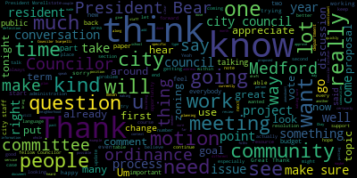

[Collins]: Present.
[Collins]: Yes.
[Collins]: Yes.
[Collins]: Yes.
[Collins]: Yes.
[Collins]: Yes.
[Collins]: Thank you so much, Penny, for being here tonight and for presenting, you know, some of the process and progress that's gone into the work that this grant has enabled.
[Collins]: I think, you know, over the past year, this grant, I mean, I know it's gone on for more than the past year, but, you know, what's come out of this has been one of the things that I, you know, feel most proud of in the city.
[Collins]: It's really great to be able to see some first steps towards language equity, doing a better job of reaching out to the people who, you know, historically do not show up to City Hall,
[Collins]: are not reached out to, don't speak the language, you know, in whatever way, I think this is really important work.
[Collins]: And it's great to get sort of these concrete facts about what specifically has been done, what the grant has enabled the city to do.
[Collins]: I think that it's important for us to get a picture of what doing that work of bringing more of the community into community spaces, how that breaks down into roles and positions and programs, kind of gives those numbers some context.
[Collins]: You know, as a, as a Councilor, and I know that you in your office, you, you, you get this, you know, 10 times more than, than we do, but, you know, we hear from people looking for housing, we hear from people who are looking for pro bono legal representation, you know, the eviction crisis in Medford square several months ago, eviction help, you know, tenant organizing.
[Collins]: I'm been very involved with the mutual aid network for several years.
[Collins]: You know, I, what strikes me every time these conversations come up is,
[Collins]: It seems like over and over again, we hit against the fact that even our provider network are very close to hitting their bandwidth.
[Collins]: And I know that it's in my mind so strongly all the time that our regional network of providers is inundated.
[Collins]: There's so much need, you said for housing, food insecurity, there's so much need.
[Collins]: And I know that that's one of the many things that we need a regional approach for, we need more state assistance for.
[Collins]: Where this comes in as I think,
[Collins]: Given that it's so important for us to streamline on the local level as much as possible to make sure that everybody in our community who needs those resources can access them in an easy way.
[Collins]: I think this program is doing that and that everybody in the community can have equitable access to the resources that are available.
[Collins]: And I really hope that that work can continue in parallel with, you know, regionally and with our other providers working to make sure that we have more places to direct people to, you know, I'm sure it's heartbreaking for your staff every time you have to say,
[Collins]: I can get you on that wait list.
[Collins]: I can get you on that list.
[Collins]: I can't wait.
[Collins]: I can't get you on that wait list.
[Collins]: And I'm sure that's, I'm sure that's really hard.
[Collins]: So I just thank you for, thank you for this work.
[Collins]: I'm really excited to see how it continues.
[Collins]: And like vice president Behr said, so any way this council can support you and continue that work, you know, we're partners with you.
[Collins]: I just wanted to thank you for coming before us for having these numbers prepared and for your candor.
[Collins]: I think we all know that when you took the job here, you didn't sign up for a cakewalk, but we all know how much is on your plates with catching up from our financial backlog, reconciling everything, and we don't want
[Collins]: you know, your, your role in, in, in getting us up to speed to be any more, you know, painful than it has to be.
[Collins]: So I'm hoping that, you know, I'm looking forward to the presentation in January.
[Collins]: I really appreciate, you know, your help in dialing down how to get us what we need.
[Collins]: And I hope that, you know, at that presentation and the committee of the whole, if we refer it there, we can also at that point kind of assess what do we need going forward to make sure that this back and forth between the council and your offices, you know, having communication wise, what it needs,
[Collins]: just to make sure that that's as streamlined as possible.
[Collins]: So again, thank you for being here.
[Collins]: We do really appreciate your hard work.
[Collins]: Yes.
[Collins]: Thank you, President Morell.
[Collins]: You know, mostly right now, I want to, I know there are community members in the room, I want to hear
[Collins]: from community members.
[Collins]: But I just wanted to say at the outset, you know, yesterday's incident was heartbreaking.
[Collins]: It's traumatizing during an already extremely raw and difficult time.
[Collins]: These events affect the whole community.
[Collins]: As leaders, I think it's our responsibility to hear from people who are the most affected, the students, the families, teachers, and staff.
[Collins]: I think we can all agree, nothing is more important than our public schools being safe and stable and supportive
[Collins]: everybody who has to be inside of them.
[Collins]: I think that's a really shared goal.
[Collins]: And I think this heartbreak is shared that our schools are not safe.
[Collins]: They're not secure.
[Collins]: They don't feel supportive.
[Collins]: And, you know, in this conversation, you know, I want to hear from the people most affected.
[Collins]: That's the folks who go to the schools every day and the people who love them.
[Collins]: As we mentioned, you know, many Councilors, myself included, have papers later on the agenda for ways that this council can act within its power to try and be part of the solution.
[Collins]: We'll get into more of that later.
[Collins]: It's deeply troubling that we have to be having this conversation.
[Collins]: It's hard to put into words how to express sympathy for something so painful that's happened to kids just going to school and their families.
[Collins]: It's a sorry thing, the events that precipitated this discussion, but we have to have it and we're gonna have it.
[Collins]: Councilor Scarpelli and others were calling for urgent action.
[Collins]: We're calling for the council to act within its purview to try and be part of the solution.
[Collins]: And I completely agree, completely agree.
[Collins]: You know, we have to use our powers as city councilors to try and be part of the solution.
[Collins]: We aren't the school committee.
[Collins]: We can't be the school committee.
[Collins]: We can't make the type of the decisions that the school community is empowered to make.
[Collins]: We can use the powers that we have as the city council to try to direct resources where they need to go to try to be a part of the community-wide conversation.
[Collins]: to emphasize the voices of the folks that are most affected by this, to listen to the people who know best where those resources need to go.
[Collins]: And I'm glad that we get to be a part of that conversation.
[Collins]: I hope that going forward, this can be more collaborative, that we can all do our specific roles, but in concert with each other.
[Collins]: And lastly, since Councilor Scarpelli's resolution calls for public input, if anybody's here to give input, I just want to acknowledge that not everybody does feel comfortable speaking in public, especially on live TV.
[Collins]: It's not for the faint of heart.
[Collins]: And also not every comment, especially when kids and school security is involved, is best said in a public setting.
[Collins]: I just wanna restate for the record, whether we're in session or not, I'm available to any resident, to any constituent to field ideas, to hear your questions.
[Collins]: If you just need a listening ear, if you don't feel comfortable speaking tonight, you can always reach out to me, we're available.
[Collins]: So I just wanted to say that at the outset of any community input.
[Collins]: Thank you.
[Collins]: Thank you, President Morell.
[Collins]: And I'm speaking off the cuff here.
[Collins]: So I just want to say, you know, I think that what the community deserves today in the aftermath of yesterday's events, in the aftermath of other traumatic, tragic events, what the community deserves is
[Collins]: a communicative, collaborative city council.
[Collins]: They deserve clear communication, resolve to work together productively from all their elected leaders.
[Collins]: We owe our community better than infighting.
[Collins]: You know, we've disagreed on many things many times before.
[Collins]: Behind this rail, it'll happen again.
[Collins]: That's what we're here to do.
[Collins]: We're here to represent different viewpoints for perspective on issues.
[Collins]: We're here to represent different viewpoints for how to, how to craft strategy and how to respond to problems in our community and how to plan for the future.
[Collins]: But I think that we owe today, especially today and all days, we owe the community a productive use of our time, discussing available strategies for what we can do within our powers to try to deal with the problems before us.
[Collins]: I, you know,
[Collins]: What, what looks like a buzzword to one Councilor might be somebody else's best good faith, earnest approach at doing something that is within our power, within our purview to try to address specifically a problem that exists.
[Collins]: It's put forth in good faith.
[Collins]: And I think that tracks both ways.
[Collins]: I don't think it's productive for us to launch into
[Collins]: veiled personal attacks.
[Collins]: You know, I don't want, I don't want that to be what tonight is.
[Collins]: I think that we have to come together.
[Collins]: We have to discuss the strategies that we've put forth.
[Collins]: We might not agree on all of them, but what our community is calling out for is a good faith, earnest discussion of strategies.
[Collins]: It does our community no good to spill a lot of ink and spill a lot of airtime, fighting about things that we cannot control.
[Collins]: The community deserves better than a performance.
[Collins]: we need to discuss strategies that we have the capacity to enforce.
[Collins]: And sometimes we will disagree about what those best strategies are, but that's what our time should be for.
[Collins]: So I have a rationale for why I brought the strategies that I think are most important to talk about here.
[Collins]: I know those feelings aren't universally shared.
[Collins]: I'll save that for when those papers are brought up, but I really hope that we can maintain
[Collins]: clear communication and sticking to the issues at hand and striving for concrete strategies for as much of this evening as possible, because that's what the community needs from us.
[Collins]: Thank you.
[Collins]: Thank you.
[Collins]: Um, I it's, it's hard to add anything after a story like that.
[Collins]: I don't have anything to add.
[Collins]: I just wanted to thank you for, for being here.
[Collins]: Thank you for sharing your story.
[Collins]: I'm not a parent.
[Collins]: I can't fathom what it's like to be a parent and go through something like that.
[Collins]: Something that unfortunately a lot of families in our public school systems have to go through.
[Collins]: It's heartbreaking.
[Collins]: I just want to say, you know, our hearts go out to you.
[Collins]: Thank you for being here.
[Collins]: Yes.
[Collins]: Yes.
[Collins]: Thank you very much, President Morell.
[Collins]: Tonight is the third night of the holiday Hanukkah.
[Collins]: I hope my colleagues will join me in wishing a
[Collins]: Chag Sameach or happy holiday to all who celebrate this holiday.
[Collins]: Celebrates the legend of an oil candle that burned in probably for eight whole nights.
[Collins]: And I think tonight we can celebrate the miracle of a hypothetical candle that burned for a probably five hour city council meeting.
[Collins]: So thank you.
[Collins]: Yes.
[Collins]: Yes.
[Collins]: Yes.
[Collins]: Thank you, President Morell.
[Collins]: Just to keep it very brief.
[Collins]: This is a project that I've already discussed with the director of PBS.
[Collins]: This came about because of my involvement in the Solid Waste Task Force.
[Collins]: They thought that an ordinance to this effect would help further the overall goals of the task force and further streamline
[Collins]: standards and operations for all waste haulers in Medford.
[Collins]: They've already indicated that draft language is available.
[Collins]: So I'd move approval for referring this into subcommittee for further study.
[Collins]: Yes.
[Collins]: Yes.
[Collins]: Yes.
[Collins]: Yes.
[Collins]: Yes.
[Collins]: Present
[Collins]: Sorry, I think Councilor Callahan had her hand up first.
[Collins]: Just a general comment, I really appreciate the communication so far as our budget season gets off to its start.
[Collins]: I know that it's been,
[Collins]: busy start to this kind of forecasting, assessing, and planning season.
[Collins]: I appreciate the communication so far, and I think this presentation is really helpful as we head into and get further into the weeds together.
[Collins]: I haven't heard a lot of specific questions from me tonight because I think sort of the scope that we're looking at that President Bears just summed up are kind of the concerns and questions that are on all of our minds, which is, you know, as we, as the work gets on, it continues on your side to try to
[Collins]: bring the two numbers in reconciliation with each other.
[Collins]: You know, obviously the question that we are all, you know, continuing to discuss is reconciling what we have with our fixed non-negotiable costs, especially in our first budgeting year after ARPA, which, you know, this will be my first budget after ARPA.
[Collins]: It feels like a seismic change.
[Collins]: And I know that, you know, essentially we have our rock solid non-negotiables
[Collins]: And I think for this council, we have other non-negotiables that are technically negotiable, but from the value that they bring to the community, you know, often come into this conversation.
[Collins]: We're having a budget conversation here that we know is fiscally really difficult.
[Collins]: I think that we're all, you know, all eagerly and with a little bit of anxiety anticipating, you know, when we get to that reconciliation phase, how many of those programs that are, you know, programming staff, you know, working together to make sure that we are,
[Collins]: keeping as much in this budget during this very difficult year as we can.
[Collins]: So I'm glad that we're doing that together.
[Collins]: I'm glad that we're starting early and I appreciate all of the early communication around what kind of scenario we find ourselves in.
[Collins]: And it is great to hear about all of the coordination efforts, which I know are not new, but get a little bit more finessed every year with trying to lump together those costs that occur in different places around the building, around the institution to make sure that we are not duplicating expenses where we can.
[Collins]: Because in this type of budget year, I know that every little bit
[Collins]: does make a difference, especially when we are talking about some of those grant-funded positions that we're trying to keep within the operating budget, which might be, you know, under $100,000.
[Collins]: Like, some of those cost-saving measures could really make the difference for positions like that.
[Collins]: So all of that is really meaningful.
[Collins]: It's appreciated.
[Collins]: And I know we'll probably have some tough decision points and discussions ahead of us.
[Collins]: But, you know, the early information is very appreciated.
[Collins]: Appreciate all the effort that you're putting into this.
[Collins]: Thank you.
[Collins]: Thank you.
[Collins]: Just a quick clarifying question on the same topic.
[Collins]: You said nine months on the RFPs.
[Collins]: Is that, do you expect to get proposals back from vendors or just what's the step in the timeline?
[Collins]: Understood.
[Collins]: Thank you.
[Collins]: Thank you, it doesn't have to be a motion, but will the slides from today's presentation be emailed around for the councillors who want it?
[Collins]: Yes.
[Collins]: Thank you.
[Collins]: Thank you.
[Collins]: Just want to again thank Director Dickinson, Chief of Staff for being here tonight and for preparing us for this meeting, all the documents you've prepared for this.
[Collins]: Second.
[Collins]: And thank you as well to the clerk for the budget presentation.
[Collins]: I don't think we need to thank ourselves for ours.
[Collins]: Motion to adjourn.
[Collins]: Second.
[Collins]: Present.
[Collins]: Thank you, President Bears.
[Collins]: I want to congratulate you again.
[Collins]: Rick, in my culture, we have a name for a person like you.
[Collins]: It's a mensch.
[Collins]: And, you know, this past week was, you know, we all talked about your service and making sure that this elderly tenant had a safe landing spot.
[Collins]: But I know that for you, this is just, you know, that was just a regular Tuesday.
[Collins]: And it's that kind of service that makes this honor so well earned.
[Collins]: So thank you for doing what you do all the time.
[Collins]: Thank you, President Bears, for co-sponsoring this resolution with me.
[Collins]: Jewish American History Month.
[Collins]: Heritage Month, excuse me, is a relatively new commemoration.
[Collins]: It was first proclaimed in 2006.
[Collins]: It was a collaboration between the American federal government and Jewish museums throughout the nation.
[Collins]: And I think that this is a wonderful opportunity to thank Jewish culture bearers in Medford, not just for their contributions, but for continuing to
[Collins]: tell the stories of this community.
[Collins]: And it's a good reminder to thank all culture bearers of all communities within Medford for continuing to tell their stories and share their culture and their history with the entire community.
[Collins]: We met again with the city council zoning consultant, and we reported out several items which are all on the city council agenda tonight.
[Collins]: The table of use and parking regulations, updating some definitions, updating just the digital version of the existing zoning map, and municipal exemptions, no substantive changes, just some tweaks to streamline the city's zoning procedures while we work with the zoning consultant on
[Collins]: more thematic changes.
[Collins]: Thank you.
[Collins]: Second.
[Collins]: Aye.
[Collins]: President Bears?
[Collins]: Motion to suspend the rules and take 24-366 out of order.
[Collins]: Yes.
[Collins]: Yes.
[Collins]: Thank you, President Bears.
[Collins]: This council has for a long time been a forum for residents when they are in a time of need.
[Collins]: I think it's fitting that former Councilor Caraviello is here tonight because in my first term, you know, he was the liaison that bridge that made that connection with
[Collins]: a whole group of tenants that were in a time of need and I think early 2022 with the Bradley Road tenants and made sure that Councilors were informed of what was happening in their building and could offer whatever support we could as they sought their next safe haven in Medford.
[Collins]: And I'm glad that this council can be a forum to hear from
[Collins]: residents in any occasion of need.
[Collins]: Over the past several months, tenants at the Brooks Park apartments have been keeping councilors informed of their situation, which includes, you know, the property changing hands, and unfortunately, a wave of displacement and evictions.
[Collins]: I understand that they've been seeking to converse and discuss and negotiate with their property owners that they can remain in this community, and I am grateful to them for
[Collins]: appearing tonight so that we can hear an update directly from the source about the status of their tenancies.
[Collins]: Thank you for being here.
[Collins]: Thank you, President Bears.
[Collins]: I want to thank again everybody who's spoken so far, everybody who's spoken as a member of the Tenants Association, and to the people who have come here to stand in solidarity with them, or the people who found themselves here and are supporting them nonetheless.
[Collins]: I think that
[Collins]: That seems like a really Medford thing to me to say, you're my neighbor and I want you to be able to stay here and I want you to stay a part of this community.
[Collins]: I wanted to keep it brief at the beginning to pass the mic to the folks who are really going through this, but I just want to give a little bit more context about how I came to know about this issue that these tenants are facing.
[Collins]: I think it's been almost a year since I heard about the sale of the Brooks Park Apartments for the first time.
[Collins]: It was actually somebody who lived, who owns a condo up the road who first reached out to me and said they had seen the for sale sign and they were really worried because they knew that this was naturally occurring affordable housing and they were worried about what would happen to the tenants after it was sold.
[Collins]: It was shortly after that that myself and President Bears, together with the planning department, started spending a few days just on the phone, all the time talking to an interested affordable housing developer and trying to see what we could do to make sure that this building would be competitive to sell to an affordable housing developer instead of to a for-profit housing developer.
[Collins]: And that didn't happen, unfortunately.
[Collins]: The offer just wasn't competitive with what the corporate property owner could offer.
[Collins]: And I remember thinking, it's going to happen again.
[Collins]: What happened on Bradley Road is just going to happen again.
[Collins]: And we're just waiting for it to happen.
[Collins]: You know, and then several months later, it happened.
[Collins]: And we saw that wave of notice to quit notices go out to these two, we're hearing about that wave of evictions.
[Collins]: And you know that just it, it breaks my heart as a representative of neighbors in this community.
[Collins]: When people from up the street or people who are going through this come to me as a city councilor and say, what are you doing about this?
[Collins]: How can you stop this?
[Collins]: How can you how can you keep these people in our community?
[Collins]: How can you help me to stay in this community?
[Collins]: And it breaks my heart because
[Collins]: There's not a lot we can do.
[Collins]: We had this conversation when Bradley Road was happening, we said we can stand with you, we can support you, and we can platform what you're going through, we can platform your testimony, we can stand with you when you rally outside the building, when you try and try and try to get your property owner just to talk with you, just to try and recognize you as a
[Collins]: a group of residents that are trying to collectively bargain.
[Collins]: But the state doesn't give us any other tools for keeping our residents who want to stay here in our community.
[Collins]: We don't have those tools that other states have.
[Collins]: You know, I think that I'm so glad that we're talking about what it will take to put the city in a position where we can in the future buy a building like this and say,
[Collins]: We got this.
[Collins]: We'll protect you.
[Collins]: That building's up for sale.
[Collins]: We're going to buy it so that Medford residents can stay there in perpetuity.
[Collins]: We're not at that place.
[Collins]: I think they're growing an affordable housing trust fund.
[Collins]: The analogy that comes to mind is it's like planting a tree.
[Collins]: Right now we're planting that tree.
[Collins]: That sapling is in the ground.
[Collins]: It's been in the ground for three months.
[Collins]: It's going to be decades before we can turn that into
[Collins]: purchasing buildings that will be affordable housing for members of this community, unless we start planting immediately.
[Collins]: And that's what's so sad.
[Collins]: We're behind the eight ball.
[Collins]: So we need to be thinking about growing that forest so that this doesn't keep happening again in the future.
[Collins]: But in the short term, we need more tools to help people like the tenants that are before us this evening, whose problem is right here and right now.
[Collins]: It can't wait 20 years.
[Collins]: So I want to thank you so much for being here.
[Collins]: And every time that a tenant speaks out for themselves and their neighbors, they're speaking out for all tenants who don't want to be moved around the region like pawns.
[Collins]: They want to stay here in their community where they work and have friends and have family and have invested and want to keep investing.
[Collins]: Thank you.
[Collins]: President Bears?
[Collins]: I just want to note that I think we've gotten pretty far off of the topic of the resolution.
[Collins]: I would like to respond to the misinformative spin put on
[Collins]: actions that I've made.
[Collins]: However, I'd prefer that we get back on topic and get on with the meeting because talking about the transfer fee was not on the agenda for tonight.
[Collins]: Thank you.
[Collins]: I'm gonna make a quick comment, and then I'm gonna make a motion.
[Collins]: Actually, I'll make the motion first.
[Collins]: The motion is to receive and place on file, I guess.
[Collins]: Yeah, that's a better idea.
[Collins]: Thank you, President Bears.
[Collins]: This is the first package small package of updates to come out of the planning and permitting committee and its work with the zoning consultant that the city council hired at the beginning of this term.
[Collins]: So we're starting it off with.
[Collins]: some proposals that I think will be, you know, relatively minor procedural compared to the scope of work that we will be continuing on for the rest of this term, which will be, you know, kind of encountering those bigger questions that constituents have been coming to us with for years around residential development and commercial development and mixed use development and incorporating the goals and themes of our comprehensive plan, climate plan, housing production plan.
[Collins]: These are less sexy.
[Collins]: We've been working with the zoning consultant and planning staff and the new building commissioner to make
[Collins]: What's the word I'm looking for kind of some like formatting changes to the table of use and parking regulations, so that all of the relevant information is on the same page and updated so that it's more readable, so that when city staff and potential developers are looking for this information, they don't have to go flipping through our very low court ordinances to find it.
[Collins]: We have also added and made some adjustments to the definitions in the zoning code to bring that up to best practice and to include some definitions that we might need to include later when we do tweak the zoning.
[Collins]: We would like to adopt the new digital GIS zoning map.
[Collins]: There's been no material changes to the zoning map proposed.
[Collins]: We'd just like to move away from the literally colored pencil version and have the official version be the digital version instead, which I think is a great step.
[Collins]: And finally, the proposal also includes certain municipal exemptions from the zoning code ordinances so that major city projects, for example, a new fire headquarters will be able to proceed in a more efficient, streamlined manner.
[Collins]: So procedurally, this has to be referred to the Community Development Board before this council can take a vote to codify it.
[Collins]: So I'd motion to send it to the CDB.
[Collins]: Yes.
[Collins]: Yes.
[Collins]: I'll let George go and then I'll speak.
[Collins]: I'm happy to defer to a presentation by a member of the administration, President Bearsford.
[Collins]: Thank you, President Bears.
[Collins]: Thank you to my fellow Councilors for their comments on this.
[Collins]: I just want to note that this is the second time that a Stabilization Fund paper has come before us.
[Collins]: Last year, the administration submitted a similar but different paper.
[Collins]: At that time, we decided that creating that structure and making a large appropriation all in one fell swoop was not the right timing for the city.
[Collins]: This time, the paper comes to us
[Collins]: After months of ongoing discussions about this city's financial future, those discussions must and will continue.
[Collins]: I do believe that it is the best practice for cities like Medford to have a rainy day fund, in the same way that many households have a rainy day fund for unforeseen emergencies.
[Collins]: I think that this is an appropriate time to create the structure and then subsequently have those conversations about how much is appropriate to put into the fund and when, because this paper does not call for an appropriation, simply the creation of the structure.
[Collins]: I also want to note this, to just reemphasize, there's no money changing accounts in this paper.
[Collins]: If there were to be, it would be a reappropriation of money already in the city's coffers and the community's coffers.
[Collins]: I think that this is the right time to set up the structure and then again have those community conversations about how much it makes sense to put into that rainy day fund.
[Collins]: And when the next time we have these community wide emergencies come up, we are better prepared to take care of Medford residents.
[Collins]: I would motion for approval.
[Collins]: Thank you, President Bears.
[Collins]: I want to thank Councilor Leming for co-sponsoring this proposal with me.
[Collins]: I'll try to be as brief as I can.
[Collins]: Housing affordability, unaffordability continues to displace Medford residents from where we grew up, went to school, the communities that we worship in, study, have community ties where we go to work.
[Collins]: It is becoming more and more out of the question for working class and middle class people to live here, and no one is going to swoop in and fix that for us.
[Collins]: I know that Medford residents deeply value being a welcoming and diverse community.
[Collins]: The question is, are we willing to have the conversations and utilize the tools that will help us keep it that way?
[Collins]: If we want our Affordable Housing Trust Fund to be more than a talking point, we know that we need to create dedicated funding streams so that it can manifest in housing and programs that will make it possible for us to keep Medford residents in Medford and for us to welcome new neighbors.
[Collins]: Real estate transfer fees are one tool that the Governor has indicated provisional support for.
[Collins]: That's why we're proposing to consider it.
[Collins]: Our methods for meaningfully funding affordable housing are too few and far between to dismiss this out of hand, and our existing funding streams, including CPA, are unfortunately insufficient on their own.
[Collins]: The scale is too great.
[Collins]: Displacement is already happening.
[Collins]: As Councilwoman said, what's before us tonight is whether we want to have the conversation about how to tailor this tool to dedicate a small percentage of only the highest ticket real estate transactions towards the most underinvested in housing in our community, the housing we desperately need and have a very severe shortage of.
[Collins]: I want to be clear, if we vote this into committee tonight, then we can and we will get into the weeds with the community.
[Collins]: We can discuss how to tailor this to affect the appropriate type of highest value sales so as to capture a small percentage of the huge value increases that have come into this region as living in Medford and places like it has become more expensive and more desirable.
[Collins]: We can consider exceptions, like for elders, for people making transfers to close family, or for people selling at a loss or at minimal profit.
[Collins]: Essentially, we can go through what would need to happen in order for this to be a net positive for this community.
[Collins]: And then I want to remind everybody, this would need approval from the mayor, our state delegation, as well as the governor for this to actually take effect.
[Collins]: I want to be really clear, we are not implementing a tax tonight.
[Collins]: We are proposing to send this idea to committee to start a conversation, and I believe it is a very necessary conversation.
[Collins]: I thank my fellow councilors and the public for their time.
[Collins]: I will motion for approval.
[Collins]: You know what, I'll follow up with Mr. Castagnetti after the meeting to thank him for sending along that New York Times Post article.
[Collins]: Appreciate it.
[Collins]: And I just think it speaks to the point that we need to be pursuing every tool at our disposal when it comes to affordable housing that can work for everybody.
[Collins]: Thank you, President Bears.
[Collins]: Um, this is an ordinance that I've worked on over my terms and city council I believe this is an exercise and compromise is the result of what we have put forward over a couple years of working on this hearing.
[Collins]: strong opposition to the idea of regulating these devices and also very strong support for the idea of mitigating these devices that we know cause significant air pollution and also noise pollution.
[Collins]: What we've arrived at is an ordinance that seeks to provide some reasonable constraints around which devices can be used,
[Collins]: at what times of the day, where, and phases out the most polluting versions of these devices, gas-powered, for residential and commercial users over different timescales over the next several years.
[Collins]: I do have one motion before we vote, which is Section 3858, subsection 2,
[Collins]: think that the word continuous should be removed.
[Collins]: A constituent got in touch and indicated that this created kind of a loophole that was counter to the goals of this section.
[Collins]: So that would be to remove the word continuous from section 3858 subsection 2 before we vote.
[Collins]: section 38, 58, and then numeral two in that section.
[Collins]: Thank you, President Bears.
[Collins]: So just to recap, the last time that we talked about this project was in November of last year in the previous term.
[Collins]: And I don't remember the dates that we met on it previously in 2023, but I know that we've had numerous Committee of the Wholes on this topic before.
[Collins]: Overall, I think that
[Collins]: on the council, at least the last time this was discussed in the previous term.
[Collins]: The consensus on the council was very clear.
[Collins]: The intent here is to streamline the process by which one day food truck vendors may obtain that license so that they don't have to come before the city council.
[Collins]: I think in the past, especially for city events, things of that type, it's just been a logistical scheduling problem for vendors to line up
[Collins]: when to be the floor of the city council to get their permit in time before the event actually occurs.
[Collins]: And I think unlike some other types of vendor licenses, it's, I think there's perhaps less of a clear need for a food vendor, a food truck vendor to stand and present and talk about their business and talk about the reason for wanting to have a food truck.
[Collins]: at a one day event in the same way as it's important for people seeking, for example, first time common victualers license to come before the city council and present on the business that they're proposing to open up in the city.
[Collins]: Given that, just to recap, kind of the goal of this ordinance is to take what is right now a fairly inconvenient and cumbersome process for a fairly limited scope, setting up shop as a food truck for one day, and make that simpler.
[Collins]: So our goals coming out of the previous committee of the whole were to take the draft ordinance and really just simplify it to make sure that it aligned with newer existing Board of Health regulations in such a way that prospective food truck vendors could just go to the Board of Health, make sure that they met certain guidelines, obtain that license, and then go forth to be a food truck vendor for one day, perhaps at a pop-up,
[Collins]: or for a one-day event, and have that be that, and not have to involve the city council.
[Collins]: So we did request feedback from a number of department heads, some of which have followed up to give, I think, fairly limited comment.
[Collins]: I don't think that Director O'Connor has given a lot of feedback at this point, though we've been in touch with her about this project.
[Collins]: Our economic development department
[Collins]: forwarded along comment to council leadership, kind of agreeing that streamlining and simplifying the process is good for businesses in general, and also kind of adding to the chorus that we've heard from the Chamber of Commerce and some other businesses in Medford saying, you know, the only real worry here is the potential for competition between mobile food truck vendors and existing brick and mortars.
[Collins]: And I think that brings us back to the point that the intent of the council with this ordinance
[Collins]: is to create a better process for those one-day food trucks.
[Collins]: I don't think this is a project about getting more long-term food trucks into Medford.
[Collins]: So I think what would be helpful for kicking us off would be, I know that Attorney Stein from KP Law is here.
[Collins]: Attorney Stein, if you would be willing to walk us through the three documents that you've proposed here.
[Collins]: I think that we have draft amendments to the City Council ordinances, we have draft Board of Health regulations,
[Collins]: And then we also have one more, excuse me.
[Collins]: City Council regulations of mobile food vendors.
[Collins]: I think for myself, the City Council doesn't typically promulgate regulations, so I'm really interested in getting an overview of how these pertain to the goals coming out of our last meeting, and especially where the City Council regulations of mobile food vendors could potentially fit in, or if that's something that we should try to align inside of the Board of Health policies.
[Collins]: Thank you.
[Collins]: Thank you, President Pierce.
[Collins]: Thank you, Attorney Stein, for that overview.
[Collins]: That's very helpful.
[Collins]: And I think if I'm hearing you correctly, just to reiterate, it seems like the main two points coming out of your analysis are satisfying the stipulations that are sort of within the Board of Health's purview to weigh in on, like adherence to the sanitary code, making sure that everything you want to be happening in terms of sanitation and food safety within any vendor providing food is happening.
[Collins]: you know, things really on the board of health side.
[Collins]: And then on the other side, this piece that more intersects with the city council authority is use of public ways by vendors, in this case, food truck vendors.
[Collins]: And I think this is where, you know, I wanna give my fellow Councilors a chance to weigh in on this, but I think this is where I'm really curious if there's a way for us to designate this, this is a question of,
[Collins]: you know, in one scenario, the city council exercises this authority to sign off on use of the public way by vendors by assessing every food truck vendor application that is submitted and saying, yes or no, this is an appropriate or safe use of the public way, or no, we don't think that in this case, the public way should be used by this particular food truck vendor.
[Collins]: And I think for me, my priority for this meeting is talking about if there's more,
[Collins]: that.
[Collins]: I think the intent here is to get issuing one day permits, something that doesn't have to occur on our regular agendas anymore.
[Collins]: And secondly, because I would hate for this to turn into an issue of the City Council is
[Collins]: consistent rubric for why some and not others.
[Collins]: I know for the outdoor dining ordinance, we put a lot of work in and we had many conversations with city staff to say, okay, so who needs to check what box when it comes to traffic safety and visibility and having the bollards this far away from the travel lane to make sure that these licenses can be issued in a way that we're sure
[Collins]: you know, we're doing our due diligence to make sure that motorists and pedestrians are safe.
[Collins]: And then we handed that over to, you know, the relevant city department to, like, sign that form on the application.
[Collins]: So I'm wondering if there's something like that that we can do here.
[Collins]: We're in our ordinances, you know, if need be, we're updating to say, yes, food trucks are allowed on the public way, but in order to do that, you have to fill out this license application.
[Collins]: And on the use of the public way side that goes to
[Collins]: the DPW commissioner or the chief of police to sign off on traffic safety metrics or something like that.
[Collins]: The process is to obtain a license from the Health Division of the Inspectional Services Department.
[Collins]: So that's administrative, Malden, similar, Board of Health, Cambridge, inspections by city staff, and then submission to Cambridge license.
[Collins]: that we're going to be able to move forward with this.
[Collins]: Um, commission, so it makes me optimistic that there's a path forward here where this can be administrative task, and we don't have to.
[Collins]: I also think you know, as always, Councilors Scarpelli's point is well taken, and that's why I'm glad that we're targeting the intent of this ordinance at one day.
[Collins]: Food truck vendors and hopefully We can find a simplified path towards that.
[Collins]: Thank you, President Bears.
[Collins]: Give me a second.
[Collins]: I'm organizing my thoughts.
[Collins]: You go first, then I'll go.
[Collins]: I have a comment I'd like to make, which could be an alternate.
[Collins]: Thank you, President Barras.
[Collins]: Thank you, Councilor Scarpelli.
[Collins]: I agree.
[Collins]: I think we've gotten out of scope here.
[Collins]: Among other things, I'd like for us to be getting close to a point of resolution on this project, and I think that perhaps there is
[Collins]: um, value in a conversation about this issue of does City Council adjudicate, um, licenses being issued over on school custodian property?
[Collins]: Um, but we're getting out of our scope here and I and I think that there's
[Collins]: to move forward on this ordinance without having to wade through all of the weeds on that.
[Collins]: I do think that's a separate conversation, maybe one that informs this, but I think that the intent for the council here for many months has been to streamline the process for one day food truck vendors, and I don't want us to have to go through that process in order to finish up here.
[Collins]: In my perspective, I think what we
[Collins]: What I would like to see is an amendment to the city council ordinances that says, yes, we allow one day food truck vendors.
[Collins]: There's some language in there that says, here's how we make sure it's a one day permit and not a one day that happens six days out of the week.
[Collins]: Maybe it's the permitting authority, or sorry, the licensing authority may
[Collins]: submit like one day licenses but only you know one per vendor for a three or six month period or something like that so we make sure that these are indeed one day licenses and not de facto you know all week round permits to Councilor Scarpelli's point.
[Collins]: It seems to me that the overall formula here
[Collins]: for conditions that must be satisfied to get a license is permission from the custodian or the private property owner plus adherence to Board of Health regulations and other public safety regulations equals the one day license.
[Collins]: I
[Collins]: Maybe I'm wrong about that.
[Collins]: But I think that there's a path forward here where we could try to make some progress on the text of what's before us, perhaps modeling, simplifying what's before us along those lines, modeling some of the language around who creates the regulations for the licenses based off of our outdoor dining ordinance, which has already been passed.
[Collins]: maybe that can be drafted perhaps by a member of this council, we could come back and then have legal review of that document as opposed to, I think we've gone through several rounds here and I think the context is very helpful and of course we appreciate Attorney Stein's time spent on this.
[Collins]: But I think we're all very eager to get this to a simpler place and proceed from there.
[Collins]: And I wonder if there's a way we can kind of scale this back to the basics and
[Collins]: convene again as a council to make sure that we're locked in on the basics, and then have another meeting after legal review, where we finalize this.
[Collins]: I appreciate that.
[Collins]: I would be happy to put that into a form of a motion unless we feel that the discussion has proceeded along enough that the suggestion is now irrelevant.
[Collins]: But barring that, I would make the motion to
[Collins]: authorize myself or President Bears to take a pass at a redrafting of this along the lines of this conversation.
[Collins]: Aye.
[Collins]: I thank my, especially newer Councilors for wading into this perhaps unexpectedly complicated topic.
[Collins]: Appreciate Attorney Stein's time on this call and in preparing for this meeting.
[Collins]: And I would motion to keep the paper in committee and adjourn.
[Collins]: Present
[Collins]: Thank you.
[Collins]: Thank you so much for being here.
[Collins]: Thank you other board members and trustees for being here as well.
[Collins]: Appreciate this presentation.
[Collins]: I also know me and several other Councilors were able to take you up on the invitation to attend.
[Collins]: a public trustees meeting several weeks ago, maybe last month.
[Collins]: Really appreciate the dialogue about where the library is at and the budgeting process.
[Collins]: I say this about a lot of departments, but I really like these hearings for being able to just shine an extra spotlight on the work that the library is doing, that the work that the department is doing year round.
[Collins]: I know during budget time, conversation is often like, what do we have to take to get what is on offer to the community?
[Collins]: And the library is such an excellent example of what the community is getting out of the work that we're investing in, especially when you're talking about the programming that isn't even inside of the operating budget, but offers so much to, in many cases, the people in Medford who really need the most.
[Collins]: Something like ESL classes, I know that was such a need to be within Medford City boundaries for such a long time.
[Collins]: So it's just very special to hear of this and other programming going on in the building now that we do have the new building.
[Collins]: And I know that moving into the new building has been kind of one of the central pieces of the library narrative over the past few years, going from that sort of artificially smaller budget during the interim space to now try to, you know, funding for the big, beautiful, modern, contemporary building that the library is now in.
[Collins]: I know that was certainly a conversation last year and something that we'll be continuing to work through over the next few years to make sure that the library is supported to really be operating.
[Collins]: at full capacity and bring that full capacity into the operating budget.
[Collins]: So that's just a note of acknowledgement and thanks to you and all the work that's going on behind the scenes all year round to make this such a useful space for the community.
[Collins]: Well, that's great to hear.
[Collins]: Thank you.
[Collins]: I know it's been put to really good use.
[Collins]: I have just one small question.
[Collins]: I know we've talked about this in the past.
[Collins]: I know that there was some of the part-time workers at the library, there was kind of a talk of a raise.
[Collins]: There hadn't been a raise in several years.
[Collins]: The under-fixed costs, the increase that was mentioned, the part-time pay increase for hourly part-time, does that cover the proposed raise, or is that
[Collins]: That's great.
[Collins]: Yeah, I'm so glad that we're bringing up that baseline this year.
[Collins]: Do you know off the top of your head, what is the amount of the raise per hour?
[Collins]: Great.
[Collins]: Thank you for everybody.
[Collins]: Thank you so much.
[Collins]: I don't have any questions.
[Collins]: Very straightforward.
[Collins]: Really appreciate it.
[Collins]: But thank you so much for coming here every year and walking us through it.
[Collins]: Just wanted to say between things like the Post Commission and now FlexPost, you truly are working in an evolving field.
[Collins]: So thank you again for your service.
[Collins]: Present.
[Collins]: Thank you, Chair Lazzaro.
[Collins]: Just to recap, I believe we had our first substantive discussion about this ordinance in February.
[Collins]: At that time, the committee approved a motion for me as sponsor of the paper to draft a, actually I believe we motioned to have an ordinance be drafted in February, I believe we discussed it in March.
[Collins]: I based the draft off of wildlife feeding ordinances that are present in other of our, you know, nearby or neighboring
[Collins]: communities in Massachusetts and beyond.
[Collins]: To quickly recap on the intent and goals of this ordinance, this is not an ordinance to illegalize bird feeders or to prevent any sort of normal
[Collins]: activity that we do with, you know, household animals or songbirds.
[Collins]: This is in response to problems that residents have noted in the community with
[Collins]: food scraps being inappropriately left out as kind of deliberate lures for wild animals or inadvertent lures for wild animals that are creating the presence of, you know, a kind of destructive presence of wildlife.
[Collins]: In our residential neighborhoods, a couple residents have come to me and said, you know,
[Collins]: My neighbors have this practice of leaving out XYZ unopened containers.
[Collins]: It's really a lot of food, it's a lot of peanuts, it's a lot of seeds, what have you.
[Collins]: And it would be one thing if the raccoons or the pigeons would stay on their side of the fence, but obviously animals do not observe private property.
[Collins]: And our code enforcement currently does not have a mechanism for enforcing
[Collins]: this type of nuisance.
[Collins]: So the intent of this ordinance is not to legalize any sort of harmless animal related activity, but just to be able to provide a recourse for Code Enforcement or Board of Health to issue warnings or tickets in the case of inappropriate animal feeding that really is creating a nuisance for other people.
[Collins]: So at our last meeting on this topic in March, we passed several motions to receive feedback on the ordinance from department heads, code enforcement, from the Board of Health, from the animal control officer, and to receive a legal review.
[Collins]: So we have received some feedback from department heads on the ordinance.
[Collins]: I don't know if any of them are on the call tonight.
[Collins]: I have some comments in my email from department heads.
[Collins]: We also did receive a legal review from KP Law yesterday midday.
[Collins]: So this is the first chance that the council has to consider legal opinion on the ordinance as well.
[Collins]: So that's the recap of where we are so far and I have
[Collins]: comments that I can offer about where I think we should go next with this, but I'll pause there.
[Collins]: No, I was just gonna make a comment, but I wanted to wait for you to recognize me.
[Collins]: Oh, go ahead, please.
[Collins]: Thank you.
[Collins]: I just wanted to, I think that, so this is the first time that we're seeing the legal review and just to recenter on, you know.
[Collins]: possible avenues for this committee.
[Collins]: We have the feedback from department heads that we could review on the draft ordinance, and most of that has been positive and affirming.
[Collins]: There's been some suggestions for how to just firm up the language a little bit, but no contesting of the goals.
[Collins]: There are some comments from residents that I've received that I'd like to at least put on the record.
[Collins]: And then this is our first opportunity to review the legal review together.
[Collins]: So I think that it's possible that there might be some language changes that this committee might want to consider before we report this out to committee of the whole, just because we haven't had a chance to consider this legal opinion until doing it live.
[Collins]: Great.
[Collins]: So I am happy to, because we don't have council with us here tonight, I'm happy to kind of run through.
[Collins]: Um, this overview of the legal review of the ordinance.
[Collins]: And then I would also at the end, I would motion to circulate the legal review to committee members that we can, um, review.
[Collins]: Yes.
[Collins]: Uh, one second.
[Collins]: Great.
[Collins]: Thank you.
[Collins]: Excellent.
[Collins]: So I'm gonna go over this kind of, I'm gonna try to go over this briefly.
[Collins]: There was a recommendation to, I think, disaggregate intent from purpose and intent, or there was a recommendation that
[Collins]: Here, Attorney Braun says, some municipalities seek to add an intent element to distinguish between accidental feedings and intentional misconduct.
[Collins]: As written, the section A just reads, the intent of this ordinance is to protect the health, safety, and welfare of the community.
[Collins]: That does seem to me like a good suggestion in the intent section to say the point of this is to target intentional inappropriate feeding, so that it's very clear that I've received some questions from residents around
[Collins]: What does this mean for the garden in my backyard?
[Collins]: What does this mean for my beehive?
[Collins]: What does this mean for my bird feeder?
[Collins]: And I do think it's important to make it clear that this is really targeting inappropriate feeding and not accidental feeding that does not result in nuisance.
[Collins]: Though I think it is also true that this is an ordinance that will only be enforced when a problem actually occurs.
[Collins]: And so I think that's an important part of that remedy as well.
[Collins]: So there's a suggestion, i.e., whenever the animal control officer becomes aware the wildlife has been found feeding on any substance, dot dot dot, and the resident or person responsible has been notified of the occurrence thereof, any subsequent feeding shall be evidence that the feeding was with the knowledge or intent.
[Collins]: So that's, again, to focus on when somebody was given the opportunity to know better and kept doing it anyway.
[Collins]: We have a comment about
[Collins]: if, you know, garbage or compost centers unintentionally being the source of wildlife feeding.
[Collins]: Again, this is kind of around making sure that nuisances don't accidentally arise.
[Collins]: I think that there's a section later in this ordinance that kind of takes care of this in other language that essentially says, you know, the first penalty for violating this ordinance should it pass is never simply getting a fine, but rather
[Collins]: you know, the enforcing officer saying, it looks like this is a source of a problem on your property, please remedy it.
[Collins]: And then failure to remedy it, of course, might require a further remedy.
[Collins]: There's a recommendation to define what a bird feeder is, just so there's no ambiguity there.
[Collins]: always count on attorneys to point out to us what seems specific that might actually not be.
[Collins]: Likewise, a recommendation to define pets, and this brings up a comment that was made earlier in this process, where do feral cats or stray cats fall?
[Collins]: Consider whether we want to specifically address cats, such as no person shall feed any feral or stray cat, or this section shall not apply to persons feeding feral or stray cats with the express purpose of adopting and domesticating them within a certain set number of days.
[Collins]: And I think that might be something of interest to this committee based on comments that were made in earlier meetings.
[Collins]: Going further down to enforcement and penalties.
[Collins]: Attorney Braun says, in my opinion, the non-criminal disposition statute requires that an ordinance must specify the enforcing authority to place residents on notice and may not delegate a designee to do so.
[Collins]: I have a question about this because this seems dissimilar from how some of our other ordinances are written.
[Collins]: We often put X department head or their designee into our ordinances.
[Collins]: So I think this is certainly something that I'd want to double check.
[Collins]: So to summarize, it appears to me that many of the comments are around defining with more specificity those terms around bird feeder pets.
[Collins]: So it's very clear, you know, what is an allowable use in the case of bird feeders, which I think is a very common allowable use.
[Collins]: Making sure that it's clear
[Collins]: what I'm going to put in air quotes, what sanctioned animals, you know, are and are not included.
[Collins]: And I think the exception for feral cats where there's the intent to domesticate and vaccinate them is one that might be relevant to Medford residents.
[Collins]: And I think that there's a way to perhaps synthesize the suggestion around clarifying, you know, unintentional
[Collins]: Nuisance creation via compost containers or garbage.
[Collins]: I think there's a way to just like dovetail that more specifically with the language that's already in the ordinance.
[Collins]: And perhaps shoring up the intent section.
[Collins]: I have Most of the comments from residents that I have gotten apart from those who tell me that we really need this ordinance because they really need a remedy for
[Collins]: the nuisances that are finding their way onto their property because of foodstuffs that are adjacent to their homes.
[Collins]: A lot of those center around, you know, what does this mean about, again, what does this mean about my vegetable plot?
[Collins]: What does this mean about my outdoor barbecue?
[Collins]: What does this mean about my bird feeder?
[Collins]: What does this mean about my beehive?
[Collins]: Should I ever get one?
[Collins]: And I think that the intent section could help to clarify, or sorry, excuse me, could help to clarify one, that
[Collins]: This is an ordinance that seeks to correct for nuisances when they occur.
[Collins]: We're not trying to outlaw any, we're not trying to regulate something that isn't causing a problem, but also to give more clarity around this is not,
[Collins]: This is not something that's trying to eradicate any possible source of foodstuffs from somebody's backyard.
[Collins]: It's just simply trying to create the mechanism by which when there's a problem, code enforcement actually has an ordinance to point to so that they can enforce about it.
[Collins]: Because right now residents don't really have a recourse.
[Collins]: So I'll pause there.
[Collins]: Yeah.
[Collins]: And just to add on to what you're already saying, and I can say this with some authority because I was on a
[Collins]: has a number of.
[Collins]: the former Solid Waste Task Force when we spoke quite at length about the role of the composting program and understandable resident concerns about the composting containers.
[Collins]: They're actually harder for animals to get into than the trash and recycling residential containers that residents are used to because most of them are actually locking.
[Collins]: They're a thick plastic, they're locking, they have lids, and they have been shown in other communities to actually reduce the extent to which
[Collins]: waste receptacles are an attraction to wildlife.
[Collins]: So I certainly wouldn't want to give off the impression that composting is expected to be a greater attraction for wildlife.
[Collins]: And I think this again gets into not specific to trash and compost receptacles in particular, but rather, if anything, anything mundane happens to become an attraction for a nuisance, what then?
[Collins]: And I think
[Collins]: I think this is in line with how the ordinance is currently written, and perhaps there's a clarification we can make.
[Collins]: But just to shore up that, if something is attracting a nuisance, the first step is to, for if neighbors can't work it out amongst themselves, for a city designee to say, this is attracting a nuisance, it's time to fix it.
[Collins]: And then if a remedy doesn't occur, then we have the same recourse that we do for any other nuisance that's going unremitied, which is a warning, a ticket, and then a fine.
[Collins]: I think my recommendation, and if there's assent for this, I'm happy to offer it as a form of a motion.
[Collins]: I think that I personally would benefit from some time offline to digest the legal review, which again, I apologize, I haven't had time to look deeply at it before it came in yesterday midday.
[Collins]: As ordnance sponsor, like I created the first draft, I'm happy to create a revised draft that incorporates those suggestions around the bird feeder language from Director O'Connor and Animal Control Officer Hogan around the bird feeder to incorporate those suggestions from the legal review, provided that the rest of the committee agrees.
[Collins]: And to include, that would be adding the intent section, adding that language around the definitions of bird feeders and pets,
[Collins]: you know, contemplating the exception for feral cats, depending on the will of the committee, and just making sure that all of the comments from the legal review that the committee agrees with are incorporated.
[Collins]: Personally, I think I'd do that more effectively offline than during this committee.
[Collins]: My motion would be to authorize myself as lead sponsor to do that work.
[Collins]: And then I would really prefer to bring a revised draft back before this committee as early as possible in July.
[Collins]: Just because I know that I really appreciate the support on this ordinance that that has been expressed by Director O'Connor and Animal Control Officer Hogan and our code enforcement officers.
[Collins]: And I know there's a lot of eagerness for this enforcement ability in the community from folks who are
[Collins]: currently suffering nuisances, so I would love to be able to incorporate those and then expedite that in a July committee meeting.
[Collins]: Okay, understood.
[Collins]: Great.
[Collins]: Chair Lazzaro?
[Collins]: Yes.
[Collins]: If we could, I don't know if we're getting to the end of our discussion, but if we are, I just would like to hear opinions from my fellow councilors and any city staff or interested residents who are
[Collins]: On the call on the feral cat exception specifically just to make sure that I am editing in the right direction for our revised draft that will contemplate in July.
[Collins]: When I read over the legal review, I thought that the exceptions mentioned seem reasonable to me, sort of that it's fine to do that sort of like very limited baiting for the express purpose of capturing feral cats where the full intent is to
[Collins]: domesticate, spay, neuter, and vaccinate them.
[Collins]: I think there's nothing wrong with leaving food out for wildlife in that case when the intent is to make them cared for pets and no longer wildlife.
[Collins]: Clearly that's a very different issue than leaving, you know, lots of peanuts out that are attracting a horde of pigeons.
[Collins]: But I just wanted to make sure that there was remit around that before I incorporate that exception into the next draft.
[Collins]: Thank you.
[Collins]: I apologize for speaking over your council member.
[Collins]: Yeah, I think those points are well taken.
[Collins]: I also appreciate your perspective around not wanting to over litigate this because, of course, and I think that this is an important thing to remind ourselves and the public of when we're considering any ordinance with an enforcement mechanism, which is theoretically all of them, is enforcement kicks in when something is noticed to be in violation of the ordinance or creating a problem.
[Collins]: So I do think it's true what you say that
[Collins]: If baiting for wild cats so that they can be domesticated is going on and it's not creating a nuisance, then
[Collins]: the ordinance is not being violated and the ordinance does, you know, then it's not creating a nuisance, it's a non-issue.
[Collins]: And that is true whether or not the ordinance says so.
[Collins]: So I think it might be kind of a wash whether we put it into this language or not.
[Collins]: I would maybe propose that we, since this suggestion is new as of the legal review, I would maybe suggest that we run this exception by the animal control officer who I don't think could be on the call tonight just to get his two cents.
[Collins]: And then that could be something that we,
[Collins]: dispense with one way or another at our follow-up meeting in July when we hopefully finalize the ordinance.
[Collins]: Thank you, Chair Lazzaro.
[Collins]: I appreciate that.
[Collins]: And I think it's always a good point to make that ordinances
[Collins]: for setting policy or creating a remedy for problems, but it's also important to take the time to make sure that the language doesn't have unintended consequences.
[Collins]: I don't think that that is an issue here, but I certainly appreciate the feedback that we've gotten from residents on this and just clarifying notes raised in the legal review to make sure that the language is really clear in what this ordinance is about and what it isn't about so that we have a recourse for solving problems when they arise and when there is a problem that people can
[Collins]: feed birds and keep bees in peace.
[Collins]: So I want to thank our department heads for their comments on the ordinance and for their support of this ordinance.
[Collins]: And I appreciate all the residents that have advocated for this and weighed in on it from any direction.
[Collins]: Present.
[Collins]: Yes.
[Collins]: Yes.
[Collins]: I would also like to extend my thanks and congratulations to all the organizers of this event and everybody who participated, signed up to host a band on their porch or contributed in other ways.
[Collins]: You know, this is the type of thing that Medford residents have been wanting to see more of for a very long time, and it's great to see this event growing and flourishing more and more every year.
[Collins]: So thank you and my congratulations to the organizers and to all of the musical acts.
[Collins]: Thank you, President Bears.
[Collins]: Thank you for being here.
[Collins]: Just two quick questions.
[Collins]: When is the work plan to be done?
[Collins]: And I noted the recommendations around sidewalk restoration.
[Collins]: I'm just curious how much of the sidewalk is going to be restored?
[Collins]: Is it just the area immediately around the pole or is it more of the block?
[Collins]: If you happen to know.
[Collins]: What other areas were you... Or just how far up and down the sidewalk will the restoration be extending, or is it just gonna be the area immediately around the pole?
[Collins]: Okay.
[Collins]: Thank you.
[Collins]: And when is the work planned for?
[Collins]: Motion to approve pending the public comment period with the conditions recommended by the city engineer.
[Collins]: Thank you, President Bears.
[Collins]: This has come before City Council at a regular meeting once before when we procedurally had to refer it to the Community Development Board before it can come back to us for a formal vote.
[Collins]: This is the first package of zoning change proposals to come out of the Planning and Permitting Committee.
[Collins]: That committee has been working all year so far with the City Council's new zoning consultant on a host of zoning-related goals.
[Collins]: And this is that first set.
[Collins]: These are namely
[Collins]: What I would characterize as formatting, streamlining, and procedural changes.
[Collins]: We'll get to our discussions of more of those bigger themes and bigger changes later in the year.
[Collins]: These are simpler.
[Collins]: The first is to, as was stated, just to quickly restate that we all know what we're talking about, changing the format of the table of uses and parking regulations so that that table is more readable.
[Collins]: The intent of this is to put the parking and loading requirements into a format that is more
[Collins]: intuitive, easier to understand switching away from a code based model.
[Collins]: And so that it's all on the same page.
[Collins]: So people who would like to do business in the city of Medford don't have to flip through our rather long code of ordinances to find what they're looking for.
[Collins]: The second is many definitions were amended or added into the definitional tables that these could be made useful later in the zoning process or to just update and modernize the definitions that we're currently using.
[Collins]: All of these changes were rigorously considered with city staff as well as zoning consultants over the course of several meetings in April and May.
[Collins]: We are also taking a vote to adopt the GIS digital version of our zoning map.
[Collins]: There are no substantive changes being proposed to the zoning map.
[Collins]: This is just to make it so the official on-the-book zoning map for the city of Medford is the one that is digital, is the one that has GIS letters, and is not the one that is quite literally paper and colored pencil.
[Collins]: A good step for year 2024.
[Collins]: Finally, the last proposal in this package is to exempt certain municipal uses from the table of use in parking regulations and the table of dimensional requirements.
[Collins]: This is to streamline the process for the building of certain city infrastructure so that those buildings, for example, hypothetically, a new fire infrastructure, wouldn't have to go through the cumbersome zoning ordinance, zoning, sorry, zoning variance regulations that it would otherwise potentially be subjected to.
[Collins]: I would motion to take the first vote to be ordained after a comment from my colleagues.
[Collins]: Need I make a motion to adopt the recommendation from the CDB in my motion?
[Collins]: Motion to approve with the typographical suggestion from the CDB.
[Collins]: Thank you.
[Collins]: I would motion to suspend the rules to take papers 24-415, 24-045, 24-410, 24-413, 24-414,
[Collins]: out of order to join those papers for consideration and to suspend Rule 21.
[Collins]: Yes.
[Collins]: Thank you, President Bears.
[Collins]: Thank you, Mayor.
[Collins]: Nice to see you.
[Collins]: I want to thank you for the comprehensive proposal.
[Collins]: I also want to thank you for presenting each of these pieces in context of one another.
[Collins]: For me, that is the theme and the precondition for this budget season is all of these pieces have to work together.
[Collins]: This is my third budget season that I've had as a councilor.
[Collins]: This is the least chaotic one so far.
[Collins]: Let me put that another way.
[Collins]: We're facing some really big difficulties here.
[Collins]: The budget process has always been difficult.
[Collins]: It's been difficult while I've been on the council.
[Collins]: I know it's been difficult before.
[Collins]: We're coming off of a really difficult period.
[Collins]: I've always made it clear what my red lines are.
[Collins]: This collaborative process has allowed us to reach a budget plan that I am
[Collins]: comfortable and happy to put forward tonight.
[Collins]: We have known for a while that Medford has a funding problem.
[Collins]: This has been the topic of so many conversations between me and my colleagues in these chambers, outside of these chambers, the school funding problem and infrastructure funding problem, the capacity building problem, the problem of weaning off of one-time funds.
[Collins]: These are not problems that are unique to Medford.
[Collins]: They're problems that we have to work through.
[Collins]: In the two and a half years that I have been on the council, we have discussed, I think, every mechanism that could contribute towards the solution.
[Collins]: As a council, we've made zoning changes that could promote new growth, and we're working on more in our continuing zoning work that we'll put to votes later in the term.
[Collins]: We've discussed the city's ARPA strategy.
[Collins]: President Bears and I even proposed an override back in 2022, though it did not move forward, and that was robustly discussed in the previous term.
[Collins]: This year, everybody is well aware that countdown clock on our strategy for the future is hitting zero.
[Collins]: ARPA and ESSER are going offline.
[Collins]: So since last fall, the financial task force, which was convened last year as a condition of the FY24 budget, has been meeting to talk about what's next.
[Collins]: I've been really proud to be a part of that process, which I joined when I joined city council leadership at the beginning of this term.
[Collins]: And I think that that has been part of that
[Collins]: that really important critical pivot towards greater collaboration, which has also been affirmed by you and your staff's participation in the budget ordinance process, as well as this collaboration on meeting the needs of this budget season.
[Collins]: This is the culmination of many meetings over many months discussing precisely what
[Collins]: our needs are and how to meet them.
[Collins]: We have rigorously considered the needs facing Medford public schools and city infrastructure.
[Collins]: Among these branches of government, we certainly don't always agree, but the bottom line is that there's a set of facts and a set of goals that we are completely aligned on.
[Collins]: then I also believe that the community fundamentally is aligned on.
[Collins]: We need to maintain at least level service at MPS, we need to staff it properly, and we need to enable public education to start getting better.
[Collins]: We need our roads and sidewalks to start getting better.
[Collins]: We need to be in a position
[Collins]: to pay our city and school staff competitively, and unless we take action, those things will not happen.
[Collins]: Our schools will not be what we want them to be, what we need them to be.
[Collins]: We will lose students to private schools, and those who cannot afford that type of expense will suffer the most.
[Collins]: Our infrastructure will depreciate.
[Collins]: Those costs will get passed along to individuals at even higher rates, and we will lose good city workers to other municipalities or the private sectors.
[Collins]: There's always been a lot to discuss in how we solve these problems, but I truly believe that, for the most part, we are aligned on these facts and these goals, because we all know that those outcomes are unacceptable.
[Collins]: And I think a hallmark of this proposal on how to pivot towards the future hinges on a combined approach of coming out of the reason that we're
[Collins]: Sorry, can you tell I'm nervous?
[Collins]: This is only the biggest vote that we take all year.
[Collins]: Pardon me.
[Collins]: Just breaking the fourth wall here for a sec.
[Collins]: You know, we only had ARPA and ESSER to wean off of in the first place because we're coming off of such a hard time.
[Collins]: And now we're adapting to that new normal, figuring out what it will require of us, and taking the affirmative steps to gain the revenue that we need to keep Medford a place that supports the people that live here.
[Collins]: So for me, this budget is conditioned on its context.
[Collins]: We are considering it in the context of two override proposals, one from President Bears and I, one from you, Mayor, totaling $7.5 million, which if they pass, will start stabilizing our school and city operating budgets in quarter three of this fiscal year.
[Collins]: We're considering that in the context of a $1.75 million appropriation to stabilize the school department in quarters one and two of this year.
[Collins]: And to me, that's critical.
[Collins]: That is what my sense of confidence in this plan is hinged on.
[Collins]: That gives us the breathing room to get to the override vote, which we put to residents in November without devastating effects happening to the school's department in the meantime.
[Collins]: And then the overrides should they pass will allow us to start investing in things getting better and bringing up that baseline year over year.
[Collins]: I know that a lot of people are frustrated that we have to be here at all contemplating overrides.
[Collins]: I think that totally makes sense.
[Collins]: I really do.
[Collins]: I also wish that we were, I wish that this was something that no municipality had to contemplate.
[Collins]: But I think it's important context to note that since 1990, 300 of the 351 cities and towns in Massachusetts have advanced at least one override.
[Collins]: And many of them have done them lots of times.
[Collins]: There have been over 4,500 individual overrides on ballots in municipalities since 1990.
[Collins]: For debt exclusions, that number is even higher.
[Collins]: There's been 313 cities and towns that have advanced debt exclusions since 1989.
[Collins]: totaling over 4,000 individual debt exclusions.
[Collins]: So I just put that out there to say, it is really serious to do this.
[Collins]: It is really serious.
[Collins]: And that's why I'm glad that this is a mechanism that goes on the ballot so that residents of Medford will choose by popular vote.
[Collins]: It is serious, but it is not an aberration to do this.
[Collins]: I think that the fact that Medford is one of those few municipalities that has never done this is part of the reason that
[Collins]: Our budget seasons have been so hard lately.
[Collins]: And I'm proud that we're advancing proposals to start pivoting towards a more sustainable future.
[Collins]: So I will close by saying I am happy that this year we get to vote on not just a budget, but a plan to advance Medford out of underfunding and into a future where we can reliably provide better services for all students and all residents in our community.
[Collins]: Thank you.
[Collins]: Thank you, President Bears.
[Collins]: I went pretty long earlier.
[Collins]: I'll try to keep this short, bring my average down.
[Collins]: First thing, about the financial task force.
[Collins]: And I think that there's some people who don't need to hear this, but when we talk about the press release that was released on Friday, that we all collaborated on, city council leadership, mayor and the mayor staff, school committee leadership,
[Collins]: What that press release contained was the budget that was already made public, line by line, department by department, that the city council had already reviewed in budget hearings that the entire community was privy to if they cared to read those agendas or attend the meetings.
[Collins]: those same numbers, very minor, essentially all the numbers that we already had plus one and three quarters million dollars from ARPA to the schools proposed and the two overrides and debt exclusion that everybody gets to vote on.
[Collins]: So just to clarify what was presented on Friday
[Collins]: and how transparent or untransparent it was, was all the numbers that the city council and the school and the public already had, plus an appropriation of one-time funds, which many people, including myself, were hoping to see and working to secure.
[Collins]: And then three things that we get to put to the voters.
[Collins]: So I just want to set the record straight on that, because I think there's a lot of editorializing going on.
[Collins]: Second, we have discussed free cash a lot on this council, last term, this term.
[Collins]: I have had, you know, it's no secret that we disagree on a lot of things.
[Collins]: We agree on a lot of things.
[Collins]: I've had some pretty sincere concerns about our free cash strategy in the past.
[Collins]: I have my own wishlist for how I'd like to see some of that money appropriated, which I know is different than the strategy that the mayor has.
[Collins]: To me,
[Collins]: That is irrelevant here.
[Collins]: I do not see the end game in appropriating large sums of our free cash reserves towards operating costs.
[Collins]: What is the end game of that?
[Collins]: We end up back here.
[Collins]: we can wish upon a star that we're going to see new growth accelerate at such an incredible rate that we are going to be able to fill that gap exactly in 12 months.
[Collins]: But I don't think that we should be budgeting on wishful thinking.
[Collins]: Again, I've had sincere concerns and grievances about how we're using free cash in the past.
[Collins]: I have my own preferences.
[Collins]: It is not the path forward that I think the community wants and needs to
[Collins]: allocate money towards the problem that we may never ever see again.
[Collins]: It pushes the can down the road.
[Collins]: I also think that finding these proposals divisive is completely a choice.
[Collins]: That's one of the wonderful things about this being a ballot question.
[Collins]: I think, you know, we're a room full of people who have
[Collins]: voted differently on things in the past, we will again in the future.
[Collins]: And that doesn't have to make us any less of a community.
[Collins]: We can talk about it and discuss it and debate about it.
[Collins]: And some people will campaign one way and some people will campaign another way.
[Collins]: And it does not have to divide us.
[Collins]: That is a choice.
[Collins]: And I think when people are telling you that you're being divided,
[Collins]: You should pay attention to what the motives behind that imperative might be.
[Collins]: You don't have to be divided by this.
[Collins]: This can actually bring us together in a city with a future that is going to be brighter and more supportive because of what we might do with these investments if we pass them.
[Collins]: Not willing to pass a budget based on wishful thinking.
[Collins]: We can wish that new growth was different in the past.
[Collins]: We can wish for dramatic new growth over the next 12 months that'll solve all of our problems.
[Collins]: That wouldn't be responsible.
[Collins]: I don't think that what we want as duly elected leaders of the community is for the ability to point the finger and blame somebody else for our problems.
[Collins]: I think we're all here to solve problems.
[Collins]: Thank you.
[Collins]: Thank you.
[Collins]: Name and address of the record, please.
[Collins]: Thank you, President Bears.
[Collins]: I'm really glad that we've had the opportunity to consider all of these papers together.
[Collins]: Like I said earlier, I don't think there's any other way to consider all of these pieces than in context with each other.
[Collins]: And I'm really glad that we got to hear from so many members of the community about each of these and about these budget-related proposals together.
[Collins]: With that, I'm gonna motion that we divide the question and consider each item in this order.
[Collins]: 24-413, which is the debt exclusion.
[Collins]: 24-414, which is the mayor's $3.5 million override.
[Collins]: 24-415, which is President Bears and mine $4 million override.
[Collins]: 24-410, which is the ARPA allocation.
[Collins]: And then 24-045, which is the budget proposal.
[Collins]: Second.
[Collins]: I reviewed the corrections that were sent over from the mayor's office, and I just want to note.
[Collins]: I got a lot of pages in this packet.
[Collins]: Just to clarify, is the correction being made that in the mayor's override proposal, which
[Collins]: 4-414, the first instance that for FY25 appears, that's being deleted?
[Collins]: In the question, right.
[Collins]: Just because that appears twice.
[Collins]: For both, okay, great.
[Collins]: and I'd be happy to make that motion to adopt the corrections.
[Collins]: I'm sorry, was that amendment to do a similar deletion in 24-415?
[Collins]: Motion to approve.
[Collins]: Great.
[Collins]: Motion to approve.
[Collins]: Second.
[Collins]: Motion to approve.
[Collins]: Sure, the rules are suspended.
[Collins]: They're suspended.
[Collins]: Thank you.
[Collins]: Thank you so much, Councilor Lazzaro.
[Collins]: Any additional comments from Councilors on this motion?
[Collins]: Councilor Callahan?
[Collins]: Thank you.
[Collins]: Thank you, Councilor Callahan.
[Collins]: We'll now move to the public perspective.
[Collins]: Oh, President Bears.
[Collins]: Thank you, President Bears.
[Collins]: We'll go now to Councilor Scarpelli on Zoom.
[Collins]: Thank you, Councilor Scarpelli.
[Collins]: Thank you.
[Collins]: And again, just to reaffirm that the city council is not the decision maker on the use of this parcel that is with the CDB and the DBA during the week of the 24th.
[Collins]: Name and address of the record, please.
[Collins]: Name and address for the record, please.
[Collins]: Thank you so much for your nuanced perspective.
[Collins]: Really appreciate it.
[Collins]: I'm going to go to Zoom next.
[Collins]: Danielle, on Zoom, you have three minutes.
[Collins]: Thank you so much.
[Collins]: We'll go to the podium now.
[Collins]: Name and address of the record, please.
[Collins]: We'll go now to Zoom.
[Collins]: Mariana, I'll ask you to unmute.
[Collins]: Please state your name and address for the record.
[Collins]: Thank you very much.
[Collins]: We'll go now to
[Collins]: Bill on Zoom, I'll ask you to unmute, name and address for the record, please.
[Collins]: Thank you very much.
[Collins]: Thank you.
[Collins]: We'll go next to Mr. Castagnetti.
[Collins]: Thank you, Councilor Lazzaro, and then we'll take our vote.
[Collins]: Thank you, Councilor Lazzaro.
[Collins]: Appreciate that clarification.
[Collins]: Before we go to our final hand on Zoom, I just want to segue from that to recenter that again.
[Collins]: The city council will not be taking a vote on where this use ought to go.
[Collins]: We do not have the authority to take a vote on that matter.
[Collins]: The resolution before us tonight is not a referendum on the efficacy of methadone.
[Collins]: We know that it is a medication that is used to treat a disease.
[Collins]: Substance use disorder is like every disease, not something that anybody chooses.
[Collins]: And all patients should be treated with dignity and given every ability to
[Collins]: receive care.
[Collins]: And I thank the Councilor for recentering us on the intent of her resolution, which is to affirm that throughout the community of Medford, which is of course, and unfortunately, yet another community that has been ravaged by the opioid epidemic.
[Collins]: And I'm glad to see us having discussions about how to best address that within our community for community members.
[Collins]: I'll go to Tony on Zoom.
[Collins]: Name and address for the record.
[Collins]: Thank you.
[Collins]: Any further comment from councilors?
[Collins]: Is there a motion on the floor?
[Collins]: Motion to receive and place on file.
[Collins]: Motion to receive and place on file, offered by Councilor Lazzaro, seconded by President Bears.
[Collins]: Mr. Clerk, when you're ready.
[Collins]: Whatever it was, I'll let you say it again.
[Collins]: We're taking it from the table.
[Collins]: How's it going?
[Collins]: Thank you, President Bears, and thank you for co-sponsoring this resolution with me.
[Collins]: I'm very happy to recognize and celebrate Caribbean American Heritage Month.
[Collins]: We have many community members that are part of this vibrant community here in Medford, and it's great to have an opportunity to acknowledge these folks who hail from the Caribbean and have landed in Medford.
[Collins]: sometimes for a short time, sometimes for many generations, and to celebrate the ways that their culture and their contributions add so much to our community here in Medford.
[Collins]: So a happy Caribbean American Heritage Month to us all.
[Collins]: Present.
[Collins]: Four present, one absent.
[Collins]: The meeting is called to order.
[Collins]: At this meeting, we will again revisit paper 24033, offered by President Bears and Vice President Collins, zoning ordinance updates with the Innes Associates team.
[Collins]: The agenda says this is the fourth Zoning Updates meeting with Innes Associates, but I think the actual number is higher than that.
[Collins]: For this meeting, we have agreed on the following agenda, to look at priority zoning recommendations from the Climate Adaptation and Action Plan, to prioritize zoning recommendations from the 2023 Comprehensive Plan, discussing completing the mapping analysis by June 30, and to discuss new topics that came up during the May 8 committee meeting that should be added to our work plan,
[Collins]: including legal definitions and formatting and permitting and process.
[Collins]: Given that, that's a lot to discuss.
[Collins]: I know that NS Associates has prepared a memo with a first draft of pulling those zoning recommendations from the comp plan and the climate adaptation and action plan.
[Collins]: So there's a lot to potentially go over in that already.
[Collins]: speaking as one councilor, speaking as the chair, I think my ideal goals for this meeting are to do an overview of the existing recommendations that Innes Associates has already pulled from the cap and the comp plan, to have a discussion on that with councilors towards the goal of at our next committee meeting on June 26, making sure that councilors, Innis and staff all feel comfortable that all of the recommendations that should be pulled from the climate action and adaptation plan and the comp plan
[Collins]: have been fully culled, they're all in our work plan, and that we've also talked about assigning priority levels to those zoning recommendations so that we can enter into the new fiscal year feeling like our source documents have been properly vetted and that way we can just approach things by topic and by neighborhood from there on out.
[Collins]: I'd also love for us to have a discussion about kind of how we can
[Collins]: codifying, putting legal definitions in format, permitting and process into the work timeline to make sure that gets baked in, and then discussing what we need to do to make sure that the mapping analysis, which I think is in a draft stage, will be completed and ready for review at the June 26th committee meeting.
[Collins]: Before we get started with reviewing, I want to pass it off to NS Associates.
[Collins]: Any preliminary comments from Councilors?
[Collins]: Thank you, president bears.
[Collins]: I agree.
[Collins]: I think it'd be great to publish that well in advance so that residents have lots of lead time to know when changes that might affect their neighborhood are coming.
[Collins]: Um, and I think it would be a great segue to, I think it could be a great segue to complete this categorization
[Collins]: pulling from the cap and the comp plan and making sure that we've been thorough and comprehensive.
[Collins]: It seems to me that we might be able to solidify the work plan for the global and the district changes once we kind of have the full scope of what we're looking at and how those might file in.
[Collins]: Any preliminary comments from city staff before I turn it over to Ines Associates?
[Collins]: Well, I'll turn it over to Paola.
[Collins]: And, um, I was thinking open to alternative ideas on this, but knowing that we have, uh, reviewing the, um, the memo that was circulated to Councilors last week with that draft of, uh, Zona recommendations pulled from the cap and the comp plan, um, there's quite a lot to discuss in there so far.
[Collins]: And I think that we'd probably all appreciate adjourning no later than eight 30.
[Collins]: So to me, I think that our time could be best served doing kind of a general overview, not going through things necessarily in great detail line by line.
[Collins]: But I know that my priority is making sure that everything that ought to be on that list is and working on assigning a priority.
[Collins]: So if we could kind of do a high level overview of what's currently in that memo.
[Collins]: Paola, and if you could speak to, you know, if there's anything that you particularly think ought to be flagged, anything that didn't make it in, and why I think that that might be most helpful for starting us out.
[Collins]: I think the plan sounds great.
[Collins]: I'll go first to President Bears.
[Collins]: Great, Paula.
[Collins]: Yeah, just to jump in quickly.
[Collins]: I think that's a great place to start.
[Collins]: And as I'm looking through this, you know, I think my priorities for the 26th is, and if we, if there's a way to
[Collins]: have this reflected in the updated table, if we can kind of be in a process of over the next two weeks, kind of as much as possible, disaggregating the zoning goals with the specific zoning strategies, or replacing some of the goals with specific strategies to achieve them.
[Collins]: I think how you have it laid out for today is great.
[Collins]: And I hope that, you know, through our discussion and revision over the next couple of weeks, it can be, you know, kind of more like left column,
[Collins]: goal that this recommendation is pointing to, column next to that, here are the specific zoning changes that would get us closer to that.
[Collins]: And I believe the bolded headings right now are, for the most part, the goals that have specific strategies attached to them at the moment.
[Collins]: Should we start there?
[Collins]: And Paolo, was it your intention that we would kind of start there and we could also be talking about prioritization as we're going through those strategies?
[Collins]: Director Hunt, I want to recognize you if you had a comment.
[Collins]: I might have missed your hand.
[Collins]: Yeah, thank you, Director Hunt.
[Collins]: I know, I think that's, you more eloquently put the point I was trying to make just now, which is right now we have the goals and some strategies to achieve them in the same column.
[Collins]: I think that's totally fine for a first draft.
[Collins]: But I think that it's important for the, you know, comprehensive and updated version that we look at in a couple weeks that we separate the actual strategy that's being recommended of this body from what's the point of this?
[Collins]: Why are we doing this?
[Collins]: What goal does it relate to?
[Collins]: And what topic does that goal fit within?
[Collins]: Maybe it's a matter of just a column getting added if we have number
[Collins]: Sarah Silver, PB): Goal and then recommended zoning related action or something along those lines.
[Collins]: But right now, I think it's confusing to have goals and strategies aggregated together.
[Collins]: So, yeah, 100%.
[Collins]: And I think that I'm feeling similarly, you know, I think it's this is necessary runway up to getting to the point where we're taking votes on strategies that get us there.
[Collins]: But we're here to take votes on the strategies that will allow us to actually to actually reduce the zoning barriers to multifamily and mixed use housing development, for example.
[Collins]: Um, so, you know, just to restate as one Councilor, my priority is to make sure that every, every, every strategy that has been put into the cap and the comp plan so far as a change that we could vote on and make that would achieve these goals.
[Collins]: I want to make sure that that's in this table or an updated version of it.
[Collins]: Um, so that, you know, at the beginning of July, what we have is a list is essentially a to do list.
[Collins]: Um, so I think for today, you know, I think all of this aligns with what you were talking about is making sure that discussing what's here, if there's any flags that are raised from Councilors are the things that strategies that are in here that are confusing or strategies that aren't in here that we think should be, um, and to work on, you know, assigning perhaps a priority level to the strategies that are already inside as a bears.
[Collins]: Yep.
[Collins]: Thank you.
[Collins]: Yeah.
[Collins]: And I think I would co-sign those priorities.
[Collins]: Um, but in terms of our strategy for today, um, you know, I think we're all eager to get, put some,
[Collins]: to successfully get through the part of the process we're figuring out how to fit these goals on the page in a way that makes our work easier so that we can proceed along to the point where we're actually discussing the material changes that are being recommended to achieve the goals that are being articulated in the updated version of the spreadsheet or any others.
[Collins]: And it made me think about the flowchart or spreadsheet that's in the implementation section of the Climate Action and Adaptation Plan itself, which
[Collins]: always stuck with me because I found it so readable and useful.
[Collins]: And maybe I think what we're talking about is like a one step more granular version of that, where right now, like that has... I think that's exactly what I was just looking at.
[Collins]: Yeah, no, I mean, that's what's been sticking in my brain because that implementation matrix is so useful.
[Collins]: I can bring it up if you give me a second.
[Collins]: There's an implementation matrix at the back of the Climate Action and Adaptation Plan.
[Collins]: I can bring that up unless somebody has it at their fingertips.
[Collins]: Thank you.
[Collins]: And I guarantee I am trying as hard as I possibly can.
[Collins]: That's why it's so frustrating.
[Collins]: We're going to make a supplemental appropriation for a little Barbie mic for me so that people can hear me for the first time ever.
[Collins]: Hang on one sec.
[Collins]: I'm going to pull up the CAP plan.
[Collins]: Thank you, Paola.
[Collins]: I really appreciate that.
[Collins]: Yeah.
[Collins]: No, I think that's great.
[Collins]: Just since we're talking about it really quickly, I'm going to share my screen.
[Collins]: So this is not as useful as I thought it would be because the version of the cap that's on the city website has the way that two page view works is it's just flipped.
[Collins]: So what's on the left should be on the right, but I think this gives an idea at least of, you know, this kind of stepping down towards granularity.
[Collins]: What's the word I'm looking for?
[Collins]: Visual layout that we're looking for.
[Collins]: or at least that I'm kind of thinking of, of starting with the goal and then saying within this, you know, and maybe what I mean by making this more granular is instead of here having strategy and action is having, you know, replacing that action with the specific zoning change that's recommended to achieve that goal or that strategy.
[Collins]: So just, I just wanted to provide a visual guide for what I was, what we were describing earlier since we were talking about it.
[Collins]: And again, sorry that this page is
[Collins]: flipped, but I think this gives you a better idea.
[Collins]: Another thing that I like about this, just in terms of a template, I think it's helpful to have a snapshot of a timeline over which, as we get into strategies that will require more research, more neighborhood meetings, I think it would be great to have a snapshot of the time that we might need to take on those strategies.
[Collins]: and like other benchmarks kind of in the same spreadsheet.
[Collins]: And Paola, you mentioned that maybe for next time as we pursue all the updates that we've discussed so far in the updated version of the spreadsheet, I think it would be great to have a link to where specifically in the zoning that update or addition might occur as we get into specific strategies.
[Collins]: I think that that would be really helpful.
[Collins]: And I really appreciate you, you know, trying to pace us into this and I speaking for probably not only myself, I know that we're all really eager to get through the phase of visioning and talking about strategies and getting into the nitty gritty.
[Collins]: So thank you for not throwing us into the deep end, but as one Councilor, I'm eager to be thrown into the deep end.
[Collins]: Should we return to kind of a conversation of prioritization at this point, I'll make sure at the end that we're kind of all clear on
[Collins]: the updates to the spreadsheet that we wanna see for next time.
[Collins]: President Bears.
[Collins]: Before I recognize President Bears, thank you.
[Collins]: I think this is a very creative way to do this exercise.
[Collins]: Just my first instinct is I'm kind of of two minds on this.
[Collins]: I think this is an exercise we could do synchronously.
[Collins]: I think this is something that Councilors could do asynchronously as well.
[Collins]: I think that there also could be value in kind of going through a row and discussing that to kind of make sure that we're aligned on rating systems and then making sure that additional feedback is sent back to Innocence City staff on a reasonable timeline over the next week, perhaps.
[Collins]: In any case, I do just want to acknowledge that we also want to talk about the status of the mapping analysis.
[Collins]: Yes.
[Collins]: tonight and it's 7.45.
[Collins]: So if we are going to have a conversation about prioritization, I just think that we should probably try to keep that to no more than 30 minutes to make sure that we get through the rest of our agenda and have time to get solid on our plan for June 26th.
[Collins]: I'm sorry, Councilor Leming, you are next and then President Bears.
[Collins]: Thank you.
[Collins]: And if I could just jump in and then I'll recognize you, President Bears.
[Collins]: I think that because the goals and topics that we're talking about are
[Collins]: In one sense, they're things that we're constantly talking about.
[Collins]: I think, you know, for many of us, that's why we're in office, because we want these goals to be achieved.
[Collins]: And I think we're all completely aligned that these are, all of these are high priority in terms of creating a prioritization system that will help NS Associates, you know, know in what orders we present things to us and to city staff.
[Collins]: The more I think about it, I think it could be a productive thing for us to do in between committee meetings, perhaps over the next week so that NS has enough time to digest it before our next committee meeting.
[Collins]: But I think, you know, for myself, one way I might approach this in terms of what would I really want to be high on the priority list would be either things that are most achievable.
[Collins]: Let's get it done.
[Collins]: I think that Councilors might have, you know, we could look at priorities at the topic level or just at the specific strategy level.
[Collins]: And some topics might be high priority because the strategies that go along with them are high priority.
[Collins]: But, you know, knowing that this issue of priority topics is something that we think about, you know, so constantly, I would be inclined to, you know, focus our thinking on, you know, what information and what format is in us,
[Collins]: most need to be able to, you know, put together a functioning helpful work plan from us so that we can hasten to that part where we're kind of looking at specific zoning strategies and seeing where in the zoning court that lines up with.
[Collins]: So, you know, eager to hear other Councilors perspectives on this, but I think it might be productive over the next week if Councilors can, you know,
[Collins]: kind of do a look back through the topics and the goals that we're thinking about and writing about and emailing constituents about all the time and say, you know, here's my ranking or here are the strategies that I think really have to be in the first three months.
[Collins]: I am pretty confident there'll be a lot of alignment.
[Collins]: President Bears.
[Collins]: I'm sorry?
[Collins]: No, no, no.
[Collins]: No, I just, I just meant like, as a way for councillors to say, this is what feels most urgent to me.
[Collins]: No.
[Collins]: And I think that, you know, kind of by the same token, because this is topics that we're constantly immersed in.
[Collins]: I don't think that we need a lot of time to digest these topics.
[Collins]: So for us to be doing it.
[Collins]: Yeah, if I could step us back for a second, Paola, could you recenter us on what, from your perspective for your work plan after tonight, what the utility of our prioritization is?
[Collins]: Like, is that to put that in order of what you present to us?
[Collins]: Like, you know, say that we order it, number one, housing, number two, business development, number three, climate resiliency.
[Collins]: What does that influence?
[Collins]: Does that influence, okay, we're gonna package up all of the recommended zoning strategies for the committee in July, and then in August, we'll do the next one.
[Collins]: Like what's the causal relationship between the prioritization and what we do next?
[Collins]: So I'm just going to cut you off.
[Collins]: Councilor Callahan has had her hand raised.
[Collins]: Go ahead.
[Collins]: Go ahead, President Bears.
[Collins]: Thank you, Paola.
[Collins]: Thinking about a path forward here, it strikes me that there might be a way to thread the needle here where we're giving a little bit more exposition during this committee meeting and the time that we have left.
[Collins]: And maybe we could go round the horn and have the Councilors give a top level
[Collins]: And again, I think like maybe the word prioritization is like was throwing us off a little bit at the beginning of the meeting.
[Collins]: But again, it's not about like what what are we not doing, but rather like what's very important to do first and thinking about prioritization at the same time as we're thinking about pairing.
[Collins]: What does it make sense to do first with urgency?
[Collins]: What does it make sense to do together?
[Collins]: knowing that we're not going to be considering any of these strategies in a vacuum.
[Collins]: So I think we could possibly take 10 minutes.
[Collins]: Maybe Jimmy is just working on the mirror board in the background.
[Collins]: So we could go around and have Councilors kind of give their impressions, you know, again, and I don't really think this counts as off the top of our head because these are goals that we think about constantly as we're doing city business, you know, to give some impressions of if it's not the full one through five, but what's my one and two.
[Collins]: We could just go around to take two minutes each and do that.
[Collins]: councilors felt more comfortable, we could, you know, spend 15 minutes on the mapping analysis to make sure we're in good shape to have a complete version of that submitted to us ahead of the June 26 meeting, and then we can come back and do two or three minutes each per councilor on the prioritization.
[Collins]: So that's just one proposal for me, is to go around and leave NS Associates with just a little bit of feedback from each of us before the end of this meeting.
[Collins]: I'll recognize Councilor Leming.
[Collins]: Certainly, I think that what I was proposing was a very explicitly pared down version of, I think certainly I could talk for
[Collins]: an hour about the topics before us, but I think if we wanted to entertain the idea of saying, everybody has one minute, everybody has 90 seconds, everybody has two minutes, you don't have to say you're one through five, you can just say you're number one and number two.
[Collins]: And then certainly, you know, Councilors are always welcome and encouraged to submit further feedback and ideas to NS Associates.
[Collins]: So me as chair at any time, we could certainly follow up with additional context over the next week.
[Collins]: So we kind of have, let's decide on a path forward.
[Collins]: I think I see one vote for taking a minute or two each.
[Collins]: Sure.
[Collins]: I think that we should step away from this for 20 minutes and talk about the mapping analysis, because that's another very big piece that we haven't talked about yet to make sure that we have adequate time for that.
[Collins]: And then if we're left with five minutes, we can spend five minutes talking about our priorities.
[Collins]: Great.
[Collins]: Paola, if you could circulate that by email, if you could send it to me and President Bearson, or President Bearson, the clerk,
[Collins]: Just let us know when you're sorted, Paola.
[Collins]: Oh, great.
[Collins]: Great.
[Collins]: Thank you so much, and we'll try to revisit that in 15 or 20 minutes.
[Collins]: Let's go now to the mapping analysis.
[Collins]: Thank you so much for preparing this memo.
[Collins]: This is great.
[Collins]: So my understanding is on June 26, the intent is to have these lists and bullet points manifested in an actual series of maps for us to review that, you know, demonstrate the analyses that will guide us as we do our, implement our global and district-wide
[Collins]: zoning change strategies throughout the rest of this process.
[Collins]: But Paola, can you just give us a idea of what is left to be done on the mapping analysis before the next committee meeting?
[Collins]: The intent, the goal of the mapping analysis and what's needed from councillors to complete it?
[Collins]: very hard for that overview.
[Collins]: And I think that'd be really helpful in guiding us for both of the tracks that we're talking about global strategies and district strategies.
[Collins]: And I think my, my only question at this point is, you know, what do you need from councilors or city staff to complete these by our next committee meeting?
[Collins]: So that we can do these?
[Collins]: Great, thank you, Paola and Jimmy.
[Collins]: It's great to hear that this is continuing apace.
[Collins]: I know that Councilor Callahan has to depart in just a minute.
[Collins]: Are there any additional comments on the mapping analysis or should we start our very quick bullet point prioritization to round out the meeting?
[Collins]: President Paris?
[Collins]: Thank you, Paola.
[Collins]: I'm really excited.
[Collins]: I think that'll be a really flexible tool.
[Collins]: Thank you.
[Collins]: I'm excited to see that in our next committee meeting.
[Collins]: With that, I apologize for the quick pivot.
[Collins]: I think we should start our
[Collins]: quick recap of priority rankings, priority call-outs, so that we can get to that before councilors have to start leaving.
[Collins]: So again, let's do a quick one or two minutes.
[Collins]: It can be as short as you need it to be.
[Collins]: If there's any impressions, ranking, prioritizations, those topics, Councilor Callahan, start with you.
[Collins]: Thank you so much.
[Collins]: Thank you, Councilor Callahan.
[Collins]: Councilor Tseng.
[Collins]: Thank you so much.
[Collins]: Thank you.
[Collins]: Councilor Leming.
[Collins]: Thank you.
[Collins]: President Paris.
[Collins]: Thank you, Councilor Tsengin, President Paris.
[Collins]: Of course, unsurprisingly, I agree with all of what's been said.
[Collins]: I think that my top four would be affordable housing, courage, balanced growth, climate resiliency, and achieve slash evolve the 2022 Climate Action and Adaptation Plan with the same
[Collins]: pieces of context that were just stated you know looking at that in the context of what does the most recently adopted building code already mandate for us but I know that.
[Collins]: to use my full 60 seconds, I think that what's most exciting to me in this zoning project is doing, you know, implementing every strategy that we can around affordable housing, encouraging that mixed use commercial development along our corridors, and implementing, you know, the full extent of our incentives and mandates around energy efficiency for our largest developers in the community.
[Collins]: In addition to, you know, street level climate resiliency changes.
[Collins]: Paolo, we can be sure to send you my notes from this conversation, the clerk's notes to make sure that you have everything that you need to capture that.
[Collins]: I think that if it is also useful to have Councilors do a more mural style exercise to send to you in the next couple of days or to provide additional context, I'm sure that Councilors would be amenable to that.
[Collins]: Director Hunt?
[Collins]: President Bears.
[Collins]: Yeah.
[Collins]: If I can say- Sorry, Paola, we're gonna go to President Bears real quick and then we'll come back to you.
[Collins]: Thank you.
[Collins]: I think those last two points are very well taken.
[Collins]: And I'm hopeful that the 26 can be kind of our final meeting of this style where we're talking about kind of discussing how to discuss.
[Collins]: We're workshopping how to work.
[Collins]: And then with the product of the mapping analysis and what comes out of this work plan.
[Collins]: I'm hopeful that in June, we can start that cadence of
[Collins]: one meeting that's talking about global strategies.
[Collins]: You know, personally, I would love to see us begin June with, you know, one meeting that's talking about global housing strategies, what's most actionable to get started on, knowing that any changes we advance will, you know, for the most part be bundled with other strategies that make sense and they're coherent with.
[Collins]: And then two weeks later, a meeting that's talking about a really priority district issue.
[Collins]: Like I think, Director Hunt, your point is really well taken, that there are some corridors that we, you know, we really have to get to,
[Collins]: if we want them to look the way that they need to look for the future and the development that we wanna see.
[Collins]: So let's plan for that.
[Collins]: Paola, go ahead.
[Collins]: Thank you, Paola, and I think that that matrix of importance and urgency will be really helpful to us in determining exactly what to talk about when, kind of to the point of what we were just talking about and the point that Director Hunt raised with the example of the uses currently allowed by Right on Mystic Ave, or sorry, in industrial zones.
[Collins]: with that being said, just one thing.
[Collins]: Yeah, agree.
[Collins]: I'll add that as a note.
[Collins]: I'm not really stepping in.
[Collins]: Just taking a quick note.
[Collins]: Right.
[Collins]: Thank you.
[Collins]: I think, to my mind, kind of to wrap up to talk about our next steps for the 26th, totally hear you.
[Collins]: I know that's an important conflict.
[Collins]: I think what might be additive for Councilors to follow up with the consultant about ahead of our next meeting is if Councilors feel moved to kind of further embellish the priorities that we talked about just now with doing a version of that importance versus urgency matrix that Paola showed earlier.
[Collins]: If that hasn't already, you know, if there's anything that city staff have to
[Collins]: care to add along those lines, especially since you won't be present at our next committee meeting or actually scratch that last part because this is going to be completed by that committee meeting anyway.
[Collins]: We'll just be reviewing it.
[Collins]: But I think that making sure that all of those, all of those thoughts, you know, are kind of on the record ahead of our next meeting in terms of what's our priority and also what's a priority because it really needs to be done sooner rather than later.
[Collins]: President Bears.
[Collins]: Thank you for that suggestion.
[Collins]: I was actually thinking along similar lines earlier, and I know this committee meets a lot, but we're doing some of the most substantive work that the council is gonna do this year.
[Collins]: So if that can help move the ball forward to a place that we're all comfortable with, that sets us up with the information and context that they need to have a really ideally functional work plan for us, I think it's time well spent.
[Collins]: So we can work on that over the next week to make sure, you know, to assess how valuable that would be and make sure that people would be free at that time.
[Collins]: But until then, you know, Paola, if it's possible, if you could, I think I have the, you know, importance versus urgency matrix from the memo that you sent over.
[Collins]: I could circulate that to committee members with the invitation to fill that out.
[Collins]: you know, within the next week, through me, I could send that back to you as some additional context for building out the work plan, just to make sure that, you know, again, all of those strongly held opinions about importance and urgency are on the record when we put forward this work plan.
[Collins]: We're looking forward to having the completed mapping analysis to review on June 26th, and then we can also make sure that the spreadsheet of
[Collins]: recommended zoning changes pulled from the cap and the comp plan is updated along the lines that we discussed at the beginning of the meeting.
[Collins]: You know, adjusting that template so that it looks a little bit more similar to the implementation matrix that we're used to from the cap.
[Collins]: You know, kind of having it flow from global to strategy so that they're not in the same column.
[Collins]: Having it sortable by district based strategy versus global strategy versus strategies that could apply in either case.
[Collins]: Great.
[Collins]: Thank you.
[Collins]: And we'll be in contact to make sure that you have all the information from this meeting that you need to move forward with all that.
[Collins]: Any concluding remarks, questions from members of the committee?
[Collins]: Or from city staff?
[Collins]: Motion to adjourn by President Bears, seconded by Councilor Tseng.
[Collins]: Oh, right.
[Collins]: Seconded by Councilor Leming.
[Collins]: Seconded by Vice President Collins.
[Collins]: Mr. Clerk.
[Collins]: Oh, yeah.
[Collins]: All those in favor.
[Collins]: Aye.
[Collins]: All those against.
[Collins]: Meeting is adjourned.
[Collins]: Thank you so much, Paola and Jimmy.
[Collins]: Thank you.
[Collins]: Thank you.
[Collins]: I just forgot.
[Collins]: There'll be a meeting of the Planning and Permanent Committee, June 25, 2024.
[Collins]: This meeting will take place at 6 p.m.
[Collins]: in the City Council Chamber, second floor, Medford City Hall, 85 George B. Hassett Drive, Medford MA, and via Zoom.
[Collins]: Madam Clerk, please call the roll.
[Collins]: So I've never had to say before.
[Collins]: For present, one absent, the meeting is called to order.
[Collins]: Action and discussion items 24033 offered by President Bears and Vice President Collins, zoning ordinance updates with the Innes Associates team.
[Collins]: Thank you so much for being here again.
[Collins]: I know the member says number five, this feels like definitely more than six or seven meetings we've had on this topic.
[Collins]: We're gonna be meeting many more times this year.
[Collins]: Thank you as always for being with us.
[Collins]: At our last committee meeting with our zoning consultant on June 12th,
[Collins]: We talked about the status of the mapping analysis, we talked about the status of the work plan, organizing the various goals and topics from our climate action and adaptation plan and our comprehensive plan, turning those into a work plan that's full of
[Collins]: Council and city staff and community initiatives into topics that can be broken down then into actual language changes to apply to our code of zoning ordinances to bring Medford zoning more in line with what the community has been articulating that it really wants over the past few years.
[Collins]: So the agenda for today is to review that more comprehensive work plan of all of those goals and topics into something that the Council
[Collins]: can take action on in coming months with a focus on what we'll work on over the next couple months and view the status of the mapping analysis that we got a little preview of on the 12th.
[Collins]: Are there any preliminary comments from my fellow Councilors before we turn it over to Innes Associates?
[Collins]: Seeing none, take it away.
[Collins]: Great.
[Collins]: Thank you so much for the introduction.
[Collins]: Paola, looking forward to seeing these a bit more in depth and
[Collins]: mentioned this to Emily before the meeting, we are working on under a bit of a time crunch today because the regular meeting a bit after 7pm.
[Collins]: So if we could try to keep this section of the meeting to 20 or 30 minutes, that would be ideal.
[Collins]: So we can keep things moving.
[Collins]: Thank you so much.
[Collins]: Thank you so much, Paola.
[Collins]: I'll go first to President Bears and then to Councilor Scarpelli.
[Collins]: Councilor Scarpelli.
[Collins]: Thank you, Councilor Scarpelli.
[Collins]: I'll echo that last comment specifically.
[Collins]: I really love a Gantt chart and that's certainly the most prodigious one I've seen so far.
[Collins]: So I really appreciate the granular level of detail because as President Bears said, I think that
[Collins]: This data visualization, you know, it puts into sharp relief, how many issues and topics and goals we're trying to work on really in the span of exactly one fiscal year now.
[Collins]: So knowing exactly where we are in that process will be critical to accomplishing as much of this as possible.
[Collins]: Just some quick reactions from me.
[Collins]: You know at this time, I'm really heartened to hear of the priority list that we've drafted and of course all of this is going to shift and evolve as projects tend to do over the next year.
[Collins]: But it's been clear to me from our previous conversations in this committee and hearing feedback from
[Collins]: City staff and of course from the community that, you know, that Mystic F corridor is one of the areas of the city that I hear the most about from just regular average people when it comes to why is this the way that it is and what are we going to do to make it what we really want there.
[Collins]: Same for Salem corridor.
[Collins]: So I think it's really right that we're thinking about how to approach that geography first.
[Collins]: And in reviewing that kind of off the cuff list of priorities from Councilors at our previous committee meeting on the 12th, I know we all agreed that each one of these topics is urgent and critical, but that doing what we can around affordable housing, really implementing what we've already resolved to do around affordable housing absolutely has to come first.
[Collins]: So I am,
[Collins]: excited to address those starting in the summer.
[Collins]: And just to interrupt myself very quickly, Councilor Callahan on Zoom requests if we could focus the Zoom on the left portion of the chart again before we take that down.
[Collins]: And just lastly, I'm really glad that Councilor Scarpelli brought up the note about public participation.
[Collins]: And I know with these public meetings, we're always thinking about how to make sure that there are more people in the room and more people know about them, especially when it comes to things affecting people in their own neighborhoods.
[Collins]: I also think it could be meaningful since so many of these zoning goals came out of the community input process informing the comprehensive plan and the climate action adaptation plan.
[Collins]: And that's where these goals come from.
[Collins]: I think it could be meaningful if it's possible to dig up any of those old, like,
[Collins]: public participation worksheets from those months of sessions just to kind of illustrate here's where some of these goals came from here's what residents have already in a sense voted for like here's the why behind some of these proposals and then we can add an additional testimony on top of that.
[Collins]: Yes, sorry.
[Collins]: I was thinking that there was multiple packages.
[Collins]: One second, Jimmy.
[Collins]: Thank you, Director Hunt, before I recognize President Bears.
[Collins]: I'll note, I think that that's a great idea.
[Collins]: There's a ton to digest from these maps.
[Collins]: Thank you so much for that overview, Jimmy and Emily.
[Collins]: Some of these are really quite amazing to see this data laid out visually.
[Collins]: And I would love to see that.
[Collins]: I think maybe we can look at a date that would work for this committee, in addition to our already scheduled July meeting for this group, so that we can continue to move ahead on proposed
[Collins]: discussing proposals, either from the, you know, perhaps that'll, I don't think that we really want to push back our first meeting about the corridor level zoning, but I think that this would be fantastic to wrap our head around the kind of global approach.
[Collins]: And it's been a long time since we had a meeting where we all just stand around a table together.
[Collins]: So I think that'll be very useful.
[Collins]: President Bears.
[Collins]: Thank you, President Paris and Jimmy.
[Collins]: I see Attorney Silverstein's hand raised on Zoom.
[Collins]: Please go ahead and state your name.
[Collins]: Great, thank you very much, Attorney Silverstein.
[Collins]: So this has been, I think, a helpful overview of the main guide and the main set of tools that we'll be using over the summer and beyond to set some of these goals and topic areas in motion.
[Collins]: Using the work plan to keep ourselves apace on the many goals called from, you know, years of community outreach into the comp plan and the climate plan.
[Collins]: and discussing ways to make those manifest and changes to our zoning code, whether that be on the basis of topic.
[Collins]: addressing specific corridors, specific districts or global approaches.
[Collins]: And then to be guided by this new suite of maps, which give us many overlapping pieces of insight into what we're talking about.
[Collins]: We're talking about different areas of Medford.
[Collins]: And this plan for our next steps in terms of next month, sound good to me as one Councilor, we already have a meeting on the books with this committee and the zoning consultant.
[Collins]: and it sounds like there's consensus around using that to begin our conversation around potential proposals for the Salem Street corridor and the Mystic Ave corridor, two priority areas for the community and the council.
[Collins]: And I think it'd be really advantageous to, I don't know the July date off the top of my head, but if it's possible to even to fit in that map meeting before that, so we can have that in our heads as we go forward to think about all the other goals and topics with those layers in mind.
[Collins]: I think that would set us off on the right foot.
[Collins]: Any other councilor Reming?
[Collins]: Thank you.
[Collins]: And likewise, I know that the work plan is too physically large to put in the council packets this week, but if that could be distributed to members of this committee as well, that would be very helpful.
[Collins]: Thank you, Paula.
[Collins]: Well, at our previous meeting, we were reviewing the work plan just in draft before it was reformatted.
[Collins]: I know Councilors had a chance to review everything that was included within it to make sure that, you know, all key priorities and suggestions from individual Councilors and residents via Councilors had been included.
[Collins]: I took another pass today at the work plan that we received on Friday, and I know that all of my pet projects were in there for myself.
[Collins]: So that was, I know that I'm sure that additional projects and topics will get added as we work through this.
[Collins]: And certainly it doesn't need to be any longer than it already is.
[Collins]: So I think that we are starting to get to a place where we can be picking up that pipeline that we kind of test drove with site plan review and definitions and municipal exemptions in May, where we can be working on this kind of two track approach of reviewing proposals to corridors and global strategies.
[Collins]: figuring out a cadence to be reviewing proposed language to get at those topics and goals from NS Associates that are in line with the goals and priorities that we agree on, discussing them, voting them out of committee, and making sure that we are, you know, as best we can, going in order of priority and also going in order of actionability when we're ready to move on.
[Collins]: And we know that it's urgent to move on so that we can make sure our zoning reflects what we want for our community.
[Collins]: I think that takes us to the end of our formal agenda for tonight, because I know we wanted to mostly get a preview of these tools and guidelines we'll be working with for the rest of the summer and the year.
[Collins]: Are there any last questions from Councilors on the mapping analysis, the work plan, or on what to expect from our next steps in July?
[Collins]: Seeing none, is there any comment from city staff or any member of the public who wish to speak?
[Collins]: If you'd like to speak and come up to the microphone and state your name and address for the record.
[Collins]: That's okay, just name and address for the record.
[Collins]: Any other further comment from members of the public, city staff, councilors?
[Collins]: Well, thank you so much for being here tonight.
[Collins]: Thank you for all your work that's gotten us to this point.
[Collins]: Looking forward to July and we'll work together to schedule that working meeting around the maps as well.
[Collins]: Thank you, President Bears.
[Collins]: I think it's one thing to take a stroll through the Brooks Park, you know, by oneself or with friends or with family.
[Collins]: It's another to get a personal tour from Mr. Lincoln, which I was very lucky to do when I first took office.
[Collins]: And it really is incredible hearing that kind of layers deep history of all of the work
[Collins]: volunteer work, community work, just layers of investment that go into making this really such a jewel in the community, the outdoor space, the historic preservation that the community gets to enjoy more and more every year as the renovation continues to go on.
[Collins]: So my heartfelt thanks to Mr. Lincoln, you know, really an incredible, an incredible legacy to leave in Medford, to leave the Brooks Park estate so improved.
[Collins]: Thank you.
[Collins]: Thank you, President Bears.
[Collins]: Sylvia, thank you so much for so many years of service.
[Collins]: Congratulations on your retirement.
[Collins]: It is really hard to imagine the clerk's office without you.
[Collins]: And I think about the moments in my life in Medford that you have been there for when I filed for a business permit, when I pulled papers for the first time, when I took my first oath of office.
[Collins]: And I know there's so many people doing things that really contribute to the fabric of Medford, whether it's business permits or virtual licenses.
[Collins]: you know, applying for various things in the city of Medford, they have to go through you and your colleagues.
[Collins]: And you've been such an integral part of what that experience is like, of people trying to shape their life in various ways, shape their contributions to Medford in various ways.
[Collins]: And what an incredible role to inhabit for so many years.
[Collins]: So my thanks go out to you.
[Collins]: I think 32 years of public service really tells you a lot about a person and how they choose to live their life in service to their community.
[Collins]: I wish you only the very best for a very long and happy retirement.
[Collins]: Thank you.
[Collins]: Motion to approve.
[Collins]: Yes.
[Collins]: It's a happy day to get to congratulate two, you know, two civil servants with such incredible longevity and a history of so many years of contribution to our city.
[Collins]: To be able to congratulate two on retirement in just one evening is really a happy thing.
[Collins]: It's also a little bittersweet to say goodbye to two members, you know, two contributors to City Hall who have been so present for so many years, been of service to this council and to the community, you know, in ways personal and professional for such a long time.
[Collins]: Janice, congratulations.
[Collins]: Thank you so much for your many years of hard work.
[Collins]: Thank you for, you know, bringing not only your hard work, but your personality to this city hall.
[Collins]: We're sad to see you go, but again, best wishes for a joyful and long retirement.
[Collins]: Thank you.
[Collins]: Yes.
[Collins]: Thank you, President Bears.
[Collins]: We want to thank you, Councilor Scarpelli, for putting this forward tonight.
[Collins]: Of course, it's always a sad occasion when somebody with such a huge impact, you know, yet another public servant, when we have to mark their passing here in Medford.
[Collins]: You know, and sad as it is, I'm glad for the opportunity to reflect on, you know, a person, a woman with a career that, who really ran right at challenge and the ability to do an outsized amount of good in our community.
[Collins]: So I spend my deepest condolences to her family.
[Collins]: Thank you, President Bears.
[Collins]: On June 12th, the topic of the planning and permitting committee, which was the same one as which wrapped up right before this regular meeting, we were meeting with our zoning consultant, Innes Associates, which frequent flyers have heard me give this context before.
[Collins]: This is the zoning consultant that the city council hired at the end of last term.
[Collins]: And in many meetings of the planning and permitting committee this term, we have been working with them to create a work plan
[Collins]: pulling from the comprehensive plan, the climate action adaptation plan, the housing production plan to consider proposed changes to the zoning ordinance to make manifest in our zoning the goals and topics that the community has placed into those plans.
[Collins]: The topic of the June 12th meeting was to review the status of the mapping analysis and the topic-based work plan that will inform our future committee's work and votes over the summer and into the fall.
[Collins]: motion to approve.
[Collins]: Thank you.
[Collins]: I have a motion to suspend the rules to take the following papers out of order.
[Collins]: 24-426, 24-418, 24-423, 24-424, and 24-436.
[Collins]: Thank you, President Bears.
[Collins]: Thank you for putting this forward, Councilor Scarpelli.
[Collins]: Thank you so much for the context, Director Hunt.
[Collins]: Thank you to so many people for joining us in the council chambers, as always.
[Collins]: I wouldn't wanna put words in Councilor Scarpelli's mouth, but when we're on the topic about how to proceed here procedurally, in the committee meeting directly before this one, in the planning and permitting committee, we were actually just discussing the issue of Salem Street Corridor as one of our zoning priorities as we move forward.
[Collins]: So I think that this could be just a really cohesive move to refer this paper, which as we've been discussing needs a little bit more
[Collins]: that it needs tweaking.
[Collins]: This is a zoning issue.
[Collins]: We've never done a zoning issue in one meeting.
[Collins]: I think that that aligns very closely with the work that we were just discussing doing in the zoning committee, knowing that the rezoning of re-evaluating the zoning of Salem Street is already a priority for the council.
[Collins]: We were just speaking about that in the last committee meeting.
[Collins]: And so I think it could be, I think it could dovetail really nicely with our existing plans to take a look at Salem Street Corridor in addition to some other priority corridors in the city and say, what does our zoning allow us to do here by right?
[Collins]: What does it allow us to do by a special permit, which until this permit was withdrawn, applied to this permit, what do we wanna see on these corridors and how should we update our zoning so that we get what we want and we don't have to worry about what we don't want
[Collins]: here.
[Collins]: And I do want to note, I've been hearing this, you know, over and over for the past couple weeks, and I'm really heartened to hear it from so many people in the community saying, it's not that I think we shouldn't have this in Medford.
[Collins]: It's just that the location has to be right.
[Collins]: And I think that something I'm really certain we all share is that, you know, we know that this is something that people need.
[Collins]: This is a service that people need, that people in Medford need, that our neighbors need.
[Collins]: We want it to be successful.
[Collins]: And in order to be successful, it needs to be in the right location.
[Collins]: And I think that we can, I would love to prioritize this issue within our existing zoning work to make sure that as we're reevaluating our zoning already in progress, we're taking a look to say, where's the right spot for this use and how can we make sure that it can occur here and not in locations where it's going to be less successful and less supported by residents for understandable reasons.
[Collins]: Thank you.
[Collins]: Thank you, President Bears.
[Collins]: Thank you so much for being here to present the appointees.
[Collins]: It's so exciting to be at the point of finally appointing trustees to the Affordable Housing Trust.
[Collins]: This project has been in the works for a long time.
[Collins]: This was first proposed by former Council President John Falco, I believe, and it was voted on in the Council's previous term.
[Collins]: So I'm so glad to reach this point where we are putting some people power to this mechanism.
[Collins]: And I,
[Collins]: really enjoyed reading over this paper over the weekend.
[Collins]: You know, this is a crew with such an incredible list of housing and affordable housing bona fides.
[Collins]: It makes me really proud to know that there are so many people like this in our community, and not just with these skills and experiences, but also willing to throw their hat in the ring and say, yes, I'll step up, I'll work hard to take on this really quite technical, detailed, you know,
[Collins]: issue of affordable housing and doing it right in our community.
[Collins]: It's not something you to show up and volunteer for an hour and then go on your way.
[Collins]: This requires volunteering, like real, real skill and thoughtfulness.
[Collins]: So I'm really happy to see all these appointees coming in with kind of an incredible level of professional experience to lend to this trust.
[Collins]: This is a really wonderful cohort to start off our Affordable Housing Trust with.
[Collins]: Thank you so much for assembling these candidates.
[Collins]: Thank you all for applying.
[Collins]: And I will be so proud to vote in favor of all of these tonight.
[Collins]: Motion to approve.
[Collins]: Thank you, President Bears.
[Collins]: Thank you so much for being here.
[Collins]: Again, it's great to see a candidate that comes to our community with a unique perspective.
[Collins]: And I think that will bring a unique perspective to how to leverage our CPA funds to the greatest use for our community.
[Collins]: So pending further comment by my fellow Councilors, I would motion to approve.
[Collins]: Thank you, President Beas.
[Collins]: I want to thank everybody who spoke.
[Collins]: I think that this is, you know, with any issue that we don't have consensus on, you know, lately, it seems like it's pretty easy for things to get polarized.
[Collins]: When I listen to almost, not everybody, but almost everybody who's spoken on this issue at this meeting or who's emailed or called me or spoke at our last meeting, when I listen to almost all of those comments without any exception, I really do think that we all want the same thing.
[Collins]: I've heard
[Collins]: Very, very few number of people say, I actually don't want this anywhere in Medford.
[Collins]: I think this has no place in Medford.
[Collins]: I've heard a very few number of people say that.
[Collins]: I personally don't believe that.
[Collins]: I think this has a place in Medford.
[Collins]: That doesn't mean it should go any place in Medford.
[Collins]: I agree with that.
[Collins]: The success of the mission depends on where we put it.
[Collins]: And I think everybody who's come forward and said, I'm really concerned about where this was proposed to go, that's totally reasonable.
[Collins]: If anybody's felt vilified for having that opinion, I'm sorry.
[Collins]: I would never want anybody to feel that way.
[Collins]: I don't think that you should be made to feel bad for voicing your opinion about where this should go or where it's going to be most successful.
[Collins]: I know some people are motivated by their neighborhood concerns and other people are motivated by, I don't think this is gonna be most successful here, this doesn't make sense.
[Collins]: If this should go in a commercial or industrial area, why don't we have the tools currently in place to put it there?
[Collins]: That's actually under the jurisdiction of this body.
[Collins]: That's what we have the power to do we've been working for a very long time, more terms that I've been on the council to get to a point where we have the resources to make those changes.
[Collins]: When it comes to medical offices when it comes to many other uses so we can start finally start making decisions.
[Collins]: That could be answers to the question of why don't we have X here?
[Collins]: Why don't we have Y here?
[Collins]: Why doesn't Medford look more like XYZ the way I want it to, the way it used to?
[Collins]: We're finally amassing the resources to make those changes.
[Collins]: They're not fast to make.
[Collins]: We can't make them quickly.
[Collins]: It's too technical.
[Collins]: It's too detailed.
[Collins]: That's a very unglamorous, but I think well-known thing about government is if you do it fast, you might do it wrong.
[Collins]: And this is too important to not get right.
[Collins]: But I just want to reinforce that when I hear people talk about this, I really think that we all, with some very, very few exceptions, we know that this has a place in Medford.
[Collins]: We know that we want to take excellent care of the people whose lives will be better off for having this available.
[Collins]: We know that there are people in Medford who do need this available.
[Collins]: We know that we should find the best possible place for this to go.
[Collins]: I don't think that this shared cause is advanced by
[Collins]: using this forum to spread disinformation, such as there being a backroom deal to bring this into or to target a residential neighborhood.
[Collins]: Of course that didn't happen.
[Collins]: That would never happen.
[Collins]: That's nobody's goals here.
[Collins]: I don't think this conversation is advanced by being resolute to be at war over this.
[Collins]: We're all on the same team here.
[Collins]: If we want to be at war about this, if people in this room or people in this conversation are resolved to be at war about this,
[Collins]: we can drag this congregation down into the mud.
[Collins]: That's optional.
[Collins]: And I think that's completely, completely orthogonal to everybody's goals here.
[Collins]: I thank the administration for their diligence in reviewing applications and I motion to approve.
[Collins]: Motion to approve pending the comment period and conditioned on the final approvals.
[Collins]: Thank you, President Bearer.
[Collins]: Sorry, I got distracted because that was very sweet.
[Collins]: I would motion to suspend the rules to take communications from the mayor and to suspend rule 21.
[Collins]: Thank you, President Bears.
[Collins]: Thank you so much for being here and sticking with us.
[Collins]: I don't have any specific questions on the appropriation requested, but I do always appreciate an overview of where CPA funding comes from, the very strict rules regulating what it may be spent on and in what proportion.
[Collins]: I'm glad to see that the CPC voted to increase voluntarily the amount that we're spending on community housing.
[Collins]: I think that that's a value that's shared by many in the community, and I'm sure that'll be welcome news to many.
[Collins]: So of course, all of the uses that CPA money can be spent on are, you know, we can look all around and see the benefit that they do throughout Medford.
[Collins]: So thank you so much for walking us through this, but I'm excited to approve this tonight.
[Collins]: I would motion to approve.
[Collins]: Thank you so much for being here tonight.
[Collins]: I know this project has been a long time in the works, and I appreciate your overview and presentation about it.
[Collins]: I have a general understanding about what historic designation, what implication that has and doesn't have for how those properties might be affected.
[Collins]: You've spoken a little bit about how it's not an absolute prohibition on any particular material.
[Collins]: working with developers so that I know renovations still happen under historic designation, EDUs can still happen.
[Collins]: Yes.
[Collins]: Because so much of, well, speaking for myself as one councilor, because a large part of the council's goals this term are to consider proposals that do allow us to look at tools that
[Collins]: enable different neighborhoods to evolve.
[Collins]: I am, I have a healthy skepticism around tools that might make it more difficult for developers to
[Collins]: do things like, I understand there's no prohibition on adding height, on affecting footprint, but I have some concerns around adding rules that will make it less likely for developers to do so.
[Collins]: Have you noticed in historic districts already in place in Medford, is there indeed a lag with developers or owners taking advantage of things that are still technically available to them?
[Collins]: It's hard to do.
[Collins]: Appreciate that.
[Collins]: Thank you, President Bears.
[Collins]: Sorry, it's getting late.
[Collins]: Brain's slowing down.
[Collins]: Really appreciate this discussion really appreciate this kind of formal introduction to the issue though of course we've heard glimmers of it before when this was still in process.
[Collins]: I think that, at least for me as one Councilor I think this is a topic that you know of course there's already historic designation along South Street already, but this does mark a significant expansion in that footprint.
[Collins]: And I think, you know, to echo some of what Councilor Scarpelli just said, I think that it seems very clear to me that for every concern or question we have, there's a ready answer.
[Collins]: That being, notwithstanding that being the case, you know, it's pretty rare for us to take a first vote on an ordinance when it's first introduced before the Council, and I think
[Collins]: know, in the role that we inhabit on the City Council, especially with something as longstanding as an ordinance, we can feel incredible about how a current Board of Commissioners takes up their mission and implements it, and certainly I feel great about the work that
[Collins]: you all do and how you've been doing and how you've been collaborating with community members and developers.
[Collins]: But this is something that marks a big enough change that I'd like to give it a bit more conversation and deliberation before we take votes on it.
[Collins]: So I would make the motion to perhaps refer into the planning and permitting committee where we take up other building related topics for more of a discussion.
[Collins]: to go over the details of the questions raised by councillors before we move forward, unless there's an alternative proposal raised by my fellow councillors.
[Collins]: If I'm being totally candid,
[Collins]: If I'm being candid, part of the reason for my desire to have more of this discussion in a separate meeting is because we have five or six major financial papers to take up after this, and I don't want to have that conversation right now.
[Collins]: That said, if there's another motion to approve it outright, we just take the votes, and I wouldn't take that personally.
[Collins]: Thank you, President Bears.
[Collins]: I think it's always helpful to have kind of a refresher on what free cash is and where it comes from, and the instability of that as a revenue source.
[Collins]: I was thinking about it today.
[Collins]: I was thinking about different ways to articulate it, and I think this is probably an imperfect way of conceptualizing it, but I was thinking of free cash as money that we did not intend to save, and that's partly true.
[Collins]: But in part, our free cash is amassed because of positions that we intended to fill and pay people salaries for that because of various reasons, we didn't.
[Collins]: And I think the responsible thing to do with public resources when we intended to use it for one source and we for some reason couldn't spend it on, for example, a salary, is to use that as revenue for paying for a capital need.
[Collins]: where we otherwise wouldn't be able to amass the resources to, you know, we know that we have great capital needs in the city of Medford on so many of our public buildings.
[Collins]: I mean, I could list them, but we don't even really need to between our public buildings and our roads and sidewalks and the high school, you know, on the topic of analogies.
[Collins]: We don't need more, we don't need more analogies tonight.
[Collins]: I think what's what's what feels like a central fact to me in making any decision about where to appropriate a free cash is that, you know, to rephrase, it's in no way a sustainable or predictable revenue source I think that we can certainly expect to responsibly to have.
[Collins]: less free cash certified at the end of this fiscal year than we did at the end of this one, because a lot of those areas where we weren't spending as much as we were budgeting in FY 24, I know the administration worked really hard to get those out of the budget so that we could make the most use of every dollar that we are budgeting for.
[Collins]: And I think it's incredibly irresponsible to spend funds that have a really clear
[Collins]: floor at the bottom of that bank account on needs that are not going away because they're part of our operating budget and they pay for the school experience and pay for teachers.
[Collins]: Because what are we going to do when that money is gone?
[Collins]: It's not a sustainable revenue source.
[Collins]: But then I'm getting onto a future topic here.
[Collins]: On the topic of the MSBA feasibility study, and we're talking about transparent government and, you know, leading in a way that manifests the will of the public.
[Collins]: I know that a
[Collins]: better, safer, more vibrant, more appropriate.
[Collins]: Medford High School is something that so many people in the community have been crying out for for such a long time.
[Collins]: And this appropriation is a necessary step in the process of maintaining our eligibility for getting the funding that could get us there.
[Collins]: And so this vote is crucial.
[Collins]: And I think this is an unambiguously good use for this $3 million.
[Collins]: And I'll motion to approve.
[Collins]: Thank you, President Pierce.
[Collins]: I want to preface by saying I haven't always been fully, in the past, I haven't felt fully comfortable with the volume of free cash that the city has amassed, but I think that this type of plan really puts data to the intuition that there's things, important, unskippable projects that this money is being saved and appropriated for, things that we do not have other sustainable ways of funding.
[Collins]: whether it's, you know, fleet replacements in the fire department, stabilization funds, which are essentially, you know, a piggy bank for the city in the same way that a person or a household has a savings bank.
[Collins]: Communities need them for the same reasons of responding to emergencies responsibly.
[Collins]: liabilities for pensions and insurance.
[Collins]: I think it's really helpful to have a draft of this plan for how this, you know, you just look at the number 25 million, 34 million now, you think, wow, that's a lot of money.
[Collins]: Like, why, what are we sitting on that for?
[Collins]: And I think it's so important to have a draft plan for how it's going to be appropriated, because that number gets whittled down very, very quickly when we take stock of the
[Collins]: stabilization funds that we ought to get in line with best practices in terms of how much we are saving for those rainy days and emergencies and for the major operating capital expenses that we need funding for that we're not going to fund out of our operating budget.
[Collins]: So I think that this is a great start.
[Collins]: I'm very happy to approve this tonight.
[Collins]: I would also want to put forward a B paper to schedule a committee of the whole to discuss the free cash plan in more detail with the council and with the administration.
[Collins]: Thank you, President Bears.
[Collins]: Thank you for presenting on this.
[Collins]: I'm heartened to hear that the school committee already took a vote to approve this, not just because that's a step towards manifesting it, but also, you know, I would look to them to get the body's opinion on if this is a worthwhile endeavor.
[Collins]: And it means a lot to me that the school committee, you know, the majority of them thought that this was
[Collins]: worth moving forward and, you know, this does not, in my understanding, passage of this does not automatically, of course, it doesn't automatically consolidate any functions between the city and the schools department.
[Collins]: What it does is it allows us to have those discussions about what functions might be advantageous to consolidate, might help us
[Collins]: streamline things that both the cities and Metro Public Schools are doing might help us save money on things that we're currently doing in two places, would allow us to have those discussions and then be able to act on them if we come to decisions that some departments are worth combining.
[Collins]: So I will be happy to approve this tonight.
[Collins]: Thank you.
[Collins]: Motion to approve.
[Collins]: Thank you, President Bears.
[Collins]: Thank you for walking us through these.
[Collins]: I don't have any questions.
[Collins]: I know from my two previous budget years, this is a standard, you know, set of loose threads to tie up at the end of the fiscal year, just to transfer unspent funds to other departments where there were additional funds that were budgeted for and balance things out that way.
[Collins]: So I'd be happy to, motion to approve.
[Collins]: Thank you, President Bears.
[Collins]: Thank you so much for the presentation.
[Collins]: I'm happy to see this before us.
[Collins]: I am always pleased for the opportunity to give any member of city personnel a raise, no matter whether they are union or non-union.
[Collins]: I think that everybody deserves raises.
[Collins]: Everybody deserves cost of living adjustments, and it's not a zero-sum situation.
[Collins]: So I'm always happy to approve raises.
[Collins]: I would motion to approve the amendment put forward.
[Collins]: I would motion to exclude CAF 22, the mayor's position from the COLA afforded to non-use and personnel between 2021 and 2024.
[Collins]: But beyond that, that is the only exclusion I would make.
[Collins]: I need a correction, that excluding CAF 22 only from the raises made between 2021 and 2024.
[Collins]: That this is only proposing January 1 and July 1, 2024?
[Collins]: I think maybe I'm confused by the wording.
[Collins]: This amendment makes no changes to.
[Collins]: Cap changes made prior to 2024.
[Collins]: Okay, I would like to amend my motion.
[Collins]: I would like to approve the amendment.
[Collins]: There will be a meeting of the Medford City Council Committee of the Whole, June 26, 2024.
[Collins]: This meeting will take place at 6 p.m.
[Collins]: in the City Council Chamber, second floor, Medford City Hall, 85 George P. Hassett Drive, Medford MA, and via Zoom.
[Collins]: Madam Clerk, please call the roll.
[Collins]: And President Bears.
[Collins]: Five present, two absent, the meeting is called.
[Collins]: By present to absent, the meeting is called to order.
[Collins]: The action and discussion item for this meeting is 24-006 offered by President Bears, review of the 2024-2025 council governing agenda.
[Collins]: So as a brief refresher, this term, for the very first time, Medford City Council, at the beginning of the term, put together a governing agenda which lays out submissions from each councilor who chose to submit proposals, either that were already in committee from previous terms or new ideas, things that the City Council would like to work on over the course of this term.
[Collins]: The process for putting together this document
[Collins]: was paper 24-006 proposing the same.
[Collins]: After that, there was a period during which councilors submitted proposals to council leadership, myself and President Bears, which were then organized into this document.
[Collins]: We had a committee of the whole, like this one, we were discussed which committee each project ought to go into.
[Collins]: And each project, if it didn't already have a paper number, has been,
[Collins]: assigned a paper number as it's been proposed.
[Collins]: So in this meeting, we are going to have our first check-in on this document.
[Collins]: Now that's halfway through this year.
[Collins]: It's a quarter of the way through the term.
[Collins]: So this is a status meeting to review all of the papers currently in the governing agenda.
[Collins]: And so the process for this meeting, we have about,
[Collins]: 45 minutes, we're not gonna go past 7 p.m.
[Collins]: to review the overall document.
[Collins]: It's a long one, as people remember, that's quite a lengthy document.
[Collins]: We're going to go section by section.
[Collins]: We're going to have the chair of each committee, if they're present, do an overview of the papers in their committee.
[Collins]: They can give a status update, they can give the highlight reel, just a brief overview of what's being worked on and any future plans to take up papers in that.
[Collins]: committee your next steps for papers that have been worked on.
[Collins]: I will ask my fellow Councilors to try not to take more than three or four minutes, five at the most, to go over the works in your committee so that we can all center around a general update across all committees and have a brief discussion at the end.
[Collins]: Since President Bears will be joining us a little bit later on the meeting, I'm going to start three sections down with the education and culture
[Collins]: committee, and then we can go clockwise from there.
[Collins]: The chair of the Education and Culture Committee is Councilor Scarpelli, who I believe has to be absent tonight, reviewing the table of contents for this section.
[Collins]: There were no major projects yet proposed in this committee, none of this draft, as with all of the other
[Collins]: City Council committees.
[Collins]: There are relevant city ordinances and regulations that are assigned to this committee, which it can sort of, you know, if there's free time that the committee has or it doesn't have an active legislative project, it can be reviewing those.
[Collins]: I do not believe that the Education and Culture Committee has met yet to do any of this kind of maintenance work in order to take up any legislative projects so far.
[Collins]: So we'll proceed to the Governance Committee, chaired by Councilor Tseng.
[Collins]: Thank you so much, Councilor Tseng.
[Collins]: We will proceed next to the planning and permitting committee of which I am the chair.
[Collins]: So the update on this committee, I'll try to be brief.
[Collins]: This is the committee that meets most often, been meeting twice a month since I believe February.
[Collins]: Our major project, our most major project is zoning reform, which the Council has been working towards for longer than I have been on City Council.
[Collins]: The City Council completed a phase one of recodification at the very beginning of my first term dealing with tweaks and cleanups to the zoning code.
[Collins]: building code that were recommended by Attorney Bob Roski and city staff.
[Collins]: Paper 24-033 represents phase two of our zoning reevaluation.
[Collins]: The city council secured funding for a zoning consultant in 2022 and 2023, and that, with the help of the Planning, Development, and Sustainability Department, is manifesting in our contract with Innes Associates.
[Collins]: We have been meeting with them at least monthly since March,
[Collins]: on a work plan to overhaul the city zoning and bring it into alignment with the comprehensive plan, the housing production plan, and the climate action and adaptation plan, which were created collaboratively
[Collins]: between city staff, the city council, and residents over the past several years.
[Collins]: And we've gotten through kind of the initial tweaks, definitions, streamlining, kind of low-hanging fruit aspect of that process with the first package of zoning amendments that we passed earlier this month.
[Collins]: And our next batch of work, I believe, is around using the mapping analysis, which was just completed by Innes Associates.
[Collins]: We reviewed it last night.
[Collins]: to develop a global approach to zoning changes, things that we want to see throughout the entire community and also neighborhood by neighborhood, district by district, corridor by corridor changes to bring smaller areas of the city into alignment with what residents want guided by those plans.
[Collins]: So that is the, I think, most major project of this committee.
[Collins]: There are other ordinance projects that go along with it.
[Collins]: For example, transportation demand management
[Collins]: proposed by Councilors Leming and Tseng, which also comes from the Climate Action Adaptation Plan.
[Collins]: I know this has been brought up to city staff.
[Collins]: There are other proposals in this committee, which have not yet been taken up at a super granular level, such as Green Score, which also has to do with the building code and making new developments more energy efficient and holding developers in Medford to a better environmental standard.
[Collins]: This ordinance under the ordinances section, the condo conversion ordinance was recently subsumed into the zoning overhaul bucket of work.
[Collins]: This aligns with our affordable housing goals that are very prominent in the goals of the zoning
[Collins]: revaluation that we're doing so will be pursuing the condo conversion ordinance which was begun in 2022 within the context of the zoning overhaul.
[Collins]: This committee is also where we have referred several housing home rule petitions, including rent stabilization we held one meeting on that.
[Collins]: I'm the sponsor of that paper, I don't plan for us to meet on that until at least the fall.
[Collins]: We also referred into this committee the housing home rule petition around the real estate transfer fee.
[Collins]: The future of this local option at the State House is looking uncertain, I would say bleak, and so I think it's a discussion that I would like to have with my fellow councilors, what the fate of that home rule petition should be in this community.
[Collins]: There are several other projects in this committee, including reviewing the fee schedule, which we have already begun, making sure that our administrative fees are brought into alignment with best practices from other neighboring committees to make sure that we're not charging way, way less than other communities are charging for things like marriage licenses, dog licenses, vehicles, just making sure that we're keeping up with best practices and updating things that haven't been updated in a very long time.
[Collins]: The cycling safety ordinance, this has not been formally proposed yet.
[Collins]: idea that I would like to put forward later in the term.
[Collins]: And I know that our PDS department has already kind of included the goals of a cycling safety ordinance into our existing complete streets set of goals.
[Collins]: Finally, some proposals that have not yet been formally introduced that have to do with energy efficiency for new and existing buildings, energy disclosure, the benchmarking ordinance,
[Collins]: And finally the rental ice licensing ordinance also needs to be given a paper numbers.
[Collins]: This was proposed.
[Collins]: In March of this year we have not yet had a meeting on a specific proposal for the ordinance itself in this committee.
[Collins]: Finally pesticide regulations and the blasting earth removal regulations these are 2 of the ordinance projects that we have not yet met on to go over language and perhaps they are things that will meet on later in the term.
[Collins]: If our other priorities left for it.
[Collins]: I also want to note that the Licensing, Permitting, and Signs Subcommittee exists within this committee.
[Collins]: Councilor Scarpelli is the chair of this subcommittee, and he has held meetings with certain signs appeal applicants so far in the term.
[Collins]: And that brings us to the Public Health and Community Safety Committee, which is chaired by Councilor Lazzaro.
[Collins]: This is the February 2024 version, so yes, it's not up to date.
[Collins]: Thank you so much, Chair Lazzaro.
[Collins]: And just to reinforce, you know, I think that was an
[Collins]: exceptional highlight reel of some of the work done so far in this committee and reconciling those headlines with the list of topics in the governing agenda.
[Collins]: There's even more that has been referred into that committee that we have met on.
[Collins]: We've been holding more committee meetings this year than ever before by quite a large magnitude.
[Collins]: I see President Bears has raised his hand.
[Collins]: Go ahead, President Bears.
[Collins]: or I'll unmute you, then I'm glad.
[Collins]: I think this is my co-host.
[Collins]: Thank you so much.
[Collins]: We're just going in order of the governing agenda right now.
[Collins]: So I thought we could come back to those right at the end and end on a high note.
[Collins]: Next, we come to the Public Works and Facilities Committee, chaired by Councilor Callahan.
[Collins]: Not in the chambers.
[Collins]: Thank you so much, Councilor Callahan, really appreciate that overview.
[Collins]: Next, we will go to Councilor Leming for an overview of the Resident Services and Public Engagement Committee.
[Collins]: We will go back to the beginning of our document, and we can loop back to projects in committee of the whole, and then the administration and finance committee, and I believe President Bears is going to present on both of these.
[Collins]: President Bears, I can relinquish screen sharing if you would prefer to do it yourself, or if that's not additive.
[Collins]: Thank you so much President Bears for presenting on projects and committee of the whole and the administration and finance committee.
[Collins]: Before we go to general comment, I also want to extend a note of gratitude to all of my fellow Councilors, including those who couldn't be here tonight for helming such productive committees.
[Collins]: I said it earlier in the meeting that this is far and away the busiest council that certainly that I've been on, but also that I've observed as a constituent and especially to new Councilors who are just joining this term.
[Collins]: I really want to applaud you for diving into your first year of service and leading
[Collins]: on major legislative projects in committee, meeting regularly, pushing things forward.
[Collins]: And of course, these are not ideas that simply come out of the clear blue sky.
[Collins]: These are projects that residents have been asking for, sometimes for years.
[Collins]: These are things pulled from our comprehensive plans, our comment plans, our housing plans.
[Collins]: These are things that have come from city staff and the constituents that we know would make Medford a better place to live, to work, to raise a family.
[Collins]: and I'm very grateful to this council for working together to have the most productive and collaborative term that we possibly can.
[Collins]: President Bears, go ahead.
[Collins]: Thank you, President Bears on the motion by President Bears, seconded by Councilor Lazzaro.
[Collins]: Madam Clerk, just let me know whenever you're ready.
[Collins]: Six in favor one absent the motion for all committee chairs to submit updates to the President and Vice President and for the President and Vice President to accordingly update the governing agenda.
[Collins]: also pulling from the council newsletters as guides to upload to the governing agenda and include a short summary of what committees have been meeting and overall takeaways.
[Collins]: Passes.
[Collins]: Is there any further discussion by members of the committee?
[Collins]: Councilor Lazzaro.
[Collins]: Motion to adjourn.
[Collins]: There's a motion to adjourn from Councilor Lazzaro, seconded by Councilor Tseng.
[Collins]: Madam Clerk, whenever you're ready.
[Collins]: Yes.
[Collins]: Motion passes and the meeting is adjourned.
[Collins]: Thank you very much, everybody.
[Collins]: Thank you, Madam Clerk.
[Collins]: Thank you, President Bears.
[Collins]: At our June 25th meeting of the Planning and Permitting Committee, we met once again with the City Council's zoning consultant.
[Collins]: The topic this time was to go over in more detail a work plan for the remainder of the year and the term.
[Collins]: With that zoning consultant, moving plans and goals that have been placed in Medford's comprehensive plan, housing production plan
[Collins]: climate action and adaptation plan and other public city plans into pieces of legislation that the council can consider debate and vote on.
[Collins]: And at that meeting, we determined that the next meeting of the planning and permitting committee, which happens to be tomorrow, Wednesday, we would go over detailed zoning maps with the zoning consultant, followed by a discussion of housing related topics to further our work on global and district level zoning changes in the city.
[Collins]: and to begin talking about housing-related issues.
[Collins]: I move approval.
[Collins]: President Bears, did Councilor Scarpelli move the question or is debate still out on the floor?
[Collins]: I'll happily defer to Councilor Callahan while I collect my thoughts.
[Collins]: Thank you, President Bears.
[Collins]: Thank you, Councilor Scarpelli for bringing forward this topic of discussion.
[Collins]: Thank you, Councilor Callahan for your words.
[Collins]: Pardon me while I get my thoughts together.
[Collins]: I'd like to...
[Collins]: You know, I agree that the words accountability and transparency are used so often that they tend to lose meaning.
[Collins]: And I think in this case, we're kind of having a community-wide discussion about what does transparency look like?
[Collins]: Are we currently seeing it?
[Collins]: Where aren't we seeing it that we would like to?
[Collins]: I think if we want the city council to be transparent, then we have to be the forum that states the facts where there's misinformation going around.
[Collins]: It is true that the city gets audited every year.
[Collins]: That is a fact.
[Collins]: I would not want to be untransparent and pretend that that is not the case.
[Collins]: That is the case.
[Collins]: The city is audited every year.
[Collins]: It makes me saddened as a member of this council, as a colleague,
[Collins]: to see our discussion and debate behind the rail go to this place.
[Collins]: I see bodies like this as
[Collins]: enacted for the purpose of having disagreement.
[Collins]: We have had a lot of disagreement this year.
[Collins]: We've had a lot of disagreement the previous term, my first term.
[Collins]: There was plenty of disagreement the term before that.
[Collins]: That is not a bug.
[Collins]: That is a function.
[Collins]: That is what democracy looks like, is getting people from the community who disagree with each other to represent the community, to have disagreements and try either by compromise or by vote
[Collins]: to find a path forward.
[Collins]: And hopefully a lot of the time we'll find our way to the best path forward.
[Collins]: And if we don't, that's why we have elections and new people take these seats and they'll have a disagreements again, and maybe they'll arrive at different
[Collins]: decisions by compromise or by vote.
[Collins]: I think it's worth noting that the invoking of, I know that there's a couple issues at play here behind what was explicitly written about in the letter.
[Collins]: I think it's worth noting that some of the inflammatory motions here that predated Councilor Scarpelli's communication to our partners at the state level,
[Collins]: the invoking of Rule 21 and the suspension of Rule 21.
[Collins]: I just want to state a few things.
[Collins]: One, council rules are council rules.
[Collins]: We've amended the council rules in the past.
[Collins]: That can be put forward by any councillor.
[Collins]: That's a thing that councillors are allowed to do and that we vote on them.
[Collins]: I also think it's worth noting that rules have been suspended for time immemorial, at least as long as I've been paying attention.
[Collins]: That's not new.
[Collins]: Rule 21 has been invoked since I started paying attention.
[Collins]: That's not new.
[Collins]: Rules have been suspended for various reasons.
[Collins]: For as long as I've been watching these meetings, that's not new.
[Collins]: And I think, you know, when I look at the current climate,
[Collins]: behind this rail at this team of people who were elected to work together and disagree together and take votes together, makes me wonder what's changed that instead of taking votes and moving on, taking votes and trying to find compromise and using the forum of the debate to try to be persuasive, try to listen in good faith and talk in good faith, you know,
[Collins]: This is hard for me to do.
[Collins]: But a lot of people behind this rail are speaking my mind, so I think that it's only fair that in the spirit of productive disagreement, you know, we do the same.
[Collins]: I think it's important.
[Collins]: that any member who finds themselves on the losing side of any vote to see that for what it is.
[Collins]: And I think they owe it to this body to continue in the spirit of productive disagreement, not to gum up the works of the body through
[Collins]: making allegations or accusations of inappropriate behavior, of breaking of the rules, of inappropriateness.
[Collins]: I think that is harmful to what this body does.
[Collins]: I don't think it's fair.
[Collins]: I don't think it's good sportsmanship.
[Collins]: I don't think it helps this community.
[Collins]: I hope that
[Collins]: after this spate of, frankly, misinformation that this community has been weathering and conversing about for the past couple of months, we can get back to a place where we say, we want this body to be productive.
[Collins]: We don't want to sling mud at each other.
[Collins]: We don't want to use our state-level partners as a forum for trying to bring each other down by claiming inappropriateness.
[Collins]: Let's debate, let's discuss, let's disagree, let's yell at each other if we have to.
[Collins]: That's nothing new.
[Collins]: And then let's take the votes and move on and let's remember that we're all here because of votes that were cast.
[Collins]: And that happens every two years.
[Collins]: And I don't think it is helpful for our community at all to let
[Collins]: these accusations of inappropriateness and illegality or allegations that heavily imply inappropriateness and illegality into the conversation.
[Collins]: I don't think that is in the best interest of this body, which continues as a body after all of our terms are over.
[Collins]: Thank you.
[Collins]: Thank you, President Beasley.
[Collins]: I think that being behind this rail carries a lot of responsibility, collectively and individually.
[Collins]: When I speak about allegations, part of what I mean is that the narrative that we perpetuate as individuals and as a collective, we are responsible for that.
[Collins]: It's very powerful in the community.
[Collins]: The allegation, I think, is the narrative that has been created to draw a link between some of these events that a councilor is mentioning in past meetings.
[Collins]: I don't think it is responsible to further a false narrative that actions taken by this council are towards the goal of silencing an opinion.
[Collins]: I wanna briefly walk through a few items.
[Collins]: One, and what I mean by the narrative is I think that what we're kind of all talking around is this narrative of one Councilor is being willfully silenced by collective actions of another.
[Collins]: That is a very compelling narrative.
[Collins]: That's a very compelling story.
[Collins]: I'm gonna keep talking.
[Collins]: The first meeting, Rule 21 was invoked to delay the free cash paper by one meeting.
[Collins]: I want to remind people that Rule 21 is an undebatable motion.
[Collins]: It is not the case that this is a collective action taken to silence that idea.
[Collins]: Frankly, not that it matters.
[Collins]: I wasn't in favor of tabling
[Collins]: the free cash.
[Collins]: I didn't like that that happened.
[Collins]: It didn't matter.
[Collins]: It's undebatable.
[Collins]: It happened.
[Collins]: It wasn't a collective action.
[Collins]: I don't know the councilor's intentions in doing it, but it doesn't fit this narrative of collective action to silence one group, one person, or a constituency.
[Collins]: At the next meeting, yes, I suspended the rules to say that we can't do rule 21 at this meeting.
[Collins]: In general, I am not a fan of rule 21.
[Collins]: I don't think it's productive.
[Collins]: I think that it's something we should discuss as a council, whether it's worth keeping inside of our council rules.
[Collins]: My explicit reason for doing it at that meeting was not to be a part of a coordinated effort to silence one person, group, or constituency, but because
[Collins]: It was my understanding, and I believe this is true, that if we were to delay the budget past, if we were to not vote on the budget at that meeting, that would have pushed us past the deadline of issuing pink slips to teachers.
[Collins]: And so if rule 21 had been invoked and we had tabled the budget, a lot of teachers would have gotten pink slips.
[Collins]: I didn't have to, because the budget wouldn't have been finalized.
[Collins]: That was my understanding, and that was my motivation for taking Rule 21 off of the table.
[Collins]: You can disagree with it, but it doesn't fit the narrative of just being a coordinated effort to silence one person, group, or constituency, and I won't further that narrative.
[Collins]: One other thing I want to say while I have the floor,
[Collins]: I think it's a perpetual thorn in our side, this issue of free cash.
[Collins]: One, because it's called such a confusing and inaccurate term, free cash.
[Collins]: That's right.
[Collins]: It's the community's cash.
[Collins]: I'm going to finish.
[Collins]: I'm going to finish my point.
[Collins]: Free cash occurs when money that was budgeted to be spent was not spent.
[Collins]: It's true that we have allocated up until our last city council meeting when we appropriated some of that free cash, that it is amassed to a very large number.
[Collins]: Why are some neighboring communities have a balance of four or five million in free cash at a given time and we had 34?
[Collins]: Because we were one of the,
[Collins]: 3% of cities and towns in Massachusetts that had never ever set up a stabilization fund, which is a savings account.
[Collins]: And that's why ours was growing and growing and growing, essentially in a checking account, a checking account that you can't use most of the year, instead of being appropriated into funds and departments where it can actually go to work for you, the taxpayers, for us, for our city departments.
[Collins]: That's why that number grew so large, because we never appropriated it into a stabilization fund or a capital stabilization fund, both of which are mechanisms that we set up at the last meeting in June.
[Collins]: And I just wanna add a little bit of, I just wanted to add that context to the discussion, because I can totally understand that it sounds egregious to say we have $34 million.
[Collins]: And again, my analogy, I'm not a finance expert, is to say we have $34 million in a checking account,
[Collins]: Why the heck would that be?
[Collins]: Well, now we don't.
[Collins]: Now we've put it into funds where it can actually go to use for the city, for the schools, for the taxpayers because of votes taken at the last meeting in June.
[Collins]: And I think that's important because now it can actually be put to use for the residents and taxpayers of Medford.
[Collins]: Thank you, President Paris.
[Collins]: I had finished my point.
[Collins]: Sorry, there's just so much to talk about.
[Collins]: You know what I mean?
[Collins]: Thank you.
[Collins]: You know, I think this is one of those issues where I think we really do agree in what we want.
[Collins]: And we see it, we see what's happening differently.
[Collins]: What really nettles me is we have so much, it's not like what we say, people in the community believe, because obviously that's not the case.
[Collins]: But I think we, having one of these microphones is really powerful.
[Collins]: It comes with a lot of influence.
[Collins]: And I think every person behind this rail is in their way, in their different ways, really sensitive to the role that they occupy, the voice that they have, how people hear them, how they're framing the issues, how they're hearing the issues from the committee.
[Collins]: I know that every Councilor behind this rail is very sensitive to the type
[Collins]: of leader and listener and speaker and representative that they are perceived to be by the community.
[Collins]: And that's why it is so upsetting to me when behind this rail, we further narratives and binaries that I think are both not true, but actively harmful to our ability to come together and work together.
[Collins]: For example, setting up a binary between
[Collins]: talking about your assumptions and opinions as though they are fact in a city council meeting versus meeting with department heads who are duplicitous to further your own agenda.
[Collins]: That binary does not exist.
[Collins]: And I don't think it is helpful to put that forward as your two options.
[Collins]: That's not what happens.
[Collins]: That's not what happens.
[Collins]: I also don't think it's helpful
[Collins]: to set up a binary between winning a vote and being actively silenced, we've all been on the losing side of the vote.
[Collins]: And whether we feel maligned by that or victimized by that, I don't think it's fair to how we talk about these issues to get to pick and choose when we're going to waive that as a flag.
[Collins]: And it's not that I want to minimize the experience of having something that you ardently believe in and getting shot down.
[Collins]: I know that sucks.
[Collins]: I've been there many times, my first term especially.
[Collins]: But I think it is deeply unhelpful to the community, to this body being able to function at what it's supposed to do for us to broadcast that our two options are
[Collins]: be a winning vote for some nefarious agenda or be a stymied, silenced constituency.
[Collins]: Because I think that, you know, we talk about that's why we're divided.
[Collins]: There's nothing more dividing than being told we're divided.
[Collins]: I wish that we came into these conversations not already mad at each other, but willing to say what's happening here and being willing to listen to the answers.
[Collins]: We had a conversation with the finance director
[Collins]: before the budget about free cash projections, what it's been in the past, what is projected to be, why free cash accumulates the way that it does.
[Collins]: I don't think it's fair to residents to keep having this conversation about how our accumulation of free cash, which has now been put into funds where it can be used for purposes throughout the year.
[Collins]: I don't think it's fair to the residents to keep talking about this like it was some scheme.
[Collins]: I don't get why it's fair to the people of this city to keep beating a drum that misinforms people.
[Collins]: It's okay if you disagree.
[Collins]: I just wish that we were able to talk about it.
[Collins]: That's all.
[Collins]: Hopefully this will be the last time I speak on this paper.
[Collins]: I just wanted to note two things.
[Collins]: I hear you that you wish there had been minutes coming out of the financial task force.
[Collins]: You know, maybe the next time this is necessary, it'll be formed by committee instead of being a flexible ad hoc group.
[Collins]: thing is that any decisions that came out of this task force were put to a vote in a public meeting.
[Collins]: And I also think it's really relevant to note, I think it's a very critical distinction that any proposals came out that were discussed in the financial task force, of which I was a member, put forward to the city council, we approved them.
[Collins]: Any residents who feel
[Collins]: skeptical or uncomfortable or just disapproving of the proposals or of the process.
[Collins]: What do you do?
[Collins]: You go to the polls and you vote no.
[Collins]: And that's the difference.
[Collins]: You can do that.
[Collins]: That's your right.
[Collins]: That's your right.
[Collins]: From now until the election, residents who happen to be in favor of the proposals
[Collins]: we'll be making the case for them.
[Collins]: There will be a lot of answers coming out.
[Collins]: That's the process, because this is a thing that everybody gets to vote yes or no on.
[Collins]: We will not be making that case from the podium because this is a matter that's going to be voted on, that would be improper.
[Collins]: But this information, this case will be made.
[Collins]: We will have a chance to discuss and debate the answer to those questions by we, I mean the community, in the community.
[Collins]: Let's see if I can remember the second point I was going to make.
[Collins]: I might have lost it.
[Collins]: It's been a long day.
[Collins]: We'll come back to you.
[Collins]: Thanks.
[Collins]: I agree.
[Collins]: Okay, I agree.
[Collins]: I'm sorry, I remember the point I was gonna make.
[Collins]: I know, you're all thrilled.
[Collins]: I do just want to,
[Collins]: highlight, remind folks that the council did take a vote to have a committee of the whole, maybe sometime in the summer, early in the fall, to meet, to have a public meeting where the administration is present and we discuss the use of funds in our stabilization account.
[Collins]: Just to let that be known, that's a vote that was already taken so that we can have a public discussion about free cash, where it went, how it's going to be used, because I know the administration has had a,
[Collins]: ton of capital needs that a lot of that funding is already in demand for these capital projects that were already in the queue, paving, sidewalk repair, city infrastructure, and so on.
[Collins]: I also think it's worth noting that the difference between saying, let's not even propose an override versus putting an override on the ballot and it fails,
[Collins]: Same outcome.
[Collins]: And lastly, I wanna note, again, I was not in favor of the Rule 21 motion to delay the vote on Councilor Scarpelli's free cash paper.
[Collins]: The fact that we set up a stabilization fund and a capital stabilization fund and moved some of our 34 million reserves of free cash into the stabilization funds means that we can now use it
[Collins]: Because of that, we could now use that money.
[Collins]: And if we hadn't done that, that money would be unusable to the city.
[Collins]: That's a fact, you can shake your head, but that's a fact.
[Collins]: While the state is certifying free cash, we cannot touch it.
[Collins]: And I still have not heard a compelling reason why making that surplus, that cash reserves unavailable to the community for the needs that we know we have, I fail to see
[Collins]: why that is a better outcome than having it in funds where it is available to be used for the needs that we know we have.
[Collins]: And I'm sorry, I really will shut up now.
[Collins]: No.
[Collins]: Anna's here.
[Collins]: I'm sorry.
[Collins]: Councilor is saying that was present as a non-voting member last time.
[Collins]: Yeah, I'll kick us off and then I'll throw it to you for if there's anything you want to add.
[Collins]: Just let me know whenever you're ready.
[Collins]: Okay.
[Collins]: There will be a meeting of the Medford City Council Planning and Purbanning Committee, Wednesday, July 24th, is that right?
[Collins]: 5.30 p.m.
[Collins]: The purpose of this meeting is to go for paper 24-033, which is comprehensive zoning updates in collaboration with the city council's
[Collins]: Zoning consultant.
[Collins]: The format of this committee meeting is going to be a little bit different than usual.
[Collins]: We have arranged to have a zoning mapping workshop prepared by Innes Associates.
[Collins]: So for the first give or take 90 minutes, councillors, committee members,
[Collins]: City staff, members of the public are going to be circulating, looking at the zoning maps which were presented by Innes Associates at a couple previous committee meetings, asking questions, making notes on sticky notes for further review and discussion.
[Collins]: All of this will inform our future work on tweaks to the zoning map, housing strategies and other strategies.
[Collins]: Then around 7 p.m.
[Collins]: I'm going to reconvene us to our typical format, where we'll have a discussion about the main threads to come out of this discussion, questions we'd like to pose to experts, to department heads, to the public, based on what came out of the mapping workshop discussion and the questions on the sticky notes.
[Collins]: And we'll go until about 8 p.m.
[Collins]: reviewing that discussion and talking about our next steps, particularly along
[Collins]: zoning changes along some of our corridors and housing strategies both corridor level and globally.
[Collins]: I'd like to pass it off to Director Hunt if you have anything else to add or Paola.
[Collins]: Great.
[Collins]: Thank you so much for that introduction, both.
[Collins]: Thank you for preparing this.
[Collins]: So just to underline that last point, blue sticky notes are for general questions and comments.
[Collins]: Green sticky notes are for questions that we might like to pose to the public.
[Collins]: Go forth, have fun.
[Collins]: I'll reconvene us around 7 p.m.
[Collins]: Thank you.
[Collins]: And I think that this conversation about where the conversation goes from here can be part of the record.
[Collins]: Yeah, no, thank you.
[Collins]: So we've had, I think, a very substantive 90 minutes in our, what we're calling our mapping workshop.
[Collins]: I know I contributed a lot of sticky notes to the maps that NS Associates created and laid out for us.
[Collins]: Thank you so much.
[Collins]: I definitely saw a lot of sticky notes from other Councilors and department heads, members of the public.
[Collins]: The intent for the second half or the final third of this meeting was to kind of briefly recap the mapping workshop.
[Collins]: If anybody feels called to, you know, kind of shout out a thread that they heard or discussed or saw very often, or if there's any major bottom lines that they wanted to articulate that they wrote down or talked about with other attendees.
[Collins]: I think we can speak to that.
[Collins]: And then the other intent for this part of the meeting was to discuss our kind of most immediate next steps on the housing strategies piece of this work, as well as our most immediate next steps on our two priority corridors, those being Salem Street and Mystic Ave.
[Collins]: So like for Innes Associates, department heads, Councilors, feel free to speak to any part of that.
[Collins]: I think that all of these are obviously very intertwined.
[Collins]: I think that a lot of our comments from the mapping workshop are going to touch on those priority issues.
[Collins]: So if any of my fellow Councilors would like to raise any thoughts, questions that came up during the mapping workshop, I'm happy to turn it over to Emily and Paula to discuss our next steps on the corridors and housing.
[Collins]: Seeing none, we can popcorn around.
[Collins]: Great.
[Collins]: Thank you so much.
[Collins]: I know for myself as one Councilor, I think we've been talking about a lot of the same priorities for a lot of this term and prior to that.
[Collins]: you know, including when you were assisting the city of Medford in a previous role, helping us with our comprehensive planning.
[Collins]: And so it's, it's exciting to get to the point where, you know, we're kind of visualizing and articulating a lot of these goals in various ways.
[Collins]: And our next step being to, you know, use our use you as our technical assistance in bringing these goals into language into the zoning changes.
[Collins]: First,
[Collins]: in these priority corridors, expanding into the squares and kind of having these global strategies inform corridor strategies and vice versa.
[Collins]: And I think it makes a lot of sense procedurally to focus on certain geographic areas, have those discussions of what do we know that we want for this zone?
[Collins]: What are people already asking for?
[Collins]: What have people been asking for for Mystic Ave, for Salem Street, for Medford Square for years?
[Collins]: What changes need to be made that make sense for this area?
[Collins]: what makes sense for the area adjacent to that, adjacent to that, what strategies make sense for the community overall.
[Collins]: So I think this is the beginning of an exciting process.
[Collins]: In terms of our next steps, I know that several of these strategies are already in the works.
[Collins]: We've talked before, for example, one out of many for making ADUs by right.
[Collins]: I know that there are several items in the queue that we might expect to see.
[Collins]: We might be able to review language at a meeting soon.
[Collins]: Are there any updated thoughts on what pieces of language you might like the Council to review and give feedback on at our next meeting or the one after that, whether it's a global strategy or, you know, addressing the corridors first?
[Collins]: I'm so sorry, could you repeat the last part?
[Collins]: The sound is very loud.
[Collins]: that's great.
[Collins]: President Bears.
[Collins]: Thank you for that discussion.
[Collins]: I'm inclined to agree that if we have a window of opportunity to, in a reasonable baseline that seems unproblematic, I like taking opportunities to make improvements when they avail themselves, knowing that, knowing and telegraphing that an opportunity for more tailored tweaks and further amendments will be shortly forthcoming as well.
[Collins]: And kind of towards the same point, I think that
[Collins]: It would be great to, even if it evolves over the course of the year, to have that draft timeline of when we're going to be discussing particular corridors, neighborhoods, to be able to broadcast that early and also broadcast when those meetings get shuffled around.
[Collins]: I think that that will sort of help reinforce for people.
[Collins]: through another way, what this project is all about, which is hitting all of our priority areas, having this comprehensive approach and breaking down when different pieces of it are going to happen.
[Collins]: That'll help keep us on schedule as well.
[Collins]: Any other questions or comments from Councilors in this department heads about our next steps for August?
[Collins]: and they're on afterwards, or any other threads that we want to call out from the mapping workshop earlier?
[Collins]: There's a lot of great stuff, but I know we discussed it very in-depth around the tables.
[Collins]: Yeah, I'll echo that.
[Collins]: It was great to have that discussion include people who aren't, you know, always a part of these conversations.
[Collins]: And I hope we can, you know, have that again at our conversations that are more neighborhood and corridor and other specific focuses.
[Collins]: Yep, totally agree.
[Collins]: I think it's just a value add.
[Collins]: Great, well, thank you so much for your hard work that went into the format of this meeting.
[Collins]: I'm excited at our meeting in August to begin to dig in deeper on the corridors, begin that granular moving outward kind of conversation and to sketch out a plan for how to approach that through next spring.
[Collins]: Any other closing comments from councilors or other attendees?
[Collins]: Seeing none, thank you all so much for a really productive conversation, a really productive exercise.
[Collins]: Really grateful to everybody for being here.
[Collins]: Moved to adjourn.
[Collins]: Seconded by President Bears.
[Collins]: All those in favor?
[Collins]: Aye.
[Collins]: All opposed?
[Collins]: Meeting is adjourned.
[Collins]: Thank you so much, everybody.
[Collins]: Thank you, President Bears.
[Collins]: This latest meeting of the Planning and Permanent Committee was once again held with the City Council's zoning consultant.
[Collins]: This was kind of a fun and unusual meeting.
[Collins]: They arranged for us a mapping workshop where their GIS specialists printed out a whole range of zoning-related maps showing different characteristics of the city from a zoning perspective.
[Collins]: everything from lot frontage to average income in different neighborhoods.
[Collins]: We spread them all out in tapers in City Hall.
[Collins]: We had a lot of department heads, members of the public joined us.
[Collins]: It was really interesting.
[Collins]: And that discussion and the takeaways and questions that came out of it are going to inform our further committee meetings with the zoning consultant, beginning with the next one, which is tomorrow at 7 p.m.
[Collins]: to review the findings and questions from that committee and start going over some of our corridor strategies as well as global strategies for the zoning overhaul throughout the city.
[Collins]: So I move for approval.
[Collins]: I would motion to suspend the rules to take papers 24-455, 24-453, and 24-454 out of order.
[Collins]: On the motion, I have Vice President Collins to take papers 24-455, 24-453, and 24-454 from the table.
[Collins]: Seconded by?
[Collins]: Second.
[Collins]: Thank you, President Bears.
[Collins]: And, you know, as a similar alternative you know I think I know the Election Commission is working part pretty much year round to publicize upcoming elections and, you know, not just make sure that people know the dates on the calendars and where to go but to do things like motor drives, you know if I would offer at the point
[Collins]: asking the Elections Commission to add another layer to redouble their existing efforts to make sure that people know when to get out and vote.
[Collins]: I would say, you know, there's there's a primary on September 3rd, not just in the 35 Middlesex, you know, it asked me, but we can just extend that to incorporate all voters within the city of Medford.
[Collins]: I think everybody
[Collins]: more people, you know, that we would think can always use a reminder about when to vote.
[Collins]: And that goes for everybody within the city for September 3rd, as well as for the November election this year.
[Collins]: So I'd offer as an alternative, you know, I would certainly support any efforts to make sure that people know and have that date circled on their calendar and, you know, not just one district, but citywide.
[Collins]: So if we could, if you consider an amendment to have that just be a citywide effort at the point that we're going through the effort of a robocall at all, I'm sure that many voters across the community would benefit from it.
[Collins]: Yes, for the September 3rd primary.
[Collins]: Through the chair.
[Collins]: I want to thank Councilor Scarpelli as well as President Bears for bringing this forward and for being so responsive to, you know, really just the latest wave of resident outreach about this.
[Collins]: And I think Councilor Scarpelli is exactly right, you know, I think that the city has been
[Collins]: Working hard with the available tools to try to stem the tide of increasing rat populations over the past several years, but it's always seemed to me that our approach is, you know, fundamentally reactive and everybody can everybody can see with their eyes, you know that that isn't doing enough.
[Collins]: I think that the idea of a task force is potentially a great idea because there have been so many disparate approaches either tried already in the city or things that have been floated.
[Collins]: I think it'd be great to collect some of the topics of discussion from the Solid Waste Task Force, which I was a member of a couple of years ago talking about.
[Collins]: you know, how can we make sure that our evolving trash and compost receptacles are getting better and better at being rodent-proof, which is something that they are getting better and better at being rodent-proof, but it's important to share that information with the community whenever we can.
[Collins]: I know that there's a lot of pioneering rodent innovations going on in neighboring cities that
[Collins]: hear about time to time from residents.
[Collins]: One, because they seem more effective than just sending somebody out when we get that latest call about where it's getting especially bad, and because we do want to mitigate the effects on other members of the ecosystem.
[Collins]: And I think that we're all aware that just putting out a lot of rat poison is really harmful to the other animals that we do treasure in Medford.
[Collins]: So everything takes resources, investing in the right tools and the right systems to really attack this.
[Collins]: It's not going to get better without these major institutions pitching in to help us have a more systemic approach.
[Collins]: So I would absolutely support this.
[Collins]: I thank my fellow councilors for bringing it forward.
[Collins]: Not more, but just I think in terms of what, and I agree, I think that this was a lot of what was kind of negotiated while this new contract was being formed between the city side and waste management.
[Collins]: I think that a lot of the provisions and goals, since it just went into effect July 1, are probably still being formulated.
[Collins]: But I think in terms of what residents can expect to see, especially in the square specifically, is consolidation, because absolutely when you have
[Collins]: one business that has overflow trash cans on the sidewalk, and another that has a dumpster, and then the other one doesn't use that dumpster, they just have a receptacle, and the next one just has a bag.
[Collins]: It looks messy, and the more we can just keep everything in one container that really is solid and reinforced, hopefully that'll be, you know, one piece of the puzzle in getting trash off the streets, rats off the streets.
[Collins]: I don't have a question on the resolution specifically.
[Collins]: I thank the councilor for bringing it forward.
[Collins]: I think that a lot of what we've heard in terms of premises for this conversation, I have an honest disagreement with at the same time.
[Collins]: I think that there's a lot of ways for us to have really productive conversations about settlements and liabilities before the city.
[Collins]: These sometimes occur in public session.
[Collins]: These sometimes occur in executive session.
[Collins]: Anytime we are getting more information from the administration as opposed to less when it comes to the city side of things, we have no jurisdiction over the schools.
[Collins]: I think that is a good thing.
[Collins]: I think that always leaves us better off.
[Collins]: That often leaves the atmosphere more productive and collaborative than it was when we were feeling under-informed prior to, you know, whether it's a meeting or a memo or just a substantive update.
[Collins]: I think for myself, I feel, I think, across many issues we've all had the experience of feeling under informed on various issues and then we get that bolus of information it's like wow, now we can really have a conversation about this, that leaves me feeling pretty open and flexible when it comes to what type of format or venue we receive
[Collins]: information about settlements and liabilities in going forward.
[Collins]: This, like a lot of our resolutions, when it comes to making resolutions to the administration, they are essentially requests.
[Collins]: We cannot compel reports or requests to be filled by the administration just because of the nature of the way our government is set up.
[Collins]: That being said, I hope that the administration takes this request for more information as a
[Collins]: in the best faith possible to say, it is better for us when we put our issues out on the table and we're able to have these conversations when there's fewer surprises.
[Collins]: And I think that, you know, there's a lot of cliche ways to put this, but I think that we're better when fewer things are in the dark.
[Collins]: I think that it's better to shine a light on things that people are hearing about than to,
[Collins]: to speculate until kind of a belated information.
[Collins]: So that being said, more information is always better.
[Collins]: I know that a lot of this is very sensitive, like we saw earlier today.
[Collins]: A lot of this has to be discussed in executive session.
[Collins]: Some of it, you know, there's some litigations, there's some settlements that always come to the council as a matter of course, we saw that earlier this evening.
[Collins]: I always want to correct the record when it comes to what information, you know, the city council does get
[Collins]: certain settlements do come before us, we do appropriate.
[Collins]: You know, I wouldn't want to put forward a request and also forward the story that, you know, we're in this complete and total information desert in the same way that I, you know, wouldn't want it to go by that, you know, an unusual number for free cash is in some way evidence of financial mismanagement.
[Collins]: It's not.
[Collins]: We know from communities across the street that this was a banner year for free cash surpluses for many communities.
[Collins]: But in the same way, I don't think that we should need to treat settlements and liabilities like something that we cannot talk about and we cannot ask about.
[Collins]: I think to the extent that we are able to have a freer flow of information about this with the administration, leave us better off, leave us better able to communicate with the community when there are concerns, be able to say, this is what it really is.
[Collins]: you know, and help us dial in on what our real problems are.
[Collins]: Thank you.
[Collins]: I do wanna underline the point, which is reflected in city paperwork, most of which has already been reviewed by the council in public session.
[Collins]: If one of the points that this conversation is about is,
[Collins]: Is there secret money being spent on settlements that is not known to Councilors, that is not known to the public?
[Collins]: I would offer an amendment or a B paper that this information, if it's provided by the administration, also include legal department, budget to actuals for this fiscal years that are being asked about so that we can, we don't have to,
[Collins]: I mean, I was going to say we don't have to take it on faith, but it's on the city website already.
[Collins]: We get to see it on paper in the packet that we will receive how much money was budgeted for the legal department and how much was spent.
[Collins]: And with that, President Perez, that was the question.
[Collins]: I would put that forward as an amendment if the councilor is open to it.
[Collins]: If I may?
[Collins]: I just want to note,
[Collins]: I obviously strongly disagree that there's anything fraudulent going on, but my point with the, including the budget to actuals as context in this information is to illustrate, if we talk about managing money, what does that literally mean?
[Collins]: Where the money comes from, where it goes, the budget to actuals, we don't have to talk about how much money is being spent and where does it come from, we can literally see it.
[Collins]: And I don't see why that shouldn't be a part of the conversation.
[Collins]: And again, we do already have that information, but I think it makes sense to put all the context next to each other.
[Collins]: I'm gonna split your paper, George.
[Collins]: Thank you so much for stepping up and putting yourself forward to fill this position.
[Collins]: I think we'd be very lucky to have you.
[Collins]: I have a motion to approve.
[Collins]: 24452, resolution to support question four, limited legalization and regulation of certain natural substances on the November 5, 2024 general election ballot offered by President Bears.
[Collins]: Whereas one in three Massachusetts residents struggle with mental health challenges, and whereas pioneering research from Johns Hopkins and Harvard Medical School find that natural psychedelics can be effective in managing treatment-resistant depression and other forms of mental illness, and whereas the FDA recently granted psilocybin, one of the psychedelics, a, quote, breakthrough therapy, unquote, designation for treatment-resistant depression,
[Collins]: And whereas the ballot question would create a regulated framework for psychedelic-assisted therapy for adults 21 and older, now therefore be it resolved by the Medford City Council that we support question four, limited legalization and regulation of certain natural psychedelic substances on the November 4, 2024 general election ballot.
[Collins]: Thank you, President Bears.
[Collins]: Any further comment from members of the council?
[Collins]: I have a motion to approve from Councilor Tseng.
[Collins]: Is there a second?
[Collins]: Seconded by President Bears.
[Collins]: Name and address for the record, please.
[Collins]: Thank you, Mr. Castagnetti.
[Collins]: I have a hand from Councilor Leming.
[Collins]: Thank you, Councilor Leming, President Bears.
[Collins]: Thank you, President Bears.
[Collins]: Seeing no further comments on the motion by President Bears, seconded by Councilor Tseng to approve.
[Collins]: Mr. Clerk, please call the roll.
[Collins]: Six in favor, one opposed.
[Collins]: The motion passes.
[Collins]: No objection.
[Collins]: Thank you.
[Collins]: I would motion to take from the table and approve for third reading.
[Collins]: Motion to take from the table and approve for surgery day.
[Collins]: You all right?
[Collins]: Motion to adjourn.
[Collins]: Present.
[Collins]: Sure, thank you, Chair Lazzaro.
[Collins]: So I, again, wanna thank the Board of Health Director, Director O'Connor, and Officer Hogan, as well as the Code Enforcement Officers for, I know Director O'Connor is on the call tonight, and other city staff gave some really helpful insight onto this ordinance between,
[Collins]: this meeting and our last one when the committee reported out some specific questions for them.
[Collins]: So just thank you so much for being here.
[Collins]: Thank you for your time and your thoughts on this.
[Collins]: Um, at our last committee meeting on this ordinance, which I was, I want to say was in June.
[Collins]: It's either late May or June.
[Collins]: Um, we had just received the legal review of the draft ordinance, which just as a recap, I, uh, this committee authorized me as lead sponsor to write that, um, which I did pulling from example ordinances from a couple
[Collins]: communities, which it sought to create local ordinances towards the same purpose, which is essentially, you know, not to penalize anybody accidentally leaving some, you know, something tasty out for a critter one time, not to penalize your bird feeder, but just to create a legal mechanism so that if there is really inappropriate
[Collins]: intentional repeated wildlife feeding going on in inappropriate areas, such as in a backyard in such a way that it is creating a nuisance or creating a health hazard that the city essentially has cover to go and help out residents in those cases where it is getting problematic.
[Collins]: So the initial draft of the ordinance came from other communities that created ordinances along the same goals.
[Collins]: At our last meeting, we reviewed some initial feedback from city staff.
[Collins]: We also reviewed
[Collins]: the legal opinion on that draft ordinance.
[Collins]: At the last meeting, we also motioned to ask several further questions of city staff, just to kind of run some of that legal feedback by them to get their take on it from an implementation standpoint.
[Collins]: So what I have prepared for tonight is a, I did a tracked changes version of the most recent draft
[Collins]: of the draft ordinance, which does have the suggestions from legal in there.
[Collins]: I also incorporated several of the suggestions that legal made, but didn't draft that city staff then went on to endorse.
[Collins]: So what I'd like to do, if this sounds good, is to, I'd be happy to walk us through the track changes version of the ordinance, just so we can see what was suggested by whom.
[Collins]: And then at the end, I'd be happy to, you know, entertain motions to adopt as much of the changes the committee agrees.
[Collins]: you know, we'd like to include.
[Collins]: And I think that, you know, we've had a really robust process so far of getting city staff feedback on this and hearing from residents about why they want this in the first place.
[Collins]: So I'd love it if we could kind of review all of the final tweaks and additions tonight, and then hopefully report this out to be reviewed by the full body of the council.
[Collins]: Yes, I will share my screen.
[Collins]: Please let me know if this is visible.
[Collins]: All right, looks like it is.
[Collins]: Okay, I will just start running through this top to bottom.
[Collins]: I mean, the ordinance is not terribly long start to finish.
[Collins]: Please feel free to interrupt me with any questions or if I should slow down or speed up.
[Collins]: So once again, this is the original version of the ordinance with modifications by KP Law and then further additions based on the legal feedback that city staff said they liked and endorsed and thought would find useful.
[Collins]: So I'll just go from the top, the purpose section.
[Collins]: I don't think this is meant to be deleted.
[Collins]: Purpose and intent.
[Collins]: I think Attorney Braun from KP Law thought that we should start with a really high level statement of intent.
[Collins]: The intent of this ordinance is to protect the health, safety, and welfare of the community via curtailing the inappropriate feeding of wildlife.
[Collins]: We then have some just slight language tweaks to the rest of that section, which was present in my initial draft of the ordinance, just kind of laying the groundwork.
[Collins]: We're doing this because, you know, obviously we share permeable boundaries with the fells, many other natural areas, but we want to make sure that wildlife are staying where is appropriate for them, where they are safe, and we are not doing things to inappropriately entice wildlife into residential areas.
[Collins]: We talk about the nuisances and health hazards that can be created for residents, how it can hamper residents' enjoyment of their outdoor spaces when wildlife are inordinately or inappropriately attracted onto those spaces.
[Collins]: And Attorney Braun included some additional color into that section here, saying it can interrupt their normal feeding patterns, cause nutritional issues, threaten their health, promote the spread of diseases.
[Collins]: So this is for the sake of animals, not just for the sake of residents and their enjoyments of their backyards.
[Collins]: Attorney Braun also added, this ordinance should not be interpreted in any way to interfere with the authority of Massachusetts Division of Fisheries and Wildlife or any other state agency with jurisdiction over wildlife.
[Collins]: I think for a lot of us that goes without saying that city ordinances are subservient to state level laws.
[Collins]: We have added a couple definitions into the definitions section.
[Collins]: You can see there's some minor language changes from Attorney Braun.
[Collins]: I'm just adding some other commonly found wildlife in Medford into our list.
[Collins]: We have definitions of what wildlife means, what feed or feeding means, and then what we've added.
[Collins]: Because further down in the ordinance, we reference bird feeders and that we exempt them.
[Collins]: KP Law, as well as Director O'Connor, thought it'd be very helpful to have a definition of what we mean when we say bird feeder.
[Collins]: We also later in the ordinance will add a section that has to do with the treatment of feral or stray cats or exceptions that make sense for people who are taking care of feral or stray cats and seeking to domesticate, neuter, and spay them.
[Collins]: So we also added a definition of pets just so that it's crystal clear what we're talking about.
[Collins]: Then we get into the meat of the ordinance, what is prohibited.
[Collins]: This is substantively the same as it was in June.
[Collins]: I just want to highlight two substantive comments that Attorney Braun from KP Law had on this.
[Collins]: Attorney Braun mentioned, it might be helpful to add an intent section.
[Collins]: I think something that you probably heard me emphasize verbally in previous committee meetings was that the point of this is not to, you know, create a way to ticket somebody who like accidentally leaves out something that an animal construes as feed and eats on one time.
[Collins]: We're not looking to
[Collins]: police people's behavior, or trying to distinguish between repeated inappropriate intentional wildlife feeding and stuff that just happens one time or accidentally.
[Collins]: And so following that suggestion, we added subsection B, whenever the animal control officer becomes aware that wildlife has been found feeding on any substance.
[Collins]: and the resident for the property has been notified thereof, any subsequent feedings shall be evidence that the feeding was with the knowledge or intent of the resident or the person responsible for the property.
[Collins]: So essentially that's saying it happens one time and it's enough of a problem that the animal control officer hears about it, he or she will first say, hey, it seems like this is becoming a problem, don't do it again.
[Collins]: And then if it happens again, when we know that notice has been given, then we can start that kind of enforcement ladder.
[Collins]: Attorney Braun also suggested, in addition, having to do with if animals are feeding on substances found within outdoor trash or compost receptacles.
[Collins]: And here it's, you know, a very similar theme.
[Collins]: If animals are getting into, if a trash or compost receptacle is compromised and it's causing enough of a problem that the animal control officer or director of health hears about it, first they will just get in contact with the resident or property owner and say, hey, it looks like this is causing a problem that's escalated to the level of a nuisance, please fix it.
[Collins]: Then if they have the opportunity to do so and they don't,
[Collins]: you know, then the city does have a mechanism to intervene again, again, just to make sure that wildlife are not making a habit of inappropriately feeding in residential areas.
[Collins]: We then get into exceptions, and this is largely unchanged for the last time we reviewed this ordinance.
[Collins]: Nothing in this section shall be interpreted to prohibit bird feeders.
[Collins]: However, if a bird feeder is determined to be the cause of a public safety threat or nuisance, then the animal control officer, health director, or code enforcement officers can intervene to have it removed.
[Collins]: But again, like the standard here is bird feeders are okay.
[Collins]: Bird feeders are not often an issue.
[Collins]: We also add
[Collins]: or also we kept the exception that this has nothing to do with normal appropriate feeding of pets.
[Collins]: Again, it's the same thing as if your trash bin has a huge hole in it and raccoons are getting into it, that's an issue.
[Collins]: Ditto if you keep your dog food outside and raccoons are getting into it, that's an issue too.
[Collins]: But if it's not an issue, it's not an issue.
[Collins]: This is a new section that we talked about at length in our last committee meeting in June on stray or feral cats.
[Collins]: I think Chair Lazzaro raised an important point that she had heard from some residents essentially saying like, hey, there are people who, you know, for years have volunteered in the community to do the work of, you know, essentially trying to humanely bait stray and feral cats so that they can be neutered, vaccinated, hopefully domesticated, adopted as pets.
[Collins]: Attorney Braun had some helpful language around this, and Officer Hogan and Director O'Connor also gave a lot of great insight on this, endorsing this exception and pointing to the feral cat caretaker ordinances in Medford's Code of Ordinances.
[Collins]: So we came up with this language to say explicitly no person shall feed any feral or stray cats with the following exceptions.
[Collins]: If you are registered as a feral
[Collins]: cat caretaker per this ordinance, you know, there's an exception for you, that work is registered, that work is fine, this ordinance will not interfere with you continuing that work.
[Collins]: It says explicitly this section is in no way intended to hinder the work of duly registered feral cat caretakers, and I think this is the language suggested explicitly by
[Collins]: Officer Hogan or Attorney Braun, this section shall not apply to persons feeding feral or stray cats with the express purpose of adopting and domesticated said cats.
[Collins]: I think that these specific timetables and citations came from Attorney Braun, which points to mass general law on the topic of vaccination and domestication of feral cats.
[Collins]: And I know that Officer Hogan ran this section past, I believe it's Medford Kitty Connections, if I have that right.
[Collins]: leader from that organization did mention, you know, occasionally, depending on the situation, we do have to sometimes feed feral cats for more than 14 days, depending on the situation.
[Collins]: So we just included here, if, if there's a litter where the feeding has to go on for more than 14 days before the next steps are taken, I know that the officer control officer and Medford Kitty Connections or other federal cat caretakers are always in communication about situations like these anyway, so that can go on at their discretion.
[Collins]: And I'll pause because I see Councilor Callahan has a hand up.
[Collins]: Yeah, thank you for mentioning that, because I definitely said that out loud, and I think I probably just assumed that spaying and neutering is something that is always done.
[Collins]: I'm not sure.
[Collins]: I've never, I'm not deeply familiar with the trap neutering.
[Collins]: I know there's an acronym, I believe it's TNR, but I'm forgetting what the T and the R stand for.
[Collins]: Release, trap neuter release.
[Collins]: Oh, trap, neuter, release.
[Collins]: Oh, thank you, whoever that was.
[Collins]: I think in this case, I don't think that this ordinance should prescribe what goes on after the cats are fed and vaccinated, but I appreciate you flagging that, because I wouldn't wanna, I don't wanna say something inaccurate on record, not knowing what the protocols are after they are vaccinated.
[Collins]: So that's a major new section.
[Collins]: The rest of this is pretty true to what we reviewed a couple months ago.
[Collins]: In terms of enforcement, the animal control officer, health director, code enforcement officers, and Attorney Braun also added police officers, are all authorized to administer and enforce the ordinance.
[Collins]: It is enforced according to MGL Chapter 40, which is true of, I believe,
[Collins]: all kind of non-criminal disposition of many of our regulatory ordinances at the city level.
[Collins]: We have the same kind of offense letter that we had from our earlier reviews of the ordinance.
[Collins]: The first offense is just a written warning.
[Collins]: The second offense, that's again, after the problem has been raised and discussed with whoever is deemed to be committing the violation, the $50 citation, and then the third and each subsequent defense is $100 citation.
[Collins]: We've also added the effective date of immediately upon passage.
[Collins]: So I'll pause there.
[Collins]: Thanks for bearing with me through that.
[Collins]: And I, again, want to thank Director O'Connor and Officer Hogan and the code enforcement officers for reviewing this a couple of times as this was going through some suggested edits.
[Collins]: I'd be happy to pull it up.
[Collins]: Thank you, Chair Lazzaro.
[Collins]: I'd be happy to make those motions.
[Collins]: I did just want to, again, recognize Director O'Connor
[Collins]: and I'm not sure if Officer Hogan is on the call, but if there's any city staff who were very helpful in crafting this, if they'd like to speak to any aspect of this or raise any final ideas or adjustments, I'd love to hear those before making the motions I planned.
[Collins]: Thank you, Director O'Connor.
[Collins]: I'm glad you brought that up.
[Collins]: So this is kind of interesting, because I believe in a lot of our other city ordinances, we do include, you know, ex-city staff member or their designees.
[Collins]: Attorney Broad, in this case, offered a legal opinion that, in their opinion, according to, I believe it's MGL Chapter 40, Section 21D, is a, oh wait, I'm not sharing my screen anymore, hang on a sec.
[Collins]: Attorney Brown said, specifically, though attorney general review is not applicable to city ordinances, the AG has clarified that under chapter 40, section 21D requires that the bylaw identify the enforcing persons, this decision number 1096 from 2021.
[Collins]: If an ordinance allows a party to designate an enforcing person at a later time, it therefore does not identify the enforcing persons in the ordinance itself and fails to put the public on notice of such enforcing.
[Collins]: persons.
[Collins]: So essentially, this was also, let me try and frame that in human English.
[Collins]: A lot of our ordinances do use the language of, you know, say, for example, the director of
[Collins]: director of public health or their designee, this opinion says that's actually generally disapproved of.
[Collins]: I don't know that it's illegal or out of bounds, but it sounds like recent decisions have discouraged that so that it's crystal clear for the public who exactly the enforcer is to list all of those persons by title in the ordinance itself, instead of saying this department head or their designees.
[Collins]: So that's, you know,
[Collins]: I kind of like being able to assign it to a department head and say, you know, whoever they want to delegate it to.
[Collins]: I think that is really streamlined from an implementation standpoint.
[Collins]: But by way of explanation, that's why that was taken out.
[Collins]: Yes.
[Collins]: Is there any other titles from your office that we should add to that list?
[Collins]: Sanitarians instead of health inspectors?
[Collins]: Thank you.
[Collins]: Yeah, I'm gonna do a quick search for where it identifies the animal control officer as the administrator and make sure that the health director and sanitarians are included and code enforcement officers are included in that list as well.
[Collins]: Thank you.
[Collins]: Yeah, unless there are any other, I would certainly welcome any further comments or questions from members of the public or city staff.
[Collins]: But barring that, I'd be happy to make a motion to adopt all of the changes reflected in this draft changes document that we've reviewed tonight.
[Collins]: to adopt the additions, the deletions from city staff and legal review that were present in this draft, and then report that amended draft out to the city council.
[Collins]: I found them in order, I move for approval.
[Collins]: Thank you, President Barras.
[Collins]: This was another meeting of the Planning and Permitting Committee with the City Council's Zoning Consultant, Ines Associates.
[Collins]: I believe at this latest meeting, we were considering potential options for proposed updates to the zoning for the Mystic Avenue Corridor, as well as Salem Street Corridor.
[Collins]: These are two of the shared priorities between the City Council,
[Collins]: the city's planning department and I know many constituents in the city of Medford.
[Collins]: So I'm really glad for the opportunity to prioritize that in our comprehensive look at our zoning and make sure that we are considering many goals and priorities for those two key corridors as we have this opportunity to change the zoning that will inform
[Collins]: what it's easy to build and see and experience there.
[Collins]: And we will continue meeting with our, as I like to remind us every regular meeting, we'll continue to meet with Innes Associates at least monthly in the Planning and Submitting Committee, including tomorrow night at 6 p.m.
[Collins]: Move for approval.
[Collins]: Thank you, President Barras.
[Collins]: So I've been in conversation with, among other people within City Hall, our Board of Health Director, Health Director, Director O'Connor, about some amendments to the rodent control ordinance that she and her team are seeing on their side that they believe could help them better implement best practices and rules for residents and businesses to be part of our multi-pronged approach at mitigating
[Collins]: the growing rodent population in the city.
[Collins]: They've identified some changes that we could make within the text of the ordinance that would give them more latitude to enforce, such as how trash receptacles are placed and maintained on property.
[Collins]: I've talked to a lot of people in the city and outside about this, and they say one of the problems that we're running into is just that we need to
[Collins]: keep it tighter when it comes to how trash and recycling and things that attract rodents, how those are stowed around residential and business areas.
[Collins]: So they've identified some changes in the ordinance that they would like for the council to consider that will just make enforcement easier on their side.
[Collins]: We're considering a committee meeting date for next week just to get the ball moving on that quickly.
[Collins]: And at the same time, I believe we're also going to consider a paper that's already before the council, an overgrowth ordinance,
[Collins]: which will have some same hopeful goals of giving the city more tools to where we see those problem areas in the city that are places where rodents are congregating, where the threat population is concentrated, give the city more tools to do enforcement around making sure those are cleaned up so that we're not harboring rodents where we don't need to be.
[Collins]: So I would motion to move this to the Public Health and Community Safety Committee.
[Collins]: I would motion to suspend the rules to take papers 24463 and then public participation out of order.
[Collins]: A motion to approve.
[Collins]: Thank you.
[Collins]: Thank you so much for coming tonight I really appreciate it, especially knowing that there is a another even more star studded event that you could have been at tonight thank you so much for coming and speaking to us and, you know, continuing to raise the profile of Australia and in addition to all the work that you and the rest of the board is doing every week and every month we really appreciate it.
[Collins]: And I appreciate the, you know, kind of the reminder the call to action of how much this team is doing behind the scenes week in and week out.
[Collins]: I know as a Councilor, one thing that I'm that I think we're always keeping an eye on kind of on an annual basis is making sure that the casino mitigation funds I know that there's a portion of that that's earmarked for the Chevalier, we want to make sure that that
[Collins]: remains because it's so important for this very uniquely Medford institution to be able to stay important, stay special, and stay competitive when these like very large corporate venues such as Encore do come into the region.
[Collins]: In addition, I've always really valued getting those like snapshots of progress and whenever the Chevalier comes forward with the CPA application,
[Collins]: It's always like this incredible pamphlet of what's been going on and how much more there is to do, whether it's restoring the building.
[Collins]: I know there was a big organ restoration project that was wrapped up the past couple years.
[Collins]: Anyway, I know that's just really scratching the tip of the iceberg when it comes to how much is going on behind those doors.
[Collins]: every year.
[Collins]: So thank you for, you know, platforming the membership drive, the annual meeting.
[Collins]: I would love to get more involved and get a little bit more into the details about what you all are working on all the time.
[Collins]: I think as Councilors, and especially as, you know, as residents, whenever the Chevalier is bringing in, you know, another great act every weekend, you see the cars.
[Collins]: I know there's so often that I'm like walking down Forest Street.
[Collins]: I'm like, wow, they got that person?
[Collins]: Amazing.
[Collins]: What a pull.
[Collins]: So it's visible.
[Collins]: what an incredible theater this is here in Medford.
[Collins]: And, you know, it shouldn't go without saying how much work goes into keeping it that way.
[Collins]: So thank you.
[Collins]: I just wanted to thank you for appearing tonight, and I think my fellow councilor's suggestions are good ones.
[Collins]: When we consider special permits like these, we wanna make sure that we're staying within what's been afforded to other nearby residents that we're keeping with precedent that's been established.
[Collins]: But I'm sure that we can, like we have in the past, work together with yourself, city staff, residents, to make sure that we seek some sort of compromise that's still an improvement for everybody.
[Collins]: Thank you.
[Collins]: Of course, thank you.
[Collins]: Thank you, President Bears.
[Collins]: Thank you for being present to me.
[Collins]: Thank you for your presentation.
[Collins]: I'm feeling a little confused about what's changed since, well, I'm not confused about what's changed.
[Collins]: I'm a bit confused about why there's been a change since the agreement that the council and the city department came to.
[Collins]: With National Grid last fall, I think that you know we had a essentially a contract between the city and National Grid stating the agreement curb to curb and stating these conditions that there would be an equivalent square footage or whatever the proper terminology is in this case that would be restored on
[Collins]: adjacent seats close to the affected area.
[Collins]: Those are the stipulations that this council added to the special permit.
[Collins]: And we've had that in place since November.
[Collins]: So I admit I'm a little surprised to hear that characterized as a non-starter now, many months later.
[Collins]: To be honest, I still think that the stipulations are very reasonable.
[Collins]: I'm a little surprised to hear the notion of this affecting utility rates for Medford ratepayers because we know that rates are not set on a
[Collins]: granular city by city basis like that so that strikes me as a surprising thing to hear put forward in a public meeting I don't think that we should be making a decision based on that because we know that's not true.
[Collins]: And if I recall correctly from our discussions about this last term.
[Collins]: Part of the context around this conversation is National Grid did work in a similar area of Long Main Street quite recently, within five years, so this is asking the Butters to, you know, of course it's all for good reason, but it's asking the Butters to go through that inconvenience, again, in a relatively short timeline, and I think that's why it's important to make sure that if the Butters are to be put through that,
[Collins]: that, you know, we get back an appropriate public benefit in the term of that curb-to-curb restoration.
[Collins]: And as long as there's work being done, you know, disrupting traffic and neighbors in the area, I think it's appropriate to stick with the original stipulation that we have equivalent square footage restoration in those other areas that the Council stipulated back in November.
[Collins]: Thank you.
[Collins]: Is there work currently scheduled?
[Collins]: Yes.
[Collins]: Thank you.
[Collins]: I appreciate the councilor for bringing this forward for lots of reasons, including we have so many discussions inside these chambers about the pretty vast budgetary needs facing so many of our city departments, including the four that are specifically targeted by linkage.
[Collins]: And we need to be keeping pace with other communities in adopting and evolving to those best practices for how to have sources of revenue that don't just come from sales tax and property tax because our needs are too great.
[Collins]: We do have a comprehensive plan, the city of Medford comprehensive plan was put together over the course of several years with a ton of resident feedback.
[Collins]: It is on the city website.
[Collins]: And there's a lot of really big, beautiful lofty goals for how to evolve the Medford that we love today into the community that we're already striving to become.
[Collins]: And we know how much funding and resources those goals take to manifest.
[Collins]: And so,
[Collins]: I think it's about time that we update this mechanism so that these large developers, the only ones that are targeted by linkage are paying their fair share.
[Collins]: And that's really all that this is.
[Collins]: And I think it's heartening to know that some of this research was based on the city of Watertown, which in recent years, if anybody's gone down Arsenal Street, they've seen a huge development boom, heartening to see.
[Collins]: And I lost the second place that I was going with that font.
[Collins]: In terms of the developer experience, I think that, you know, this creates a highly predictable increase that developers can know about.
[Collins]: So I don't have any fears attached to this.
[Collins]: I'm really glad that we're doing it.
[Collins]: Thank you, Councilor Leming, for your leadership on it.
[Collins]: And I know that City Hall staff were very helpful in the research as well.
[Collins]: So I'll second the motion to approve.
[Collins]: Thank you, President Barras.
[Collins]: So this is a... We're at the...
[Collins]: culmination of an ordinance project that began last year in 2023.
[Collins]: The idea for a wildlife feeding ordinance was first brought up to me by constituents who were kind of facing this problem firsthand, which I know many people in the city and other cities face, which is there's the wrong kind of animal on my property.
[Collins]: It's not a pet.
[Collins]: It's not domesticated.
[Collins]: I don't want it here.
[Collins]: It's a nuisance.
[Collins]: It's potentially a health hazard.
[Collins]: And
[Collins]: Part of the reason that it might be on private property in a residential area in an environment that is not appropriate for humans or for the animal is because there are wildlife attractants out, namely food sources for wildlife.
[Collins]: So I discussed this matter with our code enforcement officers, with our health director, Director O'Connor.
[Collins]: with other city hall staff and received a lot of really helpful guidance on how to take a model of wildlife feeding ordinances from other cities and environments such as ours and create a mechanism so that city staff have a way to enforce around only inappropriate and problematic feeding of wildlife, the type of which is drawing wildlife.
[Collins]: animals that shouldn't be there onto residential areas.
[Collins]: What this is not is an ordinance that says you can't have a bird feeder.
[Collins]: We specifically say you can have a bird feeder.
[Collins]: The health director said we should put in language on there to make sure that bird feeders are
[Collins]: constructed properly, that they're not just squirrel feeding devices, because that's also a problem.
[Collins]: But this is not an anti-bird feeding ordinance.
[Collins]: This is not an anti-pet feeding ordinance.
[Collins]: The subcommittee on, or the Committee on Public Health and Community Safety really took its time with this ordinance to make sure that we thought through all the nuances and got the right language with advice from
[Collins]: legal counsel on how to make sure that this is targeted, just so that when there is problematic wildlife feeding going on the city has a mechanism to step in first to say, Hey, that's a problem.
[Collins]: Please clean up your act.
[Collins]: And then if the problem willfully persists to issue a ticket or a fine, and this is all towards the end of making sure that our
[Collins]: beautiful private residential spaces in Medford can stay safe for wildlife and also stay enjoyable for the people that live there.
[Collins]: So I welcome questions from members of the council, especially those that were not on the committee where this is discussed, but otherwise I would want to thank especially our code enforcement officers, building director and health director, Mary Ann O'Connor, most of all for their guidance and a motion for approval.
[Collins]: to thank you so much for all of your work on this program and so many other initiatives.
[Collins]: It's great to see Medford beginning to give, you know, our climate and climate adjacent policies the priority that they really deserve and that, you know, our residents deserve and that we need.
[Collins]: It's great to see that we're, you know, taking a really granular look at our EB program and say, you know, we need to make sure that this
[Collins]: program, you know, kind of reaches that flywheel effect where we are getting the revenue that we need to expand it further and make it ever more easy and convenient to drive an EV in or through Medford.
[Collins]: So I really appreciate seeing this before us tonight.
[Collins]: Thank you so much for your work and I'd motion for approval.
[Collins]: Thank you for putting this together.
[Collins]: I'm looking for approval.
[Collins]: Gaston, if you're interested, I'm happy to share a little bit of the thought that went into this ordinance if you totally hear you.
[Collins]: This was kind of the main question that we were keeping in mind when we were crafting this, because for me,
[Collins]: The goal is to have an enforcement mechanism for when accidental feeding is going awry without saying, hey, this benevolent thing that you're doing that isn't currently causing a problem, we don't wanna penalize that stuff.
[Collins]: So we worked hard to phrase this in such a way under prohibited activity, that section, to say there's no violation occurring until a problem occurs.
[Collins]: So for example, if there's a fruit tree, if there's fruit on the ground,
[Collins]: If it's not attracting wildlife at such a level where anybody's ever gonna notice or file a complaint, then it's not in violation of the ordinance.
[Collins]: Does that make sense?
[Collins]: If it's happening and it's not problematic, it's not in violation.
[Collins]: If there's a problem going on and the board of health director or the court enforcement offer or the animal control officer visits and says, yikes, this is causing some problems, then if it's not ameliorated, it's a violation.
[Collins]: If that doesn't occur, it's not a violation.
[Collins]: So I just offer that.
[Collins]: actions or on the questions that, um, how opposed comes to present bears.
[Collins]: Thank you, President Bears.
[Collins]: For myself, I agree, I think that
[Collins]: This is a less is more situation, especially when we consider that any sort of green score that we do apply is a big improvement in terms of the new features and benefits that will get from that over what we currently have, which is you know we don't have this type of worksheet we don't have these types of
[Collins]: regulations right now.
[Collins]: So I think that the most important, my number one priority is kind of making sure that we are crystal clear on what goes on to that worksheet, what are the goals and the priorities that we're formulating the rubric around.
[Collins]: I agree, I think that we could have, there's certainly a lot of rabbit holes to get into, especially we
[Collins]: I'm sure we could have a very fun conversation about exactly what types of plants and trees we'd like to see in different districts around the city.
[Collins]: But I'm going, you know, as one Councilor, I think I'll challenge myself to take this big picture.
[Collins]: I'd be curious to hear from city staff on that question of if we're, you know, if we're trying to pick three major topics that we want to organize the rubric around, whether it's heat mitigation,
[Collins]: functional landscapes or another feature on the question of, you know, capacity for managing this policy.
[Collins]: How much do we think that we can fit on the menu?
[Collins]: What feels like the most important thing to have on it in terms of goals?
[Collins]: Great, thank you, I'll recognize Planner Evans.
[Collins]: Thank you, Daniel.
[Collins]: I appreciate that.
[Collins]: I'm hearing that in terms of capacity and making this doable.
[Collins]: Apart from, let me know if I'm mishearing you, apart from the rubric of the green score itself, having a metric that just quantitatively says if a property, if a site is subject to green score or not would also be helpful so that that's not
[Collins]: getting into the more arbitrary using your best judgment side of things, which would add another layer.
[Collins]: Is that correct?
[Collins]: Yep, just making it super clear.
[Collins]: Yeah, I think that makes sense.
[Collins]: I think that if we are, I think that it'll be important to have a very, very clear user-friendly
[Collins]: frame around what properties are subject to this and which are not, if we're getting into, you know, drawing lines around.
[Collins]: If this is to be not a universal policy, which it seems like, Paul, please correct me if I'm wrong, in all the cities that you gave example from, it sounded like it was
[Collins]: targeted at larger developments and that size threshold was different based on district and building usage.
[Collins]: Is that correct?
[Collins]: In the examples that you reviewed, it's true that in each case, green score only kicks in for buildings over a certain size threshold, but that size threshold is different depending on the zoning district.
[Collins]: Great, thank you.
[Collins]: Well, I think for myself, again, trying to thread that needle in between pie in the sky, let's use this mechanism to, you know, robustly elicit more of the things that we know we want to see in our city between we have the staff that we have and let's make this a policy that we can really put into action and make sure that this is manageable for, you know, developers of all sizes in Medford.
[Collins]: You know I'm inclined to have green score focus on, you know, greening our urban landscape here in Medford focused on functional landscapes that bringing more diversity to the green spaces that we do have on our lots apart from just lawns which don't improve the environment as well as some other options as well as, I think, mitigating the urban heat island effect is really important and some of those.
[Collins]: Greening the landscape options are, of course, you know, rhyme very well with that goal.
[Collins]: When it comes to how far should this extend, where should this kick in, and how ambitious should we be, I'm kind of of two minds.
[Collins]: I think that
[Collins]: You know, we can look at what's simple to implement and then think about like the consequences to city staff and the consequences on, you know, smaller scale developers.
[Collins]: It's interesting to note that in some of all the supplies to all districts and to note that smaller scale development, you know, those small development projects are still going on at the same time.
[Collins]: I think that there's also an argument to be made for this having kick in
[Collins]: concurrent with site plan review, especially if we're hearing from planning staff that that's what's doable.
[Collins]: Though I do like the idea of expanding this to all new development in the city.
[Collins]: I think that that might have to be paired with maybe for a small development, you only have to reach like 50%, for example, whereas for a big commercial development, we'd want them to get all the way to 100.
[Collins]: And I think we need to think through how to change the score
[Collins]: depending on the size of the development without making it confusing or onerous.
[Collins]: I'm curious to hear from my fellow Councilors if we have general agreement on at least the goals of functional greening and heat island effect and to kind of try to reach a decision about how far this should, how maximally this should apply to districts and developments in Medford.
[Collins]: Any other considerations from our fellow councillors at this time on this topic?
[Collins]: President Bears?
[Collins]: Okay.
[Collins]: All right, I'm hearing consensus around prioritizing.
[Collins]: Councilor Callahan, go ahead.
[Collins]: Great, thank you, Councilor Callahan.
[Collins]: I caught that, were other people able to?
[Collins]: Okay, okay, great.
[Collins]: We got you, Councilor Callahan, yeah.
[Collins]: All right, great.
[Collins]: Well, Paola, thank you so much for this overview.
[Collins]: I'm really excited to work together on a policy that focuses on mitigating urban heat island effect, functional greening of the landscapes that runs concurrent with site plan review.
[Collins]: In terms of next steps, I am curious, what does a green score policy look like on the city council side?
[Collins]: Is this a matter of just putting enabling legislation into our code of ordinances and then like the planning department
[Collins]: develops the rubric based on our priorities or do we get into that level of specificity.
[Collins]: In a language proposal on as part of this process.
[Collins]: Paula, sorry, that was to you.
[Collins]: What can we expect in terms of... Sorry.
[Collins]: Okay, great, thank you so much.
[Collins]: Appreciate that, look forward to next steps.
[Collins]: I understand our next topic on the agenda is, would that be incentive zoning?
[Collins]: Yes.
[Collins]: Great, I believe we have public participation on this item, so just quickly before we go on, Gaston, if you'd like to be recognized, you have three minutes.
[Collins]: Thank you so much, Paola.
[Collins]: All right, let's get on to incentive zoning.
[Collins]: Thank you.
[Collins]: Yes.
[Collins]: Thank you so much, Paola.
[Collins]: On the last question, yes, we should do incentive zoning.
[Collins]: I think it's a very well-suited for Mystic Valley Corridor and other areas of the city.
[Collins]: Just quickly before I recognize Councilor Leming, just for my notes, was that example from Portland, Maine or Portland, Oregon?
[Collins]: All right, that's okay.
[Collins]: Probably main then.
[Collins]: Councilor Leming, go ahead.
[Collins]: Thank you, Paula.
[Collins]: I recognize President Bears.
[Collins]: I agree.
[Collins]: Great.
[Collins]: Thank you.
[Collins]: Go to Councilor Callahan.
[Collins]: Thank you, Councilor Callahan.
[Collins]: And yeah, I think what I keep coming back to in this conversation is,
[Collins]: we're talking about a mechanism that is mostly going to be seen and useful in those zones where there is a larger potential discrepancy between minimum allowable by right height and that maximum bonus height.
[Collins]: That's our squares and our corridors, especially the corridors.
[Collins]: that are currently a mix of or aspiring to mixed use and commercial.
[Collins]: And so thinking about it in those terms, focusing it there, I think that this makes sense to target on the squares and corridors, because that's where we really have the space in terms of those potential bonuses to curate that tight list of priorities, but know that at development of those scales, we might be able to see developers who are able to have those negotiations to get affordable housing and some
[Collins]: dovetailing with investments in transit street infrastructure, because to me that's really the use case of this.
[Collins]: So I agree with what my colleagues have said.
[Collins]: I'm really excited to see this pushed forward and I think that this is going to harmonize really well with some of the other incentive schemes that we're
[Collins]: working on and kind of thinking of site plan review as a bit of a like organizational mechanism.
[Collins]: I know that we're considering a bunch of different incentive schemes now, but I hope that there's, you know, I think that we can stay in conversation about how to make sure that that process stays streamlined so that it's achievable for planning staff and, you know, becomes a legible, followable rule book for developers.
[Collins]: It seems like we have a path forward on this.
[Collins]: Any further comments on incentive zoning from councilors, staff, Paola, do you feel like you have a read on where we're at on this?
[Collins]: Definitely.
[Collins]: Thank you, Mr. Pierce.
[Collins]: Great, well, thank you for laying out the next steps on that, Paola.
[Collins]: Really excited to start reviewing draft language around a incentive zoning policy and get into the details on exactly what districts that we discussed will comprise it.
[Collins]: Thank you so much.
[Collins]: Let's move on to our next agenda item.
[Collins]: Great, thank you for making that determination.
[Collins]: I appreciate it.
[Collins]: I'm not sure who it was that told me condo conversion was definitely a zoning ordinance, but whoever it was, it was two years ago.
[Collins]: I'm shaking your head.
[Collins]: I wasn't accusing you, definitely wasn't you.
[Collins]: All right, great.
[Collins]: Let's move on to housing definitions.
[Collins]: Thank you so much, Paola.
[Collins]: Can I just cut in here?
[Collins]: Can you just begin with a little context on, are these all new definitions that we're considering adding to our zoning bylaws to have them in place when new zoning ordinance makes reference to them?
[Collins]: Or is there other context that we should know about these?
[Collins]: Great, thank you.
[Collins]: And if that sounds good to my fellow councillors, just with understanding, I know you've had a very long day of public meetings, I'd love it if you could give us an overview of these.
[Collins]: And then if councillors have questions on where the definition came from or want to get more into the weeds, please just wave your hand at me and we can pause there.
[Collins]: But otherwise, I think we can just go through the definitions themselves.
[Collins]: Great.
[Collins]: Thank you, Paola.
[Collins]: Yes, like Councilor Callahan, I think, you know, this is the type of thing that I can't really digest for the first time in a meeting.
[Collins]: I think now that we
[Collins]: know that committee members have these range of options, we can consider these, come back at a future meeting and I'm sure we can quickly arrive at a consensus for which it makes sense to go with and come back with more informed considered opinions on modifying some of these examples and making sure that all the best parts from different cities templates
[Collins]: are present in the definitions that we go with, and of course, we'll want to also consider the expertise of city staff when we're putting forward new definitions into our zoning code.
[Collins]: Any other initial comments?
[Collins]: And Paola, I believe I have a file of this PowerPoint from just before our meeting, so I'll make sure that's circulated to committee members so that folks can have time to review this before we consider it again.
[Collins]: Thank you.
[Collins]: Any other comments on this topic tonight?
[Collins]: Great, thank you.
[Collins]: Seeing no other comments from councilors at this time.
[Collins]: Paolo, is this the last item on our agenda for tonight?
[Collins]: I think you're gonna just touch base on the status of corridors for our next committee meeting in two weeks, but we'll be saving our substantive conversation for then, is that correct?
[Collins]: Great.
[Collins]: Thank you.
[Collins]: We look forward to that.
[Collins]: Um before a solicit any final thoughts from
[Collins]: Thank you, Gaston.
[Collins]: All right, well, thank you all so much for this robust discussion, kickoff discussion about green score and incentive zoning and I'm glad we got to lay eyes for the first time on those new additions to housing definitions within our code of ordinances.
[Collins]: I think we have our next steps for our partners in zoning on green score and incentive
[Collins]: zoning and really looking forward to getting some draft language on corridors and squares at our next committee meetings.
[Collins]: That's a big step forward.
[Collins]: And so much of our prep work on zoning this year has been gearing up to those really major goals.
[Collins]: So it's exciting to be at this point.
[Collins]: Thank you so much to my fellow councilors, city staff for guiding us in this process.
[Collins]: And of course, to you, Paola and your team and associates.
[Collins]: Looking forward to some really substantive work
[Collins]: between mid-November, sorry, mid-September and November.
[Collins]: Any further thoughts from my fellow Councilors before we adjourn?
[Collins]: Seeing none, do I hear a motion?
[Collins]: Motion to adjourn, seconded by Councilor Leming.
[Collins]: And let me check if we are still hybrid.
[Collins]: Great, thank you Councilor Scarpelli.
[Collins]: Whenever you're ready Mr. Clerk.
[Collins]: No.
[Collins]: Five in favor, none opposed.
[Collins]: Meeting is adjourned.
[Collins]: Thank you all.
[Collins]: Thank you, President Bears.
[Collins]: Ken, just want to thank you so much for once again coming before the council to, you know, for folks who don't already know some of that history and context about the Chevalier, and for folks who know a little bit, maybe know it as an event venue, but haven't interfaced with what a community center it is and how much good it provides, not just as an entertainment center in Medford Square, but as a historic piece of property that's utilized by so many types of people.
[Collins]: in our community with our neighbors.
[Collins]: I think it's always great to shine a spotlight on that, and thank you so much for your work.
[Collins]: Thank you, President Barras, Councilor Tseng, thank you so much for bringing this forward.
[Collins]: As time goes on, it seems to me, I notice in lots of ways how much easier it is to be destructive than it is to be constructive or to do good or proactive things.
[Collins]: case in point, you know, we have this hateful, divisive, self-serving, disgusting language, especially when it's propagated by national figures, that can very rapidly escalate to real harm against real people.
[Collins]: It is much easier to say something horrible to
[Collins]: trump up feelings in your base to achieve some kind of political ends than it is to use words to cultivate a society where people really are welcomed, really are supported, really are brought together, so easy to be divisive, so hard to cultivate genuine and true inclusivity.
[Collins]: And I think we see that in lots of ways.
[Collins]: But all that being said,
[Collins]: I think it is still really important for bodies such as ours to try to counter that negative, hateful rhetoric with positive rhetoric whenever we can at every opportunity.
[Collins]: Often it's in reaction to something that should never have been spoken.
[Collins]: So I thank you for the opportunity for us to affirm as a city council, one,
[Collins]: unequivocally condemning this incident that happened in Ohio and the harm that was caused and those who sought to enrich themselves politically because of it and to stand with people who are affected by that.
[Collins]: And also to affirm here in Medford, whether you were born here or not born here or not born in this country, you're part of this community.
[Collins]: We're so glad you're here.
[Collins]: Let's stay together.
[Collins]: Thank you for being here.
[Collins]: Thank you for the opportunity.
[Collins]: Thank you, President Bears.
[Collins]: At the Planning and Permitting Committee meeting last week, the topic that we discussed with our zoning consultant was green score and incentive zoning.
[Collins]: This was kind of a preliminary discussion on both of those topics.
[Collins]: And so we will be meeting about them again before we take any votes.
[Collins]: Motion to approve.
[Collins]: Yes.
[Collins]: Thank you.
[Collins]: Thank you for appearing before us today.
[Collins]: And I definitely appreciate, you know, the spirit of compromise with the amended proposal that you put forward.
[Collins]: I think that, you know, Councilor Scarponi brings up, you know, one of the most important things before this council, which is just making sure that the special permits that we extend are consistent.
[Collins]: I appreciate the research that you and your company did to see what other
[Collins]: what special permits have been granted to other restaurants to kind of keep in line with those norms.
[Collins]: I personally, I think that I would be willing to approve this tonight and perhaps attach a 30, 60 and 90 day review to it so that we could continue to keep in contact with city partners and local residents and as you say, you know, collaborate to if there are issues arise because of the
[Collins]: Midnight closing Monday through Thursday and 1 a.m.
[Collins]: Closing Friday Saturday Sunday We can return and adjust that at those intervals But before putting forward a motion, I'd be happy to hear opinions from my fellow councillors Thank You Vice President Collins, Councilor Leming
[Collins]: Thank you, President Bears.
[Collins]: I definitely appreciate the discussion around this and completely respect my councilors' various perspectives on the issue.
[Collins]: I would motion to approve the amended petition pending the public comment period and with the 30, 60, and 90-day review attached.
[Collins]: Thank you, President Bears.
[Collins]: I think anything that the city can do to make it easier for residents and visitors to enjoy our public spaces, we should at least look into doing.
[Collins]: Totally hear Councilor Tseng when he says, you know, nobody's under the impression that this is something we could roll out in six months.
[Collins]: Of course not.
[Collins]: But, you know, all the more reason to start the conversation in partnership with city partners to see, you know, what can we learn from our neighboring communities that are rolling out this kind of program more and more so that we can, you know, kind of keep up with our
[Collins]: with our regional neighbors and being able to offer that to people in our public spaces.
[Collins]: Thank you, President Bears.
[Collins]: Appreciate you being with us today, Director Blake, and for communicating about this ahead of time.
[Collins]: My only major question going into this appropriation request was essentially why this, why no.
[Collins]: I think that's been laid out very clearly.
[Collins]: This is, you know,
[Collins]: This is an example of one of the reasons that I'm so glad that this council in partnership with the administration was able to finally set up a capital stabilization fund this year because this, it seems to me from the description given safety really is substandard at this location it's really important that we take an opportunity to bring it up to par and so important that we have
[Collins]: funds to pay for those improvements that we can actually access, which is not the case with a free cash balance.
[Collins]: We wouldn't be able to access it to leverage it for this project, and safety would go on being compromised or substandard at this location, and that's just not what our residents of this city deserve.
[Collins]: So I am very excited to take our first couple of votes this evening on, I think, what are very worthy capital stabilization fund appropriation requests.
[Collins]: Thank you.
[Collins]: Thank you, President Bears.
[Collins]: Thank you to my fellow colleagues for a substantive conversation around this paper.
[Collins]: I just wanna recenter that we are talking about capital stabilization fund appropriation requests and not an override and not about financial mismanagement of which there's been no evidence in the city.
[Collins]: I would motion to approve the papers before us.
[Collins]: Thank you so much for the context and kind of speaking to how this is grounded in not just decommissioning a vehicle that's been in heavy rotation for such a long time, but bringing us closer to our local climate goals and keeping in line with the state climate goals as well.
[Collins]: Of course, we want to be keeping up with our municipal neighbors and doing our part as a municipality.
[Collins]: This seems, as you outlined, there's no other funding for this, and this is something that we need, and something that we need, I think, in terms of municipal timelines fairly urgently.
[Collins]: With that in mind, I think this vote to me is unambiguous, and I would actually like to make a motion to reconsider the previous vote to sever.
[Collins]: To me, these are both slam dunk.
[Collins]: I think we should consider them at the same time.
[Collins]: So that's a motion to reconsider.
[Collins]: Thank you.
[Collins]: No.
[Collins]: I will restate my motion to approve both of the appropriation requests before us.
[Collins]: I have some ideas and suggestions in just a little bit more context that I'm ready to share, but I do want to just pause and invite through the Chair, Director O'Connor to speak first because her department is so intimately involved in both all the work that they're already doing all the time to try and respond to COVID-19
[Collins]: the pest issues that arise from overgrowth and also just the public access issues that arrive from overgrowth.
[Collins]: And then of course, how this dovetails with the rodent mitigation issue.
[Collins]: So I'm happy to pause there and I can pick it back up with sort of more perspective, more context on this and some specific proposals.
[Collins]: Thank you.
[Collins]: Thank you so much for that overview, Director O'Connor.
[Collins]: Really appreciate it.
[Collins]: Appreciate the work that you and your team are doing all the time on rodent mitigation efforts in our community.
[Collins]: Super important now more than ever, it seems.
[Collins]: So I want to just to kind of orient us with
[Collins]: What we're looking to do here may be helpful if I just kind of step back to that kind of 30,000 foot view to talk about kind of the multiple, again, just touch on all the multiple motivations for the Overgrowth Ordinance, and then walk through some of the suggestions that I've heard from Director O'Connor and the administration about amendments to the Road and Control Ordinance.
[Collins]: with an eye towards kind of having this be a conversation, an initial conversation where we can try to flesh out that list of what needs to be introduced in the new ordinance, make sure we have everything on paper of what ought to be added to the rodent control ordinance, and just figure out what are those items that need to be drafted?
[Collins]: What are those questions that need to be answered?
[Collins]: And indeed, if there's an amendment that should be added to, for example, the wildlife feeding ordinance, to make sure that that goes into this
[Collins]: account as well that we kind of have our punch list of legislative additions or tweaks to make.
[Collins]: So if it's all right with you as chair, I'll just start and run through that list quickly, starting with the overgrowth ordinance.
[Collins]: And again, just to kind of set the table.
[Collins]: I started hearing about the need for an overgrowth ordinance a year or two ago, and actually when it first kind of came across my desk, it wasn't really related to the rodent problem specifically, but rather that people were noticing spots in the neighborhood where certain properties, neglected properties, perhaps with out-of-town property owners, where vegetation was growing,
[Collins]: so abundantly that it was actually blocking the public right away, it was blocking the sidewalk.
[Collins]: And it's my understanding that the building department code enforcement lacks sufficient language in our code of ordinances to actually be empowered to enforce around that.
[Collins]: For me, even just the public access issue is kind of sufficient.
[Collins]: I think that this is one of those areas where if it's not a problem, it's not a problem.
[Collins]: But if a sidewalk is being blocked and somebody can't walk there or push a stroller there or roll their wheelchair there, the city needs to be empowered to intervene.
[Collins]: And then of course, as Director O'Connor mentioned, this dovetails with the rodent control issue and that a lot of these overgrown areas also make it really hard to keep the lid on the rodent population.
[Collins]: And I think it's kind of important to just keep observing that when it comes to rodent mitigation,
[Collins]: We have to do a better job overall citywide because
[Collins]: you know, none of our lovely wildlife that we have in the city observe, you know, boundaries between public property and private properties and different lots like we do as humans.
[Collins]: So we need to be doing a better job of making sure that if there's a problem on private property, on commercial property, that is really causing for neighbors or that is really undermining citywide effects to keep the rodent population in check.
[Collins]: We just need reasonable tools to be able to enforce around that.
[Collins]: Yeah, absolutely.
[Collins]: I think that's a really thanks for asking sort of like the important preliminary question of why is this an issue to begin with?
[Collins]: I'll defer to Director O'Connor to give a more intelligent answer on like, why is this an issue in
[Collins]: why is this an issue in the city when it's not an issue in the fells, like to put it simply.
[Collins]: But in terms of the scope of the overgrowth ordinance, I would want to, I think this is one of the kind of scope issues that I'd want to drill down on in committee and with legal counsel.
[Collins]: But in my impression, kind of our scope here would be to have this be dealing with issues on
[Collins]: private property inclusive of residential and commercial that are either causing public health hazards.
[Collins]: This pertains to kind of our list of nuisances that are currently in the city ordinances or that are blocking public right of way.
[Collins]: And I think that's where the distinction between nobody's gonna be enforcing an overgrowth ordinance in like conserved land on the fells.
[Collins]: It's an issue of making sure that if there's a plant originating on private property, that's impeding
[Collins]: public property where we all have a right to be able to access, that's the issue we need to be able to deal with.
[Collins]: Exactly.
[Collins]: And before I pass it over to Director O'Connor, just to shore up that point, when I spoke to code enforcement about this last year, they shared that Summerville has template language that we might look to.
[Collins]: And just for example, their overgrowth ordinance or their analog for it says, no person in control of any property abutting a sidewalk or public right of way shall allow to remain uncut or any overgrowth of grass, shrubs, weeds, et cetera.
[Collins]: growing in or around such sidewalk or public right-of-way.
[Collins]: So this is really just about making sure that what originates on private property does not trammel on public property.
[Collins]: It has nothing to do with landscaping or the visual appeal or cutting branches up in the fells or anything like that.
[Collins]: Yeah, no, thank you for doing that.
[Collins]: So I think that to me, I think the kind of the scope and intent of an overgrowth ordinance feels pretty clear to me from conversations with partners and city staff.
[Collins]: In terms of
[Collins]: next steps of putting pen to paper.
[Collins]: I think it makes sense for this council to look at language that's been adopted by our neighboring municipalities that are, of course, you know, reacting to all the same issues, whether it's maintaining access on public property and
[Collins]: mitigating rodent populations.
[Collins]: In a review of Somerville's ordinance that touches on this, which is their section 9-56, it essentially says what we went over before, which is
[Collins]: You're not allowed to have overgrowth on your private property be impeding upon the public right of way.
[Collins]: If you own a property that has vegetation in such a way that it is a harborage for
[Collins]: animals in such a way that could become a public health hazard like, and this doesn't necessarily mean to be need to mean rats, but for example, if you have large pools of standing water, that might be something that the Board of Health would want the ability to look into, especially this year.
[Collins]: That's just an example, but I'm just thinking of other relevant, relevant nuisances bordering on public health hazards.
[Collins]: Essentially, it's covering all of these ways that there could be circumstances on private property in which the Board of Health would want to intervene because it's posing a nuisance or potential health hazard.
[Collins]: If there are any violations, then, you know, fines can occur and those fines go into a specific fund.
[Collins]: So I think that that is a pretty straightforward template that we can use.
[Collins]: I think that a next step for this council would be to draft an initial version of said ordinance with everything that we typically see in our ordinances, definitions, scope and intent, running through that list of if thens, here's whys.
[Collins]: The enforcing body, and I would wanna make sure that we're having a discussion with
[Collins]: Director O'Connor about what other partners in City Hall should be involved, if any, for example, code enforcement or DPW, because this does involve the public way.
[Collins]: And then just to make sure that we're really specific on that language about enforcement, fines, and the rodent control fund that Director O'Connor has suggested that any fees and fines go into.
[Collins]: I'd be happy to propose a motion that as sponsor of the paper I, you know, review neighboring municipalities ordinances to create this first draft of the overgrowth ordinance in collaboration with Director O'Connor.
[Collins]: Once this committee has had, you know, our full conversation on and consensus on what the scope of that should be, but I would be happy to
[Collins]: if such a motion were passed, I'd be happy to take that on so that at our next meeting on this topic, the committee could consider a first draft and kind of iterate from there.
[Collins]: Thank you.
[Collins]: Um, before I put forth the motion, um, Director O'Connor, I didn't catch the specific name of the fund that we're talking about.
[Collins]: Would you mind repeating that?
[Collins]: Is that the rodent control fund?
[Collins]: Thank you.
[Collins]: I just wanted to make sure I found the precise term, if needed.
[Collins]: Yeah, thank you so much.
[Collins]: I appreciate this.
[Collins]: committee being willing to take up both topics at the same time, I think that there, as Director O'Connor and others in city administration have noted, they're so related that I really, I think I appreciate the opportunity to consider them both at the same time.
[Collins]: On the rodent control ordinance, so that already exists, that is, let me pull it up,
[Collins]: That's article five is our rodent control ordinance and our stuff on Unicode.
[Collins]: And essentially the goals here and updating it as I understand it is to work with the health department and code enforcement, perhaps DPW on amendments that will
[Collins]: enforcement so that we can improve those outcomes.
[Collins]: I think that there, it seems like there are some kind of essentially holes in the ordinance like Director O'Connor mentioned, expanding this to include, touch a little bit more on private properties.
[Collins]: Again, I think when it comes to rodent control, it strikes me as kind of a
[Collins]: of that like Swiss cheese method of problem solving where we need to layer things on top of each other.
[Collins]: And if enforcement on residential areas is missing from our current ordinance and that undermines what we're trying to do in more business areas, commercial areas, development areas, etc.
[Collins]: And in addition, those updates to make sure that the fines as much as possible finds collected for violations of the ordinance are going back into this fund that gives the city more capacity to do those reactions and preventative measures that will hopefully make us a.
[Collins]: more rat-free community in the future.
[Collins]: So, Director O'Connor, you mentioned before that kind of list of amendments that you had suggested to me.
[Collins]: I have those before me.
[Collins]: I'd like to invite you to run through them if you'd like to.
[Collins]: I can also just kind of quickly run through them, and then you can chime in.
[Collins]: Up to you.
[Collins]: Vice President, go for it.
[Collins]: Sure.
[Collins]: Great, thank you.
[Collins]: So first, to touch on the issues of the fines and the funding, we talked about including the overgrowth ordinance, writing that in such a way that the revenue collected through
[Collins]: those violations will also go into the fund established by the Rodent Control Ordinance.
[Collins]: Same for that for the Wildlife Feeding Ordinance.
[Collins]: So just to get those two out of the way first, those include amendments to other ordinances.
[Collins]: On the Rodent Control Ordinance itself, there's the suggestion to add IPM fees collected by the Rodent Control Ordinance to also go to the Rodent Control account because currently, so currently the fees don't go to the account, but the fines do.
[Collins]: And actually, if I could pause there, Director O'Connor, if you don't mind breaking down for us the difference between fees and fines with the enforcement of the ordinance, I think it'd be really helpful.
[Collins]: Great, thank you so much.
[Collins]: So as I understand it currently, so these kind of larger scale ventures, a utility company opening a road, a major development, places that have dumpsters, there are fines associated with doing those types of activities or being that type of entity in Medford.
[Collins]: They're permitted as such, and there's a fine attached to
[Collins]: Wait, is that the, that's the fee, that's not the fine.
[Collins]: Fees associated with that, those fees are already earmarked into the road and control account.
[Collins]: And what we're talking about is adding in.
[Collins]: Did I say it wrong again?
[Collins]: Oh, I see.
[Collins]: Currently fines are included and fees are not, but the suggestion is to include fees as well.
[Collins]: Correct.
[Collins]: Thank you.
[Collins]: Thank you.
[Collins]: Great.
[Collins]: Thank you, Director O'Connor.
[Collins]: So it seems to me that on that point, the Road and Control Ordinance already has it set that fines for violation of the existing ordinance go into the Road and Control Account, and what we're looking to do is make sure that IPM fees are also going into that account to fund more mitigation.
[Collins]: Great, we'll work to include that.
[Collins]: We can work to include that language.
[Collins]: Next, there's a suggestion that the roading control fee schedule for public works street openings should be changed to a minimum of $250 plus $1 per foot with no maximum.
[Collins]: I do understand that that suggestion came from the city engineer's office.
[Collins]: If you're able to speak to that, that would be great.
[Collins]: And if you could point me to
[Collins]: I'd wanna make sure that I'm clear on, I believe it's section 6112B currently in the Road and Patrol Ordinance.
[Collins]: That'll be changed by that.
[Collins]: But I wanna make sure that we're tweaking the right section.
[Collins]: Great, thank you.
[Collins]: Absolutely, yeah, I apologize for not doing that prior to the meeting.
[Collins]: I'll send this list of suggestions from Director O'Connor to the committee via the clerk.
[Collins]: Thank you for that explanation, Director O'Connor.
[Collins]: And I also want to note that I think this seems to me to be pretty aligned with the work that we have begun to do in the Administration and Finance Committee of updating fee schedules across many city departments, where when we do take a look, we realize that these are kind of insufficient to cover administrative costs or out of step with what most other of our neighboring municipalities
[Collins]: are charging for similar circumstances or similar services.
[Collins]: So it's my understanding that the roading control fee for street openings relates to this because I mean and a lot of people unfortunately know this because they're living it in Medford but when a street is open when there's major
[Collins]: drilling or some such, that displaces the rodent population and then it becomes an issue.
[Collins]: And so it's my understanding that this is another thing that is kind of very directly related to presence of rodents, rodent issues for residents, and certainly seems reasonable to me to kind of raise the floor on that.
[Collins]: Great, thank you.
[Collins]: I'll continue, I think there's just a few more.
[Collins]: The next suggestion touches on adding a residential component to the road and control ordinance, which should reference compliance to the, you know, to be drafted overgrowth ordinance and the existing wildlife feeding ordinance, but should also touch on the storage of debris or refuse on residential properties.
[Collins]: Specifically noted, which Director O'Connor brought up earlier,
[Collins]: is that we need some solid language that when a trash barrel has a hole in it, it must be replaced within 15 days.
[Collins]: And I understand that that's being suggested because there's kind of a specific problem around there being holes in trash barrels and them not getting replaced.
[Collins]: And it's kind of a banal thing, but that is a way that rats stay happy.
[Collins]: So we need to find a way to
[Collins]: give the city a tool to make sure that's happening when it needs to happen.
[Collins]: This would also touch on the mismanagement or excessive trash on private property, residential property, again, mandatory replacing damaged barrels, as well as, you know, giving the city tools to step in when there are boroughs on private property that are just not being treated.
[Collins]: And, you know, kind of an additional stipulation that, you know, if there are other sundry conditions that are deemed conducive to rodent activity, again, overgrowth, overly abundant fruit trees, standing water, all these things that can, you know, create the right environment, that
[Collins]: that the health director and other city partners are enabled to step in when these conditions are creating an issue.
[Collins]: Director O'Connor, I know that there was also, I'm curious with the residential component to hear your thoughts on the enforcement piece of this and also kind of some guidance on what you think would be actionable and fair in terms of, you know,
[Collins]: fines and penalties.
[Collins]: I also know there's a suggestion to increase fines for violations on larger properties as opposed to smaller ones, like larger apartment buildings, as opposed to one or two families.
[Collins]: Could you speak a bit to that?
[Collins]: Great, thank you, Director O'Connor.
[Collins]: And I think that this is, I think that a lot of these suggestions are ones where again,
[Collins]: At least just to get the source material for what this council will what this committee will look at, we can be looking to neighboring municipalities for language that's already being used enforcement amounts fine amounts to make sure that that is kind of.
[Collins]: standard with our neighbors.
[Collins]: And of course, since you know, just like this is not a neighborhood issue, but a city issue, this is not a one city issue, but a regional issue.
[Collins]: So I think in general, where there are opportunities to align with what our neighboring communities are doing, hopefully that will make that will help us all help each other and kind of keep consistent.
[Collins]: One specific question that I have on the enforcement mechanism for if we're adding a residential component, Director O'Connor, I'm curious if you see the health department being the main enforcing body for this section of the ordinance, or if it should also be inclusive of, for example, code enforcement, DPW, what would your perspective on that be?
[Collins]: Thank you, Director O'Connor.
[Collins]: I'm glad you raised that.
[Collins]: Definitely something to put a flag on is what exemptions or exceptions or just helpful programs we can make sure exists in the language so that for folks who, you know, with all best intentions, don't have the same kind of means to respond to the new stipulations of the ordinance, that we're working with them on solutions instead of finding them where that isn't really fair.
[Collins]: Thank you.
[Collins]: I appreciate that.
[Collins]: I think Director O'Connor has been really proactive in bringing forward some suggested amendments for the rodent control ordinance.
[Collins]: And I think I see these as being really closely aligned.
[Collins]: So I hope that kind of working on the overgrowth ordinance updates the rodent control ordinance and perhaps adding that line about the fund to the wildlife feeding ordinance as well.
[Collins]: Project that this committee recently completed.
[Collins]: To me, as one Councilor, it seems really clear what we have to do here, so I hope that we can get these additions and amendments done pretty quickly.
[Collins]: So I would offer another motion, or maybe it's one motion, to approve.
[Collins]: authorize myself as sponsor of the papers to draft suggested language, discuss with department heads, and potentially submit first drafts for legal review before our next meeting on these topics.
[Collins]: Yes.
[Collins]: Before I motion to adjourn, unless any of my fellow councilors have something else to add, I just wanted to also thank Director O'Connor for your stalwart efforts on this and being one of our city's foremost defenders against rats.
[Collins]: But seriously, thank you for reaching out to the council about this ordinance project that can help you and your team, code enforcement, DPW, continue to do the work that you are trying to do.
[Collins]: There will be a meeting of the Medford City Council Planning and Permitting Committee, August 14, 2024.
[Collins]: This meeting will take place at 7 p.m.
[Collins]: in the city council chamber, second floor, and via Zoom.
[Collins]: Mr. Clerk, please call the roll.
[Collins]: Present.
[Collins]: present, and I see that Councilor Callahan just joined.
[Collins]: Good to go.
[Collins]: Great, thank you.
[Collins]: Thanks everybody for your patience.
[Collins]: The action discussion items for this committee meeting is again 24-033 zoning ordinance updates with the Innes Associates team.
[Collins]: At our last committee meeting, which was either two or three weeks ago, I forget, we had a really great mapping workshop that Innes Associates prepared.
[Collins]: We looked at many different zoning maps displaying different zoning characteristics of Medford together.
[Collins]: We split them out along tables in the city council chambers.
[Collins]: We could all take a look.
[Collins]: Many people made notes, asked questions.
[Collins]: This is a forum for kind of more informal dialogue and lodging notes and asking questions of NS associates.
[Collins]: So I understand that tonight we'll kind of have a short debrief.
[Collins]: of some of the key takeaways from that forum.
[Collins]: Of course, there were so many, so I'm hoping that we can just quickly touch on the highlights that will most directly inform the more short-term work ahead of this committee now, which is dealing with discussing and reviewing proposed updates to Mystic Avenue Corridor and the Salem Street Corridor.
[Collins]: I believe we're also going to hear an update on the
[Collins]: ADUs law that was recently updated at the state level, and perhaps here's some updates on the condo conversion ordinance as well on these topics are all linked because of their relevance to both district and global housing strategies throughout the city.
[Collins]: I recognize we are starting a little bit
[Collins]: behind schedule which is entirely my fault I apologize.
[Collins]: Still since this meeting has a seven o'clock start I'm going to ask that we all make best efforts to wrap this up by 830 because City Hall staff has had a long day, and non City Hall staff has had a long day too.
[Collins]: Thank you so much.
[Collins]: I'll pass it off to Director Hunt and Planner Evans if you'd like to say anything and then we can just let NS Associates take it away.
[Collins]: Great.
[Collins]: Thank you so much.
[Collins]: Paola and Jimmy, thank you for being here.
[Collins]: Thank you very much, Paola, I really appreciate that thorough overview of what you've been preparing.
[Collins]: I know that you've incorporated some of the comments that were most recently raised at our mapping workshop just a few weeks ago.
[Collins]: I have a couple comments myself, but I'll go to President Bears first.
[Collins]: Thank you President Bears and just to follow up on that point, I definitely would be interested to see.
[Collins]: I think this is, as I mentioned, I'm really excited by this map I think this is a really important step forward in our, you know, kind of months of talks gearing up to this so thank you so much for this I think this is an excellent draft.
[Collins]: As we do consider to continue to iterate on this, you know, since I know, kind of a part of this.
[Collins]: project that looms large for all of these sections is the transition between mixed-use 1, mixed-use 2, mixed-use 3, etc.
[Collins]: I would be curious to see if we can play around with a bit of a more transitional
[Collins]: you know, perhaps mixed use three or two in that section that President Bears was just bringing up.
[Collins]: And part of the reason for saying that is just to not want it to feel like a acute difference from one edge of that, you know, highway off-ramp to the other.
[Collins]: I really appreciate the focus on walkability on Mystic Ave.
[Collins]: And I think that transit is another big piece of that.
[Collins]: I know from experience, you know, I think all of us do it is difficult to be a pedestrian.
[Collins]: It is difficult to be a pedestrian on Mystic Ave, it's especially difficult to cross, but there are a lot of people who do utilize it because they need to take the bus up and down and they live in the dense housing area.
[Collins]: That's just south of there.
[Collins]: So kind of thinking about that and thinking about the pedestrians that will be on the street, kind of if there's a way to implement some of that flexibility and mixed use into the commercial zone.
[Collins]: I think it would look better, and I think I could see some developers taking us up on that.
[Collins]: One last question for me while we're on the topic of the setbacks, just to make sure I'm very clear on what we're talking about in mixed use 1, 2, and 3 with the setbacks.
[Collins]: Is it that those are
[Collins]: a condition or an incentive for increased height, or are the setbacks that you've prescribed a matter of course, and then the bonus heights come from meeting other criteria?
[Collins]: Like, are these setbacks just baked in no matter how high the building is, or does it come in at certain levels of flooring?
[Collins]: Thank you.
[Collins]: I think that makes sense, too.
[Collins]: I just wanted to be clear on that.
[Collins]: what the mechanism was for that, but I think that makes a lot of sense.
[Collins]: And it is, you know, from one perspective, it is exciting to think about, you know, if this were to be implemented, how the experience of walking or biking or even driving down Mystic Ave might be different in 20 years with more actual space to enjoy.
[Collins]: Great.
[Collins]: I see a hand up.
[Collins]: It is our custom to take public participation at the end of committee meetings, but I know that we're going to be shifting gears pretty soon to the Salem Street Corridor.
[Collins]: Do you have a comment?
[Collins]: I'm happy to.
[Collins]: Is there any further comments from councilors, from city staff, before we move on to the next item in Ines's presentation?
[Collins]: President Bears.
[Collins]: Thank you, Paola.
[Collins]: Go ahead, Director.
[Collins]: Absolutely.
[Collins]: No, I think that stands to reason, and I would agree.
[Collins]: I would love to get the ball rolling on that sooner, you know, inclusive of if it's, it sounds like even rough drafts would be very useful to see in the rough stage that we can get a start on all of the accessories that have to be considered at the same time.
[Collins]: So I would endorse that request from the planning department.
[Collins]: President Bairst, do you have a follow up?
[Collins]: Great.
[Collins]: Paula, is there more on this section of the presentation or should we proceed to the Salem Street Corridor?
[Collins]: Great.
[Collins]: And actually, I'm going to interrupt you and myself really quickly in the event that this is a public comment on Mystic Gap Corridor specifically.
[Collins]: I will recognize you Gaston.
[Collins]: Name and address for the record.
[Collins]: You have 3 minutes.
[Collins]: Thank you, Paola, and I think it's, um, I definitely appreciate the question.
[Collins]: I'm hoping that, um, I'm not sure if the appropriate mechanism would be in some design standards phase or potentially as we're getting into other criteria for height, et cetera, bonuses, if we can look to some of the
[Collins]: So I'm trying to think of what the right terms for this is ways we can write into our zoning and perhaps this is a site plan review issue ways to kind of incentivize large developments including bike infrastructure or at least kind of like a bike accessory infrastructure on those developments as condition for greater height or just as a
[Collins]: from a piece of what we try to incentivize in our development.
[Collins]: I think the complicating factor is that Mystic Gap itself is, as we discussed largely, DOT operated, so there's not a lot that we can do in terms of the actual streetscape, but whatever we can do to incentivize making those privately held lots more hospitable for cyclists, I would like for us to look at.
[Collins]: Thank you, Paola.
[Collins]: I appreciate that.
[Collins]: With that, let's move along to Salem Street Corridor.
[Collins]: Oh, I'm sorry.
[Collins]: Was there more you're going to add just there?
[Collins]: Shall I open up to comment from councilors?
[Collins]: Good to go.
[Collins]: Thank you so much for that overview.
[Collins]: Very interesting to consider these two corridors in parallel.
[Collins]: I'll go first to President Bears.
[Collins]: Thank you, Pamela.
[Collins]: Yeah, I think, I think in general and I, this is comes from personal preference and also I think from what we're heard from the community and various forums over the years.
[Collins]: I think that broadly our instinct to try and consolidate commercial especially light industrial
[Collins]: uses is super intuitive, makes a lot of sense.
[Collins]: I also think that where I see the most enthusiasm is for that mixed use.
[Collins]: And so even in, you know, kind of what we're considering our commercial nodes, you know, like we mentioned along the stick, the stick out for order, I'd be really excited to see, you know, that flexibility for mixed use.
[Collins]: So that
[Collins]: existing commercial uses can continue to have on there, continue to cluster with other uses, that makes sense.
[Collins]: But that we are kind of leaving a, having our zoning leave a very warm welcome open, a very open door towards that mixed use.
[Collins]: And for these nodes being
[Collins]: functional commercial hubs without being so obviously commercial that other uses can't picture themselves there.
[Collins]: And it's my hope that some of those kind of
[Collins]: Unappealingly resolutely industrial areas I'm in care thinking about the bus depot which I think nobody is really happy about.
[Collins]: It's just something that we don't have control over right now.
[Collins]: I'm hopeful that through zoning the adjacent areas we can hopefully entice the partners that we don't have jurisdiction over to kind of conform with how the neighborhood is changing around that depot and other
[Collins]: another outdated uses like it that we'd like to see go somewhere else or be converted into something more useful and more modern.
[Collins]: Thank you for that, Councilor Tseng.
[Collins]: Director Hunt?
[Collins]: Thank you very much, Danielle.
[Collins]: Yeah, I think this is an important discussion to have.
[Collins]: But I think in general, on the issue of how much height can a particular corridor or block support, typically the way I enter into that kind of question is like,
[Collins]: I think we all agree on the basic premise of, we need more housing units.
[Collins]: We want to do that in a way that's appropriate and sensitive and thoughtful.
[Collins]: And when it comes to considering cases that are right now notably higher than average, the question is, what are we getting out of it?
[Collins]: What's the value to the community beyond just the units themselves?
[Collins]: And that makes me curious to contemplate, what feels like a new,
[Collins]: what feels like an appropriate new normal that we can say we feel like this is a slam dunk, we're always comfortable with this, and then for those cases above that, whether that normal is four or five, if not six, maybe it's six, what do we want to get in return if we are going to contemplate letting a developer build above that?
[Collins]: And I think that there's a lot that
[Collins]: Probably a lot that we have in common that we find intriguing, whether it's parking underneath or some of those public space uses towards the front.
[Collins]: President Bears?
[Collins]: Yeah, I appreciate this discussion.
[Collins]: I think that more so than Mystic Ave, Salem Street Corridor is a scenario where we kind of have to
[Collins]: have a bit more of a confronting conversation around what we'd really like to see here, what is the zoning we could write that could bring that about, what is likely to happen.
[Collins]: and make our best studies and guesses at what developers are going to take us up on and what's likely to result from the zoning that we do propose and pass.
[Collins]: And so I'm happy that we're having this conversation because I would like us to take a really serious look at what could setbacks do for us?
[Collins]: What is our best guess of what could arise in 5, 10, 20 years from that?
[Collins]: Is there a meaningful community value that we can expect to get from that in the long term?
[Collins]: If it seems like the geography of the corridor that we just can't change unless there's a mass eminent domain campaign, which obviously it's just a joke, I don't mean that, then what is the next best
[Collins]: um, strategy for maximizing community value on this corridor.
[Collins]: I would love to see more usable public space on this corridor.
[Collins]: And everyone, um, I'm glad that we have Innis to help us take a, you know, a really sober look at what's our best chance of achieving that.
[Collins]: Um, if it's really hard to do that through the geography, then, you know, we'll continue along our other goals for maximizing, um, residential usage of this corridor.
[Collins]: And I think that, um,
[Collins]: I'm really excited about the step backs being a component of making the height feel friendly and welcoming and hospitable along this corridor, because we know this is such a dense area of the city already and, and yet it's not enough for all the people that want to live there.
[Collins]: And I think that could be a really great tool in our toolbox.
[Collins]: So just a quick time check.
[Collins]: It is almost 8.40.
[Collins]: Paola, I want to pass the mic back to you before we go to public participation and just ask what else you'd like for us to hear to round out the presentation before we close out the meeting.
[Collins]: Thank you so much, Paola.
[Collins]: appreciate that.
[Collins]: And so just to quickly recap, unless there's any further comments by councillors, what we can expect for our next committee meeting on September the 11th.
[Collins]: I would love it if we can, you know, return to these topics just briefly to touch on kind of an update to the timeline when we can expect to see just even a beginning or very rough draft, something that planning department can start to chew on.
[Collins]: If we can get a timing update
[Collins]: at that time, that'd be great.
[Collins]: I mean, if we can get drafts before then, even if they're again, even if they're super scrappy, it sounds like even that would be useful.
[Collins]: So please do feel free to send those over to myself and planning department.
[Collins]: If any initial bullet points become available before that date.
[Collins]: We'll also be going over and please correct me if I'm missing anything the condo conversion ordinance housing definitions incentive zoning.
[Collins]: Are there any other updates to the corridors plan that we can expect at September 11.
[Collins]: Great.
[Collins]: Thank you.
[Collins]: And that sounds like, uh, more than enough for one meeting.
[Collins]: Thank you.
[Collins]: I'll go to public participation.
[Collins]: Just name and address for the record again.
[Collins]: You have three minutes.
[Collins]: Thank you so much, Gaston.
[Collins]: I really appreciate that.
[Collins]: And yeah, I think we're all.
[Collins]: very interested to see more data on the setbacks to inform where we go with this.
[Collins]: Thank you very much for your comments.
[Collins]: Are there any further comments or questions from councillors this evening?
[Collins]: Seeing none on Zoom, would Paolo or city staff have any closing comments to make before we adjourn?
[Collins]: Great.
[Collins]: Thank you for the advance notice.
[Collins]: Well, thank you so much to both of you for being here, for your insight throughout this project.
[Collins]: Thank you so much, Paola, Jimmy, and Attorney Silverstein for being on the line with us, as always, and providing expert guidance on these very exciting proposals.
[Collins]: Onward.
[Collins]: Is there a motion?
[Collins]: Motion to adjourn by Councilor Tseng, seconded by, oh, nevermind.
[Collins]: Motion by Councilor Leming to adjourn, seconded by President Bears.
[Collins]: Mr. Clerk, whenever you're ready.
[Collins]: Seems she dropped off.
[Collins]: Yes.
[Collins]: Thank you all, meeting is adjourned.
[Collins]: There will be a meeting of the Planning and Permanent Committee on September 25, 2024.
[Collins]: This meeting will take place at 6 p.m.
[Collins]: in the City Council Chamber, second floor, Medford City Hall, and via Zoom.
[Collins]: Mr. Clerk, please call the roll.
[Collins]: It's not him, so he's... Great, thank you.
[Collins]: Four present, one absent.
[Collins]: This meeting is called to order.
[Collins]: The action discussion item for this meeting is, again, paper 24033, Zoning Ordinance Updates with the NS Associates Team.
[Collins]: At this meeting, we will be discussing a proposal for zoning along Mystic Avenue Corridor.
[Collins]: which has been robustly discussed by this committee in various planning stages over the past several months.
[Collins]: So tonight we're looking at a set of documents that are more baked than they have been over the past few weeks of workshopping this in committee with our zoning consultant, NS Associates.
[Collins]: Before we get started, I just want to set the table for this meeting.
[Collins]: We're getting a bit of a late start.
[Collins]: I apologize for that.
[Collins]: Had some delay getting everybody here and online.
[Collins]: We are just gonna I think we should try to keep this to about if we can try and wrap by 8 p.m.
[Collins]: I think that would be great.
[Collins]: I think that that's we have plenty to Discuss but I think that we have some clear decision points this evening So I'm really confident that we can get through this in an hour and a half maybe even earlier because Councilors have had all weekend to review the documents that we're looking at before us tonight with some only some minor changes and
[Collins]: I also want to note that it is our norm to have public participation at the end of committee meetings, so stick with us and we'll be sure to hear from everybody, whether you're here in the chambers with us or on Zoom, after the discussion between Councilors, staff, and the zoning consultant.
[Collins]: Before I hand it over to Paola from Innes Associates to give us a presentation of what we're looking at tonight, I just want to say that
[Collins]: Over the past several meetings the discussion of mystic corridor has been really central what we've talked about in this committee.
[Collins]: We're kind of in a way splitting our work in rezoning between these kind of quarter by quarter approaches and global strategies for the whole city mystic has been a priority from the Council from the community.
[Collins]: from staff, we know that we need to really make tracks to rezone this so that we get what we want on Mystic and not just what happens to be there by right now, that developers can utilize or take advantage of that might not reflect what residents currently want to see on Mystic and from Mystic and may not be giving the community all the benefits that we deserve and that we need.
[Collins]: So I think that our main decision points that Paola is going to speak to are around doling up the land use for various parts of Mystic, particularly on the west side, where we have kind of a menu of options for how to deal with the zoning on the west side of Mystic, proposed included parcels, a question of setbacks.
[Collins]: But beyond that, the documents that we're about to look at are the product of these many meetings of talking about
[Collins]: What do we know that we want from Mystic Ave?
[Collins]: What do our many studies and plans and community sessions over the past several years tell us that the community wants from Mystic Ave?
[Collins]: So all of that feeds into the documents and the questions that we're looking at tonight.
[Collins]: And, you know, from the chair, I'll say that my goal is for the end of the meeting tonight for us to be able to make some motions to give Innes Associates some really clear marching orders for how we wanna go forward so that two committee meetings from now on October 23rd,
[Collins]: we can see a finalized proposal of this corridor zoning back and report it out of committee.
[Collins]: But we'll have to make, we'll have to have a discussion tonight around those main decision points so that by the end of the evening, we can say, all right, this, this and that, we're gonna say yes on this, no on that.
[Collins]: Here's what we want, please package it up.
[Collins]: Let's look at it one more time.
[Collins]: And let's get this moving onto the Community Development Board and the procedural steps after that.
[Collins]: All right, with that table set,
[Collins]: One minute?
[Collins]: Oh yeah, I'd be happy to turn it over to Director Hunt.
[Collins]: That's okay, we'll get you back up there.
[Collins]: That's okay, let's take a beat and we're gonna get Paola's presentation back up.
[Collins]: I'll take a question from Councilor Callahan.
[Collins]: So I think Paola probably won't be able to respond for a couple moments.
[Collins]: Yeah, I think, yeah, I just want to give her a second to figure out her computer trouble.
[Collins]: Okay.
[Collins]: I have a quick question on that.
[Collins]: The incentive zoning that you just outlined, would that be for both land use option A and option B?
[Collins]: It could be, yes.
[Collins]: Okay, thank you.
[Collins]: I just want to clarify that's not specific to option B. Yeah, exactly.
[Collins]: Great, thank you, Pella.
[Collins]: I'll go to questions and comments from councillors, and then I'm really eager to hear our planning staff's perspective on this comparison and this menu of options as well.
[Collins]: Councilor Callahan.
[Collins]: Thank you, President Bears.
[Collins]: Thank you.
[Collins]: I think I saw a hand from Councilor Leming.
[Collins]: Great.
[Collins]: Thank you.
[Collins]: And I think we will be diving into incentive zoning more deeply at our next committee meeting as well.
[Collins]: So go for it.
[Collins]: Thank you.
[Collins]: I'll just a second.
[Collins]: Councilor Hill.
[Collins]: Thank you so much.
[Collins]: Just to jump in there.
[Collins]: I'm glad you just spoke to that.
[Collins]: That was a question that I had on, um,
[Collins]: the mixed use lens uses in particular is like where those would include life science or research specifically.
[Collins]: So I think that would be a great thing to get more specific on for our next committee meeting, or even if we could kind of have an update on that in two weeks, just so we can kind of understand, you know, I think it's especially when I look at mixed use three in either option A or B, I could certainly see it kind of on that.
[Collins]: more northern side of Mystic, and I'm curious to get a little more specific on where we could see that, where we could see developers opting into that.
[Collins]: And I'll hold my further two cents for, I'll go to, Paula, do you have a quick response or, okay, then we'll go to Councilor Callaghan.
[Collins]: Thank you, Pella.
[Collins]: And yeah, I think that is kind of one of our three critical decisions, or two or three critical decisions for tonight is, do we have mixed use four north of Mystic, or are we leaving that to mixed use three?
[Collins]: And I do think part of my question on that, I like the ideas that have been posed so far.
[Collins]: I certainly, I think that considering mixed use one for that area along Hicks, close to the park, the school, the housing, makes a lot of sense.
[Collins]: kind of for the same motivations that we're putting Mixed Use 1 at the west end of Mystic.
[Collins]: I think that putting Mixed Use 1 close to that, it's kind of a hub there.
[Collins]: It's close to where a lot of streets join.
[Collins]: We are starting to see some really nice ground floor commercial up at that joining.
[Collins]: So I think that for a lot of reasons, changing that little elbow to Mixed Use 1 could improve either option.
[Collins]: I'd personally like to know a little bit more about how
[Collins]: life science and research could figure into mixed use three or the north side of Mystic.
[Collins]: In either case, I'll go to Councilor Callahan and then President Bears.
[Collins]: And if I could just jump in here before I hand it over to President Bears.
[Collins]: In my understanding, like the way that these options unamended are presented to us right now, we could still like mixed use four, whether it's on both sides of Mystic or just one, developers could opt in to put life science and research there.
[Collins]: It's just a question of, are we creating that kind of like natural environment on just the South side or on the North side as well?
[Collins]: If it's the case that mixed use three is not exactly telegraphing life science to developers.
[Collins]: Great.
[Collins]: Thank you.
[Collins]: So there's, I think, to add to the things on the table, there's a suggestion for this more streamlined way of defining
[Collins]: maximum height to allow for that flexibility, especially in, which maybe would most come into play in mixed use four.
[Collins]: Thank you, so I really appreciate that and I think that was I think that was really well said and echoes you know kind of a lot of our goals with how to make sure that we are enticing the development that we really want and need to be seeing.
[Collins]: here specifically.
[Collins]: I think that general point of discussion is a really important one.
[Collins]: For me, it further endears me to option B because I think it's extremely worth considering how much kind of zoned for commercial, telegraphing commercial is enough or too much.
[Collins]: And this is already kind of further cordoning off that commercial specific to just the south side of Mystic.
[Collins]: I wouldn't be a proponent necessarily of having
[Collins]: no commercial zoning necessarily.
[Collins]: I don't think that we need to go that far, but I feel comfortable, especially if we're, you know, amending this proposal such that it's kind of more clear where life science fits in and making it more flexible to include life science and research, putting that commercial zone how it currently is in option B, but with the carve out for perhaps
[Collins]: mixed-use one along the park school housing area along Hicks Avenue.
[Collins]: In terms of what we have, just to quickly gloss over, not comprehensively, what we've spoken about so far and some of the ideas that have been put on the table.
[Collins]: Councilors.
[Collins]: We know that we want to see this amended to include a definition of life sciences in the use table.
[Collins]: I think we want to see that alternate way of defining maximum height for mixed-use 3 and commercial to allow that flexibility.
[Collins]: It sounds like there's a lot of interest in seeing that carve out for mixed-use 1 along HCSAV and commercial like we were just talking about.
[Collins]: And then I think we're going to come back to President Bears' suggestion about potentially, for the purposes of this proposal, just moving forward the highlighted parcels within the potential parcels for inclusion around Harvard, Alexander, and Bonner.
[Collins]: Just to, yeah, great.
[Collins]: Great.
[Collins]: So just to, I just want to recenter us on kind of the questions that we need to make sure we answer tonight to move this forward.
[Collins]: It sounds like we're approaching consensus on what we want to motion out as next steps for our zoning consultant in terms of land uses and proposed added parcels that we haven't taken motions on any of that yet.
[Collins]: We haven't spoken as much about, we've touched on the setbacks issue.
[Collins]: We haven't spoken as much about that.
[Collins]: So I want to make sure if there's a discussion to be had about how we handle that issue, I want to make sure we spend some time on that.
[Collins]: Go for it.
[Collins]: Would it be possible for you to screen share that, Paola, the table of uses?
[Collins]: Thank you, Paola.
[Collins]: Sorry, those of us behind the rail, myself included, struggled to find that.
[Collins]: So I think I just want to get, with this, I just want to get clarity on if we should be taking care in the finalized proposal to be seeing life science included in the table of definitions and also added as allowed uses to mixed use three and four, or if it's already... Right now, manufacturing and research and testing are no, no, no, yes, or special permit.
[Collins]: Great.
[Collins]: Thank you all.
[Collins]: Um, it sounds like we're getting close to being able to make some motions.
[Collins]: I think the setbacks issue can we can we skim over that?
[Collins]: It sounds like that's pretty close to dispensed with.
[Collins]: Are there questions from Councilors on how to
[Collins]: Or Pella, is there a similar kind of like options that you're presenting to us when it comes to the treatment of setbacks in the various land uses along Mystic or?
[Collins]: Sorry, I might have misphrased my question.
[Collins]: I was talking about setbacks specifically.
[Collins]: Yeah, I think we can do that really quickly.
[Collins]: Can we skim through the issue of the presentation on the setbacks?
[Collins]: Yeah, I think, I think, since the presentation was circulated ahead of time, if it's possible, Paola, to just kind of give us the comparison on what's, what's the difference between the two options for property owners, what's the difference in streetscape, and what is your recommendation?
[Collins]: Okay.
[Collins]: Can I jump in here?
[Collins]: Yeah.
[Collins]: I think I keep missing the second half of each of these options that we're setting up.
[Collins]: With option A, is it the case that we have this 15 feet of curb and then we also get
[Collins]: Do we have 15 feet of sidewalk in any case under this proposal, and then we maybe get three feet more depending on the negotiation with the property owner?
[Collins]: I'm confused about what the difference is between these two.
[Collins]: Could you make it even simpler than you're already doing?
[Collins]: Is the difference in what we are asking of the property owners and how that setback curb zone is designated, like this is your building setback versus
[Collins]: this is your property but you're designating it as an active pedestrian zone and just like how we're referring to it.
[Collins]: I see.
[Collins]: I mean, if option A is more, it sounds like you think it'd be more streamlined, which I'm always
[Collins]: persuaded by.
[Collins]: Are there further questions or comments from councillors on these kind of, it strikes me that the
[Collins]: The resident experience for people walking down the sidewalk will not be much changed from option A versus option B. As one Councilor, I'd be comfortable with moving forward with trying to see if we can make option A happen pending Paula's future research.
[Collins]: And then we can, you know, over the next, I guess that'd be two or three weeks, and then see what's possible for the final package on the 23rd.
[Collins]: Are there additional questions or comments on this from Councilors?
[Collins]: Or do we feel comfortable with
[Collins]: putting that pin in it, seeing some thumbs up.
[Collins]: Great, thank you for that explanation.
[Collins]: So we have some resolution on the question of setbacks.
[Collins]: I know President Bearss is working on a motion on land use, and then it sounded like there wasn't a lot of quarrel with the idea of for the proposal coming to us in a month, including just the highlighted parcels.
[Collins]: inside those proposed additional parcels being added to the Mystic Ave corridor area, which satisfies my list of three questions that we absolutely had to speak to tonight.
[Collins]: Paola, go ahead.
[Collins]: Great.
[Collins]: Thank you so much for that.
[Collins]: Great, thank you for that substantive overview of a lot of what's before us for
[Collins]: in the Stick Up corridor.
[Collins]: This is really exciting.
[Collins]: I know there were some motions in the works.
[Collins]: I can't make motions from the chair.
[Collins]: Any further questions, comments from councilors?
[Collins]: I'm also happy to go to public participation while folks are thinking.
[Collins]: Could you do that?
[Collins]: And then I'll do the motions.
[Collins]: Great.
[Collins]: I'll open it up for public participation on this topic.
[Collins]: If you're in person, you may approach the podium.
[Collins]: I will recognize you if you're on Zoom, please click the raise hand button and I will recognize and unmute you.
[Collins]: For public participation, everyone who wishes to speak has three minutes to speak their mind on this topic.
[Collins]: Not seeing any hands raised, I'll give it a second for folks to find the button if they're looking.
[Collins]: While I'm vamping, I'll just note that
[Collins]: As Paola mentioned at the beginning of the meeting, our planned agenda for our next committee meeting, which is October 8th.
[Collins]: So Innes Associates will be working on finalizing what comes out of this meeting into a final proposal for us to review on Mystic App Corridor.
[Collins]: So at our next meeting on October 9th, I think our plan is again to revisit the topic of green score.
[Collins]: which we touched on, I think it was two meetings ago now, or maybe just one, as well as our housing definitions.
[Collins]: And I will make sure that all the documents that this committee received or looked at in committee around those two topics are recirculated to Councilors ahead of time so that we can come in ready to make some decisions and ask some really good questions around green score and housing and get those
[Collins]: Moving along as well, so that green score, the housing definitions, and the Mystic Avenue zoning proposal can all be reported out as a package on October 23rd, if we should move that way.
[Collins]: I misspoke, it's just October 9th.
[Collins]: Green score and- And housing definitions.
[Collins]: And we are hoping to have a finalized proposal.
[Collins]: We are planning to have a finalized green score proposal to potentially report out on October 23 at the same time as Mystic Avenue zoning.
[Collins]: Great.
[Collins]: Thank you.
[Collins]: I see a second from Councilor Callahan.
[Collins]: Yeah.
[Collins]: Yes.
[Collins]: Yeah.
[Collins]: Great.
[Collins]: Thank you so much for the clarification.
[Collins]: All right.
[Collins]: So that's a second from Councilor Callahan on President Bears' motion.
[Collins]: We're not hybrid tonight, so unless anyone requests a roll call vote, all those in favor?
[Collins]: All opposed?
[Collins]: Motion passes.
[Collins]: Great.
[Collins]: Well, I'm really excited to leave this meeting with a clear set of next steps on zoning for the Mystic Ave corridor.
[Collins]: Really excited to review that final proposal ahead of our committee meeting on the 23rd.
[Collins]: Really excited to move forward
[Collins]: a more specific plan for green score as well as shoring up our housing definitions on October 9th.
[Collins]: Like I said, I'll make sure that all of our documents around green score and housing definitions are forwarded to Councilors ahead of time so we can review and come prepared.
[Collins]: I just want to thank Paola and Jimmy from Innes Associates so much for your hard work in helping us get to this point.
[Collins]: This is the culmination of not just nine months of work on zoning in this committee, but also incorporating many, many years of community outreach and planning as a community-wide process.
[Collins]: Thank you for going through that with us, and thank you, of course, Director Hunt and Planner Evans for shepherding us through this work.
[Collins]: Any final comments from councilors?
[Collins]: Do I have a motion?
[Collins]: Motion to adjourn, seconded by Councilor Leming.
[Collins]: All those in favor?
[Collins]: All opposed?
[Collins]: Meeting is adjourned.
[Collins]: Thank you president bears at this meeting of the planning and permitting committee as usual we are meeting with our zoning consultant this time it was to go over proposals for new zoning for the mystic Avenue quarter that are approaching a level of finalization those will be in the committee at least one more time before they are voted out and go to the community development board and then the city council for more discussion motion to approve.
[Collins]: Thank you, President Bears appreciate the Councilor for bringing this forward and for the discussion so far.
[Collins]: Very happy to see the council taking this issue up this evening.
[Collins]: I think it is very important that we do publicly appreciate and acknowledge Tufts University when it does things that are positive for our community and, you know, show that partnership.
[Collins]: And I think it's just as important for us to take note when it is missing opportunities to invest in our public sector.
[Collins]: In the way that is in the spirit of the payment in lieu of tax relationship that we do have with the university I think that this is an important thing for us to advocate around specifically because it is not a part of our pilot agreement and we know that you know the
[Collins]: kind of the point of the pilot agreement is that it is not equivalent to what Tufts would be investing in Medford if Tufts was a regular property taxpayer, like every other property taxpayer in the city of Medford.
[Collins]: I think it's significant that this is one of, through this Neighborhood Fellows program, I think this is a really important program to call out because
[Collins]: what it does in an intangible way is it empowers people in communities, including Medford and like Medford around the greater Boston area, to become people who can be more and more effective at investing and managing and developing public sectors and being changemakers in the public sector.
[Collins]: And so I think it's
[Collins]: It's been meaningful in the past that Tufts has chosen to extend this into our communities, and especially because Tufts and other tax-exempt nonprofits like it do not have to invest in a public sector the way that everybody else does.
[Collins]: I hope that we can take them at their word when they say that they are trying to bring this back expeditiously, but that's not something that we have to take them at their word.
[Collins]: I think we need to advocate for it, and I hope that we can see this
[Collins]: program returned to its full strength very quickly.
[Collins]: And while we remain in discussion with them around that, just to add our voice to the chorus to say we can see how meaningful this has been for students that come from Medford and our neighboring communities.
[Collins]: And it's an important piece of that puzzle when it comes to making the city whole for all of the benefits that Tufts and other tax exempt nonprofits receive from being in our community.
[Collins]: Thank you.
[Collins]: Thank you, President Bears.
[Collins]: I'd like to thank the Councilor for putting this forward.
[Collins]: I'd be happy to second the motion.
[Collins]: I think that when it comes to being an informed voter, you know, that's just the most important thing.
[Collins]: And of course, as has been discussed, we have to be, you know, when we're talking about all these forums, we have to make, we have to remember that we have to treat this the same way that we would
[Collins]: If a candidate was running their own campaign, we have to be really careful about not using city resources to be for one side or the other.
[Collins]: That's why I do my campaigning on this issue outside of City Hall, even though everybody knows my position on it.
[Collins]: But I think that it is extremely valuable to use our platform to hold a Q&A session, because when it comes to this issue, there are no bad questions.
[Collins]: I've had some great conversations with people over the past few months.
[Collins]: I remember one person said to me, let me get this straight.
[Collins]: If this were to pass, my property taxes would go up by 2.5%.
[Collins]: And I was like, I'm so glad you asked, because that's not the case.
[Collins]: And I think it's really important that
[Collins]: We work within the parameters that we have to have those conversations to make a space for those conversations, whether it's with our senior citizens to talk about this process, the potential impacts to talk about the many exemption programs that were maxed out on.
[Collins]: and to invite all other parts of our constituencies, people who are hungry for that information so that everybody can go into the polling booths, feeling as informed as they want to be and really confident to cast their vote one way or the other.
[Collins]: So I'll second the motion.
[Collins]: Thank you very much.
[Collins]: Yes.
[Collins]: Sorry, my audio cut out and I couldn't hear the clerk.
[Collins]: Present.
[Collins]: Thank you to President Barras.
[Collins]: Thank you so much for being with us today to give us some context on this item.
[Collins]: As has been discussed, it's always sobering to hear of having to potentially put on the table a little bit more than we initially thought would have to be budgeted.
[Collins]: You know, unfortunately, we're in a fiscal environment where that is happening across the board because the cost of all sorts of infrastructural tools, materials and services are more expensive than they've been.
[Collins]: You know, when these estimates were made several years in the past due to inflation and other factors.
[Collins]: And I think that this is one of those scenarios where, you know, it never feels great to have to spend more than we had initially forecast.
[Collins]: But this is still a non-negotiable and I think it is well worth
[Collins]: spending a little bit more to make sure that what we are investing in is more resilient for the future when we know these systems will, you know, have to be maintained, have to be upgraded.
[Collins]: And if we're going to be putting money on the table at all, I'd rather it be getting us closer to our climate goals and be a part of a new, more resilient system for our schools.
[Collins]: You already covered the questions that I had.
[Collins]: Thank you so much.
[Collins]: And I would be happy to motion to approve this.
[Collins]: Yeah, do you have any more specifics about like which which roadways are going to be worked on?
[Collins]: Thank you, President Bears.
[Collins]: Appreciate this discussion.
[Collins]: I appreciate this discussion also being put in the context of the other budgeting tools that the Council goes through throughout the year.
[Collins]: It seems to me that the questions of negotiations are ones that the administration forecasts and creates its container for during the annual budgeting process, which we of course went through this past June and will again for FY26 starting next year.
[Collins]: And I also just want to remind the Council that the appropriations before us are from the capital, the capital stabilization fund.
[Collins]: So the money requests, the appropriation requests that are before us are
[Collins]: limited to appropriation for capital spending purposes.
[Collins]: And they are very limited in that way.
[Collins]: These are not dollars that could be used for any purpose at all in the city.
[Collins]: They are limited to capital expenditures.
[Collins]: And that is why we are considering infrastructural and maintenance projects before us this evening.
[Collins]: Thank you.
[Collins]: Yes.
[Collins]: Thank you.
[Collins]: I think that Councilor Tseng covered most of what I was going to say relating to locking bins being actually shown to be a really secure way to rat proof containers, just you know, I think it's a common misconception that composting can increase
[Collins]: rat problems, I think that's actually not necessarily the case, which is great for the city on a lot of fronts because of those locking containers can actually keep rats out better.
[Collins]: I think that the bigger picture that we're all really concerned about, we all hear about all the time is that everybody's seeing rats everywhere all the time, and it's a problem.
[Collins]: And this is something that we need to start being proactive about so that we don't have to resort to those rat extermination measures that I think nobody wants to use that are also a threat to other beloved parts of our ecosystem, like the bald eagles along the Mr. River watershed.
[Collins]: You know, I think this is something that comes up a lot on the city council this is, you know, to really attack this in a proactive way takes money that we don't currently have in our operating budget.
[Collins]: I think it would be great if we can align with our department heads and make sure that we're doing everything that we can be doing with our current resources.
[Collins]: And we need to be pushing for that future operational budget so that we can have, you know, I think Councilor Scarpelli makes a great point.
[Collins]: We need to have a standing working committee, working group, whatever that looks like, so that we're really addressing this problem and not letting it continue to boil over.
[Collins]: Thank you.
[Collins]: Yes.
[Collins]: Yes.
[Collins]: Yes.
[Collins]: Yes.
[Collins]: Thank you, President Morell, and I appreciate the councilors who brought this forward.
[Collins]: I want to affirm what all of my colleagues have said so far.
[Collins]: It shouldn't need to be restated that
[Collins]: Our constituency deserves an elections office that is fully equipped at any time to defend full and fair access for every single voter.
[Collins]: Individual staff members and volunteers and elected should not be having to fill the gaps or notice gaps or individually lobby or push staff members to do the right thing and correct issues at the 11th hour on election day.
[Collins]: But this was the case last Tuesday.
[Collins]: That was my experience.
[Collins]: It's alarming.
[Collins]: for anybody who works with City Hall in any capacity as an elected, as an appointed, or as a volunteer.
[Collins]: That should never be an option, let alone be necessary.
[Collins]: I think we all agree if even one voter is unable to cast their ballot because of incorrect mail ballot return information or unable to cast their ballot because they were
[Collins]: you know, aspersions were cast about, can I bring my voter guide into the ballot?
[Collins]: Or even if that concern is arisen, that concern isn't supposed to happen.
[Collins]: That's why we have voter rights.
[Collins]: That's why they're extremely important in this city, throughout the Commonwealth.
[Collins]: If we are condoning those issues in our elections office, even for one voter, then we've failed.
[Collins]: that's how high of a bar that we have to have for elections.
[Collins]: As Councilor Scarpelli and others mentioned, we're in an age where, unfortunately, people are out looking for reasons to cast aspersions on the voting process.
[Collins]: We cannot continue to open the city up to this kind of liability, and it's extremely frustrating because the City Council has brought up this issue before.
[Collins]: We've tried to prevent this issue from happening before it happened for a second time, and it did.
[Collins]: And we are saying now, as a council, we can't condone a disorganized and inconsistent voting experience, or even really a difficult voting experience for any voter.
[Collins]: That's not how it's supposed to be.
[Collins]: Voting isn't a privilege.
[Collins]: It's a right, and it shouldn't be difficult.
[Collins]: It should be easy.
[Collins]: And it was difficult.
[Collins]: I appreciate the resolution to ask the administration for appropriation to fulfill full staffing in the elections office.
[Collins]: I think that's necessary.
[Collins]: I think we saw it was necessary before this election.
[Collins]: And now I think that we're again seeing the symptoms of an underfunded essential municipal service.
[Collins]: I think that we need to see this office restored to its full capacity because this is what a lack of capacity looks like.
[Collins]: We need to see what accountability looks like, as Councilor Tseng said, and we need to know what went wrong specifically, and we need to know what will change specifically.
[Collins]: tomorrow, next week, the week after that, so that our multiple elections next year will be airtight and that every resident that has felt a lack of confidence or disenfranchised by this process can know that our next elections are multiple, very consequential elections next year will be airtight.
[Collins]: So I hope that the administration is listening and I hope that they will respond with the urgency that we feel.
[Collins]: Thank you.
[Collins]: Thank you, President Morell.
[Collins]: I have some general comments, but I know a lot of commenters brought up concerns about traffic in the neighborhood, which I know is an existing concern for the neighborhood as is.
[Collins]: We brought our previous meeting on this topic.
[Collins]: We did get some more in-depth analysis of how the MHA arrived at the recommendation of 0.5 parking spaces per unit, and as I recall, at the time there was even some discussion about are we even overshooting the need based on the analysis of residents and frequent visitors and staff.
[Collins]: Since that was raised a lot in this meeting, I was just curious if the MHA wanted to speak to that.
[Collins]: While we have this platform for further discussion, just because my recollection was that this number was arrived at after rounding up rather than rounding down.
[Collins]: Thank you.
[Collins]: If there is no further discussion from my fellow councilors, I would motion to approve pending the public comment period, if that's the appropriate motion for this public hearing.
[Collins]: Yes.
[Collins]: Thank you, President Morell.
[Collins]: I'm bringing this forward after some back and forth with residents who are concerned about excessive wildlife feeding that they've been noticing in their neighborhood that they've been unable to resolve through neighbor outreach alone.
[Collins]: This proposal would be simply in the interest of curbing excessive or inappropriate wildlife feeding, not talking about rural bird feeders, not trying to steal anybody's joy, in residential areas in the interest of keeping homes
[Collins]: and porches and yards free from animal traffic, food, waste, detritus, harms to peace and health.
[Collins]: There are some nearby communities to ours that have passed similar ordinances just in order to enable code enforcement to intervene around this when necessary that we can look to as a jumping off point.
[Collins]: So I would motion to approve and send a subcommittee.
[Collins]: Thank you, President Morell, and thank you to yourself and Councilor Tseng for joining with me on this resolution.
[Collins]: Transgender Day of Remembrance is observed on November 20th.
[Collins]: This is the day to think about and remember those who have tragically lost their lives due to hatred and bigotry and violence simply for being who they are.
[Collins]: And it's a day to contemplate those who paved the way for others in the trans and greater LGBTQ plus community to be able to live their authentic lives and thrive in our community.
[Collins]: against the history of hardship, enduring hardship.
[Collins]: So I appreciate this opportunity to reaffirm our solidarity with the trans community and to have a moment to contemplate sacrifices and tragedies that have come before us and the work ahead to a fully equitable and safe society for all.
[Collins]: Thank you.
[Collins]: Thank you, President Morell.
[Collins]: This proposal was brought forward by a constituent who's been active in local efforts to ensure that commercial sales of pets and pet shops is done in a humane way, is kind of observing best practices around making sure that commercial pet stores in our communities are not
[Collins]: promoting or participating in inhumane raising and selling of pets.
[Collins]: So this would be an ordinance project to look at what nearby communities are doing to try to take local action to make sure that is the case and to see what might make sense to tailor for Medford.
[Collins]: Thank you.
[Collins]: Thank you.
[Collins]: Thank you, President Morell.
[Collins]: I famously was not in Medford for high school,
[Collins]: But, you know, I think we can all relate to having that one or two special teachers that stay with us for, you know, as students that stay with us for our entire lives, that are mentors, leave such a big impression that we never forget about.
[Collins]: And it's clear from what I've been hearing from friends about Mr. Lazzaro after the past few days that he was that person for just hundreds and hundreds of students.
[Collins]: And it's hard to imagine having a having a greater impact on your community than that.
[Collins]: So I'm just thinking of his family.
[Collins]: My heart goes out to them, sending my most sincere condolences and
[Collins]: It makes me wish I had known him.
[Collins]: Thank you, President Merlin.
[Collins]: Thank you everybody who's been here about the petition or to speak your mind on it.
[Collins]: We appreciate all of your time and all of your perspectives.
[Collins]: To reiterate some of my other fellow Councilors synthesis of what we've heard so far.
[Collins]: We're hearing about parking enforcement, we're hearing about cleanliness code enforcement.
[Collins]: I also heard about the prevalence of large trucks in an area that feels residential.
[Collins]: It makes sense to me that this is controversial because we do have a thriving business center, South Medford Square live right by there, right next to what is a residential area and I think we always get these friction points where residential meets commercial and residential is residential and commercial is commercial and we're trying to make sure that both can thrive.
[Collins]: Vice President Bears spoke to this at the top.
[Collins]: We so frequently as a council are talking about the many, many, many holes in our code enforcement that we see citywide, whether it is cleanliness or whether it is taking care of tree stumps, or whether it is responding to issues on see click fix.
[Collins]: Certainly we're aware of the same lack of capacity lack of effectiveness in our parking department as that, you know, takes its time to get up to speed, so to speak.
[Collins]: I think that probably every resident, certainly everybody behind this rail, has just a laundry list of places where they don't see that consistent service that we need to see.
[Collins]: And, you know, the large trucks issue made me prick up my ears because I know that's an issue that, you know, falls under state jurisdiction as well as city jurisdiction in terms of how do we regulate these huge commercial trucks on our residential streets and how do we make sure that's fair for both users, the commercial drivers that
[Collins]: to get around businesses that depend on them, but the residents that are trying to have a human sized existence on their residential areas.
[Collins]: All that being said, I think where we're at is how many of these systemic citywide and sometimes statewide issues are relaying at the feet of Oasis.
[Collins]: that's where I'm coming down.
[Collins]: And I think that we need to be fair here.
[Collins]: We need to be fair to the business owner.
[Collins]: We also need to work very, very hard to make sure that residents are protected, their quality of life is protected as much as possible.
[Collins]: I know that Councilor Scarpelli made a motion.
[Collins]: In the spirit of his motion, I'll make one that's slightly different, also for consideration for my fellow councilors.
[Collins]: Certainly doesn't have just just to present a alternative proposal.
[Collins]: And certainly Councilor Scarpelli, I appreciate what you put forward in the spirit of having a discussion where we can see where we convene residents and enforcement staff from the city as well as the business owners.
[Collins]: An alternative proposal would be to just approve the license.
[Collins]: with a date certain for a committee of the whole over the summer after a 90 day review period where we do discuss what's working, how are things going, we convene parking enforcement, we convene code enforcement, we have a better sense of where those pain points are.
[Collins]: And again, this is potentially under a 90 day review process, we're able to go forward and issuing another extended license to another thriving business in the city.
[Collins]: And we get the chance to say, let's hear from everybody about how it's going at a date certain.
[Collins]: Thank you.
[Collins]: Thank you, President real.
[Collins]: Well first I want to thank the moms demand action community group for your stewardship of this resolution not just with us on the council with the school committee with various players in the mayor's administration the mayor herself.
[Collins]: really always wonderful to see a community group coalesce around a really important matter of community well being, especially with something an issue that the gravity of which really cannot be overstated.
[Collins]: So thank you so much for your leadership on this resolution and bringing it forward to many officials and partners throughout the community.
[Collins]: Thank you to my fellow Councilors for working with this on me to bring it forward to the council.
[Collins]: Um, this is a I know President moral.
[Collins]: We made her say a mouthful, but this is really a very simple resolution.
[Collins]: Um, the safe storage program is something that many in the city have already committed to do something they're ready to do something that they're enthusiastic to do.
[Collins]: It's just a matter of distributing information on how to keep guns that already exist in homes safer in those homes that they're away from kids.
[Collins]: where they can do no harm.
[Collins]: It's just about getting that information out to the community through communication channels that already exist.
[Collins]: So it's low cost, it's really effective.
[Collins]: I think when we read statistics like this about something so horrible, something that really defies words such as gun violence, unintentional gun violence, gun violence that occurs in the home, it can be sort of numbing to read those statistics.
[Collins]: that I think something like this, the measures that the Moms Demand Action Chapter has been working on, the Be Smart Safety Program, it's such a simple and effective way to make sure that more violence is prevented in our communities.
[Collins]: And so I'm really glad to be a part of this initiative and hope that we can continue to be a part of the implementation to make sure that the word gets out to as many Medford residents as possible.
[Collins]: Thank you.
[Collins]: Well, I just want to thank you for being here.
[Collins]: I feel like there's not a lot that I could add that would be additive because you've said so much very clearly, briefly about what you've been going through for many, many years.
[Collins]: I don't think there's anything that I could add to that.
[Collins]: That wouldn't just be rhetorical that we've said already.
[Collins]: And I know it's very clear, you know, it goes without saying, but you've said it, what you need is not more statements of support, but actual results.
[Collins]: And it's obviously demonstrably true that times are getting harder.
[Collins]: Cost of living is going up.
[Collins]: It's not just inflation, it's cost of living, it's cost of everything.
[Collins]: I think we probably all feel this in our personal budgets.
[Collins]: And it's, we've been hearing about this for months, if not more, but it still is just completely, it's unfathomable to me how little you're being offered compared to
[Collins]: the real value of that compensation compared to what it takes to live in this city.
[Collins]: I don't get why we would make it so hard for people who want to serve their community to stay in this community.
[Collins]: I don't get it.
[Collins]: Like you said, nobody gets rich doing public service, they do it because of
[Collins]: some kind of you know wanting to invest in the community.
[Collins]: Why are we making it hard.
[Collins]: I'm glad the Councilor Tseng brought up the, the $25 million in free cash that was certified last July that we heard about a couple months ago.
[Collins]: And I said it then but when I heard about that.
[Collins]: I wasn't happy, I was disgusted.
[Collins]: It's like why are we sitting on this.
[Collins]: As you said, you're the lowest paid workers in City Hall.
[Collins]: So even if you were to get an 8% cost of living adjustment, I don't have the math brain that some other of my fellow Councilors do, but I don't think that would make a dent in $25 million.
[Collins]: I want an explanation for why that isn't being allocated to bring up the baseline on the people who have needed it the most for the longest and haven't gotten anything.
[Collins]: To make an offer to workers negotiating and then rescind that offer,
[Collins]: That's a negotiating tactic that I've heard about in other contexts that I thought was, I'm not even sure what the word is, hostile, openly hostile.
[Collins]: When I hear about that going on between other negotiating partners, it's meant to be intimidating.
[Collins]: It's meant to be a show of force, show of power.
[Collins]: Why would we do that to our clerks?
[Collins]: I don't get it.
[Collins]: Thank you for being here.
[Collins]: We appreciate you being transparent with us going through I think we obviously have plenty of options to think through in terms of how we can handle this especially as the opportunity of budget season comes before us.
[Collins]: Thank you for continuing to invite us to your negotiating meetings and I hope that we can all stay in touch both inside and outside of this chamber, as things go on.
[Collins]: Present.
[Collins]: Thank you, President Merlin.
[Collins]: Thank you, Director Hunt for helping prepare these RFP responses for us.
[Collins]: Having looked at both proposals, I echo comments from my
[Collins]: fellow Councilors, it's great.
[Collins]: It would have been great to get back 15 excellent responses, but I'm glad that we got back two excellent responses to compare and look at.
[Collins]: I, you know, I think it's hard to say no to working with a really experienced, really qualified consultant that knows both our community really well from working here recently, especially on the kind of
[Collins]: well, comprehensive projects that we've hired them for.
[Collins]: It's hard to say no to that kind of springboard.
[Collins]: They've already put their arms around the community as a whole through the comprehensive plan and other projects with your department.
[Collins]: And I'm also very encouraged by the work that they've done with other communities around Massachusetts and communities that share various characteristics with us.
[Collins]: I think that
[Collins]: That strikes me as very encouraging.
[Collins]: I see that they've worked comprehensively with the communities, I see that they've worked with the communities on kind of more targeted specific projects, whether it's kind of a gateway cities approach, a creative district, the MBTA Communities Act, and they also have the comprehensive experience with the communities as well.
[Collins]: And that seems like a really good fit to me, because I think that our voting overhaul will require
[Collins]: both that bird's eye view approach and also the, you know, I think we have areas of the city where we want to take a really specific lens and say we're trying to do this here in accordance with part of what's, some of the goals that's been laid out through our various plans.
[Collins]: You know, looking through Fisher's portfolio projects, it's really compelling as well.
[Collins]: I know that they have deep experience in their region that they've done a lot of work in.
[Collins]: The Innis proposal shows a real depth of experience in communities that share some characteristics to ours around Massachusetts, and I find that especially compelling.
[Collins]: Thank you.
[Collins]: Thank you, President Morell.
[Collins]: Rosh Hashanah was this past weekend, as Jews who are celebrating are well aware, and Yom Kippur is coming up next weekend.
[Collins]: So to everybody who is celebrating, I say Chag Sameach, and may the new year be a sweet one.
[Collins]: Thank you.
[Collins]: Thank you, President Morell, and thank you, Director Hunt and Ms.
[Collins]: Storrs for being here again and for all of the context leading up to this vote.
[Collins]: I appreciate the discussion around this, this week, last week as well.
[Collins]: You know, as we discussed in our Committee of the Whole on this topic last week, you know, coming into this topic, my big concern was essentially, you know,
[Collins]: What we don't want, I think what we know that nobody wants is to privilege any one part of the city over another.
[Collins]: That's not what we're here to do.
[Collins]: Nobody wants that.
[Collins]: Even the folks who, you know, talking about Medford Square and how it's in desperate need of revitalization is the first thing out of their mouths.
[Collins]: I think everybody's very aware that all across the city, we're in dire need of reversing chronic underfunding of infrastructure and resident quality of life and roads and sidewalks and infrastructure.
[Collins]: We can go on and on.
[Collins]: So, getting confirmation on, you know, what the diff is and is not was the first thing that I wanted to talk about in our committee of the whole last week.
[Collins]: And, you know, what has led me to, you know, want to enthusiastically approve this plan and then get to, you know, see it run out over the course of several years and, you know, kind of get the experiential evidence of how it's working.
[Collins]: It's clear to me, or at least it's clear that everything that we know about this tool tells us that we know that this is not going to take anything away from the general fund.
[Collins]: We have a reason to believe that
[Collins]: the infrastructure improvements this will allow us to make on the city-owned parcels in Medford Square may very well increase the size of the pie for the general fund.
[Collins]: And that's important to me because I care a lot about revitalization of Medford Square.
[Collins]: I would love for it if it was easier to bike down here and just enjoy the riverfront and not have it be a place that I have to figure out how to get to safely or meet friends at.
[Collins]: I think a lot of people feel the same way.
[Collins]: I think that that's a thing that a lot of people share, you know, we see that and the comprehensive plan that was passed last year and I hear that whenever I just amount in the community talking to people.
[Collins]: And I think that that's I think that that's very much a community value and then the other part of it.
[Collins]: is the possibility for this really to be that flywheel effect that will become a feeder source for the rest of the general fund.
[Collins]: If we can see this as a unique opportunity to have this grant and develop this uniquely city-owned parcels right in the back of this building that are empty parking lots right now and have been for a long time, that's what's important to me.
[Collins]: If that then turns into increased capacity for
[Collins]: you know, I think that's a win win.
[Collins]: You know, starting to refund the rest of the city.
[Collins]: Um you know where there's.
[Collins]: Where we see the evidence of chronic underfunding day in and day out.
[Collins]: Um.
[Collins]: I think that can be a win win.
[Collins]: And you know, hearing that analysis, um, from Director Hunt and the consultants on this, um, you know, I think I'll echo what Vice President Bear says.
[Collins]: It's let me just
[Collins]: And it seems that at the very least, it's not going to be taking capacity away from the rest of the city.
[Collins]: It may well increase it over time.
[Collins]: No.
[Collins]: Thank you, President Morell, and I want to echo Councilor Scarpelli.
[Collins]: I really do appreciate the debate about this.
[Collins]: I think that between last week and this week, I think that, you know, especially for residents of this community, it's important that we look at this from different perspectives and that we share that openly.
[Collins]: And I think that I've made my stance and my opinion on it pretty clear, so I don't want to go on at length.
[Collins]: or beat a tired horse.
[Collins]: But the other point that I do want to make that I forgot to make before was one thing that I found really compelling from our committee of the whole last week is that defunds should the city council decide to appropriate them and approve an appropriation to this effect would in fact, one thing it could be used for is improving our capacity for
[Collins]: Developing plans for Medford square for implementing plans from the comprehensive plan from the deaf master plan.
[Collins]: Um, I mean, to me, that's just 1 part of looking at this as a tool that increases capacity that doesn't subtract capacity from anything else.
[Collins]: It increases our capacity for getting grants.
[Collins]: It increases our capacity for.
[Collins]: taking our existing plans, comprehensive plan, et cetera, and making them more concrete and actionable as we're attracting development and investment in our infrastructure.
[Collins]: But with that, I think I've said a lot about my stance on this.
[Collins]: I would motion to approve for first reading after further discussion with my fellow councilors.
[Collins]: Motion to waive the remainder of the reading for a brief summary.
[Collins]: Thank you, President Monroe.
[Collins]: I wouldn't wanna preclude any discussion at this point, but since this is just a procedural step, I would motion to refer the zoning amendment to the Community Development Board, pending further discussion, questions, summarization.
[Collins]: Thank you, President Morell.
[Collins]: I'm, um, I'd like to hear what my other fellow councilors have to say.
[Collins]: I, um,
[Collins]: I really appreciate the extremely compelling presentation from Attorney Dash, and thank you so much to the Alice family for being here.
[Collins]: Certainly, the purpose for which you're seeking this deed amendment is, you know, I think it really speaks for itself.
[Collins]: I think that's really in the spirit of what this council wants to do.
[Collins]: I see Director Hunt's concerns, and I think that one thing that's very appealing to me is thinking through this process, which is complicated.
[Collins]: I don't think that a deed amendment has come before me in my term on the Council before.
[Collins]: I feel like I would appreciate
[Collins]: a little more chance to get into the weeds with Director Hunt, perhaps to make sure that we are taking this opportunity and optimizing it.
[Collins]: I would like to have that conversation.
[Collins]: I know that we have a motion on the floor.
[Collins]: I would make a motion to perhaps refer this to the committee of the whole, with all haste, to meet on this, to meet with all relevant department heads.
[Collins]: I would like to make sure that I have a full grasp of the situation before
[Collins]: quickly taking a vote.
[Collins]: And I will say if what comes out of that conversation is the best case scenario is just to approve the deed amendment as written.
[Collins]: I'll take that vote, absolutely.
[Collins]: I think I would just appreciate a more in-depth conversation about it before we take that vote.
[Collins]: So I know we have a motion on the table, on the floor.
[Collins]: If we didn't, I would make the motion to refer this to committee of the whole and then back to a regular meeting too.
[Collins]: I can't move forward.
[Collins]: I'm happy to withdraw my motion to refer this to committee of the whole for Councilor Caraviello.
[Collins]: Thank you.
[Collins]: Nothing substantive to add, but just in summary, on top of what Vice President Bears just said, I think the substantive change in A is to bring that use table into alignment with the community's goals for that area.
[Collins]: through regulating mechanical car park uses to bring an alignment with community wishes and our comprehensive plan.
[Collins]: The rest I think are technical corrections.
[Collins]: And in some cases, Scribner's errors, typos that we've, we and other bodies have noticed are in the zoning ordinance in the, a little over a year that we've been using it since the first pre-convocation.
[Collins]: Thank you, President Merlin.
[Collins]: Thank you, Director Hunt and Planner Evans for walking us through this.
[Collins]: As was just stated, I think that the primary goal of putting these changes forward was to remove some of these uses by right because we want to mitigate how much they're encroaching on our
[Collins]: valuable land in this area that we could put to many other uses.
[Collins]: And it seems like with these recommendations on the slight amendments that the city board sent back, there's kind of a secondary goal of making it more consistent.
[Collins]: Who is reviewing the special permit applications when they do come in aligning that with the right board to be reviewing it and making sure that the same board is reviewing for the same types of uses.
[Collins]: So I think that that is really aligned with what we're trying to do with the zoning ordinance in general, making things both blend with our use goals and also just keeping things more consistent
[Collins]: user-friendly inside and outside of the city.
[Collins]: Thank you.
[Collins]: Yes.
[Collins]: Thank you, President Merlin.
[Collins]: I also appreciate this being put forward into the constituents that have been advocating about this, some of them for a pretty long time.
[Collins]: As Councilor Tseng mentioned, this has been, I mean, this is always coming up, but it's been coming up over the past couple weeks over a couple of different topics.
[Collins]: And this council has
[Collins]: spent a lot of time talking about the lack of code enforcement resources in the city.
[Collins]: This comes up every budget season.
[Collins]: It's something that we, and by we, I mean as a city, not as a council, can't seem to fund and expand resources for that department nearly fast enough at the rate that we know there's a clear need for and that residents are on a daily basis observing.
[Collins]: the need for.
[Collins]: Obviously, rules are not self-enforcing.
[Collins]: I think that these suggestions are really good to try to nip in the bud the problem of Airbnbs and things like them proliferating in Medford.
[Collins]: And then we need an expanded code enforcement office to be following up on problems like these and all of the many other problems from potholes to obstructed sidewalks to overgrowth that residents are reporting every day.
[Collins]: in our community, and I really do regret and resent that when we exist at these substandard staffing and resource levels for basic city functions, it means that residents have to be code enforcement officers, and I really don't think that's fair.
[Collins]: I don't think community members should have to be that.
[Collins]: Thank you.
[Collins]: Thank you, President Morell, and I appreciate this bringing forward because it's, you know, essentially an example of what we've been talking about is what can we do to make it so these problems aren't happening in the first place.
[Collins]: And I think the housing stability notification ordinance is a good example because that's using our existing city communication channels just to distribute what is information that's already existing rules that already exist, you know, using an existing communication channel.
[Collins]: I think that that paired with having a liaison to
[Collins]: you know, Airbnb or a similar company, these are ways of saying, hey, before anybody starts doing anything that you may not know in good faith that you shouldn't be doing, here's how things work in Medford.
[Collins]: That paired with more robust enforcement, I think that that's what we should be rolling out for every, you know, all of these frequent flyer city problems that we know we see all the time.
[Collins]: Thank you, President Morell.
[Collins]: I also just want to say thank you, Mr. Scullin, for working with Councilor Caraviello to raise this issue.
[Collins]: I'm sorry that it's taken you such a long time and been bounced from department to department to try to give voice to this issue.
[Collins]: You speak very movingly about the need to, as a city and as working with our state agencies, to keep doing a better job of, you know, not always just catering to the average user, but centering people who are disabled, either temporarily or permanently,
[Collins]: All types of people need to get on the T, and this T station was built for all of us.
[Collins]: So thank you for bringing this forward, and I'm sure that we're all going to stay on it to make sure that there are disabled parking spaces near this T station.
[Collins]: Thank you.
[Collins]: Thank you, President Morell.
[Collins]: I appreciate you bringing this up and I think that this, these two, this resolution and vice president beers is for it.
[Collins]: They rhyme together because when you look at the experience of this particular household on Emory Street and I had the opportunity to speak with one of the neighbors there as well as with representatives from our Board of Health Department and
[Collins]: There were a lot of details from this particular episode, which would not shock most people in the city who live with, you know, chronic code violations, you know, as a matter of course, but are still shocking to hear, you know, the way in which this particular, you know, quote unquote resolution was trying to be achieved to a truly unsatisfactory way, how much time it took.
[Collins]: But we're talking about the need to reallocate
[Collins]: or find new resources to make sure that we're spending money where it's going to be meaningful for our residents.
[Collins]: Because currently, you know, I spoke to the Board of Health and they said, I think it was about a different household with a vermin problem.
[Collins]: They said, you know, same thing that you heard.
[Collins]: The one inspector that we have for that in this apartment is out on vacation.
[Collins]: And when she gets back, she will start to work through
[Collins]: the queue that has been amassing for her ever since she took her vacation, which I'm sure was extremely deserved because she's the only person doing this type of inspection in the entire city.
[Collins]: No person is a superhero.
[Collins]: This is an extremely severe misallocation of resources problem.
[Collins]: And the downstream effect is that residents feel the lack of responsibility and the lack of communication.
[Collins]: And they see their complaints going under investigated and unresolved.
[Collins]: And that's not because our city staff are doing a bad job.
[Collins]: It's because there just aren't enough of them.
[Collins]: And I know that we all feel that frustration day in and day out when we get these emails and calls, and we know that we feel it every meeting.
[Collins]: Thank you.
[Collins]: Thank you, President Morell.
[Collins]: I appreciate this discussion and I always find it, I'm always gratified we have the opportunity to make it clear.
[Collins]: I think for the benefit of residents and knowing how to navigate our government, what specifically the powers of this council are and on what matters, we have to be advocates.
[Collins]: And sometimes being the role of an advocate can be very gratifying.
[Collins]: I mean, we've talked a lot about different ways of addressing this enforcement problem.
[Collins]: Throughout this meeting we've talked about you know the resolutions that are out because we've talked about we've tried to do in budget seasons, we've talked about convening a meeting with the building department and code enforcement and dpw and the mayor's office to talk about how can we address this from multiple angles we've talked about.
[Collins]: better allocating revenue to better fund these specific departments that we know need to be at least doubled, it seems like, if not more so.
[Collins]: I also really appreciate bringing up pilot, you know, pilot agreements.
[Collins]: I, you know, as a Tufts alum myself, I feel like it needs to be, I try to say as often as possible,
[Collins]: This is specifically an area because the neighborhoods that that affects that Tufts puts a lot of I would call, you know, abstract or immaterial things into its pilot agreement with the city, and we have existing material needs that are going on that that are exacerbated by the presence of the university for all the good that it does.
[Collins]: This is another issue where I think it's one where this council, what if it could would make direct appropriations more directly.
[Collins]: help with these problems, and in a lot of cases we can't do those things, you know, just like making resolutions to advocate in the budget for allocations that should be made to put more resources into code enforcement and whatever else we need to start meeting residents' needs, you know, I would love to see us build up a process like that with PILOT as well, so that it's more related to the actual needs going unmet in this community, and not
[Collins]: these, you know, less than immediately relevant community functions.
[Collins]: When, you know, I mean, we've been talking about code enforcement for feels like five hours, you know, it can go on all week just talking about code enforcement with the issues that get brought up to us.
[Collins]: So I, I appreciate all the energy around coming to this issue from a lot of different angles, I think that we need to advocate for all of it, you know, the stuff that we can do directly legislatively,
[Collins]: we'll continue to do.
[Collins]: We'll continue to advocate around the budget.
[Collins]: I think that we should redouble our efforts to, you know, for this council to advocate around pilot as we do around the budget as well.
[Collins]: But I appreciate everybody who's weighed in on this.
[Collins]: Sorry, where are we sending this?
[Collins]: Thank you, President Morell, and thank you, Vice President Bears.
[Collins]: I think that was very eloquently put.
[Collins]: As I like to remind people, I'm a Tufts alumni, so this is my atonement.
[Collins]: Just kidding.
[Collins]: But as an alumna, I do feel a particular responsibility to
[Collins]: speak up in this case for the Tufts resident assistants who are seeking simply just to collectively bargain and a fair contract with their employer.
[Collins]: I also want to remind people that we're talking about an institution with a $2.4 billion endowment.
[Collins]: This is the same institution with a $2.4 billion endowment that doesn't pay taxes to us and does not volunteer to help us fill the gaping holes in our various municipal civil service needs.
[Collins]: Particular to the Tufts RAs fight, you know, I think that, you know, labor is labor and workers are workers and it's time to stop entertaining the narrative that seeking to collectively bargain is anything other than reasonable.
[Collins]: I wish that Tufts would more enthusiastically respond with that attitude.
[Collins]: All experts, I mean, all workers are the experts on their work and RAs are the experts on their role in the campus community, which of course affects the Medford community in myriad ways.
[Collins]: They stabilize and counsel and provide logistical support for the dorms.
[Collins]: And I think it's also true that the dorms that they serve have become more complicated and more needful in the past few years because of the pandemic.
[Collins]: So I'm thankful to my fellow Councilors and community members for coming together to say, you know, Tufts has to quickly proceed towards a compromise solution and a fair contract because anything other than that would be
[Collins]: Candidly, a truly bizarre waste of their administrative time and resources, of which we know they have many.
[Collins]: And we know that there's so many more important needs that those could be put to, not just making the campus experience more livable for those living and working on campus, but for the community as well.
[Collins]: Thank you.
[Collins]: Thank you, President Morell.
[Collins]: Very briefly, and I think that if I might speculate, I think that the point here is not that there's a strategy that should be taken, but just that clearly the process
[Collins]: is broken and that's why we see these labor disputes, these labor struggles in our own community.
[Collins]: And I think that we all want to see the overarching process change so that workers in our community, whether they're workers in our community that work for City Hall or workers in our community that happen to live on Tufts for now,
[Collins]: that they can collectively bargain in a way that they can efficiently proceed to a just outcome.
[Collins]: And I'm really heartened, and I think that this resolution and previous ones that the city council has worked on are evidence of this, that everybody behind this rail takes the opportunity.
[Collins]: And everybody in this community, I think for the most part, takes the opportunity to stand with labor when they can on the actions that they feel that they can take.
[Collins]: And behind this rail, I think it's our right to sometimes have different ideas of what is possible for us to do and what's strategic.
[Collins]: That's our right.
[Collins]: We have a diversity of opinions, but I think when push comes to shove, we are all doing our best to stand with the laborers and the workers in our community.
[Collins]: With that, I would move for approval.
[Collins]: Yes.
[Collins]: Yes.
[Collins]: Apologies, President Brown.
[Collins]: I'm happy for you to open the meeting first.
[Collins]: Thank you, President Morell.
[Collins]: I'm excited that we've gotten to the point tonight where we get to vote on these.
[Collins]: I thank Vice President Bears for noting that this is the sixth time that we've been able to meet and discuss these in public meetings so far this year and have the floor open for public comment and questions.
[Collins]: But at the same time, you know, I want to reinforce for folks who are watching this meeting that this is the beginning of a process, not the end.
[Collins]: You know, should these pass, this would be no different from putting, for example, a debt exclusion on the ballot or putting a CPA amendment on the ballot, as was done several years ago.
[Collins]: This leads it up to the voters to continue to discuss and consider and then place individual
[Collins]: votes on these individual amendments.
[Collins]: I've said this before, but just to reiterate, you know, I think that these amendments would be additive for this whole community.
[Collins]: Administrations change, but we always deserve a council that is truly empowered to represent our community members and act on their behalf, not just be a grandstanding body, not just be a rubber stamp.
[Collins]: Right now, this council can't appropriate resources to ensure that the policies we do pass actually get enforced or if they are just left to gather dust.
[Collins]: We can't hire staff to allow us to do our work confidently or effectively or with the resources that we need.
[Collins]: We're not empowered to really collaborate with the administration to craft budgets that reflect what we hear from our constituents.
[Collins]: So to me, these are important because these amendments would leave the community with seven more avenues.
[Collins]: for meaningful representation in their city government, and that's really what it comes down to.
[Collins]: The community's representatives should be able to actually materially represent them.
[Collins]: So this is about
[Collins]: you know, just making some important targeted tweaks to our 40-year-old charter so that we can start working for a better community now.
[Collins]: Because I think that the work we have to do, the work that we've been trying to do, will be done better and faster with these amendments with a more balanced and collaborative government.
[Collins]: And I don't think that that can wait, you know, half a decade or more to be able to work more effectively for the constituents.
[Collins]: Thank you.
[Collins]: Thank you, President Morell and I think the two specific questions that Councilors are probably raised at the end are important ones to resurface for constituents I think if he's making a motion to have a committee of the whole on those two I think, I think that these are topics that we've talked about a lot this term already and I think that our city engineer and others in the engineering department have offered really helpful insight I mean just for me as an individual Councilor and resident.
[Collins]: The issue of how private ways interact with the rest of the city.
[Collins]: Obviously, it's it's genuinely confusing and they've given us good counsel before and I think that sort of that causal chain like if this then what if you live on a private way.
[Collins]: Clearly there's still more residents that we have to reach with that information I agree that we need a better communication strategy for that.
[Collins]: I just wanted to raise you know I, I, I think that, um,
[Collins]: Yeah, no.
[Collins]: This is clearly an issue.
[Collins]: One, because it's come up again, because it's come up so many times before this term, whether we've been talking about in the chambers, and I know that I've had one-on-one conversations with residents.
[Collins]: many times in my pretty short term so far.
[Collins]: I've had to go to the engineer and ask him for insight that I then relay back to the residents just about the various issues involved in living on private ways.
[Collins]: And the other thing that I think is important to note in this conversation in terms of, you know, what are the reasons that we're not serving our constituents and our constituents on private ways, you know, to the best of our ability is everybody is trying to
[Collins]: make do with pretty scarce resources.
[Collins]: I remember one of the things that I've heard from members of our DPW staff and our engineer in the past is, you know,
[Collins]: matters of public safety are always prioritized when possible.
[Collins]: But our ceiling for what's possible is really low, and budgets are extremely tight when everybody's operating on skeleton resources.
[Collins]: And I don't think that that is always the decision of individual staff people, but just operating in a very austere environment.
[Collins]: So I think that's important to bring into conversation, because when we're talking about safety of our residents and safety of our residents in our private ways,
[Collins]: The decisions that we make and the decisions that the administration makes about the resources that we have to deploy around our community in the interest of aesthetics and public safety, that trickles down to individual cases like this.
[Collins]: And so I think it's fair to say we need insight from this position specifically and that role specifically, but also to say, if we don't have resources to go around where most of the people who come to us with an issue on a private way leave that conversation disappointed, we need to take a hard look at our books and see what would it take to be able to better serve those residents.
[Collins]: Because as I know, we've talked as a council about how expensive it is to bring a private way back into the public fold.
[Collins]: Um, you know, those are residents that were that we are sort of agreeing to leave in that situation when we don't build towards a plan where we can bring those back under public jurisdiction.
[Collins]: So I just wanted to raise the point that I think that this is this is part of the long term strategy to that we've been talking about all year is, you know, sort of lacking comprehensiveness.
[Collins]: Thank you.
[Collins]: Yes.
[Collins]: Thank you, President Morell.
[Collins]: I agree with that.
[Collins]: I think that having a weekend opportunity is very important.
[Collins]: You know, people have different schedules, different work schedules.
[Collins]: I also want to note to Election Manager Ripley, I apologize.
[Collins]: I think I misunderstood the previous motion we took.
[Collins]: I certainly didn't want to preempt your office's opportunity to speak on the presentation that you've created, especially since this is an opportunity to get the word out to residents and voters about what to expect for our
[Collins]: elections in September and November, so I know there's a lot of, you know, great kind of FAQ information submitted onto our agenda.
[Collins]: Certainly, if there's anything more that you wanted to share or were planning to share relating to the Miss Paul elections, the sort of know before you go section, I'd certainly be eager to hear that from your office.
[Collins]: Thank you.
[Collins]: Thank you, President Morell, and thank you, Vice President Bears for continuing to work with council leadership and city staff to get this ordinance into the version that we're voting on for first reading.
[Collins]: Tonight, another many years of hard work has gone into this ordinance predating my tenure on this council.
[Collins]: I think it's about time in many ways.
[Collins]: This has been a work product spread out over many years with input from many local and regional housing experts.
[Collins]: And what's most important to me is that there is a incredibly demonstrated need for
[Collins]: affordable housing in Medford and mechanisms for creating affordable housing in Medford and repositories for funding for affordable housing in Medford.
[Collins]: There's already a discrepancy between the people who are eligible for affordable or subsidized housing and how much of that type of housing that we already have.
[Collins]: So in a lot of ways, creating an affordable housing trust is really just a preliminary step, but it's one I'm glad we're finally taking.
[Collins]: Thank you.
[Collins]: Thank you, Councilor.
[Collins]: Councilor Collins.
[Collins]: Thank you, President Morell, and thank you, Tim, for being here and providing helpful context around this paper.
[Collins]: I think my feelings are similar to Vice President Bears.
[Collins]: I feel that I would be comfortable going forward with this
[Collins]: paper this evening.
[Collins]: I'm comfortable tabling it if we table it to a date certain, March 14th, our next meeting.
[Collins]: I think this is an issue that we encounter very often as a council.
[Collins]: I'm very sympathetic to our need to take actions that force action because we haven't had a super consistent track record of seamless collaboration.
[Collins]: So far, that being said, you know, I feel like I also say this often, there are, you know, I think every individual player has to make decisions about what they're willing to hold up and what they're not willing to see held up.
[Collins]: And all of these projects, you know, that come before us are important.
[Collins]: I think it's up to each of us to make our consideration of what we're willing to place on hold in order to try to force another action.
[Collins]: So I think this is
[Collins]: a really important paper.
[Collins]: I know that, you know, sidewalk repair and road repair is an accessibility issue that touches everybody in the community.
[Collins]: I'm comfortable tabling it for one meeting.
[Collins]: Beyond that, you know, I think this is really important to make sure that it goes forward.
[Collins]: And these greater issues of budget and, you know, continuing, I think what we've had are really great first steps recently in greater budget transparency, continuing those.
[Collins]: I hope that we continue those
[Collins]: in parallel, and perhaps if we are amending this paper to ask the mayor for a determination on if KP Law is functioning as an acting city solicitor, if we could also perhaps include an update on where we are at with hiring a city solicitor and assistant city solicitor.
[Collins]: I know that that was in the works.
[Collins]: I haven't had an update in a while.
[Collins]: I'm taking it on good faith that that's a real project.
[Collins]: I believe that it is.
[Collins]: and I think that we're all incredibly eager to see whether we actually get the opportunity to know when that in-house legal counsel will arrive.
[Collins]: Thank you, President Morell.
[Collins]: I appreciate my federal Councilors sharing their thoughts about this, and I appreciate that it is kind of in conversation with the previous paper.
[Collins]: I will be supporting this tonight, and like I said on the previous paper about the loan order, I would have been comfortable going forward with that paper.
[Collins]: I think we heard from the expert in the room that it's not gonna be catastrophic to wait on that for two weeks, so I was comfortable with that middle ground.
[Collins]: And I also said, I think every council has to make their own decision about, you know, what tactics to use and where we feel comfortable drawing a line in the sand.
[Collins]: And as Mr. Bears put it, weighing those balances.
[Collins]: As every project that comes before us is important to the functioning of the city in some way.
[Collins]: My understanding, this is the first reading anyway, and we know that we're getting that legal opinion.
[Collins]: And this, the creation of this position I think is very overdue.
[Collins]: It's very important to the city it's important to me, the D the, you know, acting traffic and transportation director person currently in that role once it's codified I think is one of the experts in the city that I've turned to the most of the city councilor on the incredibly responsive it helped me out was scores of
[Collins]: constituent problems and complaints and questions over the past 14 months.
[Collins]: And I just think that the creation of this position is critical to where we are as a city today in the 21st century with just the sheer amount of traffic and transportation related projects and problems that come across my email inbox.
[Collins]: This is a motion that I'm personally not willing to wait for.
[Collins]: So I'll be voicing my support tonight,
[Collins]: Thanks, my fellow Councilors for listening to my explanation.
[Collins]: Thank you, President Morell.
[Collins]: So I wanted to use the council as a forum to make sure that as many Medford residents as possible heard about this upcoming change.
[Collins]: Our nation's leaders have allowed for extra pandemic assistance to expire.
[Collins]: So on March 3rd, every household that's currently using SNAP can expect to start receiving at least 95 fewer dollars a month.
[Collins]: This is potentially very damaging to households, especially as cost of living and cost of food remains high.
[Collins]: and local governments have been asked to help get the word out so people can prepare as best they can to fill the gap.
[Collins]: Residents are encouraged to contact the Department of Transitional Assistance for more information about how they will specifically be affected to see if they can qualify for those new increases.
[Collins]: And I did hear from the City's Director of Communications today that the City of Medford is planning to broadcast
[Collins]: this information and those links to resources on the city website and social media channels.
[Collins]: So to residents who are looking for those details about how to investigate this further and look into resources that they and their households can potentially use, I would counsel them to be on the lookout for that.
[Collins]: Thank you.
[Collins]: Thank you.
[Collins]: Love to see mutual aid infiltrate the council chambers.
[Collins]: Thank you.
[Collins]: Councilor Collins.
[Collins]: Thank you, President Morell.
[Collins]: This council has talked about similar legislation in previous sessions.
[Collins]: The current pilot program statewide still exempts wealthy nonprofits like universities from paying taxes, property taxes, and that short changes cities like ours from much needed, fairly deserved tax revenue.
[Collins]: These are not the shoestring kind of nonprofits that probably the word comes to mind with these.
[Collins]: high wealth nonprofits that are property tax exempt, their revenue is increasing, their endowments are often quite large, and it's not logical for them to be exempt from paying taxes to their host communities, something that every other resident and type of business is required to do.
[Collins]: So this proposed legislation would be to change the existing law to make large nonprofits
[Collins]: no longer able to pay taxes or compensation on a purely voluntary basis.
[Collins]: And so I asked my colleagues for their support for this bill, which would make larger organizations, sorry, large organizations start paying their fair share.
[Collins]: And I think we can all imagine the very material ways that recouping some of that lost revenue from large nonprofits like Tufts University and my Alma mater, how big of a difference that would make in our community.
[Collins]: Thank you.
[Collins]: Thank you, President Morell, and thank you for co-sponsoring this.
[Collins]: This is pertaining to the National Opioid Settlements against the manufacturers and distributors of opioid painkillers.
[Collins]: Late last year, it was announced that five additional settlements were reached with more opioid distributors, and states and cities are being allocated funds to go towards prevention and community-wide rehabilitation as resulting from the national opioid epidemic.
[Collins]: The council did actually receive an update from Director of Communications earlier today with some good news.
[Collins]: We are confirmed to receive a distribution as a result of this settlement and our Board of Health and Office of Prevention Department staff has already been anticipating the five additional settlements, which is to say the city is on top of it.
[Collins]: which is great to hear.
[Collins]: I'm grateful to hear that.
[Collins]: And just to share with the community, the update that we received, which I think was also disseminated early December, these funds can be used for sort of pertinent uses such as opioid use disorder treatment, support for people in recovery, harm reduction, prevention of opioid misuse.
[Collins]: And the city has a number of next steps that they'll be conducting community outreach about.
[Collins]: including establishing a promote prevent support behavioral health commission, um, feedback and listening sessions with the community.
[Collins]: And the city council will be hearing more about, um, the specific plan and role of that commission as it gets formed over the next year.
[Collins]: Well, I thank Councilor Tseng for putting this forward.
[Collins]: I think this is a clear example where, you know,
[Collins]: words matter and formalizing the right policy matters.
[Collins]: And I think it's, you know, a really, it puts our community in a very positive, strong light that this is a policy that our city staff are already carrying out and what we can do as a legislative body to make sure that we are using our power as a forum and a speaker box for the community to make sure that it's known to as many communities as possible, sorry, as many constituents as possible, that interfacing with any city department
[Collins]: regardless of your immigration status, is a good thing to do, a safe thing to do, and that they can trust the outcomes of that interaction.
[Collins]: I think that codifying this formally will help us just promulgate that to more of the community.
[Collins]: And so I'm happy to support this tonight.
[Collins]: Thank you.
[Collins]: Present.
[Collins]: Thank you, President Morell.
[Collins]: I'd just also like to extend my deepest condolences to Dottie's family.
[Collins]: This is a sad day for the city.
[Collins]: I'll be thinking of her and of the family in coming days.
[Collins]: Thank you.
[Collins]: I find them in order and I move for approval.
[Collins]: Councilor Collins.
[Collins]: Thank you.
[Collins]: Thank you, Director Hunt for presenting on this and giving us all the context around it.
[Collins]: I certainly hear my fellow councilors observation about, you know, observations around doing things piece by piece.
[Collins]: I completely empathize with that.
[Collins]: I think that we're all, you know,
[Collins]: think that this mechanism is kind of a bridge between what we have now and where we know we're going.
[Collins]: We have the comprehensive plan.
[Collins]: We have the existing character of the neighborhood.
[Collins]: We know what there's demand for.
[Collins]: We know what's currently there.
[Collins]: And then we have plans to do a comprehensive rezoning and make sure that all of our neighborhoods are kind of brought into alignment with our comprehensive plan.
[Collins]: So I think that this PDD mechanism is a way to make sure that we don't miss out on these opportunities while we're still ramping up for that comprehensive
[Collins]: project.
[Collins]: I'm really glad that we have it.
[Collins]: I don't think any of us want to bypass these opportunities while they're on the table.
[Collins]: And, you know, at the same time, very much looking forward to when we can do this within the structure of a comprehensive, you know, no or very few exceptions needed kind of zoning paradigm.
[Collins]: So I would motion for approval after many of my fellow councillors additional comments.
[Collins]: Thank you.
[Collins]: Councilor Tseng.
[Collins]: I would motion to waive the comment period.
[Collins]: I motion to approve waiving the comment period.
[Collins]: Councilor comments.
[Collins]: Thank you President role I appreciate this discussion and I think, in terms of my perspective on this to try to put it into a, you know, analogize it to something that most Medford residents, you know, perceive every day or drive over every day I would.
[Collins]: hate for our water and sewer infrastructure to take a similar trajectory to what we see on our roads and sidewalks, where we don't invest when we could.
[Collins]: And that deferred maintenance becomes more and more and more expensive, more so than if we had invested earlier on and tried to prevent some of those increased costs of fixing depreciated infrastructure.
[Collins]: So trying to think about what's the more meaningful help to the constituency, trying to mitigate a short term
[Collins]: to mitigate a rate increase in the short term, a small amount, or trying to sock away a fairly significant amount of money to deal with the backlog that's going to keep increasing towards doing some truly necessary repairs.
[Collins]: Thank you.
[Collins]: Well, I thank the resident for coming forward to raise the issue.
[Collins]: I think the council had the benefit of seeing some of the photos that the gentleman had took on his phone and I was picturing
[Collins]: delivery trucks.
[Collins]: We saw a gigantic 18-wheeler.
[Collins]: It is, you know, shocking and ludicrous to see such a ludicrously sized truck for a residential street.
[Collins]: Obviously, one of the services that the MPD does perform is traffic patrol, traffic enforcement.
[Collins]: You know, this is a safety issue.
[Collins]: There's a lot of the city to cover, but I think it would be, you know, if we know there are these priority areas that these huge trucks are taking advantage of, I'd like to see some increased enforcement around there just so we can
[Collins]: change the change the norms around that.
[Collins]: Motion to adjourn.
[Collins]: Aye.
[Collins]: Thank you, Councilor Collins.
[Collins]: Thank you, President Morell.
[Collins]: Thank you for being before us again.
[Collins]: We always appreciate you keeping us updated meeting after meeting.
[Collins]: I would second the motion to table this to a date certain, and I certainly appreciate it.
[Collins]: I know you've put time into keeping us briefed on where negotiations and putting together the agreement is at.
[Collins]: I think you've done a wonderful job of putting the project into scope pretty efficiently for us in the past, and it's my hope that if we meet on this at our first or second regular meeting in January with those final details ironed out, hopefully we can approve this and dispense with it and get you and the offices on to the next step.
[Collins]: Thank you, President Morell, and I appreciate you bringing this forward.
[Collins]: Vice President Bears, we've spoken at length already in previous council meetings about the original reasons for bringing forward the request for an election postmortem and report, the errors and mishandlings that happened on election day, which again, were addressed, which should not have happened, and we need to know exactly how they won't happen again.
[Collins]: And then the issues and mishandlings that happened leading up to the recount and needing a full accounting of why those happened and how exactly we'll know they won't happen again.
[Collins]: To me, this is on the institutional scale, an example of people don't plan to fail, they fail to plan.
[Collins]: We've discussed how going into this election,
[Collins]: There were serious concerns about the capacity of the elections department because its staffing had dropped so low below its previous levels.
[Collins]: And I think we really need to see, we need to see the diagnostic of what exactly happened and why.
[Collins]: And we need to investigate.
[Collins]: First, the Elections Commission, the Elections Department, and then as a community, as a council, we need to investigate what needs to happen so that we can go into our three very consequential elections in 2024 with the Elections Office and the Elections Commission feeling professional and organized and competent so that every voter and every resident in Medford can feel confident.
[Collins]: about the three, again, very consequential elections that we will have in 2024.
[Collins]: And I do think it bears emphasizing that by the time that we hear back from the Elections Commission at our January meeting, it will be less than two months until the first of those three elections.
[Collins]: So I think everybody shares a sense of disappointment that it's necessary to have this conversation at all, that it's necessary to put a deadline on it because we haven't gotten a
[Collins]: really any response so far.
[Collins]: But if it takes imposing accountability at the outset until this commission and the department can be imposing accountability from within, it's non-negotiable.
[Collins]: Thank you.
[Collins]: Thank you.
[Collins]: Thank you, President Morell.
[Collins]: I appreciate you asking the question in a public forum.
[Collins]: My impression is that nothing is certain here.
[Collins]: We got this heads up that Councilor Scarpelli, thank you for sharing that.
[Collins]: My impression from receiving that same communication a couple weeks ago is that this is still in flux and the mayor is still
[Collins]: in conversation with state partners who is in conversation with this landlord to determine when the state picks a site, will it be this one or will it be another one?
[Collins]: And I think in this case, no news really is no news.
[Collins]: So I just don't want us to get ahead of ourselves.
[Collins]: It's also, and again, I think if this were to go forward, we should get solid answers from the people who really know for sure.
[Collins]: But I think the conception of this temporary shelter is not to be a months long
[Collins]: for any of these migrant families.
[Collins]: It's more like away station families would stay for a couple of nights, so I don't think it's in any way certain that this would cause a burden on our public school system because we're not going to.
[Collins]: Thank you.
[Collins]: And yeah, I think it's certainly, certainly be great to circle back with the executive office to ask the question of what's the status?
[Collins]: Is this going forward?
[Collins]: I interpreted that email as not, we're extending this so that families, any given family will stay through June, but rather this will remain a way station for two or three nights at a time, just for a couple more months.
[Collins]: So certainly appreciate all the questions asked.
[Collins]: My assumption is that this is just certainly still up in the air as many, you know, large infrastructural, you know, sure social infrastructural or if I could.
[Collins]: I also think that, you know, certainly asking for an update I'm sure that, you know, trying to sort this out at the end of the year.
[Collins]: but sort of recentering on the state.
[Collins]: We know that we have a shelter crisis in Massachusetts at this time of year.
[Collins]: If this is an opportunity where marshaling state resources, Medford can be a port in the storm for vulnerable migrant families, I think that's another important safety piece to put into the conversation is the lack of safety that's putting these families into the situation to begin with.
[Collins]: Councilor Garabiello, it's been an honor to
[Collins]: serve alongside you.
[Collins]: Nobody knows I have the best seat in the chambers because Rick has the best gossip.
[Collins]: You've always offered me advice, unsolicited advice that's been true every time, solicited advice that's been very useful.
[Collins]: You know, I know that you care about the success of this community, and you care about the success of this city, and you care about the success of this council.
[Collins]: No matter who's behind the rail, you want us to be doing the best work that we can for the benefit of the people that live here, and that's evident in everything that you do and how you spend your time.
[Collins]: So thank you for your partnership with me.
[Collins]: Thank you for working with me in good faith every week over the past two years.
[Collins]: Thank you for your service for so many years, and excited to see what you do next.
[Collins]: Thank you very much.
[Collins]: Councilor Collins.
[Collins]: Councilor Knight, we're sorry to see you go.
[Collins]: You leave big shoes to fill on this council.
[Collins]: I know a lot of people have remarked upon it, but
[Collins]: Your depth of institutional knowledge has been such an asset to this council in the two years that I've been involved.
[Collins]: We're going to need somebody to step up and learn every line of parliamentary procedure to save us from those future kind of borderline situations.
[Collins]: And we're like, oh, is that a simple or a super majority?
[Collins]: Because we always counted on you to know that.
[Collins]: But in all seriousness, I think that your respect and your affection for the city is spelled in the rigor that you've always brought to this
[Collins]: role, you have a razor-sharp sense of right and wrong, you don't suffer fools gladly, and I think that there's been many topics that we've discussed on the council, many papers that we've deliberated where that has been an asset to the outcomes because we've always been focused on making sure that the city is headed in the right direction and that the council is doing the right thing, that the council is doing its job as you see it.
[Collins]: And that's always been very clear and I as one council have always appreciated it.
[Collins]: Best of luck to you and your family and everything that lies before you.
[Collins]: Thank you for your service.
[Collins]: Thank you.
[Collins]: Maybe this will be one of the last very long list of unenviable tasks in your tenure as president of the City Council is calling on people to then speak about you.
[Collins]: Well, Nicole, it's hard to know where to start in congratulating you on your two terms.
[Collins]: Surely this must be one of the densest tenures of any Medford City Councilor to serve two years during a pandemic and then two as president.
[Collins]: It's pretty remarkable what you've been able to accomplish in your two terms.
[Collins]: And I think, you know, a phrase that I heard from you that I learned from you is occupying spaces that weren't designed for people like you.
[Collins]: I think often about how you were running for city council two years before I did in completely certain terms.
[Collins]: gave the way for myself and people like me to think about engaging in civic life in ways that are not traditional, that never felt possible or likely.
[Collins]: And that's a gift that you gave to not just myself for this opportunity, but for the community of Medford for allowing, you know,
[Collins]: representation to blossom and become better and become more representative.
[Collins]: And as that continues to expand and to blossom over time, you will have been a crucial ingredient in that for future generations of Medford City Councils.
[Collins]: I think it deserves repeating that you've presided over a really effective, a really civil,
[Collins]: a friendlier Council than has always been true and I think that's a real benefit to the effectiveness of this Council I think that's a benefit to the community.
[Collins]: I think that it makes City Hall more welcoming and inclusive space.
[Collins]: And that's just so important and that will continue after you as well.
[Collins]: so many projects that I hope that you can really feel the gravity of as you leave office.
[Collins]: You were pushing for our zoning overhaul for two years before I was ever elected, and that's going to be a defining feature of the term ahead.
[Collins]: In so many ways, you've teed us up for, you've teed up the future council, perhaps the council after that.
[Collins]: for success with the projects that you've advocated for, that you've worked for, with the relationships that you've cultivated with members of, with City Hall staff, and with the new and better expectations that we have come to set for this City Council and that residents and staff have come to set for this City Council.
[Collins]: So my hope for you is that you feel as positive and as proud about your tenure
[Collins]: on city council as everybody else does, because it's a gift to leave us in such a position to be so much more effective and inclusive in our future work.
[Collins]: So thank you for that.
[Collins]: Thank you for the sacrifices that you've made to be here.
[Collins]: And I know that your life after city council will continue to be extremely full and busy doing incredible work on MIT campus, as well as taking care of the cutest two-year-old in Medford.
[Collins]: But I, too, hope that we can lure you back in in the future.
[Collins]: Thank you so much, Nicole.
[Collins]: Thank you, President Morell.
[Collins]: Appreciate Councilor Tseng for bringing this resolution forward with me.
[Collins]: And I also want to acknowledge school committee member McLaughlin who helped us with the idea.
[Collins]: And she actually liaised with Boston City Council member Mejia in Boston who worked on a similar resolution.
[Collins]: I loved the idea of making an official proclamation to recognize Disability Pride Month in Medford.
[Collins]: It's celebrated across the nation, across the world.
[Collins]: disability has always existed, it will always exist, and like any other facet of diversity in our society, it should be acknowledged, it should be celebrated, and we should make sure that everybody across every spectrum of human being is adequately accommodated and embraced in our community.
[Collins]: Thank you.
[Collins]: Yes.
[Collins]: Councilor Collins.
[Collins]: Thank you, President Morell.
[Collins]: And thank you both, Director McKibbin and Director Hunt for being here.
[Collins]: Again, I appreciate our longer discussion about this and our Committee of the Whole that we just wrapped up.
[Collins]: Definitely, I agree with the comments that President Morell and Councilor Caraviello just made as this gets towards finalization.
[Collins]: And just for the benefit of residents who weren't watching the conversation that we had at 6 p.m., you know, I think that this, authorizing this contract, which stands to encompass
[Collins]: so many of our goals for getting towards zero waste, cost savings for the city, just a better experience for residents and businesses.
[Collins]: I think that this positions us to be in a very exciting place as a city and for the city.
[Collins]: You know, for me, I don't remember when recycling became the norm.
[Collins]: I think that happened kind of before I was a fully lucid adult, but I think we're at the point in society now where if recycling isn't available, it feels weird and it feels wrong to most people to not have that option.
[Collins]: And I think we're at a place
[Collins]: societally, where hopefully, you know, within the next 10 or 20 years, we'll get to that place with composting.
[Collins]: And that's so important for just the experience of being in our buildings and the overall waste stream, not to mention being a large emission source to not be composting these organics.
[Collins]: So I think that this is really exciting for the city to be in the position to be a part of that pivot in Massachusetts of institutionalizing, just something that we should be doing.
[Collins]: Thank you.
[Collins]: Thank you, President Morell.
[Collins]: I appreciate Councilor Caraviello for bringing this forward.
[Collins]: I took some time to read over the responses from Director Blake and Engineer Wartella that they sent over in lieu of their presence here tonight.
[Collins]: One of the points that they mentioned is sort of in explaining
[Collins]: how the current interventions at this intersection came to be.
[Collins]: I thought it was very interesting.
[Collins]: I think they use shorthand pilot to permanence for saying why we have these plastic barriers up now, which of course are not a permanent road intervention.
[Collins]: And I think it illustrates to me, you know, why so many of our conversations about every operational and infrastructural issue in the city eventually comes back to money.
[Collins]: I think that this is an issue that it is currently on the queue of
[Collins]: projects where it sounds like the city would like to see a more permanent infrastructural solution, not classic barriers, not something movable, just something permanent.
[Collins]: Thank you.
[Collins]: No, no problem.
[Collins]: And you know no disagree with anything there I think that the point that, for me, the bottom line is, regardless of what we wish had been negotiated for at any point in the past.
[Collins]: My bottom line is now we have to do what keeps that intersection, and that road as safe as possible.
[Collins]: given the resources that we do have.
[Collins]: And right now that means the plastic barriers I think engineer Wartella, I think I have the number right so that there's been 300 incidents near that intersection the past five years, unacceptable, anything that that can make that intersection safer is what we should do.
[Collins]: I wish I mean this is why we talk about it all the time.
[Collins]: that we can make every intersection and road and site of passage in the city of Medford as safe as possible to drastically reduce the incidence of any type of accident, because that's just the most basic service that the city should be providing the people who get around here.
[Collins]: And we're not there yet.
[Collins]: So I feel your frustration.
[Collins]: And I think that this issue
[Collins]: it does bring up a lot of issues that we're grappling with in the city and our lack of resources to do things that the way that we'd ideally like to see them done.
[Collins]: Thank you, President Morell.
[Collins]: Thank you so much for the presentation tonight.
[Collins]: It's exciting to get to look through the visuals to go with the story of the development that you are developing.
[Collins]: I think, you know, of course, all of us behind the rail, I think that we have the same vocabulary for the known challenges on that Mystic Harbor intersection.
[Collins]: pedestrian safety, traffic, of course.
[Collins]: I'm sure in the course of your research, you've driven down Harvard many times and seen it for yourself.
[Collins]: I think what is exciting is that it's interesting to see the mock-up of the building now in the current context of this zone.
[Collins]: And I think that what is exciting is that we're at a place in the city right now where we
[Collins]: have some of these PDDs beginning to come in because we just kind of enabled this mechanism.
[Collins]: We have a comprehensive plan that was passed this year.
[Collins]: We're kind of at the very beginning of our ability to make decisions to have this be the first of many.
[Collins]: And along with that, I think comes making some modifications to the environment to, you know, change the resident experience.
[Collins]: as this neighborhood is changing and being zoned and being developed into, you know, I think we've had many conversations as a council about how to have this mystic corridor fulfill a lot of potential as a mixed use area with some incredible development like the type that you are developing and also have it be a real boon for residents residentially and as a place to go and enjoy the community.
[Collins]: That's what makes me optimistic about a project like this going forward is the fact that, you know, we have some,
[Collins]: guiding frameworks for how this is a part of a whole that we've already talked through and we've talked through with our city partners.
[Collins]: At the same time, I am curious, and I know that you mentioned the cooperative agreement, and I know that linkage is a part of this in whatever form it gets passed.
[Collins]: Because of the specific siting here, Mystic and Harvard, it's already a really difficult area to be a pedestrian.
[Collins]: It's already a really difficult area to be a biker and to drive in.
[Collins]: I'm curious if you have any kind of, even at this preliminary stage, if you have thoughts about
[Collins]: traffic, pedestrian, bike lane, et cetera, mitigation that could affect the experience of getting there, the experience of residents for the better.
[Collins]: Thank you, President Rowe.
[Collins]: I really appreciate the discussion here.
[Collins]: I think, you know, this is housed within a broad topic that we as a Council and I think the community talk about all the time, but it's still helpful to hear the particulars, hear some of what you have in mind for a couple steps further down the process and put this in the context of those community conversations about
[Collins]: this hyper specific area in particular that intersection that street address mystic of quarter in general, and our aspirations for making certain areas such as this area more mixed use more community friendly and also contributing more to our tax base and kind of putting it more concretely in the context of those ideals is very helpful so I appreciate the back and forth.
[Collins]: President Morell just mentioned, this is just the vote on the PDD and not this project specifically, but I really do appreciate this process and the level of granularity that we're able to have.
[Collins]: And with yourselves as proponents, I think it is, I think that, how to put this?
[Collins]: It makes me feel good about a development coming in saying we're going to invest in the community and going through this process when really nothing is certain yet and doing the legwork and doing that and really responding to the values that the community has put forth to say, this is what we want for this area and taking the time to put forward an application that is still in many ways hypothetical, but doing the zoning changes to presuppose that and make it possible.
[Collins]: I think it's heartening and it's helpful to go back to the community and be able to say,
[Collins]: you know, we have all these conversations about making this intersection less scary to walk across, more possible to walk across, like imagine walking to Wegmans, something that feels completely impossible to me, a person who lives a mile away from it, you know, being able to cross that crosswalk and beginning to see the early seeds of, you know, a more vibrant corridor that is contributing to the city's bottom line in real ways and kind of the harbinger of a walkable, interesting,
[Collins]: in our city.
[Collins]: So that's very appreciated.
[Collins]: And I'm excited to be at this.
[Collins]: I think fellow councilors expressed this, excited to be at this stage.
[Collins]: And yeah, and with that, I would motion to approve.
[Collins]: Oh, we haven't done that yet.
[Collins]: Motion to approve.
[Collins]: I would motion to table until our next regular meeting.
[Collins]: I didn't get a chance to review them.
[Collins]: Thank you, President Morell.
[Collins]: I appreciate you bringing this up, Councilor Caraviello.
[Collins]: You know, we've talked about resident issues on private ways in many ways, for many reasons on this council over the past couple of years.
[Collins]: And I think this is, you know, as we all observe, this is a really tricky issue where we're doubly constrained or constrained legally with rules for what we can and can't do under certain conditions on private ways.
[Collins]: We're constrained by
[Collins]: Our resources, I'm sure that everybody who works for the city would say, well, if money was no object, we would fix every street and trim every tree in a private way.
[Collins]: Unfortunately, as we know, we're just not in the budgetary position to do that, nor to adopt all of the private ways.
[Collins]: And I am not contesting that whatsoever, just flagging that that's the issue that we run into, because we know and residents know that they're entitled to safe streets and, you know, traversable sidewalks and the same quality of their environment as everybody else.
[Collins]: And we're hampered by this rule and our resources.
[Collins]: And that's really the issue, because I think we're all in agreement that these are things that residents deserve.
[Collins]: So I'm glad that we're opening this conversation again, and I think that this is a problem that ideally has some, you know, some short-term action steps we can take in addition to the long-term one, which is just to get the budget where we can incorporate all of these private ways.
[Collins]: More to the point, I would just, you know, ask if you were open to also inviting the tree warden, since this, you know, pertains directly to her jurisdiction, as well as the DPW commissioner.
[Collins]: I think we could have a really productive conversation.
[Collins]: Yep.
[Collins]: Thank you.
[Collins]: Present.
[Collins]: Not a question, but I just wanted to thank you, pardon me, again for speaking to us about this topic.
[Collins]: I know it, I think it speaks to the need for, you know, I know it's an ever-evolving project too, because protocols around private ways have been shifting for such a long time and there's been kind of a systemic lack of clarity.
[Collins]: It's not totally surprising that this comes up every six months or 12 months.
[Collins]: I think it's good that we're talking about
[Collins]: options for getting the word out to more residents within our capacity, like a mailing or, I mean, even just, I agree, even a really simple webpage, I think, would help folks in our position who, you know, kind of have to dole out information about private ways to residents when it comes up multiple times a year to try to, you know, over the long term, get more people on the same page throughout the city.
[Collins]: So it's great to have a conversation about that.
[Collins]: I know that we're going to try to move the needle on that as we can.
[Collins]: and I think it's to everybody's benefit, you know, to just be reminded of what we're working against here and the responsibilities that we have that govern that public funds overall and how unfortunately incredibly expensive it is to do what we really want to do, which is to, you know, have that full jurisdiction over all of the roads that all residents live on.
[Collins]: I think it's just helpful to get sobering as it may be, you know, and reminders of what a big task that is for the city to do comprehensively and what we need to do in interim steps to try to improve resident enjoyment and, you know, equal enjoyment of residential roads in the meantime as we try to keep our eye on the prize for what will it take to, you know, fully adopt private ways over the long term and what are the reasons for doing that and what can people do in the meantime.
[Collins]: I appreciate this conversation and for me it's helpful for communicating that to residents and I hope that it's helpful in our ongoing efforts to let residents know.
[Collins]: I have a motion to receive and place on file and adjourn.
[Collins]: Mr. Collins.
[Collins]: Thank you, President Morell.
[Collins]: Amy, thank you for being here.
[Collins]: I don't feel entitled to you sympathizing with anything that I have to say.
[Collins]: You have every right to be upset.
[Collins]: I just, I don't want you to get up here and put yourself out there and may not respond.
[Collins]: I just want to say, if you think that we're getting everything that we want, I feel like we're not getting anything that we want.
[Collins]: I'm speaking from the heart here, person to person.
[Collins]: I want everybody in the city to get a raise.
[Collins]: We're the city council.
[Collins]: cannot negotiate with unions.
[Collins]: We can't make appropriations.
[Collins]: It's why my drumbeat for the past three months has been about these charter amendments, which I hope that I would get a call from the mayor by today saying that she's something to the AG and she didn't.
[Collins]: That's why my persistent frustration has been with our lack of power during this budget process.
[Collins]: But it's not fair to me that your negotiations are not resolved.
[Collins]: It's not at all fair.
[Collins]: The whole process of bargaining negotiations of the city, I think,
[Collins]: Obviously unfair.
[Collins]: Not everybody should get the same thing.
[Collins]: The people who are paid the least should get the most and it should go up from there.
[Collins]: All that is to say, I don't want you to think, well, you can think whatever you want.
[Collins]: But I want to put on the record, I don't think that what's happening is acceptable.
[Collins]: I am looking at a situation where so much of what we see is deeply, deeply, deeply unacceptable to me, deeply unacceptable and unfair.
[Collins]: And it makes me sad.
[Collins]: It makes me sad, but I am aware of the legal limits of my power.
[Collins]: So when a paper comes before me to give some employees a raise, if I have the opportunity to say yes to a raise for some people, I'll say yes to that.
[Collins]: And I'm going to wish with all my heart that I had the ability to transmit that raise to people.
[Collins]: that have to negotiate for it and I am sorry that I can't do more materially for you and your union in this situation.
[Collins]: Yes.
[Collins]: Thank you, President Morell and I thank my fellow colleagues for joining with me in this resolution and I want to thank everybody in Medford who reached out to us over the past couple days to advocate for making sure that the spirit of pride and the flag of pride and the celebration of pride is, you know, echoes ever more loudly from City Hall.
[Collins]: It's important every month of the year to let it be known that
[Collins]: people of all walks of life, especially people who are celebrating Pride Month.
[Collins]: We're glad you're here.
[Collins]: We support you.
[Collins]: We want you to live your best and proudest life every month of the year, and that we here in the Medford city government, we're here to support you in that, and to let you know that you have allies behind this rail.
[Collins]: Thank you.
[Collins]: Councilor Collins.
[Collins]: Thank you, President Rowe.
[Collins]: I appreciate the thorough presentation that we've gotten and appreciate the targeted questions from my fellow Councilors.
[Collins]: I mostly just have a point of clarification.
[Collins]: All of the proposed traffic and pedestrian mitigation that we saw in the presentation, if this is approved, will all of those go forward?
[Collins]: Great, thank you very much.
[Collins]: I appreciate the thoroughness there.
[Collins]: I think it's always helpful to see sign off from the CDB, from department heads.
[Collins]: You know, to me, I think that this is something that I'm glad that we're starting the public hearing process about.
[Collins]: This is a large commercial space.
[Collins]: It's an underutilized part of the parking lot.
[Collins]: I think it would be great to see another establishment here for residents to take advantage of.
[Collins]: Thank you.
[Collins]: The next motion will be to approve the site plan review.
[Collins]: Is my understanding correct that the CDB recommendations are attached to the site plan review?
[Collins]: I'm sorry, my question was if the CD board recommendations are tied to the site plan review and do not apply if the vote gets less than five votes.
[Collins]: Okay, thank you.
[Collins]: Thank you.
[Collins]: It's a little hard to introduce words into this.
[Collins]: climate, and I want to acknowledge that and I'm going to try to speak both my fellow Councilors and to the residents who are watching and I think that's very two very different audiences so I just want to acknowledge that.
[Collins]: Here's my timeline.
[Collins]: I went to the administration in May, and I said, these are my priorities, and I don't think I can vote for a budget that doesn't have these.
[Collins]: I need an increase to the schools department.
[Collins]: I need more money for the libraries.
[Collins]: I need our zoning money back in the budget.
[Collins]: I need to talk about the clerical union, and I need some guarantees that starting next year, the budget process is going to be better.
[Collins]: And at that time, I think pretty loudly, I said,
[Collins]: I need guarantees.
[Collins]: These are these charter amendments that the budget process is going to be better.
[Collins]: Next year.
[Collins]: That was my bottom line because I found the council's role to be largely unmeaningful and I know that's especially hard to hear right now.
[Collins]: But with this vote, I'm trying to put, and I hope that my fellow Councilors can, you know, I don't feel entitled to understanding on this tonight.
[Collins]: But I hope that in time, we can all relate to the feeling of trying to put a desired outcome ahead of my feelings.
[Collins]: And in this case, I have tried to find the utility in being a
[Collins]: protest vote on this budget, and I've seriously, seriously considered it because this budget does not meet my values in many ways.
[Collins]: Even with the increased appropriation to the libraries and the schools and putting zoning money that we should have already had in there back in the budget, it still is not the budget that describes the Medford that we deserve to live in and that our residents deserve to live in.
[Collins]: But I just can't in good conscience say that me voting down this budget, being a vote against this budget, is going to be better for the people who live here
[Collins]: then not.
[Collins]: And I told the administration clearly, more clearly than is comfortable for me as a person, I cannot vote for this budget knowing that the line item is not going to reflect the values that I have, unless we have an assurance that with this budget comes a better budget process next year.
[Collins]: And it's less than I wanted, but it's a role for the council that I don't believe we would have had otherwise.
[Collins]: And it reflects investments in long-term budget planning that I don't think we would have had otherwise.
[Collins]: And I can say,
[Collins]: you know, to residents who probably heard me over the past three weeks saying, I can't vote for this budget if we don't have an assurance that the council, that the residents get to vote on the council's ability to make appropriations starting next year through a charter amendment.
[Collins]: I hope that this, you know, that process is going to continue for me as one Councilor, that process has to continue.
[Collins]: We have to put that, we have to put that to the voters.
[Collins]: In this case, I think that this is,
[Collins]: My vote is about trying to make the best of a situation that I can't celebrate, that I can't feel good about, but I'm trying to do the best that I can with what's in front of us.
[Collins]: So that's the context for my vote tonight.
[Collins]: Thank you.
[Collins]: Thank you.
[Collins]: No, I'm actually just waiting to be heard.
[Collins]: Thank you.
[Collins]: Thank you.
[Collins]: I think I've made it clear that I know how I'm voting, even though this is a very difficult decision, and I think that we have a, I know that not all my fellow councillors feel the same way, and you're entitled to feel derisive of that, and I don't regret you for that.
[Collins]: And I hope you can understand that I'm coming at this from my own sense as well.
[Collins]: And just to reiterate before I motion to approve,
[Collins]: you know, this is a difficult decision.
[Collins]: And when we talk about an individual fiscal year budget, I think it is hard.
[Collins]: We can't not think about all of the budgets after that.
[Collins]: It's hard not to think about long-term planning.
[Collins]: It's hard for me personally as one constituent and as one councilor to not be overwhelmed by the scale of need for everything that both isn't being funded in this upcoming fiscal year budget and everything that is being planned for five, 10, 25, 50 years after that.
[Collins]: And in order to not be paralyzed by that and to make a decision,
[Collins]: I have to think about what's within my jurisdiction, what can I make sure is in the budget, that we're better off having in the budget than wouldn't be, that isn't possibly on the table to be.
[Collins]: So that's where I'm coming from, zoning, schools, library.
[Collins]: And if there's a way for us to get an edge for a more meaningful participation in the budget process starting next year,
[Collins]: I think that's more than we could have gotten.
[Collins]: Otherwise, am I satisfied?
[Collins]: No.
[Collins]: And if you want to tell a story about me being happy with this outcome, that's fine.
[Collins]: That's a story.
[Collins]: But that's where my vote is coming from.
[Collins]: I motion to approve.
[Collins]: Thank you, President real.
[Collins]: Just to add my perspective on this, I'm ready to get this done tonight I sense that they're my fellow Councilors, we don't, we don't have a super majority that's ready to get this done tonight.
[Collins]: But my reasoning is, you know,
[Collins]: I think that the idea of a stabilization fund is a good one.
[Collins]: I think that we probably all share that.
[Collins]: I don't think that's a minority opinion.
[Collins]: Looking back at the past few years and thinking ahead to do we want this online for fiscal year 24 or not, past few years, we haven't been fine.
[Collins]: We haven't been fine.
[Collins]: We've had a pandemic.
[Collins]: Ask residents, we haven't been fine.
[Collins]: What's different about next year is all this one-time funding is going away.
[Collins]: Do I think something catastrophic is going to happen?
[Collins]: No, but if it did, I'd want to know that we did what we could to prepare.
[Collins]: So we don't have to do it tonight.
[Collins]: I think we should do it by the end of this fiscal year.
[Collins]: If that means arranging for a committee of the whole on a special meeting next week, I'll make myself available, but I think that we should do it before the end of the fiscal year.
[Collins]: And we have had several months to think about this.
[Collins]: Thank you.
[Collins]: Present.
[Collins]: Thank you, President Morell for putting this forward.
[Collins]: Everyone who knows Henry and Evelyn knows they truly have some of the
[Collins]: one of the most enthusiastic, energetic households in the city of Medford, and we're all very lucky that they choose to direct so much of their energies towards positive causes, typically, and for families in Medford, and I'm just so happy to see them getting some of the recognition that they deserve.
[Collins]: So thank you, Henry and Evelyn, for a really lifetime of positive contributions.
[Collins]: Thank you, President Morell.
[Collins]: I appreciate, uh, Councilor bears for putting this forward.
[Collins]: Um, I see this issue in action every time I try to drive to my house in South Medford from Wegmans.
[Collins]: Um, and it's this is a citywide issue of, you know, every apartment that I've lived in in South Medford.
[Collins]: There's
[Collins]: one intersection that I look at 100 times a week where it seems to be a cut through street that inevitably has a daycare on that street.
[Collins]: And you see the people get impatient with the main thoroughfare and they use the cut through, they speed down it.
[Collins]: And it's, I agree it is a citywide issue and it's horrifying to see it every time because you're just waiting for something, you know, hair raising to happen and residents shouldn't have to live with that volume of high speed cut through traffic.
[Collins]: And I completely agree that the
[Collins]: widespread nature of this issue throughout the city.
[Collins]: I think it shines a light on how what we really need is the resources to support citywide approach.
[Collins]: I think a lot of the time with these issues, we can't control for every person who would speed if they got the opportunity.
[Collins]: It's hard to devise a perfect
[Collins]: quick fix.
[Collins]: Often those aren't as those aren't the solves that we want them to be.
[Collins]: So in the absence of resources, you know, tomorrow to type of street redesign work that would really result in safer, appropriately speeded streets, you know, I'm hoping that our traffic and
[Collins]: transportation departments can look at Willis Avenue with haste because, you know, it's been getting, you know, this seems like it's an acute issue right now in neighborhoods.
[Collins]: Neighbors have been speaking up about it, and it's my hope that absent, you know, the resources for a redesign, at least the solutions that seem to be working best on Willis Avenue, when we get the chance to roll those out, we can be taking the best practices and hopefully adopting those for the other many, many problem areas across the city.
[Collins]: Thank you.
[Collins]: Thank you, President Morell, and I appreciate you sharing that update.
[Collins]: I also appreciate Councilor Scarpelli
[Collins]: bringing this forward, and I appreciate your efforts to get out ahead of the issue.
[Collins]: And I have a lot of concerns about this, and one of them is making sure that we're, since this issue is known, that we're being proactive with how we're communicating about it, and letting people know that this election is going to be, you know, has been above board, will be above board, and not sowing confusion.
[Collins]: Because obviously,
[Collins]: I think you said it very well, Councilor Scarpelli, that's the last thing that we need and it's unfortunate to have issues like this come up at this point in kind of the national mood around elections.
[Collins]: And so, using this platform to reassure the voters, I think is very productive.
[Collins]: I reached out to the Chief of Staff after seeing the update this afternoon with some questions, really glad to hear that.
[Collins]: Manager Ripley already responded.
[Collins]: to shed some light on the scale of the problem.
[Collins]: That was one of the questions I had, as well as, you know, when we say checks and balances, I think it's important for us to know exactly what those are so that we can, you know, again, be reassuring residents about, you know, exactly the how and the why of this not being an issue for election integrity.
[Collins]: So it's great to know, you know, the nuts and bolts for those who don't already know about how the
[Collins]: state-assigned voter IDs.
[Collins]: I didn't.
[Collins]: It's great to know about that process so that we can all feel assured that, you know, extra ballots, if they're not disposed of before people get to City Hall, will not be counted.
[Collins]: I think that's really important to emphasize.
[Collins]: So it's unfortunate.
[Collins]: I think it's important that we
[Collins]: you know, be transparent about the mistakes that have been made and be transparent about how exactly they're getting fixed.
[Collins]: And I'm glad that we are being properly hasty and responsible about fixing the issue.
[Collins]: And clearly, you know, making sure that this type of snafu does not keep happening in this office is something that I'm sure we'll all be, you know, very keen on communicating with that office about in the future, because this isn't what Medford needs.
[Collins]: Thank you, really appreciate the work of the planning staff that went into this.
[Collins]: I know there's been a lot of back and forth with the state, so thank you for staying on it for many months to make sure that we can be in compliance and really appreciate the presentation as well.
[Collins]: Emily, thank you for being here.
[Collins]: I was hoping, could you speak a bit more about the maximum height with incentives piece, how that works, how those triggers kick in?
[Collins]: That's not feeling super intuitive to me.
[Collins]: If you could walk us through that, I'd really appreciate it.
[Collins]: Thank you so much Councilor Lazzaro, I apologize for holding up the start of this meeting I was running late and then my computer took 10 minutes to join the Wi-Fi, my apologies.
[Collins]: I'm joining the Zoom now, so I'll be able to screen share.
[Collins]: But just to recap, so the Overgrowth Ordinance was a proposal from, I believe, the previous term that was discussed with the Director of the Board of Health, as well as the Code Enforcement Officers from the Building Department, to deal with issues of accessibility on our public ways, such as sidewalk, and just to make sure that accessibility is maintained even when
[Collins]: yards and vegetation originating on private property is perhaps a little less closely tended to.
[Collins]: In a lot of cases that's totally fine, but in cases where it becomes a harborage for pests or insects or rodents or it grows so large that it affects people's ability to walk on the sidewalk, that's a problem and the city does need a mechanism to
[Collins]: step in in that case.
[Collins]: And similarly, in how it affects the pest issue specifically, we were also requested to take another look at the rodent control ordinance by the Director of the Board of Health and some of the collaborators in City Administration.
[Collins]: As has been a topic of many many conversations in the city council over the past few years than a city staff are diligently working on every week of the year, you know the rodent population in Medford as a neighboring communities is a really big issue.
[Collins]: And as we see more development both from private developers and from public projects such as the MBTA.
[Collins]: displacing rodent populations.
[Collins]: We're getting more and more complaints, and I know that the Board of Health and the Health Department has been actively seeking to, you know, not just continue what they're already doing, but to be able to do more by way of prevention and mitigation.
[Collins]: And obviously, controlling the rodent pest population in Medford is something that, if we have something that's working over here and something that's not working over here, then the problem isn't really getting better, because
[Collins]: Rats can change leases a lot more easily than people can.
[Collins]: I've heard it said.
[Collins]: So at our first meeting on this topic, we discussed these two issues broadly with the board of health director and reviewed some preliminary ideas from mainly the board of health director, as well as code enforcement officers.
[Collins]: And we motioned out to see an initial draft of the overgrowth ordinance, which I had the clerk circulate yesterday and have shared with city staff.
[Collins]: And we also motioned to have some first drafts
[Collins]: updates made to the rodent control ordinance.
[Collins]: So committee members have both of those documents before them this evening.
[Collins]: I have some feedback from city staff on these documents, and I know that Director O'Connor is also on the line as well.
[Collins]: So I thought that tonight we could, in not too much time, we could
[Collins]: I know that councilors have reviewed these documents already, most likely.
[Collins]: I thought that we could quickly go over these drafts, flag any initial comments or questions that councilors do have.
[Collins]: Note any comments that Director O'Connor has for how to take these forward.
[Collins]: I know that the building commissioner is also going to weigh in and then report out some planned updates or amendments to take these
[Collins]: further into our third meeting onto this topic based on the feedback that we heard tonight.
[Collins]: And then hopefully the next time we meet on this, we can have a pretty close to finalized document on both counts, having undergone a legal review as well that we can report out expeditiously, hopefully, if it is the will of this committee, and just put these new mechanisms on the books so that our city staff can implement them.
[Collins]: So I would be happy to turn it over to Director O'Connor for preliminary comments, and then I can just quickly walk through both documents, unless I'd be happy to turn the floor over to any of my fellow councilors who had questions or comments that they wanted to start out with.
[Collins]: Yeah.
[Collins]: If I may, yeah, it sounds like there's, I think there's a good argument for defining standing water as a term, much like we included a definition for bird feeder in the wildlife feeding ordinance.
[Collins]: It's one of those things where if you know what it means, you don't need it.
[Collins]: But if you don't, it's good to have it articulated.
[Collins]: What I would recommend is that
[Collins]: I'd like for in this meeting for us to end with a motion to send both the overgrowth ordinance and the updates to the rodent control ordinance, incorporating any amendments or planned amendments that we talk about in this meeting, for those amendments to be incorporated by myself and for them then to be sent to legal review before our next committee meeting on the topics.
[Collins]: Then when we see it again, it includes any updates that this committee would like to see, Director O'Connor or Commissioner Vandewall would like to see,
[Collins]: and has undergone legal review with those changes, and then we'll review it again and report it out.
[Collins]: That would be my proposal.
[Collins]: Thank you.
[Collins]: And I'll just note, because I know we discussed a lot about the purpose and intentions of this ordinance at our first meeting, but just to quickly revisit because we're not going line by line on this, because frankly, it's pretty straightforward.
[Collins]: I don't think that we need to.
[Collins]: Just to summarize as briefly as I can, what this document says is essentially
[Collins]: stating what we talked about as the goals being to give the city a mechanism to do enforcement when there is really problematic overgrowth that isn't being addressed on its own, defining the terms as needed, essentially saying overgrowth and harborage conditions that infringe on the public right of way or create nuisance conditions are prohibited.
[Collins]: making a clear exception that nothing in this section shall be interpreted as to prohibit gardening, landscaping, etc.
[Collins]: And that enforcement is only necessary if it is determined to be the cause of a public's safety threat or nuisance by city officials.
[Collins]: It lays out who's enforcing it and penalties, and then it also does stipulate, as Director O'Connor suggested, that any penalty fines that are collected from enforcement of this ordinance will be deposited into the rodent control account to create revenue for doing rodent mitigation citywide.
[Collins]: And I know that this draft was promulgated after the agenda for this meeting went out, so I'll make sure that the clerk can attach it to the committee report for this meeting so that the public can view it ahead of our next committee meeting.
[Collins]: So with that, I would be happy to offer a motion to, I think the only thing left to do on this draft is to add in that we want a definition for standing water.
[Collins]: And then I will forward this along to legal review and also ask for legal input on some of the questions and highlighted parts in the draft that I sent around to Councilors, which is mostly asking for their input on how to define certain terms the right way.
[Collins]: Yes.
[Collins]: Yeah, if I may, I'd love to run quickly through the road and control ordinance updates.
[Collins]: Thank you.
[Collins]: This one is a little more
[Collins]: I think it's equally straightforward, but it's a little more complicated because we're updating an existing ordinance.
[Collins]: So I would be happy to just quickly summarize what I've added, or I could also quickly share my screen and just go through it, walk through it for our Councilors and the public.
[Collins]: And just, I just wanna,
[Collins]: make sure that we run through it very quickly before we... I would also make a motion to incorporate any suggestions from councillors, continue to work with Director O'Connor to further tweak these updates and then submit this for legal review as well.
[Collins]: So I defer to my councillors.
[Collins]: And if we would like to see it on the screen and go through it section by section, again, very quickly, or if a summary would be sufficient.
[Collins]: Great, can do.
[Collins]: So again, this is along many of the same goals that we have already discussed.
[Collins]: And this is just a bit more for Councilors to read through because it is updates to the existing ordinance.
[Collins]: What I am suggesting here in incorporating some of the new goals that we've heard from Director O'Connor for this ordinance to give the health department more tools to do the enforcement that they need to do.
[Collins]: In adding those, I think that it would be helpful for us to do some light reorganization of the ordinance.
[Collins]: So in the draft that I passed around to councilors prior to this meeting, which again, I will have the clerk attached to the committee report.
[Collins]: I think that up until now, the ordinance has mostly been about
[Collins]: definitions and then permitting requirements for commercial properties.
[Collins]: Things that they have to do to get a permit as it pertains to rodent control, such as creating an integrated pest management plan, what has to be involved in that plan, what to do if they don't follow that plan, etc.
[Collins]: A lot of what Director, or not a lot of, but some of the cornerstone of what Director O'Connor and I are trying to do in these updates is to put it all in the same ordinance, what we expect of commercial properties,
[Collins]: what we expect of residential properties and what we expect of different types of residential properties.
[Collins]: So I'm suggesting that we add in those goals that we discussed the first meeting and then reorganize the ordinance so that it kind of sets our purpose and goals up top, talks about residential properties, and then it talks about commercial properties, including all of those rules around integrated pest management plans and whatnot.
[Collins]: So that draft does move around the sections a little bit and I propose that we just finalize the section numbers once everything is actually solidified.
[Collins]: I have kind of slotted in everything that Director O'Connor and I have spoken about with goals for the updated ordinance.
[Collins]: There are some specific questions that I have on wording, language sufficiency, making sure that things are phrased in such a way that it'll be seamlessly enforceable for city officials, to make sure that things are phrased in such a way that it will be really easy for residents and property owners to understand what is expected of them.
[Collins]: So that's the type of thing that I would just like to get another round of feedback from city staff on and also get feedback during the legal review on to make sure that this language is where it ought to be.
[Collins]: This ordinance also,
[Collins]: One thing, another specific thing that I'd be looking for input from legal counsel on is one goal of the health department was to have different levels of fines for noncompliance with the rodent control ordinance from residential buildings with less than three units versus residential buildings with more than three units.
[Collins]: I thought that there's kind of a fairness factor to having a heavier penalty for failure to do anything about rodent prevention and mitigation be levied upon
[Collins]: condo buildings, apartment buildings, buildings that are run more similarly to commercial buildings, as opposed to your single families, your duplexes, your triplexes, owner-occupied buildings, which I think makes a lot of sense, but I want some guidance to make sure that we're just phrasing that the right way since ordinance fines are governed by state law and how we may allocate those fines.
[Collins]: So I'm just calling that as a specific question that we put into legal counsel.
[Collins]: Just running through to see if there's anything else major that I want to make sure that Councilors are aware of in this draft.
[Collins]: And I don't believe that there are.
[Collins]: I think I have several more nitty gritty language questions that I'd like to forward along to legal counsel, which were included in the markup version that was circulated to Councilors, and that will be attached to the committee report.
[Collins]: But apart from that, the other major change in this ordinance is that it specifically, you know,
[Collins]: It doubles down on the language for designating the rodent control account.
[Collins]: And this newly states that integrated pest management permit fees will be deposited into the rodent control account, which is new as of these updates.
[Collins]: I think those are the major points that I wanted to flag, the most substantial points that I wanted to flag from the update, but I defer to Director O'Connor if there's anything that we've missed or anything that she'd like to add or underline.
[Collins]: What section was that, Director O'Connor?
[Collins]: Okay, got it.
[Collins]: Thank you.
[Collins]: Thank you so much, Director O'Connor.
[Collins]: And I would just note one thing I neglected to mention that was also sent around to councillors is the fee schedule that describes
[Collins]: that the fees attached to integrated pest management, fees for rodent control issues that are attached to street openings are referenced in this ordinance, but those are governed by Appendix A, which is our fee schedule.
[Collins]: So there are also proposed updates to that, which I will finalize, run by legal counsel, and attach to the updated version of this ordinance that comes before this committee at our next meeting date on this topic.
[Collins]: So thank you so much for those comments, and I'd be, if there aren't any other comments or questions from councilors, I would make a motion to continue to incorporate feedback from Director O'Connor, run relevant sections of this update by the Commissioner of Public Works, Building Commissioner, run the section on composting by Director Hunt,
[Collins]: and then get a legal review of the document, and also get some input from city staff on the updated fee schedule.
[Collins]: And then when all of those documents are complete, keep this in committee and meet again after the legal review.
[Collins]: Yeah, legal or just professional insight.
[Collins]: Yeah.
[Collins]: As with the rest of our updating of the fee schedule across various departments, just want to make sure that we're in line with what other communities are doing.
[Collins]: How about until legal review and all department review is complete?
[Collins]: Motion to keep the papers in committee and adjourn.
[Collins]: Thank you, Chair Tseng.
[Collins]: Yeah, I think that this is another one of this council's big projects that it would behoove us and the community to try to set an ambitious timeline.
[Collins]: There is so much to discuss here.
[Collins]: And I know that there's a ton of energy around reviewing the charter in the community right now.
[Collins]: So I think that we should try to do what we can on the city council side to have the option stay open, to be putting changes to voters sooner instead of missing that window that only comes around once every several years.
[Collins]: So I think that we should approach that, yeah, ambitiously.
[Collins]: And as for kind of how to get started on that, I do think that it'd be worthwhile for us to have a meeting to kind of internally review and discuss the report before we start meeting with other stakeholders.
[Collins]: And I mean, I think there's a lot of reasons to do that, just because it's a lot to digest, there's a lot to discuss, it's all very consequential.
[Collins]: But also, I know that in this process, we're inevitably going to try and reconcile and find consensus
[Collins]: between perspectives that might be very different.
[Collins]: And I'd prefer for us to kind of have some chances to get ideas from different sources out on the table before we then start having those discussions between different types of stakeholders.
[Collins]: Because I think this is going to be a process where there are a lot of different ideas and different preferences.
[Collins]: And I think it would serve us well if we approach it from a standpoint of, I'm not having a different idea from
[Collins]: you, whoever that is, in reaction to your idea or in opposition to that idea, but rather there are different approaches to this.
[Collins]: Let's get them all out on the table, and then let's consider all of our approaches and just try to choose the best path forward.
[Collins]: There will be a meeting of the Planning and Permanent Committee, October 9th, 2024.
[Collins]: This meeting will take place at 6 p.m.
[Collins]: in the City Council Chamber, second floor, Medford City Hall, 85 George P. Hassett Drive, Medford MA and via Zoom.
[Collins]: Mr. Clerk, please call the roll.
[Collins]: Present.
[Collins]: Present.
[Collins]: Five present, none absent.
[Collins]: The meeting is called to order.
[Collins]: We are also joined by non-voting members of the committee, Councilor Tseng and Councilor Lazzaro.
[Collins]: The action and discussion items for this committee are again paper 24-033, Zoning Ordinance Updates with the Innes Associates Team.
[Collins]: The meeting notice writes that we are going to discuss the green score proposal, discussion of housing definitions, and general discussion of updates to the zoning ordinance.
[Collins]: We're actually not going to be discussing green score proposal tonight.
[Collins]: We've discussed that in previous meetings.
[Collins]: The zoning consultant is doing more work on that side of things before we bring it forward to this committee for another public discussion.
[Collins]: So that is one of many items that is in progress, but we won't be speaking about it this evening.
[Collins]: For tonight, we are going to focus the conversation on two main discussion points.
[Collins]: We're going to revisit the housing definitions that were first circulated during the week of September 11.
[Collins]: I don't remember if that was the date of the meeting or the date that the meeting notice went out, but we have recirculated those housing definitions.
[Collins]: And since we've discussed them before and Councilors have had several weeks to review, formulate comments and questions,
[Collins]: I'm hoping that that is a piece that we can consolidate all of our remaining questions, comments, requested subtractions, additions on, and get that to a condition where it's able to report out as part of the incoming package of updates that we've been working on for the past four to six weeks.
[Collins]: And just to finish summarizing the agenda for tonight,
[Collins]: We are also going to discuss the zoning proposal for Mystic Ave.
[Collins]: We've gone over this in great detail in a couple meetings of this committee recently, and we're going to hear some, I think at our most recent meeting was when we reported out, sorry, at our most recent meeting, we approved some recommendations from the zoning consultant on how to move forward with zoning for Mystic Ave.
[Collins]: And I understand that there are some minor changes, suggestions, additions to what the council, what this committee approved.
[Collins]: So we're going to review and discuss those this evening.
[Collins]: And I think we're still planning to have those back in this committee on October 23rd so that we can hopefully report them out and get them on the pipeline where they will then be reviewed by the Community Development Board.
[Collins]: So I am happy to
[Collins]: turn it over to my fellow Councilors if they have any initial questions, and then to turn it over to our housing consultant to lead the discussion on the housing definitions.
[Collins]: Any comments or questions from Councilors to lead us off today?
[Collins]: Great.
[Collins]: In that case, thank you so much to NS Associates for being here with us once again.
[Collins]: And Paola, I assume that we're going to be hearing from you.
[Collins]: These are, again, these are housing definitions that we have seen before and reviewed before.
[Collins]: So if members of the public are interested in the presentation on the housing definitions, that can be found in recordings of our previous committee meetings.
[Collins]: Paola, if you want to give us the kind of 30,000 foot overview of what we're looking at here and why these are so important to put into our updated zoning, that would be great.
[Collins]: And then we'll move on to comment from councilors.
[Collins]: Thank you so much.
[Collins]: I'll recognize Councilor Callahan.
[Collins]: Okay, thank you.
[Collins]: Great.
[Collins]: Thank you so much, Councilor Callahan.
[Collins]: Councilor Leming?
[Collins]: If I may, and to follow up on the point that Director Hunt was making about sort of what's important for this discussion on definitions in terms of
[Collins]: why we're updating the definitions before we update more of our zoning.
[Collins]: And thinking about essentially like what are the semantic tools that we're giving ourselves with which to say we want this here, we don't want this here, we'd prefer this not here.
[Collins]: I think the point about the current Bedford dormitory definition is well taken.
[Collins]: I mean, I would be amenable to perhaps
[Collins]: If we want to make sure that we have a higher degree of control over where dormitories are being proposed and built, I think that we could strike the, we could have a just say building designed for residents, for students or staff if we want to have more control over where residences explicitly for student populations are within our city.
[Collins]: I don't think that this is
[Collins]: I think there's some definitions that we're going to consider right now and over the next few months that are like critical so that we can do other things on our kind of slate of zoning goals.
[Collins]: I don't know that this is one of them, but I think that that kind of change is in line with essentially what we're hoping to do with the definition.
[Collins]: So I would just offer that.
[Collins]: I can't make motions as the chair, but that makes sense to me unless somebody points out what I'm missing.
[Collins]: And then it sounded to me like there were some
[Collins]: some good ideas for updating the proposed definitions for co-living and co-housing.
[Collins]: Yeah, I find that persuasive.
[Collins]: And reading over the Cambridge definition, I do think that that kind of captures the intent.
[Collins]: Personally, I would be amenable to adopting the Cambridge definition.
[Collins]: replace our current one along with the other updates.
[Collins]: I think that, um, I think it's fine to either motion things individually or to have the motion at the end of this meeting be to incorporate the feedback promulgated in the meeting and keep the paper in committee.
[Collins]: So I think we, if it's, it's, if it's helpful to have the clerk compile them line by line, um, just means that I don't have to take notes.
[Collins]: So I think either way is okay.
[Collins]: Or it doesn't mean I have to take as scrupulous notes.
[Collins]: it.
[Collins]: Thank you.
[Collins]: Is there a second?
[Collins]: Is there a second on the motion?
[Collins]: Great, seconded by Councilor Callahan.
[Collins]: If there are not any other glaring questions or comments on the housing definitions, or are there any other glaring comments or questions on the definitions, Councilor Callahan?
[Collins]: Thank you, Councilor Halihan.
[Collins]: It's my understanding that once we incorporate the feedback that we just talked about on co-living, co-housing and the dormitories definition,
[Collins]: The rest of these I think are in pretty good shape.
[Collins]: We've discussed this before, so I think the next time we see this, it'll be in the condition that we could take a vote to report it out of committee.
[Collins]: Emily Pella, I see nodding heads on Zoom, excellent.
[Collins]: And we will have, we will follow up with the exact language of the updates to co-living, co-housing and dormitories.
[Collins]: Great, thank you all.
[Collins]: Let's move on to our discussion of the zoning proposal for Mystic Ave.
[Collins]: And just to recap, at our last committee meeting where we discussed the Mystic Ab Zoning Proposal, we looked at a lot of excellent visuals created by NS Associates.
[Collins]: Councilors were shown kind of two versions of a zoning proposal that were based on the many meetings we've had to discuss Mystic Ab and also incorporated the many documents that kind of encapsulate
[Collins]: we did receive some City constituent Councilor feedback.
[Collins]: On what we want to see from Mr. Gaff.
[Collins]: Um that kind of had a mildly different interplay between these two versions expressing different ways that mixed use zones and commercial areas could fit together.
[Collins]: Um.
[Collins]: We reported out.
[Collins]: We're sorry.
[Collins]: I keep saying reported out.
[Collins]: We approved one of them to go
[Collins]: in conversation since that meeting, which I think was in the last week of September.
[Collins]: I think it was the September 25th meeting, but I should fact check that.
[Collins]: Between then and now, I think that city staff and its associates have discussed that draft map, and there are some minor changes to the plan that the committee approved that they wanted to brief the committee on before it comes back on the 23rd in a position that we can take a vote to report it out.
[Collins]: So I'm happy to turn it over to Director Cohn if you want to start out or just kick it over to Emily and Paola to give us that update on what's changed since we saw it last.
[Collins]: Great.
[Collins]: Thank you so much for that update.
[Collins]: And yeah, just to recenter on this.
[Collins]: So what's changed?
[Collins]: Let me get my cardinal directions right.
[Collins]: That blue zigzag, that was the recommendation of this committee at our last meeting.
[Collins]: The change that's being proposed newly as of this meeting is the section towards the south side that's split between pink and purple, which is mixed-use three and commercial.
[Collins]: The new recommendation is to have commercial on that side at all as opposed to mixed-use three all the way down.
[Collins]: President Bears.
[Collins]: Great.
[Collins]: Thank you so much.
[Collins]: I appreciate it.
[Collins]: Sorry, President Bears.
[Collins]: But yeah, thank you for entertaining this exception.
[Collins]: I think this makes
[Collins]: What about Planner Evans?
[Collins]: Thank you.
[Collins]: Do we want to entertain a change to this person as well?
[Collins]: Councilor Halihan, go ahead.
[Collins]: Thanks.
[Collins]: Thank you.
[Collins]: So interesting discussion.
[Collins]: as chair all the way to motion if we're going to propose a further tweak to that zone or leave as is.
[Collins]: But I do want to hasten us to what I believe is the last piece of our discussion for the Mystic Abzoning proposal tonight before it goes back to Innes Associates for, you know, to wrap up all of these final tweaks and comments so that we can take a vote to report it out on October 23rd.
[Collins]: And that is to consider quickly
[Collins]: the dimensional table, table of uses, because that informs when we're talking about these zones, what actually will be done and performed within them in all of these zones that we're just describing in abstract terms right now.
[Collins]: Paola, remind me, was this one of the materials that we sent around to the committee on Friday, or is this a later breaking document?
[Collins]: Oh, okay, excellent.
[Collins]: Thank you.
[Collins]: Sorry, I couldn't remember off the top of my head.
[Collins]: It's been a long day, but that's great, as intended, circulated to councillors prior to the meeting.
[Collins]: So I'd like to ask my fellow committee members, you know, to lead off the discussion if there are any aspects of the proposed dimensionals, aspects of the table of uses that we'd like to flag for question or comment.
[Collins]: Thank you.
[Collins]: Go ahead, Professor.
[Collins]: Thank you, President Barras, Director Hunt.
[Collins]: Oh, sorry, go ahead.
[Collins]: Thank you very much.
[Collins]: Thank you, Emily.
[Collins]: President Bears.
[Collins]: So the suggestion would be rather than instituting a
[Collins]: rather than instituting no minimums for commercial to state a maximum ground floor height in commercial?
[Collins]: I'm amenable to that.
[Collins]: I think I'm also, I understand the need to keep some industry, the possibility of industrial open, certainly.
[Collins]: I also, you know, see that in the context of trying to develop new zoning that will entice, you know, kind of making maximum use of this corridor.
[Collins]: So I'm also amenable to the kind of suggestion of one story by special permit.
[Collins]: But it sounds like
[Collins]: I feel like I'm hearing comfort with the concept of a minimum height of one story in commercial with that max ground floor height set at 30 feet.
[Collins]: I do see a hand on Zoom.
[Collins]: We will take public participation soon when we finish up with this item.
[Collins]: Thank you so much.
[Collins]: Thank you.
[Collins]: If I'm.
[Collins]: One second, Paola.
[Collins]: Thank you.
[Collins]: Is there a second on that?
[Collins]: Is there a second on the motion?
[Collins]: And it's just being decided to end it.
[Collins]: Cool.
[Collins]: Yeah, we're just adding it to the list.
[Collins]: Go ahead.
[Collins]: I'll recognize you, Paola.
[Collins]: Thank you, Paola.
[Collins]: Yeah, I think that there's been a lot of good kind of guiding questions floated by Councilors and city staff in this discussion that should guide us as city staff and the zoning consultant kind of more deeply consider
[Collins]: the table of uses for MX3 and commercial so that we, you know, kind of the same questions that we have been talking about, but just getting to a more granular place as we finalize this, which is, you know, how do we make sure that our zoning makes it harder for people to do things here that we really don't want them to do, that we don't want Mystic App being used for anymore, while making it accessible for the types of uses that we really do want to be cultivating and attracting, while
[Collins]: having a coherent enough, comfortable enough experience for people who do business along the stick out and the residents nearby.
[Collins]: Paola or Emily, has there been a co-working definition added to the table of uses or can we do that for?
[Collins]: Go ahead, Councilor Calderon.
[Collins]: Thank you, Councilor Cullohan.
[Collins]: Are there any further comments or questions that we want to raise for NS Associates city staff on the table of uses and definitions before we close out discussion of this topic?
[Collins]: Seeing none, to recap, I think that- If I may?
[Collins]: Thank you so much, Sal.
[Collins]: It's nice to be able to infuse these conversations about the nitty gritty and with the visioning that guides what we're trying to do here.
[Collins]: Thank you both.
[Collins]: To summarize, coming out of this meeting, we are incorporating some updates to the housing definitions around co-living, co-housing, and dormitory on the Mystic Ave zoning proposal, which is nearing completion.
[Collins]: Um, we have some minor additional adjustments to, um, the land use map, as we discussed.
[Collins]: Um, a couple specific motions were made detailing those requested changes.
[Collins]: Um, and in addition, I think we have a directive to city staff and the zoning consultant to work together, um, to, on a very granular level, consider
[Collins]: the table of uses and dimensionals specifically around next use three commercial and how they will affect the overall character and coherence of Mystic app.
[Collins]: Unless there are any further questions or motions, I would entertain a motion to put this forward and keep the paper in committee.
[Collins]: I see a hand raise on Zoom.
[Collins]: Gaston, I'll unmute you.
[Collins]: Please go ahead.
[Collins]: Please state your name and address for the record.
[Collins]: You have three minutes.
[Collins]: Thank you for waiting.
[Collins]: Great.
[Collins]: Thank you so much, Gaston.
[Collins]: Yeah, I think that point about where we want flexibility is really relevant here and very well taken.
[Collins]: President Bears?
[Collins]: Thanks.
[Collins]: Great, on the motion by President Bears.
[Collins]: And I understand this is no longer a hybrid meeting.
[Collins]: All those in favor?
[Collins]: Aye.
[Collins]: All opposed?
[Collins]: Great, thank you all.
[Collins]: And thank you, city staff and associates for being with us and guiding us as usual.
[Collins]: Meeting adjourned.
[Collins]: Thank you, President Barras.
[Collins]: Thank you so much for being with us here tonight and for all the legwork that you've been doing to get the FY 25 estimated valuations online months earlier than you otherwise would.
[Collins]: Really appreciate that.
[Collins]: And I appreciate that it helps folks get a clearer picture of what precisely their bills might look like in the future based on various
[Collins]: how the votes go in various directions.
[Collins]: So just to make sure that I understand the information that's available, and it would be, is it on the Assessor's Department page or the Finance Department page on the city website?
[Collins]: Great.
[Collins]: So up until today, people can call your office or look on the assessor's department website webpage and find the webpage is going to be dependent on like, I'm going to try to get it up this week, but like, it's just however fast we can do it.
[Collins]: But
[Collins]: We have the FY 24 based calculations and now you're expediting getting the FY 25 based valuations so that people can have even more clarity.
[Collins]: Great.
[Collins]: Well, thank you so much for updating that ahead of schedule.
[Collins]: Appreciate it.
[Collins]: Thank you, President Bears.
[Collins]: Thank you for the question.
[Collins]: I want to add a disclaimer that I obviously sitting behind this rail on this date, I'm not a school committee member.
[Collins]: I don't have that level of granular knowledge of the school department and the school department makes its own budget.
[Collins]: The city council does not.
[Collins]: That being said, I have discussed this matter extensively with people in the community, with people involved in the schools, with school committee members.
[Collins]: I understand that
[Collins]: you know, what we stand to lose if these questions do not pass includes, you know, some of the stuff that people involved in the schools may remember from when we had to cut the school's budget during the pandemic.
[Collins]: And that includes eliminating positions, including teachers, nurses, behavioral specialists, literary coaches.
[Collins]: We lose the opportunity to add programming within the schools that supplement the curriculum that is state mandated.
[Collins]: So, some programming that is really beloved by students and their families, such as arts and musical curricula.
[Collins]: We lose the opportunity to augment the student experience with those types of classes.
[Collins]: We lose the opportunity to augment the student experience with more people in supportive roles.
[Collins]: such as therapists, nurses, people outside of the classroom who are nevertheless there to make sure that students can thrive in our schools and achieve the best learning that they can?
[Collins]: Thank you.
[Collins]: These two questions combined also limit our ability to offer competitive and living wages to the many, many people who work in our schools and offer
[Collins]: students the experience that they really deserve.
[Collins]: We know that we need to be offering living wages to our teachers and paras and all school staff because it's the right thing to do.
[Collins]: We also know that we need to be able to do that in order to keep these people in our school system so that our students are served in the way that they deserve.
[Collins]: This will also have impacts on building maintenance.
[Collins]: Thank you, President Bears.
[Collins]: I appreciate the discussion from my fellow councilors on this topic.
[Collins]: I won't go into the topic of new growth.
[Collins]: My fellow councilors have covered that.
[Collins]: We are very optimistic about how the council's current work on zoning and permitting, which we've been keeping up for two terms, will continue to accelerate new growth and augment the city's operating budget to the greatest extent possible.
[Collins]: I do just want to note that on the issue of free cash, just to, I think,
[Collins]: Different ways of framing the issue are helpful for me, maybe for other people.
[Collins]: It's no secret that we accrued free cash over several years, and that was not dispersed into savings accounts where it could be used and spent on capital expenditures because our city, unlike almost every other city and town in Massachusetts, before this year did not have any stabilization accounts.
[Collins]: Now we do.
[Collins]: That means that that money can go to the purposes that I think
[Collins]: City staff and many residents really wanted it to be going to expected it to be going to all along.
[Collins]: Things like capital expenses and also repairing our infrastructure.
[Collins]: Putting aside some of that money that's already been allocated to things that people can see out on the street, helping our DPW and other departments improve life and do basic maintenance in the city.
[Collins]: Even if you say, okay, let's forget some of those capital expenditures.
[Collins]: Let's pretend that we still have $25 million in free cash, just using an easy number.
[Collins]: That's one-eighth of the city's annual operating budget, which means, you know, if it's one-eighth, you can understand how quickly we would run through that if we were using that as things to plug the hole in the budget.
[Collins]: And I do want to emphasize that doesn't include any capital expenses whatsoever.
[Collins]: Going back to the resident's question on why now, I think it comes down to we know that free cash is not sustainable.
[Collins]: We know that we're already full steam on new growth, but we need more and better funding and services for our residents now.
[Collins]: And I think the question is, do we want to punish residents and students for past shortcomings by failing to invest now, or do we want to take this opportunity to start making Medford better for all residents and students in the public schools?
[Collins]: Thank you.
[Collins]: The financial task force was a group explicitly made up of elected to consider the question of what we would put before our elected bodies to deal with solutions around this problem.
[Collins]: However, I feel really comfortable in saying that all of the.
[Collins]: above types of people, city staff, members of the community, were consulted in various ways, formally and informally, throughout this process.
[Collins]: Some that people talked to, some that members of the financial task force talked to while we were considering these matters that were discussed in our meetings.
[Collins]: Some of that were explicitly consulted.
[Collins]: And others that have just been part of this greater conversation around what should we do with about what should we do about chronic underfunding in Medford over the course of months and months and years and years of challenges that have led up to this year in which we are.
[Collins]: Working together to try to solve these issues once and for all, instead of having budget season after budget season, where the school budget is essentially held hostage by our inability to raise enough money to add to provide the services that residents.
[Collins]: students and teachers expect and deserve.
[Collins]: And I also just want to underline, again, that these ballot questions, every single resident, every single voter in Medford, whether you're a parent, a teacher, a union member, somebody who works for the city, who also lives in the city, you get to use your voice.
[Collins]: You get to cast your vote.
[Collins]: You can vote yes on all three.
[Collins]: You can vote no on all three.
[Collins]: You can choose which ones you feel comfortable voting yes and voting no on.
[Collins]: You are a part of this conversation because every single person who votes gets a vote.
[Collins]: Thank you.
[Collins]: Thank you for the question.
[Collins]: Again, speaking as a member of the financial task force, I want to try to put this a different way because maybe I wasn't, I want to try putting this differently.
[Collins]: The financial task force, this group of electeds, tasked with- And the chief of staff.
[Collins]: As the mayor's staff.
[Collins]: If I had a staff person, I probably want them with me taking notes as well.
[Collins]: Our assignment was to create a proposal for a political solution to a community-wide problem.
[Collins]: And that is why this task force was made up of electeds.
[Collins]: I think folks who are asking the question, rightfully so, of why did you come up with what you came up with should
[Collins]: look to the hours and hours of tape that we have the public meetings that we've had in this chambers between the city council and the school committee where we discussed that question in terms of why seven and a half million dollars.
[Collins]: Gosh, there's a lot of school committee meetings enumerating exactly what we cut in various different budget scenarios to back up why we think that this is the number that is at the nexus of what we know that we need and what we think that we can reasonably ask of the residents to strike that sweet spot between
[Collins]: trying to maintain an equitable and deserved school experience for Medford Public School students with something that the community can be comfortable with and can say yes to.
[Collins]: It is our job as people who run for offices, instead of going to planning school and trying to get a job in City Hall, to try to come up with, for lack of a better word, political solutions to real life community-wide problems.
[Collins]: That is what the task force sought to do, and now everybody gets the chance to vote on it.
[Collins]: Thank you.
[Collins]: Not to put too fine a point on it, but I think we've all acknowledged behind the rail
[Collins]: that we have problems this year.
[Collins]: And let's say hypothetically that our free cash was not already allocated to capital funds that our department heads have been advocating for in many cases for years and years and years and being pushed off because we didn't have the money to allocate towards those capital expenses.
[Collins]: And now we're finally able to start chipping away at that very, very long list of projects on our capital improvement plan.
[Collins]: Let's just put aside that point.
[Collins]: and say, hypothetically, what if we still had unallocated free cash that we could use on an operating budget, which we don't because it's allocated to capital projects?
[Collins]: I think that there's a shared acknowledgment behind this rail that that does put us back at square one, and we have to revisit this conversation again in May for fiscal 26 with no better solutions than we do now.
[Collins]: So I've asked myself,
[Collins]: What would I cut if we then approaching fiscal 26 with no better off because new growth takes five to 10 years to really flourish into that robustly improved commercial tax base.
[Collins]: And we haven't taken advantage of accelerating our tax levy so that we can try to get in fighting distance of where inflation has put us as a community.
[Collins]: And now we don't have the cash reserves that again are hypothetical at this point because we already know that we need them for capital expenses and we have to balance the budget for fiscal 26.
[Collins]: What would I cut?
[Collins]: There's nothing to cut.
[Collins]: Thank you.
[Collins]: Thank you.
[Collins]: I'm sure that my fellow councilors will add to this list, but just to reference some of the data points that have been coming up multiple times in this meeting in particular, I'd guide you to the pavement management plan that was put out by the DPW some years ago, and that's a few years out of date now, but it details the- It was actually updated last year.
[Collins]: Oh, nevermind.
[Collins]: Updated last year.
[Collins]: That details the $200 million in
[Collins]: backlog of road repairs that are needed.
[Collins]: For more detail on the needs in the schools, I would direct you to really any of the budget cycles, the recent budget cycles, school committee meetings, FY23 or FY24, which I think go into the level of detail that folks are really curious about when it comes to what is at stake, what actually does go on the chopping block each year, and that is brought back depending on ESSER funding, when that was available, or other one-time funds.
[Collins]: And I think that the capital improvement plan is also a really interesting augment to those operating costs that show how much money really needs to be funded to on the infrastructural and maintenance side that we are really waiting to have the funding for.
[Collins]: Mine is related to a different part of the question.
[Collins]: Thank you, and just quickly to follow up on that, I'll note that, again, to echo what President Bears said, it's not within the purview of this council to have any input on the design of the fire headquarters, but I will note for folks who might be interested, on the city website under the fire department webpage, there are links to six of the concept plans that were published this year, which I think is interesting for folks, for residents who want a little bit more detail, because it actually enumerates what's different in each design from the one preceding it.
[Collins]: Thank you for the question.
[Collins]: Um, again, as a city council member, not involved in the school's department budgeting process, but I would just say, considering these questions,
[Collins]: thinking about the motives behind them in terms of the motives for community, the motives politically for putting these forward.
[Collins]: It's hard for me to imagine, even putting on my cynical hat, what our gain could possibly be in putting forward
[Collins]: a question that asks residents to pay more in taxes to then spend it on spurious things in the schools department when we know, because we hear from residents all the time, all year long in school department meetings, in school committee meetings and in city council meetings, the adverse effects on students and teachers and staff because of underfunding.
[Collins]: And the ways that we want to see the school experience be better for students that we can't yet afford.
[Collins]: It's it's hard.
[Collins]: We have no motivation to raise this money and then spend it on things that are not the things that the community has already been in some cases really begging city leadership to spend it on.
[Collins]: I'm not involved in the weeds of the school's department budgeting process the way that the school committee is in the way that the school's department is, but there is, it's just impossible for me to imagine a scenario where this money will be spent on 30 seconds.
[Collins]: Thank you.
[Collins]: The goal of doing this very difficult thing, which indeed is causing a lot of difficult conversations in the community, is to improve life for Medford public school students, life and conditions for Medford residents.
[Collins]: It would be... 10 seconds.
[Collins]: It would be bizarre for us to spend it away on various things that weren't directly related to improving quality of life for residents and students.
[Collins]: Thank you.
[Collins]: Obviously, there's been a lot said in this Q&A forum, and I just think that with everything else that we've been hearing, I also want to put on the record that we talked about the costs if the overrides should pass.
[Collins]: The assessor gave a great presentation earlier about
[Collins]: how costs will go up regardless, how costs will go up if seven passes, how costs will go up if both pass, et cetera.
[Collins]: And that's significant.
[Collins]: I think that is significant.
[Collins]: I think that people should take it seriously and decide how they feel about it and if they think that they can afford it.
[Collins]: And what if any exemptions apply to them and how those will work with them and call the assessor if they have questions.
[Collins]: I also think that what also deserves a serious and honest discussion is how households and individuals end up paying out of pocket if we continue to not fund our public sector, if we continue to let our roads and sidewalks get worse and worse and worse, which is something to be taken seriously.
[Collins]: It is a safety issue.
[Collins]: It is an accessibility issue.
[Collins]: If we continue to let our schools get worse and keep missing every opportunity to make them get better,
[Collins]: I think it is frankly condescending to build this discussion as nothing more than trying to scare people into voting a certain way.
[Collins]: For the people who think, wow, what if the schools are no longer an environment where my student can learn or thrive?
[Collins]: I cannot pay for a tutor.
[Collins]: I cannot pay for five-day school tuition.
[Collins]: I am concerned.
[Collins]: We should not be belittling that emotion.
[Collins]: We should not be belittling people who are having to pay out of pocket every year for car repairs, because we can't take care of the most basic thing in our city in a way that makes it not quite so obvious when you drive from Winchester into Medford.
[Collins]: The format of this discussion was supposed to be a Q&A session where residents can ask questions and Councilors could give answers to the best of their ability.
[Collins]: I am pretty disappointed that it's turned into an event where certain Councilors are telling residents not how they should vote, but how they should feel.
[Collins]: Thank you.
[Collins]: I'll be quick.
[Collins]: Just a quick point of information because I know it's been said a few times tonight that the $500,000 would quote, fix the roads.
[Collins]: I think that as the published pavement management plan on the city website establishes that we have $200 million in a backlog of road repairs in the city, I think we're all very aware
[Collins]: that half a million dollars is not going to fix the roads.
[Collins]: As it says in the text of the question, what this would do is enable the DPW to establish, as it reads, additional staff for road and sidewalk infrastructure repair, which relates to the in-house hot top crew that Councilor Scarpelli has been advocating for for years.
[Collins]: So Councilor, I'm sad to hear that you've reversed your position on that.
[Collins]: No, I mean, if you have more detail to add on the Cambridge Fire Station example, I just think that we covered this question earlier.
[Collins]: Thank you.
[Collins]: Just in brief, obviously we know
[Collins]: That's really tough.
[Collins]: And we know that the student experience coming out of the pandemic when so much critical in classroom learning time was missed.
[Collins]: That's really tough.
[Collins]: It's really tough for a lot of students feel for you.
[Collins]: I will just say that I know the topic of literacy coaches in classroom specifically came up a lot in school committee budget meetings and city council budget meetings.
[Collins]: And as we were discussing, putting together these numbers for Proposition 7 and Proposition 8 specifically, because we know that that is such a need.
[Collins]: One of my big concerns if the overrides don't pass is that we would not be able to bring online the literacy coaches that we know that students like your son really need more of in the schools.
[Collins]: And if they do pass, we would be empowered to be able to have more of those coaches in the schools helping students make up for the time that they lost during the pandemic and just due to other factors.
[Collins]: Thank you.
[Collins]: Appreciate the question.
[Collins]: I am normally actually and every single penny every single nickel counts type of person in my household budget, certainly, you know, we take every penny very seriously and municipal budgeting because this is our collective wealth to do with.
[Collins]: in all of the discussions in public meetings, city council meetings, school committee meetings, task force meetings around what is the number that we should put forward that we're asking people to vote for to invest in the schools.
[Collins]: I spent a lot of those meetings advocating for a much, much, much higher number than just 7.5 to be spread around the DPW and the schools and other expenses, but mostly the schools, right?
[Collins]: And I think when we're having those discussions that are essentially landing at this is the minimum amount that we can
[Collins]: try to invest in our schools to have to at least hold the line and prime the pump for them then getting better in the future.
[Collins]: Maybe not even get better this year, but at least keep them from backsliding so we can hope to have them improve in future fiscal years.
[Collins]: When $7 million is the scope of the investment, that is essentially the minimum for not backsliding.
[Collins]: You put that against a 2% COLA for certain electeds.
[Collins]: and bringing up other electeds to not even parity with that position.
[Collins]: I think if we're having an honest discussion, we can all look at that and say apples and oranges.
[Collins]: And I'm not trying to be disrespectful.
[Collins]: That's my honest opinion.
[Collins]: Thank you and guess on I realize I may have misunderstood your question um with what fiscal year you were talking about but I know that
[Collins]: Part of our discussion has been around the salaries that this year are currently on one-time funds that will expire.
[Collins]: And putting forward the override questions as an on-ramp for those positions is, again, once that one-time funding that they're currently being funded by has been depleted.
[Collins]: But in your clarification, I think that my point might have been usurped by something else that you were saying.
[Collins]: Only if you have one.
[Collins]: No, I'm good.
[Collins]: Thank you.
[Collins]: Really fair question.
[Collins]: I'm glad that you asked it.
[Collins]: In terms of what's directly within our purview as city councilors, I know for as long as I've been on the council, I'm in my second term now, we have been, I think, extremely focused on parts of our jurisdiction that relate directly to expanding commercial tax base, which is the ways that we can increase city revenue without going to residents.
[Collins]: We've been talking a lot about our zoning project, especially recently.
[Collins]: It didn't begin recently.
[Collins]: We've been fighting for, I think, three terms, since longer than I've been on the council, to be able to work with a zoning consultant to do really smart, tailored zoning that will allow us to grow the parts of the city that people have been wanting to see growth in for years, so that we'll see what we wanna see there, and also be adding to our commercial tax base.
[Collins]: And we've been starting to do that, and we're already starting to see the seeds of results on Mystic Ave.
[Collins]: Of course, that revenue isn't gonna come online
[Collins]: until like a longer timescale than we really, that's not, we don't see the rewards from that in one year, we see that in five, 10, 20 years, but that is directly within our jurisdiction, and we've been extremely focused on this council, on laying the groundwork for commercial tax-based growth.
[Collins]: City Hall departments, I think, are really, one of the things that they're remarkable for is in grant-seeking, especially our Planning Development Sustainability Office, and I do know that every department in this city works really hard to get grant funding for some of its essential projects or other projects that we don't have to take those monies out of the operating budget.
[Collins]: The City Council, whenever we can, we support those grants.
[Collins]: We approve when that's within our jurisdiction.
[Collins]: We try to support
[Collins]: resources, funding for projects coming from not from residents, wallets, essentially.
[Collins]: In addition, then there's the advocacy side and people bringing up, what is the state doing about this?
[Collins]: What is the state paying and how are other players paying in?
[Collins]: We constantly advocate for an increase in trying to remember what this UGGA actually stands for.
[Collins]: I think it's unrestricted, like general aggregation, constantly advocating for the state to pay into cities like Medford
[Collins]: more so that we can do more for our residents the way that the state would like us to do, constantly advocating for changes in the payment in lieu of tax agreement laws so that we can turn to institutions like Tufts and say, hey, you don't pay a lot of property tax, all of our other residents do, let's make this more fair, trying to pull what levers we can.
[Collins]: Thank you.
[Collins]: I just want to thank you for being here tonight.
[Collins]: Thank you for your advocacy on this issue, and thank you for advocating for firefighters in general in Medford all the time.
[Collins]: I understand that this is complicated.
[Collins]: I also know that as a city council, we approach this at different levels of distance from just the dollars and cents of the proposal.
[Collins]: And from the specifics of the fire headquarters proposal that is being worked out between the fire department, maybe fire department leadership is more accurate to say.
[Collins]: And principally the mayor's office, we're not involved in that process.
[Collins]: I can say for myself as one Councilor that after hearing for so many months and years, this is an improved headquarters is urgently needed, urgently deserved.
[Collins]: the fire department.
[Collins]: Um, that that is trying to bring that about as expeditiously as possible.
[Collins]: It's my priority as a city Councilor.
[Collins]: Um, I know from, you know, just following the publications of the, you know, kind of continually updated concept drafts that's put out by the mayor's office that, um, you know, at least from what I from what I'm able to see, it seems like feedback is
[Collins]: continuing to be incorporated and updated.
[Collins]: Again, I'm just sharing what's visible on my side.
[Collins]: I know that there's another perspective that you represent.
[Collins]: It is my sincere hope from hearing that this is so urgently needed for so long that we are able to see a truly collaborative process that results in the fire headquarters that the fire department needs, deserves, expects.
[Collins]: that we can move on with this urgency.
[Collins]: And, you know, I think that that's just what the community needs.
[Collins]: Certainly that's what the fire department needs.
[Collins]: And I hope that we can do that on a timeframe that we can move on it this year.
[Collins]: Thank you.
[Collins]: Thank you.
[Collins]: Appreciate the question.
[Collins]: Obviously, I'm going to give a highly subjective answer because this isn't really a policy question.
[Collins]: You know, obviously, I'm really saddened to see
[Collins]: Well, let me start here.
[Collins]: I really understand why people are so concerned about these questions from both sides.
[Collins]: I see people saying, wow, my bills are going to go up.
[Collins]: That's really serious.
[Collins]: And I need to understand why that's being proposed.
[Collins]: I can also see people saying, wow, these things that these questions would pay for are really dire.
[Collins]: We really need to make sure that these pass.
[Collins]: And I think people know which camp I'm firmly in.
[Collins]: What does sadden me is seeing these two viewpoints, which I think are two positions that we can converse from.
[Collins]: We can have discussions from those two poles and not experience division and not experience a crevasse in our community.
[Collins]: To me, I think that we start seeing division in our community when certain people start saying, those people who disagree with you, they are against you, or they are against them, or this is pitting X against Y.
[Collins]: and convince people of that.
[Collins]: I don't think that that's helpful.
[Collins]: I don't think that that is where we are to be totally honest with you.
[Collins]: I know that there's a lot of people who are deeply concerned and have had conversations that haven't been productive or have been offensive, but I actually do not believe at all that this community is divided over these questions.
[Collins]: And I also just think it's worth noting that at the end of the day, we can have conversations and sometimes those conversations are unpleasant and sometimes those conversations unfortunately are hostile.
[Collins]: But I just fundamentally for ever since we put these on the ballot in June, I am really confused why we are fighting about this because at the end of the day, these questions will be decided in November when we count up the number of people that voted yes and the number of people that voted no.
[Collins]: And I think the people that are saying this is dividing you, they want you to feel divided.
[Collins]: And I'd say, look at the motivations there.
[Collins]: Thank you.
[Collins]: I just echo what President Bears said.
[Collins]: I think that these are questions that, you know, and we'd be happy to liaise as council leadership to set this up with the chief assessor.
[Collins]: I think that he'd be able to give you much better information than we can on the council.
[Collins]: Thank you, President Bears.
[Collins]: I don't have a direct comment to that last question that was made, but I really appreciate it, appreciate the resources that were shared as well and the recommendations.
[Collins]: I just wanted to note that it's quite a late hour and we actually have a second meeting to get to after this, so I would not motion, but request that we now proceed to public participation and then adjourn and take up the agenda items on our regular meeting agenda.
[Collins]: Thank you for putting this forward, and I motion to approve.
[Collins]: Yeah, it's in the table.
[Collins]: Motion to join all the records and reports of committees and then take paper 24483 from the hands of the clerk.
[Collins]: Thank you, President Bears.
[Collins]: This is a hard one.
[Collins]: It's been hard over these past few months not having Larry with us in the chambers like he always, always has been for years and years.
[Collins]: It's hard to wrap my head around this, and it's hard to sum up so much of what Larry represented, but Larry was so kind.
[Collins]: He was so generous with his insight and his experience from so many years of working in City Hall.
[Collins]: When I joined the Council three years ago, you know, I felt a little out of place, a little, a little new kid on the block.
[Collins]: And this is just one example of how unflaggingly kind a person Larry is.
[Collins]: He never, ever treated me any different than any other Councilor.
[Collins]: He was kind, he was welcoming, he was welcoming, he took me seriously.
[Collins]: And I know that that's how he treated absolutely everybody in his orbit.
[Collins]: So he will be so missed.
[Collins]: And I joined my colleagues in sending our most sincere condolences to his family.
[Collins]: I would motion for a moment of silence upon passage and also to dedicate this meeting in Larry's honor, though really he deserves a year's worth of council meetings.
[Collins]: I would motion to suspend the rules to take paper 24477.
[Collins]: On the motion to take paper 24477 and 24478 under suspension.
[Collins]: Motion to approve.
[Collins]: Yes.
[Collins]: Motion to revert to regular order of business, and then to take paper 24457 from the table, to take both national grid papers.
[Collins]: I would motion to approve contingent on the
[Collins]: Conditions recommended by the chief engineer.
[Collins]: Thank you.
[Collins]: Our first discussion was, I think, at least a month ago now, and it was a very late hour, so I apologize for any failure of perfect eloquence in my trying to summarize our previous discussion.
[Collins]: My understanding is that the cable that needs to be repaired needs to be repaired, and the nature of the request for amendments largely deals with what area of
[Collins]: street will be repaved as a condition of that cable repair, is that correct?
[Collins]: I'm sorry, say that again.
[Collins]: My understanding is that the cable that needs to be repaired, must be repaired, will be repaired, and the nature of the amendments that National Grid has put forward has to do with what area and how much will be repaved while that cable repair is going on, is that correct?
[Collins]: Great.
[Collins]: Okay.
[Collins]: Thank you so much.
[Collins]: Just wanted to clarify.
[Collins]: Appreciate you being here again, especially at such a late hour.
[Collins]: I'm so sorry to keep you and your team here.
[Collins]: For myself, I think we had a really helpful discussion about a month ago.
[Collins]: I reviewed the memos from the city's lawyers, from National Grid.
[Collins]: I think at this point, I am feeling confident and standing by the amendments that the council in the previous term put forward.
[Collins]: I really appreciate the discussions that you've had with us about this, but I think that those current, those existing amendments and the council's rationale behind them for me feels as resonant as it did a year ago.
[Collins]: So I would motion to deny the request for amendments.
[Collins]: Thank you, President Bears.
[Collins]: I appreciated the discussion of this at our, I think it was our October 2nd committee of the whole, and I would motion to approve.
[Collins]: Motion to take from the table, paper 23449 and 24458.
[Collins]: Motion to ordain.
[Collins]: Motion to approve for third reading.
[Collins]: I'd like to thank Councilor Tseng for moving this project forward.
[Collins]: I know, as was stated, this is something that the Council has been talking about for a long time, at least since 2022, when I know then President Morell was one of the voices calling out strongly
[Collins]: to make sure that Medford was doing all it could do to protect reproductive reproductive health care is wonder, as well as gender affirming health care.
[Collins]: And of course this is a very new draft and we're going to continue to revise this in committee but just for my initial review.
[Collins]: I think that.
[Collins]: One of the parts of this that really stands out to me that I hope that residents kind of, that I think is very salient and I hope that residents, you know, hear about and understand in this proposed ordinance is the section and again, like draft section C that says no city resources, materials or funds shall be used to facilitate or aid any person seeking to prohibit criminalized sanction, et cetera, the person seeking this kind of care.
[Collins]: And I think that's really the point to me here.
[Collins]: is that we, I think we know implicitly that it's not appropriate for city resources to be used towards such, you know, essentially extra legal purposes.
[Collins]: And that includes the time of our city employees as well.
[Collins]: So I'm really proud that we're crafting a policy that enshrines that, and I look forward to continuing to revise this in committee.
[Collins]: Thank you, and sorry, just a clarifying question.
[Collins]: I think you already described this, but is the point of that new idea to ensure that pharmacies are complying with providing all of the reproductive health-related medication?
[Collins]: Yes.
[Collins]: Okay, cool, great.
[Collins]: I mean, I think that seems part of the theme of these three papers, so I'd be happy to take it up as part of the package.
[Collins]: Oh, sure.
[Collins]: Just to jump in with, again, preliminary reflections.
[Collins]: I agree.
[Collins]: I think this is, you know, obviously there's a lot of groundwork to lay in terms of
[Collins]: Should we go forward where?
[Collins]: That's kind of step number one in terms of visioning.
[Collins]: Step number one in terms of implementation would be thinking through those questions of, how would we bring this about?
[Collins]: How much would it cost?
[Collins]: How much would it cost to build?
[Collins]: How much would it cost to maintain, including putting another thing on DPWs?
[Collins]: and using that people power.
[Collins]: That's not at all to say that I think we shouldn't do it because it'll take extra resources.
[Collins]: I think that it's a really good idea.
[Collins]: I think it's a really nice thing to offer to our residents and visitors to this city and to a lot of residents and visitors, it's also a necessary thing that we should be offering.
[Collins]: And if this is a difficult project to implement, if it could take five to seven years to put together, maybe it'll take shorter, but maybe it'll take five years to put together.
[Collins]: the will and the buy-in and the plans and the money to make this sustainable, then it is good that we're starting now.
[Collins]: Thank you.
[Collins]: Thank you.
[Collins]: Yeah, I support the motion, the amended motion.
[Collins]: And just to further that point, I think that we're at early enough stages here that I'd be curious to hear perspectives from, Councilor Tseng mentioned Director Bailey.
[Collins]: I also suspect that this is something that Director O'Connor, even if it's slightly more out of her purview, would have some perspective on as this is a health
[Collins]: health issue and engages with.
[Collins]: I'm sure that the prevention and outreach folks have some, you know, they deal with a constituency that would be one beneficiary of these facilities in addition to many, many more.
[Collins]: All that to say, gosh, there's so many ways that like a CBA would go with this.
[Collins]: I mean, I was thinking like this might be the type of thing that we'd want to get the Chamber of Commerce's feedback on because I know that it is kind of a pressure that Main Street businesses have to deal with it.
[Collins]: We want your patronage.
[Collins]: We don't necessarily want to be a restroom facility for people in public, though they need one.
[Collins]: So I'd just be really curious to put this pardon me, um, to as many city staff as possible at this early stage because I wouldn't be surprised if we get a lot of support from a lot of different departments.
[Collins]: Thank you.
[Collins]: Yeah, I think that we can.
[Collins]: I've certainly made many motions in the past at committee meetings that present a idea proposal or a draft ordinance and send it out to department heads and encourage them at their discretion to get feedback from staff in their department or to just give feedback as department heads.
[Collins]: Thank you.
[Collins]: And I'll just notice for the edification of Councilors that haven't done a ordinance process precisely like this before that for me in the past, at least, um, that process is often paired with simply, you know, as as sponsor of the ordinance reaching out to department heads one on one to have conversations about them.
[Collins]: Thank you.
[Collins]: Yeah, I appreciate the words from Councilor Tseng.
[Collins]: And I also just want to note, again, we're talking about something, a project that we're at the very, very preliminary stages of, especially with the restroom facilities and public spaces, which is, you know, more logistical than just us crafting an ordinance and working with city staff to implement it.
[Collins]: But also, this is part of a story tradition of
[Collins]: elected and city staff working together to bring online what are essentially logistical or capital expenses, which is a, you know, usually a multi year process, and we've approved some cap.
[Collins]: capital expenditures from our stabilization funds recently that are kind of, you know, kind of tell the end of that story where these capital expenses have been requested and advocated for and discussed and budgeted for and plan for for years and then eventually we get the, you know that the planning and the funds come together and we're able to
[Collins]: them together and make an expenditure and bring something online.
[Collins]: And in both cases, it's something that we know that we need.
[Collins]: It's something that pertains directly to the existing needs of residents, and it takes a few years sometimes to bring it into implementation.
[Collins]: But I just see that as part of that same process.
[Collins]: So again, I appreciate Councilor Tseng for bringing this forward, and I think that our discussions about this topic
[Collins]: to make sure that.
[Collins]: Um are well worth.
[Collins]: It will be well worth it to residents and visitors to the city.
[Collins]: Um and the same for the ordinances that we're working on in concert to make sure that, um, people in Medford have fallen unfettered access to the rights that they already have.
[Collins]: Thank you.
[Collins]: I would just motion to keep all papers in committee and adjourn pending further comment.
[Collins]: Second.
[Collins]: I can't show you anything.
[Collins]: Thank you.
[Collins]: I'll just keep this pretty brief and high level because the City Council has had a lot of meetings about the issue of private roads.
[Collins]: City Council has had quite a lot of meetings about the issue of private roads in particular over the past three years that I've been part of the Council.
[Collins]: What I have learned is that for the city to adopt what is currently a private road is an incredibly expensive process.
[Collins]: Obviously, the cost of private roads is expensive to residents, while it's still a private road.
[Collins]: For it to become a city on a public road, it has to be fully bought up to par, which is incredibly expensive on the order of millions, so that it can be maintained according to the status quo.
[Collins]: And I think that we all know that to improve the city's street canopy, to do that stuff removal that residents have been asking for, that city staff have been trying to do over so many years.
[Collins]: The point I'm trying to make is that we know that these needs that they're not being filled.
[Collins]: We've been trying to make headway on them for such a long time.
[Collins]: The reason that we're not making the headway that residents are really dying to see is because they are so expensive.
[Collins]: And to me, that underlines the need to
[Collins]: use this as a pivot point to try and begin making the investments that will result in visible improvements in our community.
[Collins]: Because we know that there are a lot of residents who would love to at least be on the path towards progress, who would love to see a new private road, be eligible for adoption, and would like to see a more actionable plan for bringing some of those tree stumps down to earth and actually see our tree county expanding in these things.
[Collins]: And UC Central, they are incredibly expensive.
[Collins]: All right, we're going to get started in just a second.
[Collins]: Welcome, everybody.
[Collins]: Thanks for bearing with us, everybody.
[Collins]: I believe President Bears will be joining us in just a minute, so we can give it another couple of moments for folks to get situated.
[Collins]: Mr. Clerk, please just let me know whenever you're ready.
[Collins]: Thank you.
[Collins]: All right, there will be a meeting of the Medford City Council Planning and Permitting Committee, October 23rd, 2024.
[Collins]: This meeting will take place at 6.30 p.m.
[Collins]: by Zoom only due to early voting in the council chambers.
[Collins]: Mr. Clerk, please call the roll.
[Collins]: Present.
[Collins]: Five present, none absent.
[Collins]: The meeting is called to order.
[Collins]: The action discussion item for this meeting is again 24-033 zoning ordinance updates with the Innes Associates team.
[Collins]: This is
[Collins]: an exciting moment in our journey through our zoning update.
[Collins]: We have been meeting, of course, with our zoning consultant and associates since the beginning of this term.
[Collins]: beginning in July with our mapping workshop, we started our targeted discussions of the Mystic Avenue corridor district, discussing that through July and August, and having more tweaks and changes to the draft proposal over the past couple months with a lot of input from city staff.
[Collins]: We've been continuing those last changes in committee over the past couple meetings.
[Collins]: and tonight I believe that we have a mostly finalized proposal that the zoning consultant has put together for us that councilors got a chance to look at over the weekend.
[Collins]: And I think the intent for tonight is for us to have a final discussion of the Mystic Avenue Corridor District in this committee before it goes out to review by a procedural step at a regular meeting of the City Council.
[Collins]: and then review by Community Development Board before it again comes back to the City Council for another hearing.
[Collins]: So we have a short list of the specific pieces of the zoning proposal within the package that Councilors received in their agenda packets last week.
[Collins]: That kind of break down the proposal into its constituent parts in terms of how it fits into our zoning bylaws.
[Collins]: I'm happy to run through those, but I'm sure that our city staff from the planning department or Emily or Paola from Innes Associates could do a more elegant job.
[Collins]: I also want to make sure that we touch on the timeline.
[Collins]: You know, just again, we've been doing this at every meeting, but just to again, kind of recenter ourselves and how we got here at this step in the, at this stage of our timeline, going from several years ago with these kind of goals and visions being formed through our housing production plan and comprehensive plan.
[Collins]: Um, so I would be happy to, um, recognize, um, Director Hunt or, um, Emily.
[Collins]: Um if either of you would like to start us off an
[Collins]: Yeah, I know.
[Collins]: Yeah, I'm happy to pass it off to Director Hunt or Emily after a note from Councilor Scarpelli to orient us to what we're reviewing tonight.
[Collins]: But first, go ahead, Councilor Scarpelli.
[Collins]: I think that a couple ways to answer that.
[Collins]: I think that there isn't a plan to have community meetings in between this meeting and when it goes to the regular meeting of the City Council.
[Collins]: I will say that everything that this proposal is based on was really forged
[Collins]: through robust community engagement really over the course of years between city staff planning.
[Collins]: Pardon me, I'm speaking.
[Collins]: That was forged through the comprehensive plan formation, which was a year's long community engagement process.
[Collins]: I also know that there were certain parts of
[Collins]: the Mystic Avenue Corridor District proposal that we actually pulled back on because we decided that there hadn't been enough robust community engagement when it came to including certain residential streets in that corridor.
[Collins]: We decided we're actually not ready to pull the trigger on that without engaging those specific residents.
[Collins]: So we've been really conscious of the community buy-in aspect throughout this process.
[Collins]: And of course, you know, we've been really doing our due diligence over these past few months of
[Collins]: we are doing on the mystic Avenue quarter district proposal in this committee and giving the public every opportunity to add to the community feedback that was already given over the course of years.
[Collins]: Um on the concert him to on the sorry on the comprehensive.
[Collins]: Planning.
[Collins]: Process Um, so I look forward to continuing to welcome the public into these
[Collins]: this committee is working on and that residents are really, really welcome to part of this process.
[Collins]: But at this point, um.
[Collins]: I think that I'm excited to get excited to hear from our city staff and our zoning consultant on exactly if I can follow up.
[Collins]: Excuse me, sir.
[Collins]: You can wait until I'm finished speaking.
[Collins]: Um.
[Collins]: I think at this point, it would be important for us to first orient and what we're looking at today.
[Collins]: I want us to get oriented on what we're looking at today from, um.
[Collins]: I'm not sure what you're referring to.
[Collins]: I'm just trying to chair a meeting, George.
[Collins]: I'm going to say it up top.
[Collins]: This is a working meeting.
[Collins]: We've had a lot of working meetings over the past few months.
[Collins]: We are not going to be interrupting each other.
[Collins]: I am the chair of this meeting.
[Collins]: I will recognize all participants, including Councilors.
[Collins]: I will not be interrupted.
[Collins]: We are going to go through the zoning memo.
[Collins]: We are going to have a respectful conversation.
[Collins]: This process was informed by community outreach.
[Collins]: That is a fact.
[Collins]: And if you had concerns about the specific way that we've been doing community outreach through this committee process, you could have brought that up at any time starting in July and not at the 11th hour.
[Collins]: And I'm just going to say that at the top of the meeting.
[Collins]: Now I'd like to recognize Director Hunt or Innes Associates to walk us through the memo.
[Collins]: Madam Vice President, I'm going to give you one more time and then we're going to go.
[Collins]: Thank you, President Bears.
[Collins]: Go ahead.
[Collins]: Thank you, President Bears.
[Collins]: We'll go now to Director Hunt.
[Collins]: For clarity, George, you got to wait for me to recognize you.
[Collins]: We're going now to Director Hunt.
[Collins]: Director Hunt, go ahead.
[Collins]: Thank you so much, Emily.
[Collins]: I appreciate that.
[Collins]: Thank you for the overview.
[Collins]: I know that this was a pretty substantial package that Councilors received before the weekend.
[Collins]: I know I've given it my review, clarified some things in the text.
[Collins]: I'd like to ask my fellow Councilors if there's any questions on this section that they want clarification on before we move on.
[Collins]: Go ahead, President Bears.
[Collins]: Great.
[Collins]: Thank you for the question, President Bears.
[Collins]: Thank you for weighing in on that, Emily and Paola.
[Collins]: Are there any other questions from councillors on this section of the zoning proposal at this time?
[Collins]: Seeing none, Emily, anything else that you wanted to flag from other sections of the four main components of the zoning proposal?
[Collins]: Great.
[Collins]: Thank you so much.
[Collins]: I appreciate that.
[Collins]: Director Hunt or Planner Evans, is there any other, I know for myself, there's plenty that we can speak to that we've been speaking to in terms of the main headlines of what we're looking at tonight, how those fit into the overall zoning structure, where these elements come from, why they are important.
[Collins]: We've spoken about that before.
[Collins]: I'm happy to speak to that again, but I'd like to defer to city staff first, if there's any other pieces of context or especially important points that you'd like to raise before we discuss our next steps on this.
[Collins]: Thank you, Director Hunt.
[Collins]: I appreciate that.
[Collins]: And I think that's a really important point that we have to do this work in sections because otherwise it just doesn't make sense.
[Collins]: It's just not approachable.
[Collins]: However,
[Collins]: you know, we can take these books back off the shelf.
[Collins]: All of these components of our zoning, like anything else in our code of ordinances, can be updated, can be amended, we can look at again, we can tweak, we can see what comes up later in this process that informs another change that we decide we actually want to make to the MACD, the Mystic Avenue Border District.
[Collins]: we might.
[Collins]: Find something later in the process that we decide something can be changed to bring more consistency to the citywide zoning map.
[Collins]: Um there's I think it's I'm glad you are reminding us and reminding the public that even though we're kind of breaking this overall project into chunks.
[Collins]: Um that's not a door that closes and locks and all of these can continue to be considered in tandem.
[Collins]: Thank you, President Bears, I think those I think those points are really well taken, and I think that it.
[Collins]: I think it's important.
[Collins]: I think that this is a really big job this committee has been attempting.
[Collins]: The comprehensive zoning update just on the technical stuff is a lot for one committee.
[Collins]: And now that we've gone through a couple cycles of packages that this committee has looked at, I'm hoping that we can begin to shoulder a little bit more and pair our next package of updates with indeed improving and adding more to our
[Collins]: how we're communicating about it and how we're communicating about that to the public, to the councillors that aren't on this committee, to city staff.
[Collins]: I think it will help us keep on track and accomplish all that we hope to, to put out that more specific, well, we've put out specific calendars of what we hope to get to and when, and I think that what we need to do now, as you said, is to break that down to an even more granular level.
[Collins]: this week and this month, we're looking at this.
[Collins]: Two weeks later, we're looking at this.
[Collins]: Here's the goal for that month, et cetera, to keep us on track and to make sure that residents, the public business owners, have the best possible chance of knowing, I think I might wanna weigh in on this.
[Collins]: Okay, I'm gonna save that date on my calendar and make it really easy for folks.
[Collins]: Go ahead, President Bears.
[Collins]: Great.
[Collins]: Yeah, I think there's a lot of things that we could do that would strengthen our signaling overall.
[Collins]: Go ahead, Emily.
[Collins]: great.
[Collins]: Thank you, Emily.
[Collins]: Yeah, I think that that would be a great candidate for, uh, the steering committee to look at in advance of the next committee meeting so that we can.
[Collins]: We already re center.
[Collins]: Um, once the Mr. Court, Mr. Gavin Porter District is on its way, um, to the regular meeting and then the CBB and we can touch base on where we go from here and bring that back to the committee.
[Collins]: Thank you.
[Collins]: Thank you.
[Collins]: President Bears.
[Collins]: Thank you.
[Collins]: Um,
[Collins]: We have a great next step in front of us in terms of the zoning proposal before us.
[Collins]: And I think we have some really great suggestions for how to go forward with our work plan and also pair that with kind of some renewed efforts around how to structure that, how to be telegraphing that structure and what's coming down the pipeline better to all participants, to all stakeholders as we go on in this process.
[Collins]: Councilor Callahan?
[Collins]: Go ahead, Emily.
[Collins]: And great question, Councilor Hillian.
[Collins]: Thank you, Emily.
[Collins]: Councilor Callahan, do you have anything else that you want to add to that?
[Collins]: All right, sounds like a no.
[Collins]: Councilor Leming, go ahead.
[Collins]: Thank you, Councilor Leming.
[Collins]: Director Hunt, go ahead.
[Collins]: great.
[Collins]: Thank you, Director.
[Collins]: Great.
[Collins]: Thank you.
[Collins]: Thank you, Councilor Lohmann.
[Collins]: I appreciate that suggestion.
[Collins]: I think that's a good idea to bring another local expert in on that conversation.
[Collins]: If there aren't any other specific questions or comments at this time, I think it might be valuable before we start talking about next steps, a vote on this package and where it goes after it leaves this committee, if that's how the vote goes.
[Collins]: Emily or Paola, if you wouldn't mind pulling the zoning map up on the screen,
[Collins]: and just quickly giving us a walk through that visual brief description.
[Collins]: Again, I know this is materials we've all seen before, but just to have another look at the updated zoning map with the four sub districts and just to describe once again the characterization of each.
[Collins]: Thank you.
[Collins]: Great.
[Collins]: Thank you so much, Paula.
[Collins]: Appreciate that overview.
[Collins]: And again, committee members know this, but just for any residents that didn't catch the past couple meetings when we were also reviewing this map.
[Collins]: on a more, you know, kind of section by section basis.
[Collins]: This has gone through a couple of minor changes from the original proposal about a month ago, including, you know, finessing, especially on the southern side of the map, where MX3 ends and commercial begins, making that carve out in the commercial zone on the southern side of Mystic.
[Collins]: the Hicks area, creating, yes, as Paola is highlighting, inserting mixed-use one, which seems more appropriate for that area, around the residential, the park, and the school.
[Collins]: So just to highlight some of the small changes that this map went through.
[Collins]: I'll recognize Councilor Callahan.
[Collins]: Great.
[Collins]: Thank you for the question, Councilor Callahan.
[Collins]: And just on that, in case it wasn't touched on this meeting, I'm not sure.
[Collins]: It's my understanding that we are legally required to have that use allowed somewhere in the city.
[Collins]: It's not that we're going out of our way to make sure that adult use establishments are present on Mystic Ave.
[Collins]: It's just that we are legally required to have them be allowed somewhere.
[Collins]: Thank you so much for that clarification.
[Collins]: questions.
[Collins]: Um if there aren't any other questions or comments on the updated.
[Collins]: Oh, go ahead.
[Collins]: Planner Evans.
[Collins]: Thank you, Planner Evans.
[Collins]: I think that's a really important point to make sure that, you know,
[Collins]: environmentally unfriendly, highly pervious surface doesn't get inadvertently grandfathered in while we're waiting, you know, a short number of weeks, it sounds like for the green score to be able to be considered as a global strategy.
[Collins]: Thank you.
[Collins]: Any other questions or notes before I start discussing our next steps after this committee meeting?
[Collins]: Okay.
[Collins]: Great.
[Collins]: Thank you.
[Collins]: So, um.
[Collins]: As is true of all updates to zoning amendments.
[Collins]: Um.
[Collins]: Now that this has been considered in committee if it were to pass into the next step would be to pass it into a regular meeting with the City Council there.
[Collins]: Procedurally it must be immediately referred to the Community Development Board for their review and
[Collins]: and then the two votes to codify it into our into our code of zoning ordinances.
[Collins]: So that is another several slate of meetings that we will have to get the input of the planning board and to have it appear before the full assembly of the City Council.
[Collins]: That's three more times before it is fully codified.
[Collins]: So I always appreciate that in the
[Collins]: Zoning updating process.
[Collins]: It's really baked in.
[Collins]: You know, there's really no way to avoid a lot of eyes on this highly technical, very important, very consequential changes, and I'm really glad that that is written into the procedure of how this gets done because, of course, we
[Collins]: This step is important.
[Collins]: It's very detailed.
[Collins]: It's very technical.
[Collins]: We have to get it right because what we're doing here is we're implementing the goals and visions of the community that was kind of enshrined in the comprehensive plan.
[Collins]: And I'm grateful that we get to include a lot of hands onto this process.
[Collins]: Any questions about our next steps in moving this package forward?
[Collins]: seeing none.
[Collins]: So I understand that we have, you know, this short list of tweaks that the zoning consultant will consider in between now and when this goes to the Community Development Board, the changes that we discussed on this meeting.
[Collins]: And we'll be sure in our steering meetings to make sure that those are surfaced and make sure that all those boxes are ticked off before this comes back to the City Council for those final two votes.
[Collins]: Do I hear, before I recognize public participation, is there a motion on the floor?
[Collins]: I'll go to public participation first if Councilors want to think about it.
[Collins]: I'll recognize Martha Andres.
[Collins]: You have three minutes.
[Collins]: That's all right.
[Collins]: Thanks, Martha.
[Collins]: Really appreciate that.
[Collins]: And just to flag what Director Hunt put in the comments, we have these maps up on the website.
[Collins]: They are kind of buried, so I don't falter for not being able to find them.
[Collins]: It's in the chat under phase two, October 23 meeting.
[Collins]: It's also attached to
[Collins]: the agenda for this meeting on the City Council's public portal, but I'm gonna, well, maybe we can chat about how to just reorder the items on the city's zoning website so that the most current materials are easier to find.
[Collins]: But those are online for you to check out if you'd like.
[Collins]: President Bears, go ahead.
[Collins]: Thank you, President Bears.
[Collins]: Planner Evans, go ahead.
[Collins]: Thank you, Planner Evans.
[Collins]: Yeah, I appreciate the suggestion.
[Collins]: I think it's important.
[Collins]: And certainly we would want to give it a thorough look if that recommendation came back to make sure that it's appropriately cited.
[Collins]: Councilor Leming.
[Collins]: Motion to refer out the draft zoning proposal to a regular meeting of the City Council.
[Collins]: Is there a second on the motion?
[Collins]: motion.
[Collins]: Great seconded by President Bears.
[Collins]: Would you like to make your amendment motion?
[Collins]: We can.
[Collins]: second.
[Collins]: That was a motion to refer the Mystic Avenue corridor district zoning proposal.
[Collins]: To the next City Council regular meeting and to keep the main paper committee.
[Collins]: Great.
[Collins]: Thank you.
[Collins]: in favor, none opposed.
[Collins]: Motion passes and the zoning proposal of the Mystic Avenue corridor.
[Collins]: District zoning proposal is referred to the next regular meeting of the City Council, and we will continue our work of, um.
[Collins]: Going through all of the zoning citywide in this committee in tandem with city stakeholders, the
[Collins]: I want to thank NS Associates for being here as always.
[Collins]: Thank you, Emily and Paola.
[Collins]: Thank you to our city staff who have been very involved in this project from the beginning.
[Collins]: Thank you to all the residents on this call for your attention to this project and for weighing in.
[Collins]: Are there any further motions?
[Collins]: the motion to adjourn, seconded by President Bears.
[Collins]: Mr. Clerk, please call the roll.
[Collins]: Yes.
[Collins]: Five in favor, none opposed.
[Collins]: The meeting is adjourned.
[Collins]: Thank you very much, everybody.
[Collins]: Thank you.
[Collins]: Thank you, President Bears for putting this forward.
[Collins]: I also corresponded with Mr. Bohannon a little bit after he emailed the council and just wanted to reiterate, he was truly so grateful to the two DPW employees who went out of their way to help them out of a, you know, a sticky situation.
[Collins]: And it was so nice to get such a heartwarming letter about somebody saying, you know, this is what I know to expect from civil servants in Medford and just going out of his way to thank them.
[Collins]: So I extend those thanks to our DPW and those two gentlemen in particular.
[Collins]: Thank you, President Bears at the planning and permitting meeting.
[Collins]: Last week we met once again with the council's zoning consultant and associates we reviewed the latest draft of the zoning proposal for the mystic Avenue.
[Collins]: Trying to get the new acronym, the mystic have Valley District, which is on the city council agenda tonight for us to report out to the Community Development Board which is procedurally the next step in any zoning amendment process so we had a discussion and then we voted it out of committee motion to approve.
[Collins]: Thank you, President Bears.
[Collins]: And I also want to appreciate the petitioner for bringing this forward.
[Collins]: I think it's really important for us to use this forum for folks to have that additional opportunity to say, here are my concerns with the RFP in general, this zone in general, this project in general.
[Collins]: I think there's absolutely, you know, we thank you for, you know, again, voicing how important it is for, you know, everybody who needs access to the senior center and any, however they get there, whether it's by bus or by shuttle, by carpool,
[Collins]: or by driving themselves.
[Collins]: The senior center is so important to Medford Square.
[Collins]: I'm heartened to see, you know, in the mayor's, in the memo from the planning department that that has been reiterated to some of the development, sorry, some of the developers who went on that site walk, that that's been said to them.
[Collins]: But I think it's important that we, you know, continue to reiterate this priority, which is a priority.
[Collins]: We have to make sure that people who need access to the senior center can continue to access it how they need to.
[Collins]: So we'll continue to help you emphasize that, and thank you for speaking to your concerns today.
[Collins]: To revert to the regular order of meeting.
[Collins]: Nothing major for me.
[Collins]: I just want to thank the chief for spending some time with us tonight and for answering our questions.
[Collins]: Thank you, President Bears, I won't go into this and, you know, granular detail because it's been discussed so much in committee and because the council will, because the community will have a couple additional public hearings to really dive into the details if they so choose at the Community Development Board meeting which I believe to scheduled
[Collins]: November 20 is the date that's been penciled in to review this zoning proposal before it comes back to the city council.
[Collins]: But just before I make the motion to refer to the Community Development Board which again is just procedurally the next step that we have to take before we consider taking a vote on any zoning change to our zoning ordinances.
[Collins]: As president bear said we've had many meetings on this district in the planning and permitting committee.
[Collins]: This is a really exciting juncture for me personally as one Councilor because over so many years.
[Collins]: with people in Medford, you know, not just people in City Hall, but just folks out on the street.
[Collins]: It comes up so often, how much potential Mystic Ave has and how people look around and say, you know, what's here is really great, but we know this can be so much more.
[Collins]: We see a lot of flatland, we see some vacant buildings, we see some lots that seem underdeveloped, and people can see the potential there for things that it's interesting for residents to go to, lots that will be really interesting for developers to want to develop.
[Collins]: And in, you know, a lot of potential new commercial growth for our city which I know is really important to all of us and a really shared value for all of us to grow our commercial tax base though so that we can grow without.
[Collins]: having to levy all of that burden onto our residential tax base.
[Collins]: So with a lot of the goals, those goals in mind, and with the comprehensive plan, you know, guiding our beginning of this process, we took a look at this district, our zoning consultant was able to propose kind of a slate of sub districts that would make sense for different parts of this corridor.
[Collins]: Of course, this corridor is very heavily commercial, heavily commercial, heavily commercial industrial.
[Collins]: ended about some residential areas.
[Collins]: So we took a lot of care in discussing what parts of that corridor, the north side closer to Medford Square, what type of mixed use involving commercial but not explicitly commercial makes sense for that zone as you get down further south towards Somerville, towards some of the more residential areas, what makes sense there, what's going to be good for development, what will buffer those residential areas from the commercial development that we hope to see there.
[Collins]: So we took a lot of time with those questions
[Collins]: And I'm very proud of the collaboration and the updated proposed zoning map that's come out of that as well.
[Collins]: Of course, all those nitty gritties, the dimensional standards that inform what we're proposing that developers can develop there in each sub-district, depending on the conditions of the sub-district and other incentives that they may or may not take advantage of.
[Collins]: All that to say,
[Collins]: There's a lot of weeds for people to dig into and I really do recommend that folks watch the meetings of the planning and permitting committee where this was discussed, or attend the Community Development Board meeting on what I believe is going to be November 20, if you want to have an even closer look at some of those details.
[Collins]: But I do want to thank the committee for going through this process I think this is a really important part of the zoning overhaul that this council has been really working very hard
[Collins]: to make progress on for this entire term and the previous two councils including the one that I wasn't on yet was working really hard to do this zoning work so that the, the things that residents of the community and business owners of the community have been asking the city to move on for such a long time that we're, you know, starting to make some real progress.
[Collins]: So on that, I would motion to refer this to the Community Development Board.
[Collins]: Great.
[Collins]: Thank you for flagging those Councilor Callahan I know that for, for myself even having spent a lot of time with these documents, it is a lot of material, so thank you for the close read.
[Collins]: I just wanted to note and again this doesn't pertain to the motion that we're making tonight which is just to send this along to the next body which is, you know,
[Collins]: The, the board members who will again look through this for a fine tooth comb but just on the, on the community engagement piece.
[Collins]: I just didn't want to speak to that again, quickly, just to note that I think, I think it's really important.
[Collins]: And when I speak to what we're what we're doing and what we've done.
[Collins]: And that's on any topic not just the zoning it's it's not because I'm trying to make the point that, you know, we're doing a B and C so you know we got a 100%.
[Collins]: and we're perfect and we shouldn't do anything more.
[Collins]: I think as public servants we always aspire to, you know, in our fantasy version of our jobs we would talk to every single person and of course we can't do that, but I think it's really important that we always aspire to be catching more people, to be going into these projects with the assumption that everybody might have an opinion and if they do then it should be heard.
[Collins]: I think what is, you know, it is genuinely challenging and this project and many others is that we take that ideal that responsibility to incorporate as much public feedback as we possibly can.
[Collins]: And we have to reconcile that with what we can do and what we can say to residents that we are doing so that we're consistent, and so that they have
[Collins]: realistic expectations about where to find us and how we'll find them.
[Collins]: So when I say you know I think after the last meeting we had some conversations with the zoning consultant to say, Okay, we've gone through, you know, kind of one and a half zoning packages now we have this proposal we have the proposal of kind of more technical tweaks that we put forward around the end of the fiscal year.
[Collins]: Now we're kind of in our groove.
[Collins]: You know it's really time to bolster this what what more can we do so that it is so that it is as it should be easier for folks to get involved easier for more people to know what's coming up further ahead of time because that's really important, that is really important.
[Collins]: And to me, you know what it says, when it comes to, you know, the one proposal to what's ahead of time let's make a schedule for what we're talking about in which month, so that we know so that the city staff knows so that residents can know essentially kind of have this more save the date type format, so that folks can know and really prepare and say okay I have that date in my mind if I want to attend.
[Collins]: I'll be sure to attend, which is not to say that that's the perfect forum for feedback or that it should be the only forum.
[Collins]: Knowing that.
[Collins]: We are a city council in a city that does not yet have the resources for robust public engagement that we want to model ourselves off of that other neighboring communities do.
[Collins]: I think that gives us the opportunity to at least be expanding our reach by being able to say ahead of time, here's the meeting on this topic.
[Collins]: If it's relevant to you, please save the date.
[Collins]: If this format isn't doable for you, you have at least a month to let us know.
[Collins]: If you can't get to this meeting,
[Collins]: Let us know send us an email call us if you're a person who has to be engaged in your community.
[Collins]: Let us know so that we can find a way to accommodate and come to you.
[Collins]: What I'm trying to say is, I know that in the scope of this project with so much to cover it might not be, we might not be able to do what I think we all want to do, which is to have multiple community meetings in every neighborhood for every topic.
[Collins]: We can aspire to that I hope that we can do that especially in some of our more residential neighborhoods, where a lot of care has to be taken.
[Collins]: But especially to me as committee chair it is very important that we are able to tell people what to expect and that do that consistently because I think that is really important for access as well.
[Collins]: So just to note that for going forward.
[Collins]: I'm excited about the, you know, expanded messaging that we're going to be doing as we head into the new year.
[Collins]: And just to reiterate that, you know, we're, I'm really grateful to be guided by so many plans that were created in collaboration with the community over the course of years that lay the foundation for everything that we're doing.
[Collins]: And that, you know, it shouldn't go without saying that having the community involved in this process is really important.
[Collins]: And I think as public servants, we're always trying to think about realistically how to do that better and better every year.
[Collins]: Thank you.
[Collins]: I'm happy to defer to Director Crowley if she would like to present first.
[Collins]: Thank you for being present, Director Crowley, and for answering our questions.
[Collins]: I'm always happy to see a contract get resolved and always happy for the opportunity to approve and to waive the second and third readings.
[Collins]: I'll motion to approve.
[Collins]: Thank you, Commissioner for being with us tonight, just to again paraphrase this to make sure that I haven't taken a look at that site as well in anticipation of the meeting.
[Collins]: So just to make sure I have a correct.
[Collins]: This transfer of the paper way would allow to Joseph Street to reconstruct the retaining wall, which fell down earlier this year and transferring
[Collins]: Transferring one half the rates would allow them to do that and transferring the rights on the city side would remove us from liability so that they could go about and do their construction in a way that wouldn't implicate the city.
[Collins]: And it's not like we're going to build a city road on that paper way anyway, due to the grade, it would be dangerous.
[Collins]: So that wouldn't come about in the future anyway.
[Collins]: Is that correct?
[Collins]: Test one two.
[Collins]: Test one two.
[Collins]: Let's see.
[Collins]: Thank you.
[Collins]: Thank you President Bears and I wanted to thank Councilor loving for researching the implementation of the new heroes act and for putting this forward.
[Collins]: I'm really proud that over this term and the previous term the city council has worked to make sure that the city of Medford is maximized out on all of the tax exemption programs that are offered to us by the state.
[Collins]: And so I thank the Councilor for his quick work on making sure that we adopted this one too, so that we could extend tax exemption benefits to veterans in our community.
[Collins]: Thank you.
[Collins]: Yeah, 11 Strathmore Road, number two.
[Collins]: My name is Kit Collins.
[Collins]: Thank you for the opportunity to speak.
[Collins]: So really grateful that this resolution has been brought up tonight.
[Collins]: Thank you for creating the opportunity for
[Collins]: residents and Councilors to speak about it.
[Collins]: I just wanted to echo some of what's already been said before by Councilors and other community members and say that I really feel strongly that conversations are so important.
[Collins]: I think that we need a really discreet programming and funding and concrete channels to continue conversations about race and racism in Medford and white privilege and white supremacy in Medford and how to
[Collins]: systemically unweave those realities.
[Collins]: And I think that also, you know, it's so important that we not allow these conversations to get derailed from the focus on addressing structural inequity as it exists in Medford, as it does, you know, in in almost every community across the nation.
[Collins]: And I think that we've had some really great outlines of things that we can do to begin to, to address those and to think in those directions.
[Collins]: And some of that some of that thought is already underway.
[Collins]: which, you know, is good, is encouraging.
[Collins]: It might be overdue, but it's good.
[Collins]: And, you know, I think that to say, you know, we've reached the end of our road here because, you know, the buck has stopped somewhere else, you know, just means that we're wasting time.
[Collins]: I think that, like, we must be reflecting on
[Collins]: the spaces that we occupy, especially for people who already hold power in city government, for those who have plenty of spaces in the city where they already feel comfortable and feel comfortable talking about race, which certainly doesn't apply to everybody and doesn't affect people of every race equally.
[Collins]: I think that we have to do the work of looking inward and saying, if there does seem to be a communication breakdown, if we feel like we're not hearing these stories, let's first look at the environment that we're perpetuating and creating.
[Collins]: What can we be doing?
[Collins]: so that we can be receiving this communication?
[Collins]: Is there things that we could do to make these spaces ones in which everybody can feel comfortable talking about these uncomfortable and sometimes outright dangerous topics?
[Collins]: I think that there's a role for the city council to have in being a really full-throated proponent of anti-racism measures.
[Collins]: And I think lots of constituents would be really eager to see the city council take on
[Collins]: a more bullish approach to advocating for anti-racist dialogue, as well as, you know, as Councilors have said, policies that address structural inequities.
[Collins]: So just to sum up, you know, I agree, we all have the responsibility to start these conversations.
[Collins]: And I think that, you know, we need to be creating spaces where people feel, everybody can feel comfortable
[Collins]: talking about these issues.
[Collins]: And if we're observing the fact that we don't yet have perfect communication about these issues, I think that we also have to consider that the fact of white supremacy and racial divide is a reason for that.
[Collins]: So thank you for the opportunity.
[Collins]: Thank you, and thank you Councilor Caraviello for bringing this forward today.
[Collins]: I think this resolution is important, obviously we need to make sure that every city vehicle is a safe vehicle, and I support measures to ensure that.
[Collins]: I also want to thank Councilor Tseng and President Morell for their
[Collins]: amendments, you know, of course, as we all know, resources are finite, needs are many, so I support, you know, I'd be interested to see this purchase plan, a phased in purchasing plan in the context of an overall capital budget, just to see how it interacts with other funding priorities, including other funding priorities within the MPD, which I know are many at this point.
[Collins]: I also wanted to note, you know, kind of to President Morell's point, of course, yearly vehicle purchases, even if they're phased in, they're no small thing environmentally.
[Collins]: And, you know, there is a huge emissions cost baked into high volume vehicle manufacturing, you know, even for EV vehicles.
[Collins]: So regardless of how this goes forward, obviously, patrol cars are a bit of a non-negotiable.
[Collins]: But I think that that's something that I'd really like to see acknowledged and accounted for in our overall path to net zero emissions.
[Collins]: So just wanted to note that for the record, regardless of how we go forward, I think that'd be a valuable thing for us to, for the administration to consider in their purchase plan of these vehicles.
[Collins]: Thank you.
[Collins]: I was also just seconding but I agree with everything and I'd said I think these are four extremely worthy projects, very excited to support them.
[Collins]: Mr. President, if I may, motion to take from the table papers 21631 and 22023 for the purpose of surgery.
[Collins]: Those aren't eligible till next week.
[Collins]: Next week?
[Collins]: It's already February in my mind.
[Collins]: Thank you, Mr. President.
[Collins]: I'd support the motion to move this to a committee of the whole.
[Collins]: I think Councilor Scarpelli raises a point that I've heard from multiple sources that, you know, our best chance for passing a home rule petition for charter review is to pass it with unanimous vote from the council.
[Collins]: You know, respectfully, I hope that we're able to get to seven zero because as, you know, as Councilor Scarpelli, as President Morell already said,
[Collins]: It's been a long, long time since we've reviewed this foundational code of our city.
[Collins]: I've heard from a lot of constituents just over the past week about this and a lot more ever since I started campaigning.
[Collins]: I think this is a really top priority issue for a lot of people.
[Collins]: who live in Medford, you know, one raised, I think, you know, perhaps the most salient point of all, which is, you know, any important binding legal document, it's a good idea to review it every once in a while, kind of like we're currently doing with our code of zoning ordinances.
[Collins]: To me, there's simply no reason not to do it.
[Collins]: And, you know, this home rule petition is just to the question of, do we give Medford an opportunity to review that charter or not?
[Collins]: it's not, you know, we're not weighing in on what should come out of that Charter Review Commission.
[Collins]: So, you know, I hope that we can take steps to give a strong vote on this.
[Collins]: And, you know, I know I'll be voting in favor and excited to present this opportunity to the city.
[Collins]: Thank you and thank you President we're all we're putting this forward.
[Collins]: I want to concur with a lot of Councilors have really just said, I also just want to note I think that this is a problem that's felt differently in different neighborhoods.
[Collins]: I live in South Medford renter most people on my street are renters.
[Collins]: I think that this is a very I think that you know the parking enforcement during snowstorms is felt really differently like depending on the character of a neighborhood.
[Collins]: A lot of my neighbors did not move their cars because they had no idea that we're having a snow emergency.
[Collins]: I've had people reaching out to me on Twitter to ask about parking policies and I think if people are reaching out to little old me on Twitter it's because they have no idea where to look for that information.
[Collins]: I can sympathize because as a digital native almost, as a millennial, I struggled a couple of years ago to find where to sign up for city alerts.
[Collins]: And I'm probably about as plugged into city stuff as anybody in my age group.
[Collins]: So I agree, I think this should be coordinated with other citywide communications because I think the need for signage, and I do think there are some neighborhoods where it would be kind of the only thing that people see about it, shows that we have a pretty big communication gap.
[Collins]: in our city for alerts like this in general.
[Collins]: Thank you.
[Collins]: And thank you, President Morell for putting this forward.
[Collins]: I'd certainly second your motion for approval if there's a motion already.
[Collins]: I think that it's a good idea to put this forward, you know, regardless of the recent change in the proposal, you know, as articulated by councilors already, the plan has changed.
[Collins]: I think it's a good idea for us to say in one voice as a council, you know, we need to stand up for the spirit of the Community Benefits Agreement that Wynne entered into.
[Collins]: Thank you.
[Collins]: I'll be brief, but as a person who in my other work,
[Collins]: Sorry.
[Collins]: What was that?
[Collins]: Oh, wait, is that a rule?
[Collins]: Well, you made me lose my train of thought.
[Collins]: I was going to say, thank you, Councilor Knight.
[Collins]: As a person who does public art professionally, I thank Councilor Tseng for bringing this forward and I agree, you know, from my own experience and from talking to other people in the field, you know, public art can really seem like a black box to people, you know, amateur artists, professionals who are trying to get into the field.
[Collins]: I also think that with so many other things, equity is a huge issue in the public art field.
[Collins]: you know, anything that we can do to further our efforts to be transparent about the process can help more people in the community both take on these opportunities and also weigh in on what kind of public art we wanna see in our community and where, so I think it's a great idea.
[Collins]: Yes.
[Collins]: Thank you, Mr. President.
[Collins]: I would like to move to approve this measure.
[Collins]: I was pleased to testify in favor of H3080 a couple of weeks ago.
[Collins]: I think it's an extremely important set of bills.
[Collins]: They just provide a local option for municipalities to receive a more fair compensation rate from their large resident nonprofits, as we're all very aware.
[Collins]: Municipalities bear a very heavy governmental load for the amount of resources that they're able to command.
[Collins]: And these bills will help straighten our city municipalities like ours by providing a framework for wealthy resident nonprofits to pay their fair share.
[Collins]: So I think it would be a great idea for this council to send a strong message to the state delegation of, you know, what an asset this framework would be to communities like ours.
[Collins]: Thank you.
[Collins]: Thank you, Mr. President.
[Collins]: enthusiastic readers of the Massachusetts Municipal Association weekly newsletter already now.
[Collins]: We are predicted to have a huge uptick in state tax collections for the upcoming fiscal year compared to the current one.
[Collins]: It's a particularly dramatic increase compared to original projections for the fiscal year 2022 tax collections forecast.
[Collins]: And even if you only consider the calculation of the tax base that was used to actually create
[Collins]: the fiscal year 2022 state budget, it's still over a 7% increase from that number.
[Collins]: Meanwhile, the level of state aid afforded to municipalities barely keeps pace with inflation.
[Collins]: Again, I wanna note how the past couple of years have highlighted just how much responsibility for policy and governance rests at the most local level of governance, particularly when it comes to public health, resiliency, roads, environmental maintenance, really essential services.
[Collins]: that we need to not only maintain but actually expand if we're going to do right by our community and our residents.
[Collins]: So I hope that ours and other municipalities can successfully communicate to our state leaders the need to increase the level of local aid in next year's state budget.
[Collins]: I hope that other municipalities will join with ours, hopefully, in advocating for this.
[Collins]: And I respectfully ask for my fellow councilors' support in advocating this to our state leaders.
[Collins]: Thank you.
[Collins]: Thank you, Mr. President.
[Collins]: So as many folks are no doubt already aware, February 3rd and 4th marked the two-year anniversary of our city's pledge to become hunger-free by 2028.
[Collins]: Really grateful to the school committee, city council that were in effect at the time in 2020, as well as Mayor Lungo-Koehn for making this commitment.
[Collins]: And also, you know, just want to express gratitude for the members and collaborators of the Medford Food Security Task Force for their work behind the scenes raising this issue of food security in Medford, you know, both prior to the pledge and, you know, in the time after it.
[Collins]: As everybody who's working on the issue of hunger and food insecurity and Medford, you know, knows as well as anybody, there's a lot of work that we still have to do to reach the goal of actually being, you know, free of hunger and food insecurity.
[Collins]: in the next six years.
[Collins]: We've had some great gains, the Mystic Community Market being among them.
[Collins]: There's still a very far way to go.
[Collins]: So, especially given that budget season is, you know, going to be upon us before we know it.
[Collins]: I just think that this is an opportunity for us to state that this is a very strong priority.
[Collins]: There's no quick fixes when it comes to eradicating the issue of hunger.
[Collins]: But we need to, you know, invest what needs to be invested convene the groups and conversations that need to be convened to figure out what exactly are the obstacles to eradicating hunger in our city.
[Collins]: and then, you know, hopefully make haste to do the work of the economic development and programs and policies that will make going hungry in Medford a thing of the past.
[Collins]: Thank you for your consideration.
[Collins]: If I may, motion to take from the table papers 21-631, second 21-631, and 22-023.
[Collins]: On the motion of Councilor Collins, same papers 21-631, 21-631, and 20-... Sorry, one second.
[Collins]: Present.
[Collins]: Yes.
[Collins]: Yes.
[Collins]: Yes.
[Collins]: Hi there.
[Collins]: Yeah, my name is Kit Collins.
[Collins]: I live at 42 William Street in South Medford.
[Collins]: Thank you to everybody who's spoken so far.
[Collins]: Thank you to Councilor Bears for bringing this resolution.
[Collins]: I too support the motion to hang a banner reading Black Lives Matter on City Hall.
[Collins]: And just to echo some of the sentiments that have already been stated, but just to reinforce them with my voice, I believe that this is not a political statement.
[Collins]: It is a statement in support of
[Collins]: basic civil rights and the right of every person to enjoy freedom and safety in their community.
[Collins]: I think that when we say Black Lives Matter, we're affirming in some way, you know, the same values that we affirm when we lobby the city council for safer streets.
[Collins]: It's an affirmation that we're not okay with the fact that for some people, because of the color of their skin, their life is more difficult, it's more precarious, more dangerous for them.
[Collins]: It's an affirmation that we are not okay with that being the case for anybody in the country or any of our neighbors here in Medford.
[Collins]: It's an affirmation that we are a city where we want everybody to enjoy freedom, joy, safety, security.
[Collins]: And to the point that, you know, I think that there are concerns about this message being controversial, it being provocative, it making certain residents feel uncomfortable.
[Collins]: You know, I would say to those people and to anybody who's hearing from their constituents those concerns, if you think that Black Lives Matter means that white lives don't matter or that they matter less,
[Collins]: Then you can just read up on it.
[Collins]: Just Google the movement for black lives and like read over the website because that's really not what it means.
[Collins]: And anybody who takes that kind of issue from this language is simply misinformed.
[Collins]: It's really simple.
[Collins]: It's about civil rights.
[Collins]: And this is the language of a movement for civil rights.
[Collins]: I want to live in a city where we're not afraid to voice our support for that.
[Collins]: And then I want us to back it up with real substantive action.
[Collins]: But like Nicole said, and a lot of people after her,
[Collins]: We got to do the simple language thing first.
[Collins]: You know, we got to prove that we can do that.
[Collins]: It's simple to do that.
[Collins]: We should do it.
[Collins]: Let's do it.
[Collins]: And then let's get on to the harder, more important stuff.
[Collins]: Thanks.
[Collins]: Thanks, Kit.
[Collins]: Yes.
[Collins]: I would move to table to the next regular meeting.
[Collins]: On the motion.
[Collins]: I didn't have a chance to review them.
[Collins]: Thank you, President Bears and I'd also like to thank Vice Chair of the committee Matt Leming for chairing this meeting on my behalf at this meeting.
[Collins]: The draft proposal for the green score ordinance was reviewed by the committee and reported out to a regular session.
[Collins]: Thank you.
[Collins]: I move to approve.
[Collins]: Yes.
[Collins]: Yes.
[Collins]: Thank you, President Bears.
[Collins]: I just wanted to quickly thank Director Blake and his team for their work with Blue Bikes here to for in the city.
[Collins]: And I understand that this requested contract extension is part of a kind of coordinated regional effort so that not just an effort, but that in more of our adjacent communities, people can have an easier time.
[Collins]: the bike share network and using that not only to get in and around Medford, but to surrounding communities and back for play and for commuting and for other purposes.
[Collins]: So I'm happy to be a part of the effort of streamlining that process in Medford and beyond, and I would motion to approve.
[Collins]: Thank you.
[Collins]: Yes.
[Collins]: Present.
[Collins]: Thank you, President Bears.
[Collins]: Can folks hear me okay?
[Collins]: Yes.
[Collins]: Great.
[Collins]: Thank you.
[Collins]: Thank you to the assessor and his team for this presentation.
[Collins]: I will say I have a much easier time with this presentation now that it's my third time receiving it than the first couple.
[Collins]: So thank you, as always, for walking us through these technical and really important concepts.
[Collins]: I certainly appreciate the discussion around the residential exemption as I do every year.
[Collins]: And this is something that we have a really, I think, nuanced and important conversation every year around this time.
[Collins]: Because we want to consider, you know, this tool is a tool that exists, it's appropriate for some communities.
[Collins]: And I think it's really important to consider, is it something that would be appropriate for Medford?
[Collins]: Is it something that would be appropriate for Medford now or in the future?
[Collins]: What's that point at which kind of similar to the break-even point that we have to consider that the residential exemption itself would create?
[Collins]: And I think for me, you know, based on the data that's been presented,
[Collins]: Where I come down is similar to in previous years when we hear about that breakeven point we know that a residential exemption would benefit a lot of people who really deserve it, and we know that it would disadvantage a lot of people that would also really deserve it.
[Collins]: And I think that we should absolutely continue to gather more information about what exactly this would mean.
[Collins]: for our community and as, you know, the character of our parcels evolves gradually each year.
[Collins]: But it's so important to get this right.
[Collins]: And, you know, as we know from other parts of this discussion, you know, those little changes make a really big difference.
[Collins]: And so I don't have any specific questions on the presentation.
[Collins]: But I would just say, you know, kind of on that point of where can we do
[Collins]: where can we help legislate for the most benefit and the most help to our residents as we're contemplating the split in the tax limit?
[Collins]: You know, for as long as I've been on the council, and I think for longer before that, we have adopted the maximum split rate, which shifts the burden onto commercial, industrial, and personal property, and maximally, as allowed by state law, away from residential properties.
[Collins]: And after discussion,
[Collins]: I'm a fellow councilors.
[Collins]: I certainly don't want to rush this discussion along, but I would be happy to make a motion to adopt the split rate of 175% so that we can continue to shift the tax burden maximally away from residential taxpayers.
[Collins]: Thanks again, Ted.
[Collins]: Yes.
[Collins]: Yes.
[Collins]: Second.
[Collins]: Yes.
[Collins]: Yes.
[Collins]: Yes.
[Collins]: Thank you so much, President Bears.
[Collins]: I'm excited to be able to say congratulations to you all in person, state champs.
[Collins]: Wow.
[Collins]: That is really amazing.
[Collins]: Thank you so much for all of your hard work.
[Collins]: I lived with a rower during college and they have to be the fittest athletes.
[Collins]: I can't believe how early you guys must wake up.
[Collins]: So just our heartiest congratulations on this really major achievement and for doing Medford proud.
[Collins]: Thank you.
[Collins]: Motion to take resolutions under suspension.
[Collins]: Oh, motion to approve.
[Collins]: Motion to take resolutions under suspension.
[Collins]: Thank you, President Bears.
[Collins]: So I'm motioning.
[Collins]: Motioning.
[Collins]: Is that right?
[Collins]: Moving.
[Collins]: Moving.
[Collins]: God, I knew that didn't sound right.
[Collins]: Geez.
[Collins]: Anyway, I am moving to send the existing Community Control of Public Surveillance Ordinance, which was passed last term, to the Public Health and Community Safety Committee.
[Collins]: This ordinance was crafted and collaborated on
[Collins]: in the previous term because the city, the council, and residents had a shared concern and a shared interest in the civil liberties of residents, transparency in our governmental decisions, and a shared interest in making sure that our very precious city dollars are spent on true public safety and not on expensive gadgets and softwares that enrich corporations more than they actually help communities and residents.
[Collins]: So to that end, some residents have identified potential changes that we could make to this rather new ordinance that would make it even stronger and even more in line with those shared goals.
[Collins]: So I look forward to reviewing those comments, perhaps making some tweaks and having this discussion in committee where we can really get into the details and make this even stronger than it already is.
[Collins]: Thank you.
[Collins]: Aye.
[Collins]: To continue the public hearing to our next regular meeting.
[Collins]: Thank you, President Bears.
[Collins]: Councilor Lazzaro, thank you so much for putting this forward and to all of the collaborators from the community.
[Collins]: I know that we have been hearing from safety advocates in the community for a long time about this, and I'm glad that we're doing this one small step towards a potential solution.
[Collins]: I think this one is really simple.
[Collins]: You know, we have a 25 mile per hour speed limit on city managed roads for a reason.
[Collins]: We struggle to maintain and enforce that speed limit on city roads as it is.
[Collins]: I heard a couple speeding complaints from residents twice in the past two days, and that was before the meeting started.
[Collins]: And then we heard about more traffic issues on Salem, about the lack of safety on Salem Street as well.
[Collins]: So we really need the state's help in creating a culture of safe road speeds here in Medford and around the region, because it's just intuitive, you know, people whip on the roads in Medford, they whip on the state roads, and they bring that speed to the neighborhoods, and it's incredibly dangerous, it's incredibly scary.
[Collins]: So I hope that this will send a really clear message to DCR and DOT that Medford wants this.
[Collins]: We do not want this fast traffic from these state roads bleeding into the neighborhoods anymore.
[Collins]: So thank you so much for putting this together and thank you so much to everybody in the community who's been raising the alarm about this as well for a long time.
[Collins]: Oh, we're in trouble then.
[Collins]: Okay.
[Collins]: Is it on?
[Collins]: Okay.
[Collins]: Okay.
[Collins]: I'm sorry.
[Collins]: I haven't been chair before.
[Collins]: It's on?
[Collins]: Oh, it is on.
[Collins]: Great.
[Collins]: Okay.
[Collins]: Can you turn your microphone on as a test?
[Collins]: Thank you.
[Collins]: That I recall.
[Collins]: Can folks is this picking up my voice at all?
[Collins]: Not really.
[Collins]: Okay, I think I'm on.
[Collins]: Great.
[Collins]: Medford City Council Planning and Permitting Committee, December 3rd, 2024.
[Collins]: This meeting will take place at 6 p.m.
[Collins]: in the City Council Chamber, second floor, Medford City Hall, 85 George P. Hassett Drive, and via Zoom.
[Collins]: Mr. Clerk, please call the roll.
[Collins]: Present.
[Collins]: Councilor Leming let us know that he could not attend tonight.
[Collins]: Present, that is...
[Collins]: We got four for present one absent.
[Collins]: The meeting is called to order.
[Collins]: Um, the action discussion item for tonight is again.
[Collins]: Paper 24-033 zoning ordinance updates with the Innes Associates.
[Collins]: Team.
[Collins]: Thank you so much for being here.
[Collins]: Thank you for being here.
[Collins]: Planner Evans and Director Hunt as well.
[Collins]: I'm going to
[Collins]: briefly summarize the agenda for tonight and then turn it over to our guests as we just have about an hour for this meeting with a regular meeting starting at 7 p.m.
[Collins]: So we've had a busy past couple months.
[Collins]: We have referred the Mystic Avenue Corridor District zoning proposal to the CDB.
[Collins]: Same with Greenscore.
[Collins]: So we are kind of in the middle of our discussions, kind of beginning
[Collins]: middle of the beginning, beginning of the middle of our discussions about the zoning proposal for the Salem Street Corridor.
[Collins]: We touched on that a little bit last time when Vice Chair Leming was presiding over the meeting.
[Collins]: The purpose of tonight's meeting is to kind of recenter ourselves and where we are in the timeline of the zoning review project overall, where we are in the year.
[Collins]: and place the Salem Street zoning proposal in the context of that, its next steps after the committee takes its time with it.
[Collins]: And then we're going to have an introduction to the Salem Street Corridor zoning proposal by NS Associates.
[Collins]: This is just the first time that the council and the committee is going to have a chance to kind of get a really solid comprehensive overview and start to get into the weeds on this zoning proposal.
[Collins]: We've already started advertising for our next planning and permitting committee meeting where we'll be going over the Salem Street zoning proposal.
[Collins]: That's going to be next week on Wednesday at our regular time.
[Collins]: I understand that in collaboration with Director Hunt and the mayor's office, we put out some promotional materials about this meeting today on social media, as well as a robocall just to make sure that we're really getting the word out.
[Collins]: So the purpose of tonight is to introduce this proposal to councilors.
[Collins]: I know we've had it in our packets since last week so that we can start to make those comments and ask those questions so that we can be kind of having more informed context for residents in the week between now and next week when we talk about it again.
[Collins]: And again, invite residents to hear about the proposal and ask questions before the committee takes any further action on it.
[Collins]: So with that, I'll turn it over unless Danielle or Alicia, if you have any comments that you want to make up top, I'd happily turn it over to Paola to begin her presentation.
[Collins]: Oh.
[Collins]: Sorry, one second.
[Collins]: Thank you so much.
[Collins]: Please go ahead, Emily.
[Collins]: Thank you so much, Emily and Paola for that overview really appreciate that appreciate you know the I was appreciate getting walked through the zoning proposals even reading them ahead of time.
[Collins]: It's not the same as having a professional zoning planner.
[Collins]: define what we're looking at for me.
[Collins]: Appreciate that, and especially since we've gone through the Mystic Avenue corridor district zoning proposal already, I appreciate kind of the heads up about what we'll see in those sub-districts, where the sub-districts have the same name, but what they mean in Salem Street will be a little bit different, or maybe a lot different than what they mean for Mystic Ave, because Mystic Ave and Salem Street are so different, and what we want to do in those two districts is very different.
[Collins]: responsive to, you know, what they are and what they represent in the community and what people do there and what the neighbors want there.
[Collins]: So thank you so much for for calling that out kind of at the beginning of this conversation.
[Collins]: I know we've had some time to look over this.
[Collins]: I think, you know, for me, what stands out to me from the presentation so far is
[Collins]: You know, when I was looking at this prior to the presentation, looking at, you know, where do we have mixed one?
[Collins]: Where do we have mixed two?
[Collins]: Where do we have commercial and why?
[Collins]: It makes a lot of sense to me to cluster mixed use close to those intersections that are already, you see a lot of foot traffic, you see a lot of all kinds of traffic.
[Collins]: There's already really thriving businesses there.
[Collins]: We want to enhance that thriving business character at those places.
[Collins]: And I really appreciated seeing that some blocks are left mixed use one, we can keep that concentration on residential.
[Collins]: I really appreciated kind of the thoughtfulness with first defining, you know, Salem Street is a really big neighborhood.
[Collins]: We're not talking about Reno re sorry we're not talking about rezoning the neighborhood here.
[Collins]: We're talking about rezoning this quarter so I appreciate the thought that was given to.
[Collins]: How many parcels, you know, north and south of Salem are we really talking about when it comes to those key intersections what should be at those intersections and when does it taper off back into residential.
[Collins]: And then what I think is really key and I think something that's really bothered a lot of residents for a lot of time is, what do we need to do to make Haines Square, more we want it to be and start using those big parcels in a way that will be more, more of an advantage.
[Collins]: for the folks who live around there and shop there and just want to see more for the community in that space.
[Collins]: So with that being said, appreciate the thoughtfulness to the existing character, existing heights and trying to update the zoning to enhance the existing residential business character and make it more of what we want.
[Collins]: I'll go now to comments and questions from the City Council.
[Collins]: Thank you so much.
[Collins]: We'll do public presentation at the end.
[Collins]: Thank you.
[Collins]: Comments from fellow city councilors.
[Collins]: Oh, sorry.
[Collins]: Go ahead.
[Collins]: President Paris.
[Collins]: Great, thank you so much, President Bears.
[Collins]: I'll move up here so I can actually see my colleagues.
[Collins]: We'll go now to Councilor Scarpelli.
[Collins]: Did I do it right this time?
[Collins]: No, I did not.
[Collins]: You're number eight.
[Collins]: My apologies.
[Collins]: Thank you so much, Councilor Scarpelli.
[Collins]: I'll go to you next, Councilor Callahan.
[Collins]: Just want to echo Councilor Scarpelli's words, you know, really appreciate the collaboration to bring this out to the community and to kind of bring in all of the public engagement that's been done over the past several years into this process.
[Collins]: I know it's tough, you know, I think with every project that we do, it's like,
[Collins]: that does involve collaboration with the public.
[Collins]: There's always part of me that's like, no, it's really, let's take five years to do, let's take 10 years.
[Collins]: Let's talk to everyone, let's canvas the neighborhood, talk to every single person.
[Collins]: Unfortunately, this contract does not cover that.
[Collins]: And I was taking some time to re-read over the RFP as I was looking over the presentation this past weekend.
[Collins]: We know what we do have your support for.
[Collins]: It's not a new comprehensive plan for Salem Street, but we do have this bringing in what we know from the comprehensive plan of the three years that it took to put that together into this proposal.
[Collins]: I know that in the RFP it mentioned as well, you know, a workshop in City Hall dealing with the neighborhood and we had kind of a
[Collins]: One version of that a few months ago with the zoning workshop before we got into the corridors in the neighborhoods and supplementing that with, you know, online meetings for the public for the benefit of the public, bringing the public into these meetings.
[Collins]: So I know for myself as one Councilor, I've been really glad that Steve from the mayor's office was able to help us out with shoring up our communication strategy to make sure that we're using the robocalls to get this out over more channels.
[Collins]: I'm also going to hold myself accountable to do what I can on my own personal Councilor communication channels to make sure this tries to reach
[Collins]: everybody that it can, and to keep doing that with every neighborhood and corridor that we do discuss over the next six months so really appreciate those comments and you know, let's do it we can behind the rail to supplement these coordinated public engagement strategies.
[Collins]: Thank you for indulging me.
[Collins]: Great.
[Collins]: Thank you, Emily.
[Collins]: Thank you, Councilor Hillion.
[Collins]: Alicia, did you have a direct response to that?
[Collins]: Okay.
[Collins]: And then I'll go to you, President Bears.
[Collins]: Thank you so much, Director Hunt.
[Collins]: President Bears, go ahead.
[Collins]: Great.
[Collins]: Thank you so much, President Bears.
[Collins]: And yeah, I think it's,
[Collins]: I think to the extent that we can, you know, as soon as there are questions and comments, whether it's from Councilors, as we continue to look through the draft, as we look through the updated amended draft that we'll see next week, and as soon as there are questions and comments from constituents, whether it's at this meeting next Wednesday, in between the two, you want to contact any of the Councilors or myself as chair, and I can certainly
[Collins]: ferry questions along to NS associates or the planning team.
[Collins]: It's, it's very okay and good to front loads those questions as much as possible so that they can be considered and incorporated earlier in the process.
[Collins]: But the great thing about amending the zoning ordinance is that procedurally we have to have so many meetings on it, even after it gets referred out of committee where we'll have lots of like in the weeds conversations like this.
[Collins]: So thank you for reminding us all about all the steps that come after this.
[Collins]: So speaking of next steps in terms of potential changes that might be made on the zoning consultant side for next week, I heard that there's going to be some typos in the parking table that might be tweaked.
[Collins]: Can we expect to see a more finalized version of the inclusion and the incentive zoning that might apply to next use one and two by next week as well?
[Collins]: Or is that going to come later?
[Collins]: Excellent.
[Collins]: So next week we can expect more discussion on this proposal to stay more finessed and some typos removed version of this Salem Street zoning proposal and that's next Wednesday 6pm our regular meeting time for this planning and permitting committee.
[Collins]: I'd like to go to public participation unless there are any more questions or comments from councillors at this time.
[Collins]: Seeing none, we can start in person then I'll go on zoom so you can just walk up and form a line behind microphone and everybody has three minutes.
[Collins]: Thank you.
[Collins]: My first name and address for the record, please.
[Collins]: Thank you for your comments.
[Collins]: I don't want to go point by point.
[Collins]: I appreciate you putting this all on the record.
[Collins]: I will say, if you want to have a really close look at where certain heights are enabled and where other heights are enabled, the proposal that the consultant showed on the screen, that's available on the city council.
[Collins]: No, no, no.
[Collins]: I mean, you can go on your own time.
[Collins]: You can pull it up and you can take a really fine tooth comb and look at it.
[Collins]: I will just say, I know that a lot of the potential heights, minimum heights, maximum heights are based on the heights that are already present.
[Collins]: Gotcha.
[Collins]: Well, I'd say this, feel free to send me an email.
[Collins]: I will download them and send them right back to you so that you can take a look.
[Collins]: I don't want to go back and forth with you with the people who are waiting, but I will just say I think Salem Street matches the characteristics of other parts of the city that have this mix of residential, thriving businesses.
[Collins]: It's a main thoroughfare.
[Collins]: I think a lot of care is being taken to make sure that it preserves its residential character while supporting businesses and businesses that want to take root on that corridor.
[Collins]: Gotcha.
[Collins]: Thank you so much for your comments.
[Collins]: Appreciate it.
[Collins]: You have to go to the next person now.
[Collins]: Thank you.
[Collins]: All right.
[Collins]: We're going to switch between podium and Zoom.
[Collins]: So thank you for waiting.
[Collins]: We're going to go first to Dave on Zoom.
[Collins]: Name and address for the record, please.
[Collins]: Great, thank you, Dave Peller Emily, could you quickly speak to the characteristics of the commercial if there's any.
[Collins]: residential involved in commercial sub district in Salem.
[Collins]: Great.
[Collins]: Thank you, Paula.
[Collins]: And Dave, to your first question, I think that the incentive zoning, I believe, is already drafted.
[Collins]: That was part of the Mystic Avenue corridor proposal.
[Collins]: So it looks like that's going to look pretty much the same.
[Collins]: I think the characteristics-wise, it's just what that minimum and maximum height would be.
[Collins]: Go ahead.
[Collins]: Well, thank you, Paolo.
[Collins]: Yeah, in short, it's kind of that exchange between what we're willing to say, hey, ordinarily you can't do this, but if you provide this great community benefit that we've decided is highly valuable and residents really want, then you're able to do a little bit more than developers ordinarily can.
[Collins]: That's incentive zoning in a nutshell, and page 15 and 16 of tonight's agenda, if you want to take a closer look.
[Collins]: We'll go now to the podium.
[Collins]: All right, we're going to toggle back to Zoom.
[Collins]: Rebecca, name and address for the record.
[Collins]: You have three minutes.
[Collins]: Thank you.
[Collins]: Great.
[Collins]: Thank you for your comments, Rebecca.
[Collins]: We'll now return to the podium.
[Collins]: Name and address for the record, please.
[Collins]: You have three minutes.
[Collins]: Thank you very much for your comments.
[Collins]: We'll go down back to zoom.
[Collins]: Is there any more?
[Collins]: Oh, it's back up.
[Collins]: Spoke too soon.
[Collins]: Jennifer, name and address for the record.
[Collins]: You have three minutes.
[Collins]: Thanks.
[Collins]: Thank you very much for your comments.
[Collins]: Director Hunt, go ahead.
[Collins]: Thank you, Alicia, and thank you so much, Councilor Callahan.
[Collins]: I think that's a great reminder.
[Collins]: I think it's something that I remind myself throughout this process, even though we've been talking in quite a lot of depth about zoning, you know, for more than a full calendar year now, is that zoning is counterintuitive because it seems like we're talking about what's going to happen when we're talking about what's going to be allowed.
[Collins]: And I think Salem Street is a really great example, and there are examples all over Medford, but it's a great example of where what is currently there
[Collins]: might be allowed under our current zoning, or maybe not, and we're having a conversation about what that's currently there, do we still want to be allowed, and we're done with this, but we'd not want to be allowed, like, I think there's broad consensus against the 12-story hotel, I think.
[Collins]: I think everybody's in favor of that.
[Collins]: And what do we want to be allowed that isn't allowed currently, so that the businesses are there, are even more thriving, that the residences are there, it's an even cozier neighborhood for the folks that live there.
[Collins]: Councilor Callahan.
[Collins]: Thank you so much for that clarification, Councilor Galleon.
[Collins]: Seeing no further public participation on Zoom or in person and no further questions or comments from Councilors, we do have a regular meeting to get started.
[Collins]: So just to once again restate our next steps, we're going to be talking about this exact zoning proposal again next Wednesday at 6 p.m.
[Collins]: Please feel free to help us in spreading the word and we're glad to have the collaboration of the mayor's office and spreading the word on social media and through robo calls to residents.
[Collins]: You know, this process has been informed by the past several years of public participation on what they like and what they want to see for Salem Street and other areas around the city.
[Collins]: and these conversations, you know, in the here and now have to be informed by all of our voices as well.
[Collins]: So thank you for being here.
[Collins]: So we're going to see this 6 p.m.
[Collins]: next Wednesday, whenever it gets referred out to the City Council, it will then be referred to the Community Development Board, and then it will be referred back to the City Council.
[Collins]: And I just say that over and over again every meeting to remind you of all of the opportunities that we welcome you to be a part of this process.
[Collins]: All right.
[Collins]: 7-12, do we have a motion?
[Collins]: Motion to adjourn by President Bearsar, seconded by Councilor Callahan.
[Collins]: All those in favor?
[Collins]: Aye.
[Collins]: All opposed?
[Collins]: Motion passes.
[Collins]: Meeting is adjourned.
[Collins]: Please stick around for the regular meeting.
[Collins]: Thank you so much, Innocent Associates, Danielle, and Alicia.
[Collins]: Test 1-2, test 1-2.
[Collins]: Great.
[Collins]: Thank you, Chair Tseng.
[Collins]: Thank you so much for being here today.
[Collins]: And I know you've been very involved in guiding the committee's work over the past year or so.
[Collins]: So thank you so much for being a resource to our community.
[Collins]: So just to rephrase, I haven't been on the committee, so I'm, you know, just want to make sure I'm learning
[Collins]: learning this process.
[Collins]: So there's the draft that's been crafted.
[Collins]: We're going to get a proposal from the mayor.
[Collins]: The city council will review that.
[Collins]: We may negotiate and make certain changes that the mayor can also sign off on.
[Collins]: Once we have that joint agreement between the city council and the mayor on a proposal that both parties agree to, then it is sent to the state legislation.
[Collins]: sorry to our state delegation.
[Collins]: And at that point, this document that then has kind of the buy in of the City Council, the mayor sign off and review by the legislature, then that would go to the voters for the final vote before.
[Collins]: Okay, great.
[Collins]: Just wanted to make sure I had all those parts of the process in the right order.
[Collins]: Thank you.
[Collins]: Yeah.
[Collins]: Thank you.
[Collins]: So I know that this probably looks different, like the timelines probably look a little bit different in every community.
[Collins]: I know you've spoken a little bit to timelines already, like what's the latest that we would want to get the charter back from the legislature?
[Collins]: What are those like hard stops that we need to get it on the ballot if we're going that route?
[Collins]: When you've seen this process get done in other communities, are there any sort of like,
[Collins]: very obvious common trends that you see like usually once it gets back to the city council it's a three month process it's easy to get it in before budget time or it's not unusual for it to be a bit of a scramble is there anything that you tend to notice from when this done other cities.
[Collins]: Gotcha.
[Collins]: Thank you.
[Collins]: That makes a lot of sense.
[Collins]: I want to make sure that it gets to them and have it be kind of frictionless by the time it gets to the state house so that they'll be able to act on it expeditiously.
[Collins]: Thank you.
[Collins]: Good to know.
[Collins]: Thank you.
[Collins]: Thank you.
[Collins]: Yeah, it does seem to me that the, as with most things having to do with our partners in the State House, it seems like the steps there are pretty clear, pretty organized.
[Collins]: They're just, you know, that's where the bureaucracy lives, so we have to make sure that we're- You're competing with their entire agenda.
[Collins]: We just have to be as soon as we can.
[Collins]: Right.
[Collins]: We just have to be really clear about working with their timetables, getting on top of it and giving them as much time and notice as we possibly can.
[Collins]: And I think for our process, that means trying to expedite the process of coming to consensus about what we are sending to them.
[Collins]: And I appreciate also the clarity around which of those processes to click into if we're shooting for a November 2025 ballot, or if we're going to, again, try to put it on a state election ballot.
[Collins]: So I think that these are all really good benchmarks to have as we head into 2025.
[Collins]: And I think my takeaway is making sure that we're
[Collins]: being diligent and efficient with our piece of the process, putting together the proposal that we'll actually be sending to the state house so that we can make sure that all the hard work that community members, mayor's team, city council, community members have put into this process reaches the state house in time for them to review it and do what we want on the timeline that works for Medford.
[Collins]: Great.
[Collins]: Thank you so much, Chair Lazzaro.
[Collins]: So I'm the sponsor of these technical amendments to the CCOPS ordinance.
[Collins]: I thought I would just start with a little bit of a background.
[Collins]: Can folks hear me?
[Collins]: Okay, great.
[Collins]: Just thought I would start with a little bit of a background on the CCOPS ordinance because this was passed in the previous term.
[Collins]: when some members of the Council were not yet part of the Council.
[Collins]: So just as a super quick background, this is an ordinance that the City Council worked on between 2022 and 2023.
[Collins]: I think it was being workshopped by constituents for a long time before that, but that's when it was on the Council's plate and being worked on in committee.
[Collins]: We collaborated with residents, the public health and community safety committee at that time, city staff, the chief of police to create it.
[Collins]: And it passed about a year and a half ago, maybe a little bit more now in 2023.
[Collins]: So this ordinance stands for community control over public surveillance.
[Collins]: In a nutshell, this is a way that provides for local communities to have oversight over what surveillance technologies and data may be used by different branches of their municipal government.
[Collins]: It's a structure that is not unique to Medford.
[Collins]: It's been passed in a lot of other communities and including other communities in Massachusetts that empower communities through the city council to ask to have an opportunity to ask the questions.
[Collins]: Why do we want to use the surveillance technology in our city?
[Collins]: To what ends?
[Collins]: What are the proposed benefits?
[Collins]: What problem is this supposed to solve?
[Collins]: Will it cost us how much?
[Collins]: What are the possible negative effects?
[Collins]: And to be able to ask those questions and have those conversations and weigh those pros and cons.
[Collins]: in public transparently.
[Collins]: So I think this was a really big win for the community when we passed this last year, because that was the city being proactive and responding to residents who said, hey, we have a privacy and civil liberties concern around these surveillance technologies proliferating.
[Collins]: Wow, proliferating.
[Collins]: Damn, I gotta stop talking.
[Collins]: Responding to this very real perceived danger, because we know the effects that surveillance technologies have, we know the dangers that they pose, we know the dangers that they really have posed in other communities around the U.S.
[Collins]: and around the world, and to proactively say, before these take root in our community, let's set up a public, transparent process for us to have that conversation.
[Collins]: in public.
[Collins]: So that's the CCOPS ordinance.
[Collins]: It's been on the books for about a year and a half.
[Collins]: And at this point, some community advocates have come forward with ideas for how to strengthen the ordinance.
[Collins]: And I also just want to say that it's not unusual for us to do this.
[Collins]: It's not unusual for us to go back to an ordinance that either maybe was passed a long time ago or that was a recently
[Collins]: added or updated and say now that this has been in play for a little bit, that implementation has shown us some cracks that we can go back and fill.
[Collins]: We did this recently.
[Collins]: The zoning recodification that was done before I was a part of the council two terms ago.
[Collins]: when those zoning tweaks were put into effect, that gave the planning staff the opportunity to say, now that we've put this into practice, now that we're working with this, we've actually noticed a couple of things that we missed, that were misstated, that we should just go back and fix so that this works the way that we mean it to.
[Collins]: So this is just part of our legislative process as I see it to say, now that we've got the wheels on this thing, we can see it in motion, we can see what we wanna tweak so that it actually operates the way that we always intended it to.
[Collins]: So if I may go on, that brings us to the two suggestions from the community on how to tighten this up.
[Collins]: And I am happy to just go through and walk us through those two technical amendments unless other councilors want to cut in first with questions or comments or anything else.
[Collins]: Let me just get my windows in order.
[Collins]: All right.
[Collins]: Okay, that seems to be working.
[Collins]: I also wanna note if folks are looking for the full ordinance, the ordinance that was passed in 2023, that is on Muny Code.
[Collins]: It's in the municipal documents section, not in the code of ordinances.
[Collins]: That's because we just have a bit of a backlog with getting past ordinances uploaded into Muny Code.
[Collins]: So it's up there, it's under municipal documents.
[Collins]: Yep.
[Collins]: Thank you.
[Collins]: Okay.
[Collins]: So I'm just going to quickly walk us through the two proposed changes to the ordinance.
[Collins]: So the first one, this would be in addition to section 5079, and that's the section that goes over enforcement, remedies, penalties, and whistleblower protections.
[Collins]: Actually, let me just quickly scroll up to that section so that we can kind of
[Collins]: ground ourselves in context, not going to read the whole thing.
[Collins]: But this is the set, this is the ordinance that's currently on the books.
[Collins]: So this essentially says who enforces this ordinance.
[Collins]: The mayor's office or the mayor's designee edges the case with all of ordinances, essentially.
[Collins]: If violations occur.
[Collins]: What then, if violations are reported, what then protections for whistleblowers so that people are empowered to speak up if they think the ordinance is being violated?
[Collins]: And nothing in this ordinance shall be conscrued to limit or affect any individual's rights under state or federal laws.
[Collins]: That's the section currently.
[Collins]: The proposed addition reads any video footage or other data recorded or obtained illegally or in violation of this ordinance shall be immediately destroyed and not introduced as evidence in any criminal or civil proceeding, except in those proceedings related to violations of this ordinance.
[Collins]: So just to explain that, this proposed tweak is to essentially fix an oversight.
[Collins]: The original ordinance in its many sections states how surveillance data may and may not be used, but the penalties are for not adhering to use of surveillance technology or data throughout the ordinance.
[Collins]: But what it is silent on is what should happen to surveillance data that is obtained outside the bounds of the ordinance.
[Collins]: So this tweak is to say, you know, any surveillance data that is gathered in a way that does not conform to the regulations put forth in the ordinance.
[Collins]: If we didn't, for example, if we didn't approve a surveillance technology, that technology went into use anyway.
[Collins]: It was used to protect, it was used to collect people's private data.
[Collins]: And then we realized that we're like, oh, sorry, that should never have been in use.
[Collins]: We never got permission to use that.
[Collins]: What happens to that data?
[Collins]: Well, it shouldn't be kept around because that could compromise people's privacy.
[Collins]: It should be deleted.
[Collins]: It should be destroyed.
[Collins]: This is kind of, to me, I'm not a lawyer, but this sounds to me like a similar concept to how if an agency were ever to obtain evidence without a warrant, that evidence can't be used because it was obtained illegally.
[Collins]: We did pass these proposed amendments to legal prior to this meeting.
[Collins]: Legal counsel brought up that some municipal data must be maintained according to public records law.
[Collins]: I believe the public records law would supersede this ordinance in any case, but I do have a little bit of extra language to propose just to make that point really clear.
[Collins]: I'll pause there.
[Collins]: Great.
[Collins]: Thank you for, yeah, thank you for that point.
[Collins]: This is something that I'm glad you brought that up.
[Collins]: This is something that we
[Collins]: that like understandably was raised when we were going over the ordinance the first time around, because of the you know there's there's ring and nest cameras you know everywhere everywhere everywhere you look people have that kind of technology now.
[Collins]: I think we can certainly look at making that clear.
[Collins]: I think elsewhere in the ordinance, we took pains to make it clear that we're talking just about surveillance technology that's used by the city, surveillance data collected by the city.
[Collins]: And explicitly, this is not about surveillance technology that people might be using.
[Collins]: to surveil their own private property on their own private property.
[Collins]: So I think that's been made pretty clear.
[Collins]: I don't wanna, my only hesitation is if we start adding clarifications in specific sections, I don't want people to then say, oh, so this doesn't affect my nest camera, but what about this other part?
[Collins]: That would be my only concern with adding language somewhere in addition to what's kind of at the top of the ordinance.
[Collins]: Yeah, I think that's a good question.
[Collins]: I feel pretty comfortable that the ordinance throughout is, in the language, very targeted at municipal use of surveillance technology and surveillance data.
[Collins]: I'm doing a, as you can see, because I'm still screen sharing, I'm kind of scrolling through the sections, and I feel pretty comfortable with how the language, you know, it's talking about municipal use,
[Collins]: Um, so for myself, I don't feel the need to add a disclaimers at this time, but I think it's, um, I'll pass it back to Councilor Callahan.
[Collins]: Yes.
[Collins]: This proposed addition, yeah, all the stuff that we're going to talk about tonight has been reviewed, was reviewed by legal this past week.
[Collins]: Yeah.
[Collins]: And they had a couple of small amendments that I'll mention as well and can put on the screen.
[Collins]: Thank you.
[Collins]: So just while we're on this, while we're on this section, this proposed addition, the comment from legal counsel on this section specifically, which just came in earlier today,
[Collins]: was, again, just to many of the comments that we received when we were working on the initial ordinance was to say, we want to make really sure that this comports with state and federal law, to which, to be totally candid, my response is usually, of course it does.
[Collins]: State and federal law supersedes city ordinances by definition.
[Collins]: But I also don't think that it changes the intent or impact of the city ordinance to add some of the language or version of the language that was proposed, which would be to add
[Collins]: to the extent permitted by law, including but not limited to the requirements of the Massachusetts public records law, the municipal records retention schedule, et cetera, any video footage or other data recorded or obtained illegally or in violation of this ordinance shall be immediately destroyed and not introduced as evidence in any criminal or civil proceeding except in those proceedings related to violations of this ordinance.
[Collins]: because that's essentially stating what should go without saying, but doesn't because we don't all have GDs.
[Collins]: So that would be one addition that I would propose for this, in addition to the addition.
[Collins]: Let me see if I can.
[Collins]: Or maybe an email.
[Collins]: I'll repeat it, and I'll also email it to the clerk.
[Collins]: Great.
[Collins]: Of course, I can't copy over from a Word document.
[Collins]: I will email it to the clerk.
[Collins]: The change would be proceeding the language that's on the screen, it would say to the extent permitted by law, including but not limited to the requirements of the Massachusetts public records law and the municipal records retention schedule.
[Collins]: And then proceed with that paragraph.
[Collins]: So this change again.
[Collins]: Let me scroll up here just so we can
[Collins]: Look at the original.
[Collins]: Section 5080, well, I mean, it's what we're looking at.
[Collins]: This is the entirety of Section 5080 currently.
[Collins]: Current title is certain public-private contracts prohibited.
[Collins]: Just one paragraph.
[Collins]: So my proposed change would be to keep the first section.
[Collins]: It shall be unlawful for the city to enter into any contract for monetary value or engage in any financial transaction with a commercial entity that provides the city with the mass acquisition of privately generated and owned bulk surveillance data.
[Collins]: Any contracts or agreements signed prior to the enactment of this ordinance that violate the section shall not be renewed after the completion of the term of said contracts or agreements.
[Collins]: And then we would strike the following existing line from the ordinance, which reads section 5080 shall not apply to any contract or agreement executed for law enforcement operations or purposes, then we would add the language.
[Collins]: Further, it shall be unlawful for the city to acquire or enter into an agreement to acquire or exchange bulk surveillance data that the city is banned from generating on its own with any other government entity or policing agency.
[Collins]: It would be also to replace the word contracts in the section title with the word transactions, which is broader.
[Collins]: Um, so the proposed change here is to remove that exception.
[Collins]: You know, throughout the rest of the ordinance, we say if you're going to use surveillance tech, if you're going to use or procure or sell or do anything with surveillance data, it has to go through this public transparent process where we talk about it before the city council decides this is worth it or this is not worth the potential harms.
[Collins]: With this one exception for a carve out for procuring bulk surveillance data where it's commercially available for the purposes of law enforcement.
[Collins]: So this tweak is just to remove that one exception and make it coherent with the rest of the ordinance.
[Collins]: This is something that I didn't say at the top of this meeting, but it's something that we talked about a lot when we were going through the initial stages of the ordinance, that this policy does not, this policy is about surveillance tech and surveillance data, but it doesn't outright ban or enable any one use or technology.
[Collins]: It doesn't single anything out.
[Collins]: It just puts forward this public process that should govern all of it.
[Collins]: So removing this exemption would just bring that in line with the rest of the ordinance.
[Collins]: I also think that kind of bringing this section into the fold and into consistency with the rest of the ordinance is especially topical right now.
[Collins]: State and federal courts have not
[Collins]: yet landed on the constitutionality for any government agency to purchase surveillance data that was gathered commercially or privately.
[Collins]: So in lieu of a ruling on this, in lieu of a precedent on this, communities like Medford have the chance to be proactive and make sure that upper levels of government, any government agency can access their constituents' private personal data without a warrant.
[Collins]: Um, and I think that this is especially topical right now, because there are a lot of changes at the federal level.
[Collins]: I think it's always a good time to make sure in this, like increasingly increasingly surveilled and digital world that we're doing the best that we can to keep pace with regulations and protections with the incredibly fast pace of technology development.
[Collins]: And this is a way for us to be proactive and say we're not going to wait.
[Collins]: For these slow moving like upper bureaucracies and upper jurisdictions to weigh in on
[Collins]: If our community members' public and private data should be able to be bought and sold and used, we're just going to say, you need a warrant.
[Collins]: No exceptions, no carve-outs, you need a warrant.
[Collins]: So in a nutshell, there's more to, you know, obviously all this stuff is very nuanced, but in a nutshell, that is the intent behind removing this exemption.
[Collins]: Councilor Collins.
[Collins]: Thank you, Chair Lazzaro.
[Collins]: I also just wanted to note another, there were a couple minor points that came back from legal on this proposed change as well.
[Collins]: One of them was, again, I think what I characterize as kind of like a, you know, it's dot RIs cross RTs kind of suggestion that noted that the limitations set forward in this section.
[Collins]: should not apply to surveillance data that's already exempted from the ordinance.
[Collins]: I see the intent behind that language.
[Collins]: I do kind of think that goes without saying.
[Collins]: I, you know, kind of personal preference, I sometimes think that stating things too many times in too many sections can actually reduce clarity instead of making things more clear.
[Collins]: So I'm comfortable with where we have the exemption stated so far in the ordinance.
[Collins]: I don't think that that language is necessary.
[Collins]: Just to make that more clear, there was a suggestion to say this section does not need to apply to surveillance data that was exempted from the provisions of this ordinance as set forth in section 5071.
[Collins]: Section 5071 says this ordinance does not apply to these technologies.
[Collins]: I don't think, I feel like if I were to read this ordinance, I would assume that that was true in all sections.
[Collins]: So I always appreciate a legal counsel's thoroughness.
[Collins]: I'm not myself proposing that as an amendment just because I do think it's unnecessary, but I just wanted to state that for transparency.
[Collins]: However, they did note that the term bulk surveillance data is not defined.
[Collins]: I think that could be worthwhile.
[Collins]: So after we hear from all questions and Councilors, I'm sorry, from all questions and comments, I'll make a couple of motions and included in that, I would ask KP Law to provide a suggestion for a definition of bulk surveillance data that we could add to the first section of the ordinance just to keep everything super clear.
[Collins]: Thank you.
[Collins]: I would motion to incorporate the discussed amendments.
[Collins]: And I just emailed those to the clerk, that would be the addition to section 5079 with the new first sentence that we discussed in committee pertaining to Massachusetts public records law and municipal records and retention schedule.
[Collins]: and in Section 5080 to change the title to say transactions instead of contracts, and to make those line item changes to Section 5080, as well as to request guidance on a definition for the term bulk surveillance data.
[Collins]: And then I don't want to state Councilor Leming's motion for him, but pending that, I would also motion to incorporate those amendments and report this out of committee.
[Collins]: Yes.
[Collins]: All right.
[Collins]: Okay.
[Collins]: Am I on?
[Collins]: Okay, cool.
[Collins]: All right.
[Collins]: Everybody ready?
[Collins]: All right.
[Collins]: Thank you for bearing with me.
[Collins]: There will be a meeting of the Medford City Council Planning and Permitting Committee, December 11th, 2024.
[Collins]: Mr. Clerk, please call the roll.
[Collins]: Thank you.
[Collins]: Present five present.
[Collins]: None absent.
[Collins]: The meeting is called to order.
[Collins]: The action discussion item for this meeting is once again 24-033 zoning ordinance updates with the Innes Associates team.
[Collins]: Thank you so much for being here.
[Collins]: Thank you, City staff for being here.
[Collins]: Thank you to members of the public for joining us.
[Collins]: This is, I believe, the 16th, the agenda says, the 16th Zoning Updates Project Meeting with Innes Associates.
[Collins]: This week we are again talking about the Salem Street Corridor Zoning Proposal discussion.
[Collins]: We touched on this topic last week, last Tuesday as well.
[Collins]: Really glad to be talking about this with you all again.
[Collins]: I'm just going to briefly reintroduce this specific topic and then I'll hand it over to
[Collins]: and we'll have a presentation by Innes Associates and commentary by city staff, and then we'll proceed with our discussion.
[Collins]: But just to quickly reintroduce what we're talking about today, this is our second time having a full meeting devoted to the Salem Street Corridor District.
[Collins]: This is just one part of the City Council's systemic review and update of citywide zoning over the course of this term.
[Collins]: We've been working with Innes Associates, thank you for being here, which also assisted the city on the years-long comprehensive plan process.
[Collins]: So this corridor proposal, like other aspects of the zoning project, have been crafted by Ennis in consultation with, oh, thank you for letting me know.
[Collins]: So these zoning proposals crafted by the zoning consultant in consultation with this committee and city staff, all of these are guided by citywide goals and community feedback as articulated in the comprehensive plan, the housing production plan, the climate action and adaptation plan.
[Collins]: and the community input and feedback that we're very fortunate to have throughout this process.
[Collins]: And just because I take every opportunity to say this, after these proposals leave this committee, they go back to the city council, they then are procedurally must be referred to the community development board for their review and recommendations, and then come back to the city council once again, before those votes to ordain are taken.
[Collins]: It's a complicated process, so I like to repeat it as often as possible, because I know it took me a while to internalize it.
[Collins]: So like I said, the initial draft of the Salem Street corridor zoning proposal was presented to this committee on December 3rd for some initial feedback, questions and comments.
[Collins]: The project proposes new zoning for the corridor along Salem Street, which includes the roughly two to four parcels extending north and south of Salem Street, beginning at the Route 60 roundabout and extending up to Haines Square.
[Collins]: So this proposal does not include the greater Salem Street neighborhood outside of those boundaries, though of course it does touch them and is adjacent to them.
[Collins]: for getting further into the weeds than that.
[Collins]: I will pass it off to Innes Associates for a presentation, which I understand we saw a really similar presentation to this last week, but I think you're going to highlight some of the tweaks and changes that have been incorporated since last week based on feedback that we got from the community as well as feedback from councilors and city staff.
[Collins]: Before I turn it over, any initial comments or questions from councilors?
[Collins]: Okay, great.
[Collins]: Thank you.
[Collins]: Thank you so much for the presentation, Paola and Emily really appreciate it.
[Collins]: I'll echo what you said this is a lot to take in zoning always is.
[Collins]: I think that's one of our challenges here is this is a zoning is never not going to be technical complicated veering into wonky and confusing so I appreciate you doing your very best to break it down for Councilors members of the public, whether we're seeing it for the third time.
[Collins]: like councillors are for the first time as some members of the public, maybe.
[Collins]: Thank you very much.
[Collins]: Lots to delve into here.
[Collins]: I'll go first to any comments or questions from my fellow councillors.
[Collins]: And Councilor Leming.
[Collins]: Want to speak to the citywide parking strategy we're thinking about?
[Collins]: Did you have a follow-up to that, Councilor Lohmann?
[Collins]: Thank you.
[Collins]: Or President Bears, I'll go to you.
[Collins]: Great.
[Collins]: Thank you.
[Collins]: Councilor Scarpelli, go ahead.
[Collins]: Thank you, Councilor Scarpelli.
[Collins]: I appreciate that.
[Collins]: And before I turn it over to Ines to respond, it looks like there is a response percolating.
[Collins]: Just before this meeting,
[Collins]: began, we were talking about more ways that we can continue to expand the use of diagrams.
[Collins]: And I know this isn't exactly what you're proposing, but kind of that ongoing theme of what else can we include apart from just the text to convey what we're talking about?
[Collins]: Because even as one councillor who talks about this as much as anybody else behind the rail, it still takes a lot of effort to understand what we're talking about and break it down and paraphrase it in ways that people can understand.
[Collins]: I certainly sympathize with that.
[Collins]: Thank you for bringing it up.
[Collins]: Yeah, thank you.
[Collins]: I think that that's something that I want us to continue to explore, and that if that's something that council leadership can help support NS Associates on, because I know you're doing the lion's share of the work in putting together the complicated proposal, which is legally required, maybe that's something that we can work on to have a more layman-friendly version to accompany these documents when they do come before the council.
[Collins]: That's something we'll certainly continue to talk about.
[Collins]: I know Councilor Leming had a comment, unless there's a direct response from NS or city staff on that.
[Collins]: No pressure, I just... Councilor Lohmann, go ahead.
[Collins]: Thank you, Councilor Leming.
[Collins]: And yeah, I think that's a
[Collins]: Breaking it down, making it simpler is something that we'll continue to try to improve out over the course of this project.
[Collins]: If you had something to add there.
[Collins]: great.
[Collins]: Thank you so much.
[Collins]: I think that that could be a thank you.
[Collins]: Great.
[Collins]: Thank you, Councilors Scarpelli.
[Collins]: Are there any other questions or comments from Councilors on the Salem Street corridor proposal at this time?
[Collins]: Myself.
[Collins]: I was really happy to see, um.
[Collins]: Some of the themes that were brought up last week and another conversations
[Collins]: what's the term, the context standards for when we do have those transitions from a mixed use or commercial building to a residential right next to it.
[Collins]: I think that's a really smart way of making sure that we don't see those really sharp height differences, even if it's only, in a lot of cases, gonna be the difference of a story or two.
[Collins]: I think that makes a lot of sense to airspace protection from shade.
[Collins]: And I know that there are, I was happy to see also some of the additions to the incentive zoning.
[Collins]: I think the theme here is we want to make sure that we are strongly incentivizing developers to add these things to our communities that we know we want there, while at the same time making sure that we're getting a lot out of it when they are taking advantage of those opportunities for extra heights.
[Collins]: And I know that there are more potential things that we're looking to add into incentive zoning that aren't a part of this draft that we're going to continue to consider and maybe add into incentive zoning, either for specific districts or citywide, but that need more discussion and meetings to think about.
[Collins]: So thanks for your diligence on that as well.
[Collins]: Seeing no further comments or questions from councilors, we can, any comments or questions from city staff at this time?
[Collins]: Okay.
[Collins]: Go ahead, Director Hunt.
[Collins]: Okay, got it.
[Collins]: Thank you for flagging that.
[Collins]: And we'll go to President Bears and then we'll go to
[Collins]: Do you have a follow-up question on that point?
[Collins]: Go back to President Bears.
[Collins]: Thanks.
[Collins]: And if it is, it's a type of... My apologies, President Bears, I thought that was direct response.
[Collins]: Yeah, in my understanding, it's only in the C sub-districts of which there's just that tiny parcel.
[Collins]: That's the current gas station remaining.
[Collins]: Okay, great.
[Collins]: Great.
[Collins]: Thank you for reiterating.
[Collins]: Great.
[Collins]: All right.
[Collins]: We'll go down to public participation.
[Collins]: I'm going to alternate between the podium and participants on zoom.
[Collins]: I'm going to set a timer.
[Collins]: Every person who'd like to speak, we'll have three minutes.
[Collins]: And then at the end Councilors or at the end of all public participation, Councilors and associates, city staff may speak again if they wish.
[Collins]: Name and address, sorry.
[Collins]: Name and address for the record, please.
[Collins]: All right.
[Collins]: Thank you for your comments.
[Collins]: We'll switch next to Zoom and then back to the podium.
[Collins]: All right.
[Collins]: I'm going to unmute you, Martha.
[Collins]: Name and address for the record, please.
[Collins]: You have three minutes.
[Collins]: Thank you for your comments, Martha.
[Collins]: All right, we'll go back
[Collins]: To the podium now.
[Collins]: Name and address for the record, please.
[Collins]: You have three minutes.
[Collins]: Thank you for your comments, and as one quick note, we will be visiting West Medford in our citywide review of the zoning ordinance that'll be coming in the spring of 2025.
[Collins]: We're looking at West Medford so residents can look forward to that.
[Collins]: We will switch back to Zoom now.
[Collins]: Jayme, I'm going to ask you to unmute, name and address for the record, please, and you have three minutes.
[Collins]: Yeah.
[Collins]: Yeah Jamie.
[Collins]: Thank you.
[Collins]: If you have other questions, feel free to will bucket these and we'll address them all.
[Collins]: Great.
[Collins]: Thank you.
[Collins]: We have a question about am I and then the calculation used for lot extension onto the side streets.
[Collins]: Any other questions that you wanted to pose to, uh, last question.
[Collins]: Great.
[Collins]: Thank you so much, Jamie.
[Collins]: So we have questions around approximate dollar value for AMI, for the incentive zoning, which is, you know, a citywide thought process or calculation behind the lot extension onto the side streets.
[Collins]: And then to, again, revisit the thinking behind the Parks and Salem Street intersection designation at MX2.
[Collins]: Thank you so much for those questions.
[Collins]: I'm going to let, I see one more person for public participation.
[Collins]: So I think we're going to round that out and then we'll respond to all questions in a batch.
[Collins]: Thank you.
[Collins]: All right.
[Collins]: Name and address for the record, please.
[Collins]: And you have three minutes.
[Collins]: You have 20 seconds left.
[Collins]: All right.
[Collins]: Thank you for your comments.
[Collins]: I appreciate that.
[Collins]: I just want to note that this proposal doesn't change any existing parking ratios, ratios per unit.
[Collins]: That's true of all the zoning proposals that this council has reviewed so far.
[Collins]: I also want to note that a lot of the ground floor commercial businesses along Salem Street are nonconformant with the current zoning.
[Collins]: This proposal would allow them.
[Collins]: just a point of clarification.
[Collins]: We'll go next to Zoom.
[Collins]: I saw Ellery's hand.
[Collins]: First, I'll ask to unmute you.
[Collins]: I need your name and address for the record, please.
[Collins]: And you have three minutes.
[Collins]: Great.
[Collins]: Thank you so much, Ellery.
[Collins]: We'll go back to the podium.
[Collins]: Name and address for the record, please.
[Collins]: You have three minutes.
[Collins]: Thank you very much.
[Collins]: We'll go back to Zoom.
[Collins]: We're going to hear from folks who haven't spoken before, and then we can take an additional minute of comment from folks who have already spoken.
[Collins]: Dave, please go ahead.
[Collins]: Name and address for the record.
[Collins]: You have three minutes.
[Collins]: Great, thank you, Dave.
[Collins]: Oh, you're at time.
[Collins]: I'll give you 30 more seconds.
[Collins]: Thank you very much, Dave.
[Collins]: All right, we'll go next to Ren on Zoom.
[Collins]: Please name and address for the record.
[Collins]: You have three minutes.
[Collins]: You're off mute.
[Collins]: Name and address for the record, please.
[Collins]: Thank you so much for your comments, Ran.
[Collins]: All right, I don't see any more hands raised on Zoom or in person.
[Collins]: I do want to make sure we double back to a couple specific questions that were raised earlier in public participation.
[Collins]: I have some numbers up relating to some quick numbers for area median income, but I suspect there's somebody on that side of the rail who can state it more quickly and eloquently than me.
[Collins]: Alicia, Danielle, Emily, Paula, would you like to speak to that question?
[Collins]: Or I can read off my spreadsheet.
[Collins]: And this was just to put some kind of, you know, comprehensible dollar figures to that concept of we talked about 80% AMI, 65% AMI.
[Collins]: If you like, yeah, I don't think we
[Collins]: Great.
[Collins]: Thank you so much for that.
[Collins]: I think it's helpful to put, you know, kind of understandable numbers that people can think in terms of rent checks or mortgage payments when we talk about these percentages.
[Collins]: Thank you.
[Collins]: And then the other two specific questions were around, I know you mentioned in the presentation on that question of where should be MX1, where should be MX2 and the intersection of Salem and Park Street specifically.
[Collins]: I recall you saying, you know, paraphrasing, where will we have those more active intersections where there's,
[Collins]: more ground floor businesses where it's a busier intersection where there's already more, those are in the proposal characterized as MX2 to reflect that.
[Collins]: Can you talk a little bit about Park and Salem specifically?
[Collins]: Oh, gosh, this mic system.
[Collins]: Thank you so much, really appreciate that.
[Collins]: And I think the way it was phrased in the suggestion, the way you phrased it just now, that we're doing this in a geography by geography basis, knowing that all of these geographies are really close together and the changes we make in one neighborhood will affect, they all affect the context.
[Collins]: So I think it can make a lot of sense when we do visit Medford Square in a couple of months.
[Collins]: When we're looking at that proposal when we've come to, you know, close to consensus on that proposal to then look to the, you know, areas of the abutting geographies and say, now that we've made these decisions, what, how does that imply, how does that implicate the decisions that we've made in this neighboring area and, you know, kind of be continuing to
[Collins]: think about these questions of where we know we need density, where does it make the most sense where should we do that, where should we prioritize for densification or any of the other goals that we have.
[Collins]: I also want to note because you talked about it.
[Collins]: If folks are interested in the those kind of like aerial maps.
[Collins]: that Emily mentioned that kind of informed some of these decisions about like what to prioritize where on the city zoning page and MedfordMA.org slash zoning.
[Collins]: Scroll down this time beyond phase two meeting documents under resources, click down from citywide maps, click on land use maps.
[Collins]: There's a world of details you can get lost in, but I know for folks who are really interested in this stuff, that's your window into the maps that the council and the consultant and city staff looked at several times earlier in this process to inform some of what we're putting where.
[Collins]: Director Hunt.
[Collins]: Okay, great.
[Collins]: And I'll just flag the last, the final question that was specifically asked, which goes back to the previous question was, um, the areas where the zoning proposal, it sometimes extends to parcels north and south.
[Collins]: It sometimes extends for, I think that dovetails is what you were saying about looking at the geographies, looking at the overlapping characteristics, but just in case there was anything you wanted to add on that, um, those decisions and specifically.
[Collins]: Great, thank you.
[Collins]: I appreciate the very granular approach that you took to deciding where the corridor starts and ends.
[Collins]: Great.
[Collins]: Thank you so much.
[Collins]: Appreciate that.
[Collins]: Quick follow-up.
[Collins]: I know President Bears has been waiting.
[Collins]: Great.
[Collins]: Thank you, President Pierce.
[Collins]: Paula, something to add?
[Collins]: I'm sorry, can you speak up a little bit with the fan?
[Collins]: It's very hard to hear.
[Collins]: Thank you.
[Collins]: Director Hunt.
[Collins]: Great.
[Collins]: Thank you for that, Director Hunt.
[Collins]: Appreciate that.
[Collins]: and good to know what the window of opportunity is for continuing to tweak individual parcels on the map before it gets, you know, to be a real case to be open to do that again.
[Collins]: On that, so should this be reported out of committee tonight, then as we've said a lot of times before, we'll go to the city council and then be referred to the CDB for the recommendations and review and then back to the city council.
[Collins]: Since we are speaking about, you know, this window of opportunity still being open for revisiting individual parcels,
[Collins]: I wonder if it's something that the CDB might be able to specifically weigh in on, this one parcel that kind of sticks out more than all the others in this corridor, the target lot.
[Collins]: As a result of Councilor and community feedback last meeting, that was changed from commercial to mixed use to to allow for ground floor commercial to allow for residential.
[Collins]: This is kind of like the most unique lot on the corridor I think and I'm just wondering if we can while that window is open if we can continue if there's any other sub districts that we could carry in from the MACD so that we can capture all of those goals on this one very unique lot the ground floor commercial the residential and
[Collins]: We have the benefit here of a lot of space, which isn't present elsewhere on the corridor.
[Collins]: I wonder if we can consider more height there beyond just what's allowed for all of the other mixed use two parcels on this corridor, which the dimensions there are totally different than what we're looking for here.
[Collins]: If that's something that the CDB and the consultants could weigh in on before the council sees this next, I think I'd be interested to see if there's any other creative
[Collins]: sub-districts we could look at there.
[Collins]: One day we'll get multiple microphones for this situation.
[Collins]: Thank you.
[Collins]: Great.
[Collins]: Thank you so much.
[Collins]: All right, well, this two hours is simply flown by.
[Collins]: Are there any remaining questions or comments from councilors?
[Collins]: Seeing none, the next step in this process would be for this to be referred out of committee to a regular meeting of the city council, where then procedurally it would be referred to the CDB for their review.
[Collins]: Do I hear a motion?
[Collins]: On the motion by Councilor Leming to report out of committee, seconded by Councilor Callahan.
[Collins]: Roll call votes, no longer necessary.
[Collins]: All in favor?
[Collins]: All opposed?
[Collins]: Motion passes.
[Collins]: Motion to adjourn by Councilor Callahan, seconded by Councilor Leming.
[Collins]: All in favor?
[Collins]: All opposed.
[Collins]: Meeting is adjourned.
[Collins]: Thank you so much for being with us.
[Collins]: Thank you, city staff.
[Collins]: Thank you, Ennis, for this proposal and for continuing to workshop it with us and to continue to take in our feedback and the feedback for the community.
[Collins]: Thank you.
[Collins]: Present
[Collins]: Are there any nominations for the role of president of the city council for the year 2025?
[Collins]: Councilor Seheult.
[Collins]: Do I have a second?
[Collins]: Seconded by Councilor Callahan.
[Collins]: On the nomination of Councilor Zach Bares for the role of President of the City Council for the 2025 term.
[Collins]: Mr. Clerk, when you're ready, please call the roll.
[Collins]: Oh, are there any additional nominations?
[Collins]: Hearing none, Mr. Clerk, whenever you're ready, you can call the roll.
[Collins]: Sorry, this is why you're the president.
[Collins]: Do you accept the nomination?
[Collins]: He says begrudgingly.
[Collins]: Yes.
[Collins]: Six in favor, one present.
[Collins]: Councilor Bears will be the president of the council for the year 2025.
[Collins]: Present.
[Collins]: Thank you.
[Collins]: I think this is, I'm just really grateful for the opportunity that the governing agenda and the biannual review presents us with to take a step back and look at the year in total.
[Collins]: I know that for myself, it's really easy to get caught up in the day-to-day, week-to-week, month-to-month work and lose track of
[Collins]: kind of a big picture of which big projects have advanced incrementally, which things have come together over the course of a lot of months of work.
[Collins]: I also find that it's really easy to forget about things that we did, substantive as they may be, because this Council has been extraordinarily productive, busy, and prolific.
[Collins]: And I thank all of my colleagues for collaborating to make that
[Collins]: The reality.
[Collins]: This is just my second term on the city council, but our committees have been much more active than they ever have been in the past.
[Collins]: I think that every Councilor has been really diligent about Using the committee structure to make sure that
[Collins]: We articulated big goals in the governing agenda at the beginning of this year, and we've been very thorough about meeting on those and pushing forward our priorities in our various public meetings systemically.
[Collins]: And I think that a lot of that progress, at least for me as an individual, would actually be pretty hard to just get a bird's eye view on if not for this document so that we can compare
[Collins]: Kind of our goals and hopes and dreams and plans January version to where we are 11 months later.
[Collins]: So I'm just, I'm really grateful for this format, which allows us to kind of compare how we started and what we've made progress on and even the projects that we've completed.
[Collins]: And
[Collins]: really grateful to my colleagues for their work on our shared larger projects and our individual projects that different people have taken point on.
[Collins]: You know, all of the projects in the governing agenda come from things that we heard from the community, things from our constituents, things that people in the community wanted to see, want us to see us working on.
[Collins]: That's why we're here.
[Collins]: That's why we do this.
[Collins]: And I'm really glad that we have a document that we could point to and say
[Collins]: This is why this was a goal.
[Collins]: This is why this is a goal.
[Collins]: And this is what this is what we're working on.
[Collins]: And this is why this is why we're working for you.
[Collins]: And I think that's really important.
[Collins]: You know, in our.
[Collins]: And then the word gets used a lot, but I think it really is a valuable goal to try to make the work of the council more transparent.
[Collins]: And to me, that just means using more and better tools and language to describe to people what it is that we do in meetings.
[Collins]: This is a way to break it down and show people how long it takes to get from A to B on a variety of things.
[Collins]: So looking forward to just a quick review tonight, and then we'll do that again in six months.
[Collins]: Thank you.
[Collins]: Thank you, and I'll just take that opportunity to note that it was President Bears' idea.
[Collins]: Sorry, you saw me raise and lower my hand because I wasn't sure if this was worth putting out there.
[Collins]: But just for the benefit of residents who may be watching this update meeting, just to be clear, we're not going to change the disposition of any of these papers in this meeting.
[Collins]: We're not going to take anything.
[Collins]: We're not going to remove anything from committee.
[Collins]: We're not going to fully
[Collins]: dispel with any papers, even though we might discuss what is likely to happen with them in the future.
[Collins]: This is to just give a general overview.
[Collins]: So for folks wondering, you know, when will the next step take place?
[Collins]: When will official action take place?
[Collins]: Not in this meeting.
[Collins]: Any papers even that we're going to take off the docket, they would have to be reviewed and placed on file from the committee that they're currently in.
[Collins]: So just wanted to note that for clarity.
[Collins]: Thank you.
[Collins]: Yeah, totally just echoing what was said.
[Collins]: And just to reinforce the point, I know that the mayor's team has been doing a pretty good job of cataloging
[Collins]: exactly what our ARPA expenditures have been and breaking those down by category.
[Collins]: I also do know and I don't think it's at all true that we're going to be leaving ARPA money on the table.
[Collins]: I know that this was a fairly, you know, it's close to the end of the year.
[Collins]: that the reallocation back to ARPA was made because of the revenue replacement from the Prop 2.5 override.
[Collins]: However, there were also some pretty late-breaking major expenditures that we did use ARPA funding for.
[Collins]: So I just don't think it's, I don't, people shouldn't worry that we're leaving our ARPA monies on the table.
[Collins]: Thank you.
[Collins]: Well, zoning wasn't literally the only thing that we did in this committee, but it was overwhelmingly the work of this committee so far this year and will remain the case next year.
[Collins]: We had, I honestly, I gave up on counting the number of zoning meetings that we had.
[Collins]: I think President Bears might have the number.
[Collins]: 16 so far.
[Collins]: I would have guessed even higher.
[Collins]: We began meeting with Innes Associates very, very close to the top of the year, initially kind of mapping out our work plan for the comprehensive review of the city's zoning ordinances.
[Collins]: And that was kind of a project in and of itself, because we knew that we wanted to talk about some citywide zoning approaches, some tweaks that would affect
[Collins]: the whole community, and that we also wanted to go neighborhood by neighborhood or geography by geography, as the zoning consultants often refer to it in their language of planning consultants, so that we could consider both, you know, on really a street-by-street, neighborhood-by-neighborhood level, what do we know that the community wants for this neighborhood based on all of the research and community feedback that we have gathered?
[Collins]: in the past, and especially through projects like the comprehensive planning process?
[Collins]: How do we make these more localized changes to manifest what we know people want?
[Collins]: And then what are the changes that it makes sense to consider as a unit citywide, things around housing incentives,
[Collins]: parking, et cetera.
[Collins]: So breaking down how those pieces might work together so that we could get through all of our goals.
[Collins]: We got our feet wet with some technical changes at the beginning of the year, updating our definitions, making some changes around site plan review that were really important on the city side.
[Collins]: And one of my personal favorites, taking the vote so that the official zoning map of Medford is no longer paper and colored pencil, but an actual GIS digital file, which I think is
[Collins]: pretty cool for 2024.
[Collins]: Since then, in July, we really dove into kind of the meat of the project.
[Collins]: We had a really cool mapping workshop
[Collins]: in July, which I think set us up for our kind of geography by geography work that will carry us through June of 2025 or later.
[Collins]: The zoning consultant prepared a lot of different kind of aerial views that showcase different characteristics around Medford.
[Collins]: We looked at topography, we looked at flood zones, we looked at density, we looked at demography, we looked at traffic, so many different ways to think about what our places feel like and got a lot of interesting feedback there.
[Collins]: We've been applying all of this to our geographies work.
[Collins]: We started with the Mystic Ave Corridor District, which we just ordained last night.
[Collins]: We had many, many meetings on that in committee.
[Collins]: I went to City Council, I went to the Community Development Board, came back to the City Council last night, and it's been ordained.
[Collins]: The Salem Street Corridor District was the next geography in the queue, and that one is about midway through.
[Collins]: Well, a little bit more than midway.
[Collins]: We've had a couple meetings about it in committee.
[Collins]: It was just referred to the Community Development Board last night.
[Collins]: They'll be holding public hearings on that as well.
[Collins]: Abutters, I think, should be getting notices in mid-January.
[Collins]: I know the planning staff is planning to send out those notices after Christmas so that doesn't get lost in Christmas mail.
[Collins]: So there'll be more public hearings about the Salem Street Corrector District, and then I'll come back to the City Council.
[Collins]: And towards the end of this year we've also been mapping out our plan for for what's next for what geographies, what neighborhoods will be turned to next, I don't have this memorized off the top of my head, but I'm pretty sure that at the beginning of the year, we will be looking at, I think we'll be turning to South Medford and hillsides.
[Collins]: And then later in the year, we'll be turning our focus towards North Medford, West Medford, Wellington, Medford Square, not in that order.
[Collins]: But we are going to make sure that we keep a pace so that we can do a really thorough review and update of the zoning in all of Medford's neighborhoods, and then kind of widen the scope again and consider those broader topics that we really want to not consider piece by piece, but think about the whole community in one discussion.
[Collins]: So that's zoning where that's, you know, that's a three minute version of zoning.
[Collins]: President Bears, would you mind scrolling down?
[Collins]: I think there were a couple other ordinance projects that I wanted to, oh, right, sorry.
[Collins]: Green score also subsumed within zoning.
[Collins]: This was something that we reported out kind of in between Mystic Avenue Corridor District and Salem Street.
[Collins]: This is one of those citywide strategies.
[Collins]: Um, Greenscore is, in a nutshell, it's a rubric that, um, is comprised of our existing building development standards, you know, when you develop in Medford, you know, what, what you have to do, specifications that you need, um, to build by, to be acceptable, to be approved.
[Collins]: Um, and it also encompasses some newer and more ambitious environmental standards.
[Collins]: And it also includes, um, not just environmental standards, but also community amenities.
[Collins]: So that we can be encouraging developers to be adding in more of the things that we want to see into their projects, things like sidewalk improvements, things like parks, things like shade, hydration stations, and rewarding them when they do add those amenities into their projects.
[Collins]: And then I'll also mention transportation demand management is an ordinance that's been brought up by councillors Leming and saying so that we can kind of this is a policy where we're in we can take a holistic look at transportation options in the city and also in the region.
[Collins]: and set up a community-wide policy to be making sure that as new development comes in, development options are streamlined and that we can be encouraging developers to help us further streamline and build our transportation system as they're adding to our built environment.
[Collins]: If you'll scroll down just a bit, President Bears.
[Collins]: Thank you.
[Collins]: To round this out,
[Collins]: some of the other things in this committee, the condo conversion ordinance.
[Collins]: This is an ordinance that I proposed last year.
[Collins]: It's kind of in stasis right now.
[Collins]: It doesn't totally fit in within the zoning work, so it's kind of on the back burner.
[Collins]: But I'm hopeful that we can advance this in 2025, because this is another strategy that would help us maintain
[Collins]: Um.
[Collins]: Maintain rental units as they are in Medford instead of seeing more of our housing stock being converted to unaffordable luxury housing.
[Collins]: In this committee are also some of our housing home world petitions.
[Collins]: Um in 2022 President Bears and I proposed.
[Collins]: Um that the council look at a tenant first rate of refusal.
[Collins]: Normal petition as well as a rent stabilization and no fault eviction
[Collins]: The rent stabilization and no fault eviction protections.
[Collins]: We had one initial meeting on this.
[Collins]: I think just one initial meeting on this over the summer.
[Collins]: We haven't returned to it yet.
[Collins]: This has been a very busy committee.
[Collins]: I am hopeful that we could pick up this project again.
[Collins]: uh, early in 2025, especially when the new state legislative session resumes.
[Collins]: Um, the real estate transfer fee Home Rule petition was also referred to the Planning and Permitting Committee.
[Collins]: However, uh, before we met on it in committee, we did learn that the Affordable, uh, Homes Act at the state level did not include, um, the transfer fee, uh, as an op- as a, um, local option within it.
[Collins]: So outlook is grim for this strategy at this time.
[Collins]: Just finally, we will also review few schedules for a germane to the planning and permitting committee.
[Collins]: We have the goal of reviewing a cycling safety ordinance to kind of adhere to and strengthen the city's existing complete streets policies and plans.
[Collins]: We are hoping to, and then we have a number of other projects, including energy disclosure and other, I think there's,
[Collins]: scroll down here on my own copy.
[Collins]: We have several other
[Collins]: permitting and building related projects that I think could all cohere pretty well with the zoning work that we're doing, such as energy disclosure, benchmarking ordinance, which kind of go along with us trying to better work hand in hand with especially large developers to make sure that they're doing their part to help us know
[Collins]: how we are doing at progressing towards our energy efficiency goals and our climate mitigation and adaptation goals and give us the data that we need to hold these large developers in these large buildings accountable.
[Collins]: There was also the rental licensing ordinance referred into this committee.
[Collins]: I think that this is a really valuable proposal that would help city staff do a lot of the work that we're talking about when it comes to making sure that we're having good communication with property owners in the city so that we can be working together on everything from energy efficiency to retrofits to making sure that tenants are getting the information that they need from the city.
[Collins]: So we haven't had a chance to work on this in committee yet, but I'm hopeful that we will.
[Collins]: And then finally, these are two ordinances proposed by Councilor Tseng, pesticide regulations.
[Collins]: I know this is important to many folks in the community, as well as blasting and earth removal regulations, which I think the goal of that would be to prohibit future Winthrop Street style disturbances where developers are able to do really loud, disruptive earth removal and blasting without a lot of controls on the city side.
[Collins]: Um, and then just around this out quickly.
[Collins]: Oversight and engagement wise if we ever get free time in this committee, which I doubt which will, which I doubt will happen.
[Collins]: We will review other relevant city organises and regulations.
[Collins]: Um, Councilors Garpelli as the chair of the License, Providing and Sign Application Subcommittee continues to, um, meet on these topics when needed.
[Collins]: And then I think we're also hoping to fold in energy retrofits for existing buildings into our overall work around large building and potentially small building accountability and collaboration on our climate goals.
[Collins]: Quite enough for one committee, I would say.
[Collins]: I'll leave it there.
[Collins]: I would just say, well, I would say in general, I think if this meeting is a great time to mention things and I can, as the co-editor of this document, I'm happy to make flags and we can make sure that things are, that this document is fully updated with the full scope of what we're working on.
[Collins]: I'm sure that I missed some stuff.
[Collins]: I did make sure to note in
[Collins]: under public works and facilities committee, there is a project about street and sidewalk repair and accessibility.
[Collins]: So I did make sure to at least note that advocacy that's been going on from the city council.
[Collins]: Councilor Lazzaro, and thank you for your leadership on that.
[Collins]: Thank you.
[Collins]: Give me a second to get situated, colleagues.
[Collins]: Great, we have three more committees to go.
[Collins]: I would respectfully request that, and I'll first do a disclaimer about my own hypocrisy.
[Collins]: I know I went long in my committee and my defense.
[Collins]: We meet twice a month instead of once a month or less.
[Collins]: But if we could try to speed run the updates on the remaining three committees, because I also have a appointment I have to get to soon.
[Collins]: Let me just find where we were, and then I'll share my screen.
[Collins]: The first can take public participation on the, I guess, most recent on the public and
[Collins]: Well, doesn't matter.
[Collins]: I forget what committee we just went over.
[Collins]: Gaston, just for the record.
[Collins]: Thank you very much.
[Collins]: Yeah, great.
[Collins]: Thank you so much.
[Collins]: I really appreciate that.
[Collins]: And I agree when it comes to something is important, but thorny to implement as bike lanes really important to get all stakeholders in the room early in the game.
[Collins]: And I will make a note to add the cycling safety, sorry, the cycling master plan to the helpful links, a section of the document.
[Collins]: Appreciate that.
[Collins]: All right, let me share my screen and we'll go to Councilor Lazzaro for presentation on
[Collins]: projects in the community.
[Collins]: Community control over public surveillance.
[Collins]: Thank you, Chair Lazzaro.
[Collins]: And just to, if I might, just to add here, I know that your committee has been the home for a lot of my ordinances this year.
[Collins]: So thank you for support on those.
[Collins]: And I also want to, you know, a lot of those related to the Overgrowth Ordinance, the Rural Control Ordinance, the Wildlife Feeding Ordinance.
[Collins]: So this is the committee in which we are doing
[Collins]: work to try to respond to community concerns about our escalating population.
[Collins]: We've been working closely with the health director.
[Collins]: So thank you for always making space and time for this committee for us to advance those projects so we can do a better job for the human constituents of Medford and a harsher job for the world of constituents.
[Collins]: I forgot how to phrase that.
[Collins]: All right, on to the Public Works and Facilities Committee.
[Collins]: Councilor Callahan, take it away.
[Collins]: Sure.
[Collins]: The update is that there is no update.
[Collins]: This is something that I would like to do, but I think this is something that I would not take committee capacity for.
[Collins]: over other projects necessarily next year.
[Collins]: So if we do have one of those sessions to review papers and committee and see what might not occur in 2025, what maybe should be disposed of.
[Collins]: Unless there is a groundswell of support from the community, this might be something that is not a priority item for next year.
[Collins]: Thank you so much, Councilor Callahan.
[Collins]: I'm also excited for the
[Collins]: tree planting volunteer network.
[Collins]: All right, on to our final committee to review resident services and public engagement.
[Collins]: Another prolific one.
[Collins]: Councilor Leming, your quick update, please.
[Collins]: Great.
[Collins]: Thank you so much, Councilor Leming.
[Collins]: And like I mentioned, this has been another really remarkably prolific committee, and I do want to commend you as chair for your leadership in all of the work to modernize City Council communications.
[Collins]: I mean, just saying it like that, it doesn't sound like as much of an effort as it has been.
[Collins]: But, you know, piloting a city council newsletter, getting the meetings accessible on YouTube, which for some people is easier than Medford Community Media, and they're available instead of a couple days later.
[Collins]: Obviously, not a pejorative on MCM.
[Collins]: We love that service as well.
[Collins]: It's very vital.
[Collins]: But the proliferation of ways that people can
[Collins]: about what's happening on the City Council and read about it and go more into depth if they want or just get the bite-sized version is a really stark contrast to previous years when there were very, very, very few ways to know what the City Council was doing and ways to digest that information.
[Collins]: So I think this committee is to be commended for their many meetings to work on those projects as well as the City Council Residence Guide.
[Collins]: I know that these are things that have been really appreciated by a lot of people who have joined us in the chambers
[Collins]: I think that takes us to the end of this document.
[Collins]: And I did note the two things that you mentioned in this committee that were not included on the governing agenda.
[Collins]: I will make sure to update those along with our other additions and updates to the documents so that we can get a clean as of end of December 2024 version to circulate and to have online on the city council portal.
[Collins]: I believe we're also going to take a look in terms of other updates to this document before we promulgate the next clean version.
[Collins]: I think we're also going to update those Spreadsheet calendars for each committee and make sure that those are still up to date and reflective of the current information.
[Collins]: A final edit that I will do is going back and updating the table of contents, which I'm not sure has been
[Collins]: accurate now that we have added a lot of projects and changed the status of a lot of projects.
[Collins]: So we can, you can expect those edits in coming weeks.
[Collins]: I just want to thank my colleagues for their work on this document and their help
[Collins]: to me and updating it and for all of the work that's gone into the projects that it gives an overview on.
[Collins]: I'm really grateful for your hard work and your diligence and your willingness to be in the city call chambers twice a week, almost all weeks.
[Collins]: Appreciate your partnership.
[Collins]: Any other comments to add?
[Collins]: Go ahead, Councilor Callahan.
[Collins]: Thank you so much, Councilor Callahan.
[Collins]: And yes, I want to echo your words of gratitude to the clerk.
[Collins]: Thank you, Mr. Clerk.
[Collins]: It's really grateful for the collaboration that we've shared this year and very genuinely looking forward to collaborating with you all in the new year and excited to see how the governing agenda looks in another six months.
[Collins]: and as always, yes, thank you for mentioning.
[Collins]: Always appreciate the residents that take the time out of their week to be engaged in this process.
[Collins]: Please join us, continue to join us in the new year, share your feedback, join these meetings, bring your friends.
[Collins]: That is the point, that is the goal.
[Collins]: We appreciate you being here and paying attention.
[Collins]: Do I hear any motions?
[Collins]: Motion to adjourn by Councilor Leming, seconded by
[Collins]: Councilor Callahan, Mr. Clerk, please call the roll when you're ready.
[Collins]: Oh, we're gonna keep the paper in committee and adjourn.
[Collins]: Thank you.
[Collins]: All right.
[Collins]: Meeting adjourned.
[Collins]: Great.
[Collins]: Thank you as well, Councilor Scarpelli for putting this on and making sure that we properly recognized Director Kerr for her 40 incredible years leading the Medford Public Library.
[Collins]: You know, a lot great has been said about Barbara.
[Collins]: We could go on all night just talking about Barbara, but what really strikes me about her from all the meetings we've had with her over the past three years is she brings
[Collins]: Obviously, so much skill so much knowledge so much experience to run the library and she's been doing this for four decades and she's made sure that our library remains contemporary over the years and she really fought to make sure that we can now enjoy a public modern contemporary public library and.
[Collins]: You know, some people know really well just how, just how much hard work and advocacy and how many risks it took to make it the incredible, you know, really model library that it is today.
[Collins]: So we can't thank her enough, not just for the recent, you know, really, really visible accomplishments, but for all of the work that preceded that to bring us to the community space that we get to enjoy and that we'll get to enjoy for so many years to come.
[Collins]: So thank you, Barbara.
[Collins]: We could truly go on all night talking about her.
[Collins]: Thank you.
[Collins]: President Bears, I would motion to adjoin reports of committees and approve the single motion.
[Collins]: Thank you, President Bears.
[Collins]: At the December 3rd Planning and Permitting Committee meeting, we met once again with our zoning consultant.
[Collins]: We discussed a draft plan for 2025, and we had the first introduction before this committee to the proposed zoning for the Salem Street Corridor District.
[Collins]: Motion to approve.
[Collins]: Thank you.
[Collins]: This was another meeting with the zoning consultant.
[Collins]: We had our second meeting on the proposed zoning for the Salem Street Corridor District, and it was referred out to City Council for the next procedural step, which is referral to the Community Development Board.
[Collins]: Thank you, President Bears.
[Collins]: I would motion to suspend the rules to take from the table paper 24-494 for third reading, followed by communications from the mayor.
[Collins]: Thank you, President Bears.
[Collins]: Thank you so much for being with us tonight and thank you for being with the school committee yesterday.
[Collins]: I know it's a really busy time of year, but it's really exciting to see that this project is being pushed forward.
[Collins]: We've been hearing about the HVAC issues in Medford Public Schools for a really long time.
[Collins]: It feels like forever.
[Collins]: And it's exciting to be at a point where we can be talking about pre-implementation and implementation of the projects that will
[Collins]: allow the schools to remain the comfortable temperatures that students can learn and thrive in.
[Collins]: Before any motions are made, I'd be eager to hear that kind of like brief synopsis about the bird's eye view, why now to kind of get our heads around the urgency around this.
[Collins]: To me, we've been hearing from parents and educators for such a long time about the really severe heating and cooling issues in the Medford public schools that I feel pretty comfortable taking a vote on this ASAP.
[Collins]: but I'd like to hear your presentation first.
[Collins]: Thank you.
[Collins]: Or the short form your presentation first, to be clear, not the hour long version.
[Collins]: Thank you.
[Collins]: Thank you for the presentation.
[Collins]: Thank you for the succinctness.
[Collins]: Certainly, I don't think that any of us think that our students and educators and school staff should be put in the position of having to beg for classrooms that are a temperature at which you can focus and deliver good education and learn and be comfortable enough to get through the day and really get something out of
[Collins]: the education that Medford Public Schools offers.
[Collins]: And I would be really happy to work with President Bears to make sure that we can get a committee of the whole on the January schedule as quickly as possible so that we can advance this tonight, if it is the will of the council, do our due diligence, and then try to get this out the door.
[Collins]: Because I do understand, you know, I think anybody who has any passing familiarity with projects of this scale, you know, I know that we have a really tight timeframe that you're trying to get this done in so that these improvements are up and running for the beginning.
[Collins]: of the next school year.
[Collins]: And if we miss that window, that manifests in unhappy students and unhappy educators and unhappy families.
[Collins]: So with that, I would motion to approve for first reading and for city council leadership to work to schedule a committee of the whole for more in-depth conversation at our first opportunity in January.
[Collins]: Thank you.
[Collins]: Before we vote.
[Collins]: I just wanted to appreciate my Councilor discussion of this item.
[Collins]: I'm very much looking forward to the committee of the whole.
[Collins]: I also just wanted to follow up and
[Collins]: to make clear just because of the way that it's being talked about.
[Collins]: This is a request for a loan order for $5 million.
[Collins]: I don't want people to come away with the impression that the city is, after this vote, writing a check for $5 million.
[Collins]: That's not the case.
[Collins]: The loan order, you know, this is a process that we very, very, very commonly use for large capital expenses like this.
[Collins]: This is normal to take out a loan order for this.
[Collins]: It's like the way this is normally done.
[Collins]: We're not just writing a check from some
[Collins]: city checking account.
[Collins]: That's not how this works.
[Collins]: Um, and I just, you know, I've had so many conversations with constituents about heating and cooling in MPS buildings for so many years that I really would be remiss to not just affirm that this is not a new project.
[Collins]: This is really a harm that people have been feeling for years, and I'm glad that we're acting on it now, but we're actually we're acting on it late.
[Collins]: So thank you for getting us to this point where we can be acting on it.
[Collins]: Thank you.
[Collins]: Thank you, President Bears.
[Collins]: Thank you, Commissioner McGibbon for being with us this evening.
[Collins]: I know that the lead line replacement rebate program is something that I've heard a lot about from a lot of constituents.
[Collins]: I think there's a lot of enthusiasm for this program as homeowners are really happy to know that there are rebates available for replacing lead lines that really ought to be replaced.
[Collins]: So thank you for your work on that program in general.
[Collins]: I think that this is a really worthy program and it makes sense to use monies from the Water and Sewer Stabilization Fund, which, you know, is a way of making sure that our retained earnings can remain useful throughout the year to be put towards this.
[Collins]: And it sounds to me like it's, you know, essentially just a stopgap, a kind of safety measure until hopefully some federal monies start to augment that program as well.
[Collins]: So I would happy to make a motion to approve.
[Collins]: Thank you.
[Collins]: Thank you, President Bears.
[Collins]: I appreciate the discussion being put forward.
[Collins]: I do wish that these topics were separated into disparate resolutions so we could take them up individually and vote on them individually.
[Collins]: A lot to get into here, but I do just feel that we need to
[Collins]: be more clear with the language that we're using.
[Collins]: And I didn't want people to use, I wouldn't want people to leave the meeting thinking that the city has offered the superintendent a buyout.
[Collins]: That's not accurate.
[Collins]: It's my understanding again, we are not the school committee.
[Collins]: I don't think that we should be taking up matters that are germane to the school committee because that is not our body.
[Collins]: Um, but it is my understanding that it is pretty common when a superintendent contract is not renewed that the superintendent does step back from the full extent of their responsibilities before their contract is officially over to allow for that transition.
[Collins]: This isn't abnormal.
[Collins]: It doesn't indicate that there's any sort of expensive
[Collins]: illicit, fraudulent buyout going on, I think that this is normal.
[Collins]: So I want to put that out there.
[Collins]: I wouldn't, you know, I know that sometimes using these words makes for better TV, but I don't think that it's respectful to the residents to mischaracterize what's going on.
[Collins]: Thank you.
[Collins]: Thank you.
[Collins]: I would note that it wouldn't be my preference to rule 21 this resolution, but I do think that we should separate it out into at least four resolutions and then proceed from there.
[Collins]: The first four lines as one resolution, and then the next four paragraphs as one resolution each, and we should, that would be my preference to go from there.
[Collins]: Thank you.
[Collins]: My proposal would be to sever into four resolutions.
[Collins]: The first one comprising the first four lines, the second one being the second paragraph, or sorry, the fifth line.
[Collins]: The third one being the second to last paragraph and the fourth one being the last paragraph.
[Collins]: Correct.
[Collins]: Yes.
[Collins]: Great.
[Collins]: Thank you, President Bears.
[Collins]: And I do appreciate the discussion, the clarity around the noticing.
[Collins]: I think especially with these zoning ordinances, I think the process is clear, but it's complicated.
[Collins]: It's one of those things that is wonky and technical and it has to procedurally, legally, it must kind of go from body to body.
[Collins]: So I think it's really understandable that, you know, there's for
[Collins]: folks who aren't intimately familiar with the zoning referral process.
[Collins]: It's not intuitive, and that makes a lot of sense.
[Collins]: And due to, you know, continued collaboration, especially between members of the planning and permitting committee,
[Collins]: We're kind of continually trying to make sure that we're messaging these meetings ever better and making it easier for folks to know where we are in the process and I think that this is an easy thing that we can add to kind of the increased levels of communication and flyering that we're doing around our ongoing zoning work just to try and do what we can to make this important, technical, complicated, you know, very interesting process a little more legible for
[Collins]: just regular folks in the community.
[Collins]: Having said that, just if you'll indulge me for just a little bit of retrospective before I make a motion, really excited that Mystic Avenue Corridor District zoning proposal has come back to the City Council tonight.
[Collins]: It's taken, you know, as with any zoning proposal, it's taken a thorough and storied road to get here.
[Collins]: We had a mapping workshop back in July.
[Collins]: We decided that Mystic Avenue Corridor District was going to be one of the first things that we took a deep dive into because, you know, between our housing production plan, between our comprehensive plan, from so many comments that me and my colleagues have received from constituents over the years talking about just, it's so visible, I think for so many people, the untapped potential on Mystic Ave.
[Collins]: I think that the kind of, there was a very clear vision for how we could do more.
[Collins]: even more with this really valuable property in Medford and Leverage.
[Collins]: It's a transit corridor.
[Collins]: There's some really big lots.
[Collins]: It's good for a lot of things and we should be doing more with it.
[Collins]: This council has been really focused on doing what we can to try and set the stage for more commercial development so that we are building our commercial tax base as much as possible and having that trickle into things like schools and roads and public services.
[Collins]: So we began our discussions of the Mystic Avenue Corridor District in August.
[Collins]: We workshopped it for a couple months with city staff, with our zoning consultant in committee, receiving feedback from the community.
[Collins]: We looked at a lot of different options.
[Collins]: We took in feedback.
[Collins]: We made tweaks after committee.
[Collins]: It was referred to the Community Development Board.
[Collins]: It came back to us tonight with some recommendations to just further tweak it and make it
[Collins]: more legible for developers, make more sense, be easier to understand, and just be easier to achieve some of the requirements, incentives that we're really hoping that developers will take us up on on Mystic App, so that we'll both get great development along Mystic App that's in the line of what the community really wants to see there, but is also, you know, simple and clear enough that
[Collins]: People can look at it.
[Collins]: Residents can look at it and developers can look at and say, OK, it's obvious to me what they want.
[Collins]: It's obvious to me how to meet these requirements so that we can partner with the city to do more on this to have.
[Collins]: Having said that, I think, you know, happy to have more of a discussion on the specific amendments that the CD board is recommending that we adopt tonight.
[Collins]: They are in our packets.
[Collins]: I think they're pretty straightforward and intuitive tweaks, but I would motion to approve for first reading the Mystic Avenue Corridor District zoning proposal and adopt the recommended amendments.
[Collins]: by the Community Development Board, as well as to change the special permit granting authority on cannabis uses to the ZBA and to change the special permit granting authority on adult uses to the City Council to maintain consistency with the rest of the zoning ordinance.
[Collins]: Thank you so much.
[Collins]: I'll keep it brief.
[Collins]: I have a lot to say about this proposal.
[Collins]: I'm really proud of it, really grateful to all of the staff, the Planning, Development and Sustainability Office that worked on it with us and the zoning consultant and continues to work on it with us and really laid the groundwork for this and other zoning proposals with work in the community over the course of years to really gather the information and the desires from the community that inform
[Collins]: what we're doing here, what we know that people want to see around Medford, and how to articulate that in the, yes, rather sterile, but incredibly impactful language of zoning, which when you look at the proposals, looks, you know, if you were like me, not a zoning lawyer, it looks like nothing at first.
[Collins]: But if you're one of those people who wants to know more and wants to know how our community values, or just you know what you want to see in your community is showing up in the zoning proposals I really do implore you to join us at our planning and permitting committee meetings where this work will be will continue throughout the rest of the fiscal year and possibly beyond that.
[Collins]: We usually meet twice a month.
[Collins]: Please do join us.
[Collins]: I also, and I'm sorry, but just a really minor point.
[Collins]: It's not the case that you can never ever have a drive-through on Mystic Ave.
[Collins]: In the commercial district, you could apply for a special permit through the CDB.
[Collins]: So just a, I believe a very minor fact check to round out this agenda item.
[Collins]: Thank you for indulging me.
[Collins]: And with that, I would move the question.
[Collins]: I'll second it.
[Collins]: Really excited to see the sign go up.
[Collins]: Can't wait to visit in January.
[Collins]: And just to confirm, you will be keeping like extra late hours on Tuesday nights, right?
[Collins]: Well, I was gonna make a motion that might supersede the poll that you're about to take.
[Collins]: Great, I'll move to suspend the rules to take 23055 and 24502.
[Collins]: On the motion to suspend to take 23055 and 24502 by Vice President Collins, seconded by Councilor Tseng.
[Collins]: Thank you, President Bears.
[Collins]: I want to first start by thanking the community members that have been advocating this for a very long time, and then Councilors Tseng and Leming for leading on this.
[Collins]: To me, what this ordinance project says is the city's existing policy of non-cooperation with federal ICE agents is so good and makes so much sense and is so common sense that we should enshrine that as a city ordinance.
[Collins]: And I just agree with that wholeheartedly.
[Collins]: To me, what this says is we want to protect Medford resources for the purpose of taking care of Medford residents, not for carrying out orders or agendas that were promulgated somewhere far away from here, not in our community.
[Collins]: Our resources, our personnel, the expertise and the time of our public safety officials, people doing that work in our community, that should be for us, not for a national agenda.
[Collins]: and not for the agenda of any other state or entity.
[Collins]: So for that reason, I think it's really the right time.
[Collins]: I think any time would be a good time to enshrine that existing policy as an ordinance.
[Collins]: I think this is, I think the moment is now.
[Collins]: I'm really proud of my fellow Councilors for putting this together and making sure that
[Collins]: you know, this policy that the current administration and city staff and public safety officers have been doing just because it's the right thing to do.
[Collins]: And it was obviously the right policy to have that we can make sure that that is protected for the future, come what may.
[Collins]: With that, I'd motion to approve for our first reading.
[Collins]: Yeah, I'm sorry.
[Collins]: I lost track of the 5013C.
[Collins]: Sorry, couldn't hear that.
[Collins]: I'll just finish my sentence.
[Collins]: Thank you.
[Collins]: I'd be happy to make the motion to approve
[Collins]: Sorry, late.
[Collins]: Take a vote for approved for first reading with the amendments presented tonight adopted with the exception of that one amendment that Councilor Leming knows the number of.
[Collins]: Thank you, President Bears genuinely appreciate all the discussion around this item I'm glad that we're putting in the work to get this done this month I think this really is urgent I'm really proud of us for doing the hard work to move this from policy to an ordinance.
[Collins]: Um, I'd like to move the question.
[Collins]: I also did just want to note just just again for the record that undocumented immigrants like do have tax ID numbers.
[Collins]: So, um, you know, that's just wanted to correct the record on that.
[Collins]: Thank you.
[Collins]: I move the question.
[Collins]: Thank you, President Bears.
[Collins]: I'm going to try to keep this brief, but I do think that this project, like any other ordinance, benefits from just a teeny bit of exposition.
[Collins]: So let me just orient these proposed amendments in the context of this ordinance and how long it's been on the books.
[Collins]: These proposed amendments are tweaks to the Community Control over Public Surveillance Ordinance, which was passed by the City Council
[Collins]: in March of 2023, and the amendments are proposed to make sure that the ordinance does a better job of reflecting its original intent.
[Collins]: So this ordinance was worked on in City Council from 2022 to 2023.
[Collins]: It was collaborated on
[Collins]: by city councilors, residents, city staff.
[Collins]: The police chief was present with us at many, many subcommittee meetings throughout the process of crafting us.
[Collins]: We had sit downs in subcommittee with the mayor, chief of staff, and the chief of police was really grateful to them for putting so much time and conversation into this ordinance.
[Collins]: It's not in a way, it's really simple.
[Collins]: In another way, there was a lot to talk about, and I'm really grateful for them for doing that work with us over the course of months, which was predated by literally years of advocacy for such an ordinance by residents in the community.
[Collins]: So what is the Community Control over Public Surveillance Ordinance?
[Collins]: This is an ordinance that is in no way unique to Medford.
[Collins]: They've been passed in many communities around Massachusetts and elsewhere throughout the country.
[Collins]: They provide a way for local communities to have oversight over what surveillance technologies may be used by our municipal governments.
[Collins]: They empower city councils and through the venue of the council, the public, to essentially ask the questions, why does the city want to use surveillance technology in our community?
[Collins]: What problem is this supposed to solve?
[Collins]: How will it solve it?
[Collins]: How will it help?
[Collins]: What are the potential risks?
[Collins]: What are the costs?
[Collins]: The City Council may then through the ordinance make a determination of whether the benefits outweigh the potential costs and whether to improve the technology or that use of surveillance data.
[Collins]: Or not, or you know potentially condition it or put certain stipulations on it, etc.
[Collins]: It creates a forum to have these discussions over this extremely new rapidly proliferating
[Collins]: form of technology that has known, demonstrated, documented bad implications for civil liberties, for privacy, especially for marginalized populations, but not only for marginalized populations.
[Collins]: creates a way for the community to have more of a listening ear and more of a voice in these conversations that often have to do with incredibly expensive things that cities are being lobbied to purchase from private corporations.
[Collins]: A lot of these technologies are being very, very aggressively marketed to municipalities like ours by the corporations that develop them.
[Collins]: And, you know, as one Councilor my goal with this ordinance is to make sure that in in one year and five year and 25 years, we're still spending public dollars on things that actually truly help Medford's public safety, more than they enrich the bottom lines of technology corporations.
[Collins]: So that's, that's the briefest overview I can give, but if anybody wants to talk at length about surveillance technology and civil liberties with me hit me up.
[Collins]: The amendments that we're putting forward tonight that we workshopped in community that came from suggestions, sorry, that we workshopped in committee.
[Collins]: that came out of suggestions from the community.
[Collins]: These are two amendments that just constitute two ways that we can further tighten up this ordinance.
[Collins]: I also want to note just again for background, it's not at all unusual to return to a fairly recent ordinance or an old one and make amendments to it.
[Collins]: We did this with our kind of technical zoning tweaks over the past couple years after we put forward some like technical amendments, we put them into use and that putting it into use alerted us to things that
[Collins]: We're having unintended consequences.
[Collins]: So we go back and you know now that we've like put it on the road a little bit we go back and fix it, tighten the screws.
[Collins]: I see that as being part of this process, making amendments that help us to better embody the original intent of the ordinance.
[Collins]: So there are two sections that I'm proposing changes to tonight that we worked on in public health and community safety committee that was circulated to Councilors.
[Collins]: The proposed addition to section 5079, which covers enforcement, remedies, penalties, and whistleblower protections.
[Collins]: That is to, that's additional language.
[Collins]: That says, I read this all out of the committee meeting last week.
[Collins]: To the extent permitted by law, including but not limited to, the requirements of the Massachusetts Public Records Law or the Municipal Records Retention Schedule, any video footage or other data recorded or obtained illegally or in violation of this ordinance shall be immediately destroyed and not introduced as evidence in any criminal or civil proceeding, except in those proceedings related to violations of this ordinance.
[Collins]: What's the point of that?
[Collins]: I think, yeah, I think that is comprised within it.
[Collins]: I can go faster, but I can.
[Collins]: So you can just say that.
[Collins]: Section 59, there is an oversight in the original ordinance.
[Collins]: It states how surveillance data can and cannot be used.
[Collins]: It doesn't say what happens if we find ourselves having surveillance data that we oughtn't.
[Collins]: This says it's got to be deleted.
[Collins]: Similar to how if evidence is obtained without a warrant, it can't be used in a trial, the similar principle.
[Collins]: In Section 5080, this covers
[Collins]: uh, contracts that might result in surveillance data being generated elsewhere, being used by a municipality.
[Collins]: Um, this is to remove an exception, um, that bulk commercially generated surveillance data may be used if it's in service of law enforcement.
[Collins]: Um, it's, it's still being wrestled with by state and federal courts, um, if it's constitutional for this to happen at all.
[Collins]: But by removing this exception, we're just making this section consistent with the intent of the rest of the ordinance.
[Collins]: No carve-outs, just one process.
[Collins]: If we're going to use surveillance tech or surveillance data, it's going to be subject to a public process.
[Collins]: And I do have one really small tweak to make to the section in 5080 that is really just a semantic change.
[Collins]: But I can, well, I'll just say it now.
[Collins]: The change to 5080 would be to strike the word bulk.
[Collins]: That appears bulk surveillance data.
[Collins]: We don't need the word bulk.
[Collins]: We're going to strike that.
[Collins]: And I would also add the phrase or any information derived from such data after the words surveillance data.
[Collins]: In the first sentence and then in the last sentence, which is an addition.
[Collins]: Same change.
[Collins]: It's just to clarify that we're talking about both surveillance data or any information that might be derived from such data.
[Collins]: And I will email that to the clerk right now.
[Collins]: I would motion to, after consideration by my fellow councillors, I would motion to approve for first reading.
[Collins]: A couple points to clarify.
[Collins]: One, I didn't state that the chief wasn't involved.
[Collins]: I reached out to him.
[Collins]: He didn't respond.
[Collins]: I know he's a busy guy.
[Collins]: We involved him every step of the way when the 99.9% of the ordinance that isn't changing was crafted between 2022 and 2023.
[Collins]: And another thing that I do remember specifically from those months of meetings in the previous term was that the chief repeatedly emphasized that the city of Medford currently does not have a practice of purchasing surveillance data targeted or in bulk, and also has no plans to do so in the future.
[Collins]: So this would have, unless that is no longer correct or wasn't correct at the time, this would have no impact on the work of public safety in our community.
[Collins]: All right, paper 24513 offered by President Bears's resolution to request changes to propose Tufts Dormitory Project.
[Collins]: Whereas Tufts University has proposed a new dormitory project at 401 Boston Ave, and whereas the City Council strongly supports legislative efforts to pass fairer state laws
[Collins]: to encourage collaboration and partnership between large nonprofit institutions like Tufts and municipalities like Medford, and whereas the City Council also strongly supports the goal and intent of providing significant additional on-campus housing by Tufts, and whereas the City Council thanks area residents for voicing their concerns and attempting to have more robust and collaborative public input on the Tufts dormitory proposal, and whereas the City Council does not have a decision-making role regarding this project,
[Collins]: Now therefore be it resolved by the Medford City Council that we request that Tufts University use an alternative site plan or add another site to the project to reduce height and impact of shadows on the surrounding neighborhood while also increasing the tree canopy and adding additional streetscape improvements to their project.
[Collins]: be it further resolved that we request that Tufts University drop opposition to and or state their support for state legislation to implement the Institutional Master Plan Home Rule petitions proposed for nearly a decade by the cities of Medford and Somerville and state legislation to create a mandatory pilot payment in lieu of taxes law for large educational and medical nonprofit institutions.
[Collins]: Be it further resolved that we thank the Community Development Board and our city staff team for their work as this proposal moves through the public process.
[Collins]: President Barras.
[Collins]: Thank you, President Bears.
[Collins]: I'll go next to Councilor Tseng and then Councilor Scarpelli.
[Collins]: Thank you, Councilor Sheng.
[Collins]: Councilor Scarpelli.
[Collins]: Oh, wait, sorry.
[Collins]: I did your mic wrong.
[Collins]: Thank you, Councilor Scarpelli.
[Collins]: We're going to go next to seeing no further comment from City Councilors.
[Collins]: We're going to go next to public participation.
[Collins]: Seeing nobody at the podium, we'll go first to Zoom.
[Collins]: Every speaker will have three minutes.
[Collins]: We'll go in order that I see you in.
[Collins]: Jeremy Martin, please state your name and address for the record, and you have three minutes.
[Collins]: Thank you, Jeremy.
[Collins]: We appreciate your comments today.
[Collins]: Well, I would encourage you to vote yes.
[Collins]: You can finish your sentence.
[Collins]: It sounded like you were at the end.
[Collins]: We'll go next to James on Zoom.
[Collins]: Name and address for the record.
[Collins]: I'm gonna also have three minutes.
[Collins]: Go for it.
[Collins]: You got 20 seconds, James.
[Collins]: Thank you for your comments, James.
[Collins]: We'll go next to Laurel name and address for the record, please.
[Collins]: You have three minutes.
[Collins]: Thank you so much for your comments.
[Collins]: We're going to go next to Lori on Zoom.
[Collins]: Name and address for the record, please.
[Collins]: You have three minutes.
[Collins]: Thank you for your comments.
[Collins]: Go next to Lisa on Zoom.
[Collins]: Name and address for the record, please.
[Collins]: You have three minutes.
[Collins]: We'll go next to, one second.
[Collins]: We'll go next to Janie.
[Collins]: Name and address for the record, please.
[Collins]: You have three minutes.
[Collins]: Thank you so much for your comments.
[Collins]: I see, Elizabeth, your hand up again.
[Collins]: Is this a hand from before, or do you want to speak for an additional minute?
[Collins]: OK, great.
[Collins]: I'll give you one additional minute.
[Collins]: Go for it.
[Collins]: I'm sorry, did you say that you did mean to put your hand down or you'd like to speak again on this topic?
[Collins]: Oh, I'm sorry.
[Collins]: It's really late.
[Collins]: My mistake.
[Collins]: Name and address for the record, please.
[Collins]: And you have three whole minutes.
[Collins]: I'm going to give you just another moment to finish your thought.
[Collins]: Apologies.
[Collins]: Thank you so much for your comments.
[Collins]: Seeing no additional public comment on zoom or in the chambers.
[Collins]: Is there any additional comment by city councilors?
[Collins]: I would just say for myself as one Councilor, I am a staunch proponent of Tufts working to take more responsibility for housing the students that it enrolls.
[Collins]: And I very much resent this process, which has led so many neighbors and abutters feeling so left out and unconsidered in this process.
[Collins]: I think we're all aware that Tufts is a very large, very wealthy institution, and there are many ways to solve this problem of needing to house more students on campus.
[Collins]: On the motion of President Bears, seconded by Councilor Callahan, Mr. Clerk, when you're ready, please call the roll.
[Collins]: Yes.
[Collins]: Seven in favor, none opposed.
[Collins]: The resolution passes.
[Collins]: Thank you so much to all the constituents who wait on us.
[Collins]: Thank you, President Bears.
[Collins]: I want to restate the timeline that you just laid out.
[Collins]: Very grateful to city staff, residents, and our zoning consultant that joined us for our two recent meetings on the draft zoning proposal for the Salem Street Corridor District in the Planning and Permitting Committee.
[Collins]: And this is really just a midway point in the process.
[Collins]: We'll go to the Community Development Board for public hearings.
[Collins]: They will promulgate recommendations.
[Collins]: We will hear those before the City Council again before we take a vote.
[Collins]: So I have a motion to refer this to the Community Development Board.
[Collins]: Sorry, motion to refer this to the Community Development Board.
[Collins]: Oh, sorry, my mic was on before.
[Collins]: But just want to note, I support the intent of the B paper.
[Collins]: I'm not sure if logistically it'll be possible to have a CDB meeting or a city council regular meeting at the Roberts School, but I think it's in the spirit of making sure that we're continuing to improve our efforts of involving local abutters and neighbors in the process.
[Collins]: So if that results in a meeting at the Roberts, we're just continuing to try to do a better and better job each time and inviting the neighbors.
[Collins]: I'm more than happy to do that.
[Collins]: Present
[Collins]: Thank you, Councilor Tseng.
[Collins]: I know there's been a lot of people who have put a lot of work into this document so far, and it's exciting to be at this stage in the process where we can review kind of an interim result from those many months, I mean, more than months, years of work.
[Collins]: I think we have to take into account the
[Collins]: years of advocacy for an updated charter that resulted in the process that we're now a part of.
[Collins]: So that's really exciting to see how this is progressing, exciting to have it before us.
[Collins]: And it is quite a lot to go through.
[Collins]: Over the past couple of weeks, I've been going through section by section and just noting notes and questions.
[Collins]: And I think the way to break this down, I think the framing to me makes a lot of sense of thinking about what is closest to our work as a body.
[Collins]: what do we really require meeting with other bodies, the school committee, other department heads on to get that context from how it affects their work and structuring how we'll go through this document, structuring a timeline around that.
[Collins]: At the same time, I know that we have a pretty strict timeline if we want the legislature to be able to take up the final result of our action this term, which I know we very much do.
[Collins]: we have to make sure that we're doing all of this work on a pretty timely pace.
[Collins]: So I think that this is ambitious, but I think that it's doable.
[Collins]: This is going to be a very major project for the City Council this spring.
[Collins]: I think it will become apparent to us as we go through these first three meetings, if we need any additional input, if we need any additional time on, you know, for example, the more technical procedural
[Collins]: things at the end if we run out of time for those because we're talking about the more substantive governance related topics with the call and sender.
[Collins]: But I think this is doable.
[Collins]: And I think that this is a, this is an area where, you know, we can say as a city council, we know that we have to allocate a lot of resources to this project over the next three or four months, because it has a really, you know, because it has a really defined
[Collins]: timeline on it, but I like the way you've laid it out.
[Collins]: I think it makes sense to talk about the sections that impact the City Council most directly first, certainly the ones that I flipped to first.
[Collins]: I think that, you know, not to say that it's the only section that's germane to our work,
[Collins]: Most of the highlighting that I did was in the executive section around financial procedures and the annual budgeting process, and that affects our work very intimately as well.
[Collins]: I think it makes sense to give ourselves and city staff a little bit more time to get together our notes and our questions for that meeting in February.
[Collins]: That'll be a very substantive one.
[Collins]: So I think this is a great plan to start out with.
[Collins]: And thank you for your work in structuring it.
[Collins]: Thank you.
[Collins]: Yeah, and just another note on timeline I'm thinking as I'm looking over the list thinking about, you know, what are the topics that we're going to have the heaviest discussion about and what are the topics that the public is most likely to be have the most questions about.
[Collins]: be most keenly interested in.
[Collins]: Obviously, they're spread throughout this timeline, but I could see, especially with the proposed changes to board representation and at-large representation, I think it makes sense to have elections not be the very first thing that we take up to give people time to save the day, to know to turn out, because that is a change that I know a lot of people have been advocating for, that people will want to be able to have noticed before that discussion.
[Collins]: I, Kit Collins, do solemnly affirm that I will faithfully and impartially discharge and perform all the duties
[Collins]: upon me, incumbent upon me, as vice president of the Medford City Council, as vice president of the Medford City Council, according to the best of my ability, according to the best of my ability, and understanding, and understanding, agreeable to the rules and regulations of the Constitution, agreeable to the rules and regulations of the Constitution, the laws of this Commonwealth, the laws of this Commonwealth, and the ordinances of the City of Medford, and the ordinances of the City of Medford.
[Collins]: I would also like to thank my colleagues for their collaboration and working with me this past year and the one ahead.
[Collins]: Thank you.
[Collins]: Thank you, President Bears.
[Collins]: This is a standard top of the year motion to make sure that the rules governing this body for the previous year are still in effect for the year ahead.
[Collins]: I motion to approve.
[Collins]: Thank you, President Bears.
[Collins]: This is another standard resolution for the beginning of the calendar year to make sure that all papers that were in committee of the whole and any of the city council committees remaining committee for our discussion and perusal this calendar year motion to approve on the motion of Vice President Collins to approve seconded by Councilor Tseng all those in favor.
[Collins]: Motion to take from suspension the report of the Governance Committee on January 7th,
[Collins]: President Bears, I would motion to suspend the rules and take the following papers out of order, 25006, 24510, 24502, and 23055.
[Collins]: Thank you, President Bears.
[Collins]: Thank you to my fellow Councilors for putting this on the agenda.
[Collins]: And thank you, mostly, to families who are here tonight.
[Collins]: And I know this is really just the tip of the iceberg of the advocacy that you're doing on behalf of not just your own families, but of the entire disability community.
[Collins]: Every time you advocate for your own families and your own youth's outcomes, you're advocating for the entire community.
[Collins]: So I'm very grateful to you for that and to the years of effort that have gone into this.
[Collins]: When it comes to what the city can do.
[Collins]: It's like anything else, we fund what's important to us.
[Collins]: This is a cut and dry equity issue, we need to do more to make sure that families that live in our community did not have to travel outside of our community to get the type of programming and supports and education that they or their children are entitled to.
[Collins]: So I look forward to continuing to work with the administration to make sure that we are putting dollars where they need to be for that to be the case.
[Collins]: Thank you, President Bears.
[Collins]: As you just noted, we took our first vote on this loan order on December 17.
[Collins]: We had a committee of the whole to talk about it more in depth with climate planner Brenda Pike as well as Assistant Superintendent Cushing immediately before the 7pm meeting tonight to really go over it in detail and hear more about their extensive plans for how this will facilitate the
[Collins]: repair of the McGlynn School roof and HVAC improvements at the Andrews and McGlynn.
[Collins]: So this loan order would enable the funding for those roof repairs at the McGlynn and extensive HVAC at Andrews and McGlynn on a timeline that would enable the work to be completed.
[Collins]: over summer vacation so that when middle schoolers return in the fall, they're doing so to buildings with repaired roofs and functioning AC and then heat in the winter.
[Collins]: Really, really basic stuff that unfortunately has not been guaranteed to our middle schoolers for a long time because the HVAC has been in such dire need of repair.
[Collins]: So very grateful to the hard work by those in MPS and the school department to
[Collins]: to be aligned so that this funding could come together and that the work could be done on a timeline that would allow it to be completed over the summer with minimal disruptions to education.
[Collins]: So I'd motion to approve for third reading.
[Collins]: Thank you, President Bears.
[Collins]: So the Community Control over Public Surveillance Ordinance.
[Collins]: I'll give a super brief recap because this is the third reading.
[Collins]: I don't wanna bore residents and Councilors who heard a very similar spiel on December 17th.
[Collins]: The Community Control over Public Surveillance Ordinance or CCOPS for short, was workshopped extensively by the 2022 to 2023 City Council, the Mayor's Office and Chief Buckley over about a year and a half period that was following I think three years of advocacy.
[Collins]: by civil liberties and privacy community advocates in the city of Medford, asking for such an ordinance.
[Collins]: The point of this ordinance in a nutshell, is to protect privacy and civil liberties for Medford residents by creating a robust public process through which the community has a voice.
[Collins]: in decisions about when and for what reasons surveillance technology will be used by the city and for what purpose.
[Collins]: These are expensive and nascent technologies.
[Collins]: It is no small thing for any city agency to use them.
[Collins]: There are reasons to use them, but this is really important stuff.
[Collins]: They're really expensive.
[Collins]: They're really new.
[Collins]: They're being aggressively marketed to communities such as ours.
[Collins]: For that reason, I think it's incredibly important for the public to have a very structured, very defined, very transparent role in those discussions about if and when they should be used.
[Collins]: And the CCOPS ordinance sets up that process.
[Collins]: It sets up a reporting process so that the community and the city council can have an active role in those decisions.
[Collins]: To that end,
[Collins]: These tweaks are to fix some weaker areas or holes in the ordinance that were discovered in the first year or so of its implementation.
[Collins]: It was passed in I think March of 2023.
[Collins]: I guess that was two years ago now.
[Collins]: And these are to fix those weaker points, which is, I think, a fairly normal thing to do for a new ordinance.
[Collins]: We put it into practice.
[Collins]: We see what's working really well.
[Collins]: We see what we can shore up to make even stronger so that we can fulfill this ordinance's goal of maintaining really strong protections and public process for privacy and private data in Medford.
[Collins]: And specifically, they resolve omissions dealing with how improperly collected data should be disposed of to maintain the same privacy protections and closes a loophole that would allow for surveillance data to be bought or sold from or to private or commercial entities.
[Collins]: With that, I would motion to approve for three reading.
[Collins]: Thank you, President Bears.
[Collins]: I want to again thank Councilor Tseng and Councilor Leming for their work on this really important and positive ordinance.
[Collins]: And I want to also thank all of the community advocates for pushing the City Council to do this, for insisting that we do this, for insisting that we be a City Council that stands up at the right time and says,
[Collins]: our community really is for everybody, and we're going to make sure that our ordinances and our policies reflect that.
[Collins]: I'm also proud that we're a city that can pass a welcoming city ordinance and have a change policy.
[Collins]: Not at all, because we know from the conversations that the lead sponsors have had with administration and the chief of police that this is merely codifying the MPD's existing
[Collins]: And I'm really proud that to pass a welcoming city ordinance actually changes our MPD policies, not one bit.
[Collins]: That makes me feel proud of the public safety program that we do have in Medford.
[Collins]: I think I, personally, I feel really touched by that.
[Collins]: And I also feel really touched as a city council that the community has rallied around this to say at this moment, let's make sure that we're doing all that we can to make sure that Medford is a place that people can feel comfortable
[Collins]: identifying as an immigrant, identifying as not being born here and still seeking out every public service that they're entitled to, including knowing that they can go to first responders, knowing that they can go to public safety officials, knowing that they can go to the MPD and be safe because they're not going to be asked about their immigration status.
[Collins]: They're not going to be asked for their paperwork.
[Collins]: And to know because it's broadcast, because it's codified as an ordinance, that we care about public safety.
[Collins]: We care about putting our public dollars towards public safety.
[Collins]: not about complying with the agendas of other states or with federal actors.
[Collins]: We want to put our dollars towards public safety in our community.
[Collins]: We mean that for everybody.
[Collins]: So I am really excited to ordain this tonight.
[Collins]: And again, I want to thank my fellow Councilors for working closely with the administration, including working closely, I know, with the chief of police on this.
[Collins]: Thank you.
[Collins]: Thank you so much for being here, Teresa and Amanda on Zoom.
[Collins]: just to echo what's already been said, shared sentiments, you know, obviously there's been so much work and effort and community input and staff effort poured into the car park renovation over many, many years at this point.
[Collins]: So I'm really happy to see a unanimous recommendation come out of the CPC so that we can continue the good work of manifesting those goals and continuing the renovation project.
[Collins]: So I'll be really happy to support this tonight and motion for approval after any other comments or questions from my fellow Councilors.
[Collins]: Thank you, President Barras.
[Collins]: I want to thank you so much for being here and for collaborating with Councilor Leming on this just really proactive, creative, common sense solution.
[Collins]: Thank you for being so willing to do your job, not just by the letter, but also creatively and do this kind of problem solving to utilize your existing resources to create just a really simple incentive.
[Collins]: I'm really glad that we have a voice in City Hall, not just for
[Collins]: veterans in general and housing veterans, but also for calling out and not being willing to speak directly to the stigma that veterans face in their housing search along with other areas of life.
[Collins]: So really grateful to be able to vote on this tonight.
[Collins]: Thank you again so much for your work.
[Collins]: And also thank you, Councilor Leming, for putting this forward.
[Collins]: And I would second the motion.
[Collins]: Thank you, President Bears.
[Collins]: I appreciate the thorough discussion around this.
[Collins]: We've heard a lot of concerns.
[Collins]: We've also heard a lot of context from the mayor and members of the administration.
[Collins]: I wanna thank the department heads for staying on the call quite late to be on hand to answer questions around this.
[Collins]: Based on what I have learned so far and heard tonight, I'm not ready to endorse the wholesale return to the status quo.
[Collins]: Some things I honestly find pretty shocking.
[Collins]: I'm shocked to hear that a timesheet system wasn't in place for hourly employees.
[Collins]: I'm really glad that's been fixed.
[Collins]: It's probably about 30 years late.
[Collins]: That's something that's for everybody's protection, employees included.
[Collins]: Based on what I'm hearing, it's not clear to me that the new system is any less safe or more expensive, or that there's been cases where qualified decision makers haven't been available, or that it means less availability for qualified inspectors when they're needed.
[Collins]: This sounds to me like a case of new best practices being promulgated by our new building commissioner.
[Collins]: I am very grateful that there are contingencies for when Commissioner van der Waal isn't available to field calls, and I find it hard to get angry about
[Collins]: former Commissioner 40 being paid $240 over the past year to be a knowledgeable backup.
[Collins]: With that in mind, I'm gonna find it hard to vote yes on the paper as submitted this evening.
[Collins]: I have a suggested amendment that I'd like to offer instead, or if the councilor is not amenable to it, I'll offer it as a B paper.
[Collins]: I think that we've gotten some helpful info to serve as context for this issue tonight, and I think it'd be helpful to have it in writing.
[Collins]: So that amendment or B paper.
[Collins]: would be, whereas public safety is a priority for the City Council, be it resolved that the administration submit a report detailing new overtime policies within the building department, as well as a report on current policies relating to building department and fire department hierarchy of oversight and decision making on incidents involving building structures after business hours, along with written answers to Councilor Scarpelli's questions.
[Collins]: Thank you.
[Collins]: Sure.
[Collins]: Yeah, I'll read it again.
[Collins]: Whereas public safety is a priority for the city council, be it resolved that the administration support, submit a report detailing new overtime policies within the building department, as well as a report on current policies relating to building department and fire department hierarchy of oversight and decision-making on incidents involving building structures after business hours, along with written answers to your questions.
[Collins]: Okay, I'll submit it as a B paper instead.
[Collins]: Thank you for considering.
[Collins]: The paper is whereas public safety is a priority for the City Council, be it resolved that the administration submit a report detailing new overtime policies within the building department, as well as a report on current policies relating to building department and fire department hierarchy of oversight and decision making on incidents involving building structures after business hours.
[Collins]: Thank you, President Bears.
[Collins]: Thank you so much for being here with us.
[Collins]: Thank you for sticking it out this long.
[Collins]: We apologize for keeping you here so late.
[Collins]: I know like many others in the community, it was really sad to hear when the porch vacated its current tenancy and really excited to hear that something new is moving in.
[Collins]: I'm sure that many jokes will be made about the new establishment at the establishment.
[Collins]: So thank you for providing a really easy conversation starter for your future patrons.
[Collins]: No further questions, I'd happily motion to approve or second.
[Collins]: I think it's a really beautiful question.
[Collins]: I think it's a question on a lot of people's minds on both sides of the rail, I think that there's been a lot of strategies that have been tried by the city council and maybe also modeled by the school committee, not endorsing any one or the other, for example, I believe, maybe still are used to the school committee had a rule that
[Collins]: they do the regular agenda until a certain time of the night and at that time maybe when the clock strikes nine or ten then they say are we going to table all remaining items or are we not i don't quote me on that it's just something that i think was present at their rules at some time again i'm not endorsing that but i think everybody kind of feels this tension in between we have to have these meetings after business hours so that people can participate and because we start at 7 p.m that kind of creates a funneling effect on the other side
[Collins]: as well, because not everybody can stay here until 11 12 one in the morning.
[Collins]: We've, we've tried mitigating you know how long people can speak for so that more people can speak to kind of keep things moving I know that's also been, you know, weighing of a cost and benefit.
[Collins]: there.
[Collins]: You know, if you can, uh, I know you're kind of a stem person.
[Collins]: If you can develop an A I that can combine what's on the agenda.
[Collins]: People's moods of Councilor Scarpelli has sent any mass emails recently and, you know, create a model of what we can expect.
[Collins]: I'd love to see it.
[Collins]: 15th, 2025.
[Collins]: This meeting will take place at 6pm in the City Council Chamber, second floor, Medford City Hall, and via Zoom.
[Collins]: Mr. Clerk, please call the roll.
[Collins]: present, five present, zero absent.
[Collins]: The meeting is called to order.
[Collins]: The action discussion item for this committee meeting is again, 24-033, zoning ordinance updates with the Innes Associates team.
[Collins]: This is the first planning and permitting committee meeting of the new year.
[Collins]: We have seen a lot of work in this committee so far.
[Collins]: A lot of that is still ongoing.
[Collins]: the fall.
[Collins]: We shepherded through the Mystic Avenue Corridor District proposal.
[Collins]: The Salem Street Corridor District proposal is still being considered in public meetings by the Community Development Board.
[Collins]: The Green Score proposal is still being considered in public meetings by the Community Development Board.
[Collins]: There's a lot of things in the pipeline.
[Collins]: Tonight, we are beginning our consideration, just the very beginning of the conversation on a new topic, which is the neighborhood residential topic.
[Collins]: So before I turn it over to our zoning consultant, I just kind of want to orient us to the goal of this meeting, what we're gonna be looking at.
[Collins]: This topic, which we're calling neighborhood residential, is just a jumping off place for adjusting the zoning rules for the areas of the city that are currently residential and zoned as single family one or single family two.
[Collins]: There are districts like this throughout the city, as everybody knows, but they're especially concentrated in North Medford, West Medford, with some pockets in Glenwood, Wellington, and Hillsides.
[Collins]: So why are we looking at SF1 and two districts now?
[Collins]: You know, the same goals that carry us through the rest of the city for the rest of our zoning overhaul.
[Collins]: We know that there are areas of the city where the zoning does not reflect what is currently built on the ground.
[Collins]: We know that there are areas of the city where the zoning isn't allowing us to use our property or land the way that we know community members want us to, where it could better affirm our goals or where it could better affirm just what's already there.
[Collins]: And we also know that we have a need to allow for more housing development in Medford to keep pace with high demand, high scarcity, and increasingly high property valuations.
[Collins]: And zoning can offer tools to help us with all these problems.
[Collins]: So with a lot of the current SF districts, we know we'll have to let geography and context guide the way.
[Collins]: For example, in North Medford, narrow winding streets and steepness affect what is appropriate and possible.
[Collins]: We also do have areas that are next to, for example, some brand new transit hubs, and it doesn't make sense to not take advantage of those areas of the city for greater density in a thoughtful way.
[Collins]: So in just a minute, I'm going to turn it over to Paola from NS Associates for slides about what we're going to be considering tonight.
[Collins]: This presentation
[Collins]: will walk us through a jumping off point for considering some new neighborhood residential approaches and existing SF and GR.
[Collins]: It also incorporates what new state law dictates around allowing ADUs by right in single family districts.
[Collins]: So just to recenter on the goals for tonight before we get into the weeds, and I know that pal is also going to reorient us in kind of the where this falls in the overall trajectory of, you know, what topics have come before this and what topics will come after this.
[Collins]: Tonight we're not looking at a proposal that we're going to be voting on or approving.
[Collins]: This is to serve as a jumping-off point that's based on the current zoning of SF1 and 2 districts.
[Collins]: We're very much not going to do this all in one fell swoop.
[Collins]: My goals for tonight is for this to be councilors' chance to put their initial thoughts, concerns, questions, requests for changes on the record.
[Collins]: Then we'll come back at our next meeting in two weeks, and as associates, we'll have taken all of that feedback and put together an amended proposal that we'll look at again before it is then referred for further review in more public meetings by the CDB.
[Collins]: So at this point, I see President Bears has his hand up, and then I'll turn it over to Paula.
[Collins]: Thank you, President Bears.
[Collins]: All right, I will now recognize Paola.
[Collins]: Thanks as always for being here.
[Collins]: So I'm going to take your time.
[Collins]: Is the screen frozen?
[Collins]: Are you not able to share, Paola?
[Collins]: Like, is it not reflecting what's on your screen?
[Collins]: OK.
[Collins]: I can share on my side if that is easier, but you'd have to tell me when to switch.
[Collins]: Thank you so much for the presentation, Paola.
[Collins]: Really appreciate it.
[Collins]: I think that this gives us a pretty substantive jumping off point for talking about, you know, kind of the why and what next of developing amended zoning rules for these types of neighborhoods.
[Collins]: I'm gonna recognize Councilor Scarpelli first, but just to quickly bookend the presentation.
[Collins]: I think some of the language that I find, like, really useful about this is thinking about creating a,
[Collins]: new, more appropriate gradient from our most single-family, our most classic single-family lots, a lot of which will be kind of maintained exactly as they are.
[Collins]: I think a lot of the zoning that currently exists makes sense.
[Collins]: Maybe the terminology needs to be updated, but a lot of that will remain that way and has to remain that way, but we can affect the gradient from smallest, least dense up to the most dense parts of the city in a way that creates that range of housing that we know that we really need and kind of fill in some of those
[Collins]: gaps where people need types of housing that aren't being built because they either can't be developed under our current zoning or we haven't encouraged it enough.
[Collins]: So thank you for that language.
[Collins]: I think that that's a really helpful way of thinking about this.
[Collins]: Just one really quick clarification.
[Collins]: I know you're going to come back to this on the ADU's piece when we're talking about that law being developed that is a state law that communities like Medford will be obligated to factor into their zoning.
[Collins]: So I'll first recognize Councilor Scarpelli and then we'll go to President Bears.
[Collins]: Thank you Councilor I really do appreciate that feedback and, you know, I think that there is a lot in there that I think.
[Collins]: you know, that I agree with.
[Collins]: I think, well, since our last meeting wrapped up at midnight last night, a lot of what I've been working on today has been kind of revamping that communications strategy that we can use so that, you know, the next six months of this zoning project are better communicated.
[Collins]: I think the highlight for me, and I think this speaks to some of what you're saying, is that the information is out there, the meetings are public, the answers are out there, but they need to be easier to find.
[Collins]: And that's what we're working on.
[Collins]: And follow through on the plan that me and President Bears are drafting as council leadership to make that successful.
[Collins]: It'll take the collaboration of the city administration.
[Collins]: But I think you're right that, you know, there's so much positive in these proposals and we really want to be able to
[Collins]: broadcast and communicate well with the community to answer their questions easily and quickly so that people can know exactly what's going on, be informed, and ideally be as excited as we are about implementing the goals that the community put into the comprehensive plan.
[Collins]: So thank you for that comment.
[Collins]: It really- Appreciate it.
[Collins]: And we're working on it.
[Collins]: Thank you.
[Collins]: I'll recognize President Bears next.
[Collins]: Thank you, President Perez.
[Collins]: Would you email that motion to myself as well as the clerk?
[Collins]: Great, thank you.
[Collins]: I'll wait for that to come through.
[Collins]: I might need part of that reread, but that was to remove neighborhood residential four, have that be considered instead as part of the urban residential that we'll be considering in February, those denser districts, and then to downshift neighborhood residential two and three to kind of step the gradient down by one level of density.
[Collins]: Is that an accurate synopsis?
[Collins]: I know I left out a lot of the detail that you mentioned.
[Collins]: Thank you.
[Collins]: I'll go to Councilor Callahan.
[Collins]: Does that address your question, Councilor Callahan?
[Collins]: I think you were talking about the difference between SF1 and SF2, NR1 and NR2.
[Collins]: That's just not constantly on.
[Collins]: Great.
[Collins]: Thank you so much.
[Collins]: I see a couple hands up.
[Collins]: We will take all public participation at the end of the meeting.
[Collins]: Thank you so much for being here.
[Collins]: I'll go next to President Bears.
[Collins]: Great.
[Collins]: Thank you, President Bears.
[Collins]: So I'll reread both motions.
[Collins]: The one that was just made was motion by President Bears to request that the chair work with the administration to increase accessible materials, notices, and communications about upcoming meetings and distribute them to the community.
[Collins]: And the, do I hear a motion?
[Collins]: Sorry, a second?
[Collins]: Seconded by Councilor Leming.
[Collins]: And the first motion given towards the beginning of the meeting was the motion to adjust the proposed neighborhood residential districts by removing the NR4 district type and consider that as part of urban residential topic as a potential urban residential one district.
[Collins]: Classifying all areas currently on the proposal listed as NR1 and NR2 as just NR1.
[Collins]: So that's a downshift from NR2.
[Collins]: Classifying all areas currently on the proposal listed as NR3 as NR2.
[Collins]: Classifying all areas currently on the proposal listed as NR4 as NR3.
[Collins]: Adjust the NR3 district type to remove the one unit dwelling by right.
[Collins]: And any parcel where the current district is general residential should be at least NR2.
[Collins]: And any parcels, sorry, the last bit of this got cut off.
[Collins]: Sorry.
[Collins]: And any, sorry, that last clause is any parcel where the current district is general residential should be at least NR2, and any parcels where the district, current district is apartment one or apartment two should be at least NR3.
[Collins]: Does anybody need that read back again, put on the screen, or do I hear a second on the motion?
[Collins]: Councilor Leming?
[Collins]: Oh, sorry.
[Collins]: You want to finish your thought.
[Collins]: You're six.
[Collins]: Sorry, guys.
[Collins]: Okay, so the current wording classifying all areas currently on the proposal listed as NR1 and NR2 as NR1.
[Collins]: So NR1 stay the same, NR2s become NR1.
[Collins]: That's how I read that.
[Collins]: Okay, great.
[Collins]: Thank you for the clarification.
[Collins]: Great thank you that makes sense that the uh the boundaries between the proposed districts would have to change in any case and especially if we're contemplating this downshift for the proposal that we'll see in two weeks great.
[Collins]: Councilor Luebbing, I'll recognize you.
[Collins]: Go to Councilor Callahan.
[Collins]: Thank you, Councilor Callahan.
[Collins]: Yeah.
[Collins]: As one councilor, I think that you put that well.
[Collins]: I think that historic conversion and being able to implement the statewide ADU law will be meaningful.
[Collins]: We could go further.
[Collins]: We will go further in other areas of the city where I personally think that it makes more sense topographically, geographically.
[Collins]: Is that a second to the motion by President Bears?
[Collins]: Great, thank you.
[Collins]: So the motion by President Bears is seconded by Councilor Callahan.
[Collins]: Is there a, sorry, was that a hand?
[Collins]: No, okay, I was imagining things.
[Collins]: Is there any further discussion on, President Bears's had his part, we can vote on these motions anytime.
[Collins]: Any further comment by councilors on the presentation, questions, concerns, potential amendments we'd like to see in the updated draft that we'll consider for January 29th and just in my,
[Collins]: mental note-taking.
[Collins]: I know that in addition to the changes that we'll vote on, we can also expect to see more finessed boundaries between the various sub-districts.
[Collins]: And I'm also looking forward to the diagrams, the residential requirements, including not just one type of what can be built in each district, but more varied buildings that folks can envision them in context of what these neighborhoods might actually look like with the possible buildings, or perhaps already look like.
[Collins]: Seeing no further hands from councillors, we have a second on both those motions from President Bears.
[Collins]: I'll take them in order.
[Collins]: read this one more time just so we can hear it and to give people time to think of potentially more motions.
[Collins]: This is a motion by President Bears, seconded by Councilor Callahan to adjust the proposed neighborhood residential districts by removing the NR4 district type and consider that as part of urban residential topic as a potential urban residential one district, classifying all areas currently on the proposal listed as NR1 and NR2 as NR1.
[Collins]: Classifying all areas currently on the proposal listed as NR3 as NR2.
[Collins]: Classifying all areas currently listed on the proposal as NR4 as NR3.
[Collins]: Adjust the NR3 district type to remove the one unit dwelling by right.
[Collins]: Any parcel where the current district is GR should be at least NR2 and any parcels where the current district is apartment one or apartment two should be at least NR3.
[Collins]: So on the motion by President Bears, seconded by Councilor Callahan, Councilor Scarpelli and President Bears both had to drop off so we can do a voice vote.
[Collins]: All in favor?
[Collins]: Aye.
[Collins]: All opposed?
[Collins]: Two in favor, one opposed.
[Collins]: The motion passes.
[Collins]: On the motion by President Bears, seconded by Councilor Leming, to request that the Chair work with the administration to increase accessible materials, notices, and communications about upcoming meetings and distribute them to the community.
[Collins]: All those in favor?
[Collins]: Aye.
[Collins]: All opposed?
[Collins]: Motion passes.
[Collins]: Any further comments or questions from Councilors at this time?
[Collins]: Okay.
[Collins]: We will go to public participation.
[Collins]: Seeing nobody at the podium, I will go first to Zoom.
[Collins]: I'm going to request that you unmute.
[Collins]: Please state your name and address for the record, and you will have three minutes.
[Collins]: Thank you so much for attending tonight and for sharing that feedback.
[Collins]: It really is duly noted and really appreciated.
[Collins]: We want to make sure that we're improving at letting the residents know about what their opportunities are to get informed about these proposals, including Salem Street, especially for abutters and neighbors so that folks can be at the meetings and be in the spaces where they can ask questions, get their questions answered.
[Collins]: So thank you for raising that.
[Collins]: I know that the current proposal
[Collins]: the proposal.
[Collins]: Developed by Ennis has they were.
[Collins]: I know that these folks were really careful about factoring in, you know, neighborhood compatibility and being thoughtful about if we're increasing height.
[Collins]: By how much under what conditions we're not going to be going into that proposal in depth tonight.
[Collins]: However, I hope you're already aware a week from today.
[Collins]: January 22nd.
[Collins]: The CD board will be discussing the Salem Street proposal for the first time.
[Collins]: I'm sure it will be a really helpful overview with an opportunity for questions and answers as well.
[Collins]: So thank you so much, and please continue to attend, even on the meetings that aren't specifically germane to your residence area.
[Collins]: Thanks for being here.
[Collins]: Next, we'll go to the podium.
[Collins]: Name and address for the record, please, and you'll have three minutes.
[Collins]: Oh, sorry.
[Collins]: That's me.
[Collins]: Great.
[Collins]: Thank you for the thoughtful comments, as always, Gaston.
[Collins]: Just to quickly respond to a couple of those, and I know, sorry, we're not supposed to go back and forth, but just since you brought it up, on the linkage piece, I think that's a really reasonable question.
[Collins]: I think that when we look at the zoning overhaul in totality,
[Collins]: That issue becomes less because in some areas like the proposed NR1 districts, we're not encouraging developments that would be large enough to kick in the linkage fees.
[Collins]: In other areas, for example, the places that are really close to the very, very high transit stations, we might be encouraging developments that would kick into the linkage fees.
[Collins]: So I think it would have an equalizing effect, maybe not when we're just considering the neighborhood residential as a single project, but citywide,
[Collins]: I know Councilor Leming, in particular, has been making sure that we're updating our linkage fees so that when we do create new zoning, especially along places like Mystic Ave, where we're encouraging big new developments, that they're gonna be paying their fair share and that their fair share is calculated correctly.
[Collins]: So thank you for bringing up that point.
[Collins]: And then the other thing I was going to say was not important.
[Collins]: Thank you, as always, for your thoughtful commentary.
[Collins]: Thank you, Madam Chair, I appreciate it.
[Collins]: Name and address for the record, please.
[Collins]: You have three minutes.
[Collins]: I'm happy to let you finish your three minutes, and then I can respond after if you have more that you want to put on the record.
[Collins]: I'm sorry?
[Collins]: If you have further questions behind that, I'm happy to just give you your full time, and then I can respond afterwards.
[Collins]: Thank you for your comments.
[Collins]: I'll just quickly note that all of the goals that are guiding the zoning overhaul come out of the Community Informed Housing Production Plan, Climate Action and Adaptation Plan, and Medford Comprehensive Plan, and are guided by our knowledge that Medford is a beautiful place that a lot of people live and a lot of people want to move into.
[Collins]: And people who live here are struggling to stay here.
[Collins]: People who want to live here, people who grew up here and want to buy a home, people who want to stay here are struggling to find housing to do so.
[Collins]: Those guide the goals around thoughtfully adding densification where it makes sense in each neighborhood.
[Collins]: Thank you so much for your comments.
[Collins]: And I will just note that the goals of the housing production parts of the zoning overhaul, I believe, are motivated by the community's desire to build more housing, not as a revenue strategy.
[Collins]: Seeing no further hands on Zoom, are there any further comments or motions from councilors?
[Collins]: Councilor Leming?
[Collins]: Gaston, do you have an additional comment?
[Collins]: Yeah, I have a question.
[Collins]: I'm sorry, would you guys just speak into the microphone?
[Collins]: Great.
[Collins]: Thank you, Paola.
[Collins]: Thank you for your questions and comments.
[Collins]: All right.
[Collins]: Seeing no further questions or motions from Councilors, I want to again thank Innocence Associates so much for being here with us.
[Collins]: Time and time again, you've done so much hard work for us over the course of the past year.
[Collins]: Emily's gesturing at Paola.
[Collins]: Team effort, I know.
[Collins]: really shaping the goals that the community has put into our guiding documents into zoning that we can consider, discuss, deliberate, amend, and talk about in public as much as we need to and vote on.
[Collins]: So thank you so much.
[Collins]: We will be meeting on this topic again in two weeks with an updated proposal for councilors to review.
[Collins]: So I look forward to that.
[Collins]: Do I hear a motion to adjourn?
[Collins]: I have a motion by Councilor Callahan, seconded by Councilor Leming.
[Collins]: All in favor?
[Collins]: All opposed?
[Collins]: Motion passes, meeting adjourned.
[Collins]: Thank you.
[Collins]: Yes.
[Collins]: Yes.
[Collins]: Thank you, Chair Sine, I appreciate that.
[Collins]: I really appreciate the discussion on this.
[Collins]: So far, I know that this is, you know, we come to this discussion after months of work and outreach and diligence and research by the members of the Charter Study Committee and the Collins Center.
[Collins]: And I just want to, again, state how much I appreciate all of that hard work and that collaboration so far.
[Collins]: So my thoughts on this issue, again, going to restate some of what was already said by my fellow Councilors.
[Collins]: Of course, we could see from the data that respondents who did respond to the survey favored ward-based representation when compared to all at large.
[Collins]: I do think that it is significant that district based and other models were not given as options for comparison.
[Collins]: That's not a criticism.
[Collins]: It's just simply that I don't think that that means that this council should have this discussion as though those options are not also on the table because we have a responsibility to do our due diligence and make amendments or approve.
[Collins]: or approve the proposal based on what we think will be best for the long-term future of this community.
[Collins]: My bottom line is I think that the proposed amendment regarding composition still represents a very, very big improvement towards more localized representation, making representation much more localized than it has been in a very, very long time, perhaps ever.
[Collins]: I know
[Collins]: I think we all know, we all concur that running in a smaller pool in some ways reduces the barriers to running for office, especially financially.
[Collins]: You have to fundraise less.
[Collins]: Fundraising is very difficult.
[Collins]: But I don't think that we should discuss this as if that is the whole story.
[Collins]: to improving representation and making representation more proportional to demographics.
[Collins]: I don't think that ward-based representation is a panacea.
[Collins]: I certainly don't think that it's a panacea for making marginalized populations more equitably represented.
[Collins]: I think that for us to pursue that as though it's a silver bullet,
[Collins]: would be a misguided reason to pursue a ward-based representation.
[Collins]: Running is inherently difficult for millions of reasons, and I do believe that it will take decades or more to truly equalize the playing field.
[Collins]: And I think my bottom line on this is that wards do not deserve simple representation full stop.
[Collins]: What wards deserve is compelling and competitive elections each and every time.
[Collins]: And I have concerns that the proposal that we're currently looking at from the Charter Study Committee, I'm very concerned that those elections would not result in compelling and competitive elections each and every time.
[Collins]: My research has indicated to me that in quite small wards like we have in Medford, the pool of candidates tends to be very small.
[Collins]: It's very common for incumbents to go unchallenged.
[Collins]: And for incumbents, when they do decide that they want to retire from those elected positions, to privately appoint a successor, put off their announcement until the last moment, which all but ensures that other challenges do not have the time to jump in the race and have a real shot at participating in that competitive election.
[Collins]: And I don't think that that is democratic.
[Collins]: I don't think that that is our shared goal for more competitive and more locally representative offices.
[Collins]: Lastly, I'll just say, you know, I know that this is this is a big deal because this is the guiding document for the city.
[Collins]: And hopefully I am really confident that we will arrive at a document that all of us can feel, you know, like any product of compromise that we can all feel a little bit good about and a little bit wistful about.
[Collins]: But as city councilors, it is our responsibility to apply our perspective and our good faith opinions to this process, even in perhaps especially when it's unpopular.
[Collins]: It's certainly
[Collins]: It's certainly more politically expedient to do what is popular, but our job is to research and advance what we think would be best for the community in the long run, regardless of the impact on us as individual electeds and individual future candidates.
[Collins]: And that's the reason for my opinion on this matter.
[Collins]: Thank you.
[Collins]: Thank you, Chair Tseng.
[Collins]: I appreciate that.
[Collins]: I have some comments that I wanna add, and then I'm going to also make a motion at the end.
[Collins]: You know, I would love to get back to a place where this conversation is productive and civil, like it was at the beginning of the meeting.
[Collins]: But first, I do have to say, I find it a little rich that one Councilor will start the meeting talking about maturing and being open minded.
[Collins]: And then the instant that their colleagues start to disagree with them, the conversation turns to personal attacks and blaming colleagues for rending the city apart.
[Collins]: I just wish that we could have civil and productive conversations about this.
[Collins]: and I don't think that's productive.
[Collins]: I'm really respectful to the conversation at all, not after all of the work that has been put into this topic.
[Collins]: No one said that some wards do not need representation.
[Collins]: What was said, not by me, is that some wards are so low turnout and some wards are so high turnout that it would create a huge disparity in some residents' votes among others, counting some very, very highly, and other votes would matter much less numerically, and that's not fair.
[Collins]: I don't think that we should be trading one form of unrepresentativeness for another.
[Collins]: And if we're going to, I at least think that we should be able to acknowledge it and acknowledge that it matters and talk about potential mitigating solutions.
[Collins]: I hope that people will take it to heart that I am willing to potentially disagree with people with whom I share values because I have honest concerns about the current charter provisions as proposed, and I am willing to face criticism over that.
[Collins]: I simply think that we should prioritize genuine representation and genuine efficacy over well-intentioned, but I think less effective, appearances of representation.
[Collins]: And I don't think that we can accomplish that by simply adding numbers to the council.
[Collins]: And for reasons that have already been stated by me and by others, I don't think that the simple ward-based system is the best way of doing that.
[Collins]: I know that we have received a lot of feedback about the award-based versus all-at-large options.
[Collins]: Again, I think that we need to consider that these were the only two options presented in the survey, and we should consider those data points in the context of that.
[Collins]: There weren't other data points on the table or on the survey.
[Collins]: Something that guides all of my decisions on the council is knowing that people, all people, myself included, it's human nature to overly weight feedback that is visible to us, like opinions that we happen to have heard, people that we happen to have heard from, and forget that other opinions that we happen to happen to have heard, that we didn't ask for, that are not as visible, that didn't hear about a survey, that don't have opportunities to come to city council meetings.
[Collins]: It's human nature to overweight the information that we have heard.
[Collins]: and kind of forget that other information exists.
[Collins]: I bring this up not just because for me it is a really useful reminder when I'm making any decision on the City Council, but also because I think it's incredibly relevant to this project, because the work of the City Charter, especially talking about composition,
[Collins]: is about better representation for those people in the community who are not as visible, who don't have access to our normal communication channels, who don't know how to get in contact with their city councilors, who do not vote.
[Collins]: To me, that is the goal of this section of the city charter, is try to get better at that exact mechanism.
[Collins]: I believe that a district model is our best option for lifting up and better representing people who are currently underrepresented, even in light of the feedback that we have seen, which was based on the two options presented in the survey.
[Collins]: And I think it's very relevant that this is a project that has been worked on by people who are highly involved.
[Collins]: And it's our job to approve a product that will work the best and the most fairly for people who are already highly involved and for people who have not been able to be highly involved, for people who are underrepresented.
[Collins]: All that being said, I do think that this is a good moment for compromise.
[Collins]: I think that a lot of good points have been made.
[Collins]: I've been very clear that I think that the district-based model makes the most sense.
[Collins]: I'm also not opposed to a larger council, not at all.
[Collins]: It's not my preference, but I'm not opposed to it.
[Collins]: Councilor Leming earlier entertained the idea of sticking with four district councilors, but expanding the number to five at-large councilors.
[Collins]: I would be happy to offer that in the form of a motion to President Bierer's proposed amendments if he is willing to accept it as a friendly amendment.
[Collins]: Thank you.
[Collins]: Thank you, Chair Tseng.
[Collins]: I appreciate that.
[Collins]: I appreciate those comments from President Bears.
[Collins]: I think that gets right to the heart of the issue as I see it.
[Collins]: One last point on this through the chair.
[Collins]: If my fellow councilors' opinions earlier were in good faith about outcomes and not about politicking and taking shots to make perceived opponents look bad, I think that then he would be sticking to the substance at hand and not derailing this conversation.
[Collins]: With lies about us voting in lockstep and other false narratives, I also encourage people to run the tape or look at our duly promulgated council records.
[Collins]: And people will find that the Councilors on this body who share an endorsement just disagree with each other all the time, which I believe is how it should be.
[Collins]: I appreciate the discussion so far.
[Collins]: I have made a motion that the five district Councilors and five at large Councilors be considered as part of President Bear's amendment.
[Collins]: I would request that we move on to public comment and then take votes on motions.
[Collins]: Thank you.
[Collins]: Yes, that is what I meant to say.
[Collins]: Thank you.
[Collins]: Second.